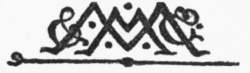

Title: The origins of art; a psychological & sociological inquiry
Author: Y. Hirn
Release date: December 2, 2021 [eBook #66869]
Most recently updated: October 18, 2024
Language: English
Other information and formats: www.gutenberg.org/ebooks/66869
Credits: Turgut Dincer, Les Galloway and the Online Distributed Proofreading Team at https://www.pgdp.net (This file was produced from images generously made available by The Internet Archive)
Obvious typographical errors have been silently corrected. Variations in hyphenation have been standardised but all other spelling and punctuation remains unchanged.
The cover was prepared by the transcriber and is placed in the public domain.
THE ORIGINS OF ART

A PSYCHOLOGICAL & SOCIOLOGICAL
INQUIRY
BY
YRJÖ HIRN
LECTURER ON ÆSTHETIC AND MODERN LITERATURE AT THE
UNIVERSITY OF FINLAND, HELSINGFORS
London
MACMILLAN AND CO., Limited
NEW YORK: THE MACMILLAN COMPANY
1900
All rights reserved
[Pg vi]
The aim and scope of this book is sufficiently indicated by its title. I have endeavoured throughout to restrict my attention to questions connected with the origins of art. Points of history and criticism have been touched upon only in so far as they appeared to contribute towards the elucidation of this purely psychological and sociological problem. In order to save space as well as to spare the reader’s attention, the descriptive parts have been concentrated as much as possible. As a rule, only one ethnological example, which has been selected as typical, is described in the text, while the corroborating examples are represented by references in the footnotes. And even of these references only such are adduced as have been considered especially significant. Only in one matter have I aimed at completeness, viz. that of reference to authors from whom I have borrowed facts or observations. And whenever in earlier literature I have found theories which have appeared similar to the views advanced in this book, these similarities have been pointed out in the footnotes.
[Pg vii]
There is one point, however, to which the reader’s attention should be called in this Preface. When treating of the art-impulse I have—especially in the tenth chapter—mentioned in the footnotes some modern writers on æsthetic, who, although starting from different assumptions, have arrived at a conception of art which in many points may be compared to the one advanced in this book. This comparison, however, has not been carried out in the text. Considerations of space account for this omission; but it has a further ground in the circumstances under which the present work has originated. A part of it, containing the examination of feeling and its expression, and the chapter on “Animal Display,” was published in Swedish as early as 1896[1]—that is, before the above-mentioned authors had made their theories known. This is not mentioned in order to raise any futile questions of priority, but only as a justification of the way in which my conclusions have been presented.
It has appeared to me that the continuity of the argument could not but have been broken if, instead of proceeding from my original starting-point, I had based my conclusions upon a critical examination of modern æsthetic doctrines. And I trust that the differences between the thesis of this book and other emotionalistic explanations will appear with sufficient[Pg viii] clearness to the attentive reader even if they have not been expressly pointed out in the text.
There are, no doubt, many points, a fuller treatment of which might have been to the advantage of the book. The force of circumstances has compelled me to aim at brevity before anything. But even if it had been possible to give this study a far greater comprehensiveness, the difficulties of expressing myself in a foreign tongue would have withheld me from any avoidable amplification. I have constantly been conscious of my audacity in appearing before the English public without sufficiently mastering the English language, and I have been anxious not to make my offence greater by any number of pages than it already is.
That it has been possible at all to publish this research in English is only a result of the kind assistance which I have received from my English friends. I am indebted to Mr. G. G. Berry in Oxford, and Mr. Leonard Pomeroy in London, who have revised parts of the manuscript. And I am further indebted to my publishers for procuring me the assistance of Mr. Stephen Gwynn in preparing the book for the press. He has helped me to avoid needlessly technical expressions, and in other ways has given the work a more readable style. But he has not restricted himself to these emendations. He has assisted me with valuable suggestions as well as with information. The improvement which the work has derived from his collaboration can be sufficiently appreciated only by its author.
[Pg ix]
In purely scientific matters I have benefited much from discussions with students of psychology and sociology in my own country as well as in England. My thanks are due to all of them, but especially to my old friends, Dr. Edward Westermarck and Dr. Richard Wallaschek.
The “List of Authorities quoted” and the Indexes have been compiled by my wife. This is, however, only the least important part of the assistance which throughout the book has been rendered to me by the constant collaborator in all my researches.
Y. H.
Helsingfors, August 1900.
[Pg x]
| CHAPTER I | ||
| PAGE | ||
| The Problem stated | 1 | |
| CHAPTER II | ||
| The Art-Impulse | 18 | |
| CHAPTER III | ||
| The Feeling-Tone of Sensation | 30 | |
| CHAPTER IV | ||
| The Emotions | 43 | |
| CHAPTER V | ||
| The Enjoyment of Pain | 56 | |
| CHAPTER VI | ||
| Social Expression | 72 | |
| CHAPTER VII | ||
| Deduction of Art-Forms | 86 [Pg xi] | |
| CHAPTER VIII | ||
| Art the Reliever | 102 | |
| CHAPTER IX | ||
| The Work of Art | 111 | |
| CHAPTER X | ||
| Objections and Answers | 134 | |
| CHAPTER XI | ||
| The Concrete Origins of Art | 143 | |
| CHAPTER XII | ||
| Art and Information | 149 | |
| CHAPTER XIII | ||
| Historical Art | 164 | |
| CHAPTER XIV | ||
| Animal Display | 186 | |
| CHAPTER XV | ||
| Art and Sexual Selection | 203 | |
| CHAPTER XVI | ||
| The Origins of Self-Decoration | 214 | |
| [Pg xii] | ||
| CHAPTER XVII | ||
| Erotic Art | 228 | |
| CHAPTER XVIII | ||
| Art and Work | 249 | |
| CHAPTER XIX | ||
| Art and War | 261 | |
| CHAPTER XX | ||
| Art and Magic | 278 | |
| CHAPTER XXI | ||
| Conclusions | 298 | |
| LIST OF AUTHORITIES QUOTED | 307 | |
| INDEX OF AUTHORS | 323 | |
| INDEX OF SUBJECTS | 328 | |
[Pg 1]
When, one hundred and fifty years ago, Baumgarten wrote the treatise to which he gave the name Aesthetica, and which he described as a “theory of liberal arts and beautiful thinking,” it seemed to him needful to apologise for attracting attention to a field of inquiry so low and sensuous as that province of philosophy to which he then affixed a name. Many, he thought, might regard art and beauty, which appeal primarily to the senses, as subjects beneath the dignity of philosophers.[2] Yet the theories and the ideas which were first brought together as an organised body of thought in Baumgarten’s short manual had so deeply influenced the speculations of his age that, a generation later, the most important questions of life came to be treated as æsthetic problems. The philosophy of art, far from needing to justify its existence, dominated all philosophy—ethics, metaphysics, and even cosmogony. Imagination was treated as the ruling faculty in all creation, and beauty was referred to as the criterion, not only in art, but in morality. Yet the importance thus given to æsthetic speculation was transitory, and the period during which philosophers were concerned, not only to find a[Pg 2] general criterion of beauty for the arts, but also to apply that criterion far beyond the sphere of art, has been succeeded by an age which neglects speculation on art and beauty for other tasks which are regarded as far more important. Such rapid changes within a few generations appear almost incomprehensible. But they can easily be explained if we take into account the intimate connection which always exists between æsthetic speculation and prevailing currents of thought.
In Mr. Bosanquet’s History of Æsthetic it has been pointed out with great clearness to what extent the earlier prosperity of æsthetic studies was caused by the general philosophical situation. The theory of æsthetic, as set forth in Baumgarten’s chapter on cognitio sensitiva, and further developed in Kant’s Kritik der Urtheilskraft, dealt, as is well known, with a form of judgment which is neither purely rational nor purely sensual.[3] In metaphysics, for philosophers who had to struggle with what seemed to them an irreconcilable opposition between reason and the senses, this conception of a mediative faculty must have satisfied a most urgent need. Similarly we may suppose that the ethical observer felt himself emancipated from the narrow antagonism between body and spirit by looking at our actions in the æsthetic way. In proportion, however, as general science has been able to do away with the old dualism of higher and lower faculties, the judgment of taste has necessarily lost importance. In the development of monistic philosophy and monistic morals we may thus see one important factor, by the influence of which æsthetic has been ousted from its central position.
The evolution of modern art has been still more injurious to æsthetic speculation than the progress of[Pg 3] science. In the palmy days of art-philosophy conditions were eminently favourable to universal generalisations. The great periods of art, classical antiquity and the Renaissance, were so remote that only their simplest and most salient features were discerned. Nor did the art of the period exhibit the bewildering multiplicity of a fertile age,—least of all in Germany, the home and centre of æsthetic inquiry. The formative arts were less important than ever before; music, which was so soon to eclipse all other arts, had not yet awakened the interest of philosophers. The crafts were at a low ebb; landscape-gardening is indeed the only kind of applied art that we hear about at this time. Beauty, art, the ideal—these and all other general notions must have been suggested with unsurpassable simplicity by this uniform and monotonous artistic output. It is easy to understand the eagerness and the delight with which the earlier writers on æsthetic, once the impulse given, drew conclusions, made comparisons, and laid down laws. But it is equally evident that speculative zeal was bound to fall off as soon as the province of art was enlarged and its products differentiated.
Even the more intimate knowledge of classical culture which was subsequently gained, necessitated important corrections in æsthetic dogmas. The artistic activities of savage tribes, which have been practically unknown to æsthetic writers until recent years, display many features that cannot be harmonised with the general laws. And in a yet higher degree contemporary art defies the generalisations of a uniform theory. With greater mastery over materials and technique, the different arts have been able to produce more and more specialised forms of beauty. The painter’s ideal can no longer be confused with that of the poet or the story-teller,[Pg 4] nor the sculptor’s with that of the actor. Pure music, pure poetry, pure painting, thus develop into isolated, independent arts, of which each one establishes its own laws and conditions for itself. The critic who, in spite of this evolution, tries to apply a narrow æsthetic standard of beauty to all the various arts may indeed—according to his influence—delay the public appreciation of modern works, and thus indirectly impede artistic development. But no amount of theorising will enable him to arrest the growth of artistic forms whose very existence contradicts the generalisations of the old systems. And he is equally powerless to stop such violations of the supposed frontiers of the different arts as continually occur, for instance, in descriptive music, or in poetry like that of Gautier, which aims at producing a pictorial impression by means of words.
It is only natural that, in times so inopportune, general speculations on art and beauty have been more and more abandoned in favour of detailed studies in the technicalities of art, historical researches in which works of art are considered chiefly as documents bearing on culture, and experiments on the physiology and psychology of æsthetic perception. For art itself and its development it would perhaps be unimportant if a science which has never exercised any great positive and direct influence on artistic production should completely disappear. But from the theoretical point of view it would be matter for regret if artistic activities ceased to be considered as a whole. And so also would it be if æsthetic feelings, judgments of taste, and ideals of beauty came to be treated only in appendices to works on psychology. It is true that all these notions have irremediably lost their former metaphysical and philosophical importance. But in compensation, art and[Pg 5] beauty have for modern thinking acquired a social and psychological significance. To determine the part which the production and the enjoyment of works of art play in their relation to the other factors of individual and social life—that is indeed a task which is momentous enough to be treated in a science of its own. Modern æsthetic, therefore, has still its own ends, which, if not so ambitious as those of the former speculative science of beauty, are nevertheless of no small importance. These ends, however, can no longer be attained by the procedure of the old æsthetic systems. As the problems have changed with changing conditions, so too the methods must be brought into line with the general scientific development. Historical and psychological investigation must replace the dialectic treatment of the subject. Art can no longer be deduced from general, philosophical, and metaphysical principles; it must be studied—by the methods of inductive psychology—as a human activity. Beauty cannot be considered as a semi-transcendental reality; it must be interpreted as an object of human longing and a source of human enjoyment. In æsthetic proper, as well as in the philosophy of art, every research must start, not from theoretical assumptions, but from the psychological and sociological data of the æsthetic life.
Such a procedure, however, is encumbered with difficulties, of which the writers on speculative æsthetic were scarcely aware. When theories of art and beauty were based on general a priori principles, there could not possibly be any doubt as to the point of departure in the several researches. But when we have no assumptions to start from, the very demarcation of the subject may become a matter of uncertainty. In the philosophy of art, to which department of æsthetic I[Pg 6] wish to restrict my researches in the present work, this difficulty of formulating the data and quæsita—the facts which we have to go upon, and the facts which we wish to find out—constitutes the first, and by no means the least important, problem.
If we are to embark upon a scientific treatment of art without any preconceived definitions, the aim and conditions of such treatment can only be determined by examining the prevailing notions on the subject, as they are expressed in language and in literature. As an interpretation for general use and of general applicability, a theory of art can claim attention only if it conforms to the recognised usage of the principal æsthetic terms. In the various definitions of art which are contained in the different æsthetic systems, we must therefore try to find some point of unity from which to approach our subject. The difficulties of such a task are evident to any one who has gone through the discouraging experience of reading a history of æsthetic. The investigator who seeks an accurate demarcation of the whole area of art, as distinguished from other departments of life, meets with partial definitions which can be applied only to certain fixed forms of art. We need mention but a few of the most typical instances. Even an ardent admirer of Taine is compelled to admit that his generalisations are too exclusively derived from the study of poetry and the formative arts. In the same way it is only by laborious adjustments that the theory of Vischer can be applied to music and lyric poetry; the aphorisms of Ruskin do not even pretend to apply to any but the formative arts; and Mr. Marshall’s Æsthetic Principles—to adduce one of the most recent attempts in general art-theory—are too obviously those of an expert in architecture. In none of the modern[Pg 7] systems has sufficient room been made for certain forms of art which, from the evolutionist’s standpoint, are of the highest importance: such as acting, dancing, and decoration. All the one-sided definitions are, moreover, so inconsistent with each other that it seems impossible to make up for their individual deficiencies by an eclectic combination. It is not to be wondered at, therefore, if some writers on art, confused by the bewildering contradictions of æsthetic theories, have called in question the very existence of any universal art-criterion.[4]
Those who adopt this attitude—which seems the more justified now that the arts have become widely differentiated—deny the possibility, not only of all general art-philosophy, but also of any sociological and psychological treatment of artistic activities as a whole. But even if all other hypotheses are banished, æsthetic research cannot possibly dispense with the fundamental assumption of the unity of art. And in point of fact there can be found in most systems, if we do not insist on too minute and positive demarcations, at least one common quality which is ascribed to all its different forms. Notwithstanding the mutual contradictions of art-theories, the believers in a general æsthetic can always appeal to the consent with which the majority of authors have upheld the negative criterion of art. Metaphysicians as well as psychologists, Hegelians as well as Darwinians, all agree in declaring that a work, or performance, which can be proved to serve any utilitarian, non-æsthetic object must not be considered as a genuine work of art. True art has its one end in itself, and rejects every extraneous purpose: that is the doctrine which, with more or less explicitness,[Pg 8] has been stated by Kant,[5] Schiller,[6] Spencer,[7] Hennequin,[8] Grosse,[9] Grant Allen,[10] and others. And popular opinion agrees in this respect with the conclusions of science. This distinctive quality of independence seems therefore to afford us a convenient starting-point for the treatment of art in general.
Owing to its negative character, this criterion does not give us much information as to the real qualities of art. But even the poorest definition is enough to begin with, if it only holds good with regard to all particular cases. Unfortunately, however, we need only apply the test of independence in the concrete instance to find that even the applicability of this single accepted criterion may be seriously disputed. There is scarcely any author, however he may formulate his general definitions of art, who would assess the relative value of art-works according to their degrees of disinterestedness. No candid man would, for instance, nowadays contend that an arabesque composition is per se more æsthetically pure than a statue or a poem.[11] But we may even go farther. We must question whether every work of art ought to be degraded from its æsthetic rank, if it can be convicted of having served any external utilitarian purpose. This strict conception of the æsthetic boundaries has been eloquently attacked by Guyau in his celebrated treatise, Le principe de l’art et de la poésie.[12] Though the ultimate conclusions of this[Pg 9] work are perhaps not so clear as might be desired, yet we do not see how his attitude in estimating concrete manifestations of art can be assailed. It would, to take an example, be absurd to contend that the singing of Taillefer lost in æsthetic value by contributing to the victory of Hastings. And however strictly we may insist upon the requirement that every genuine work of art should have been created purely for its own sake, we cannot possibly conceal the fact that some of the world’s finest love lyrics were originally composed, not in æsthetic freedom, which is independent of all by-purposes, but with the express end of gaining the ear and the favour of a beloved woman. The influence which such foreign, non-æsthetic motives have exercised on art will also become more and more apparent with increased knowledge of the conditions of æsthetic production. The further the psychological biographer pushes his indiscreet researches into the private life of individual artists, the more often will he find that some form of interest—personal, political, ethical, religious—enters into the so-called disinterested æsthetic activity. Such instances must induce undogmatic authors to relax to some extent the strict application of this criterion. And even those philosophers who, in spite of the historical evidence, insist upon applying it will be compelled to admit that they have taken for works of genuine art productions which, from their philosophic standpoint, have no claim to the title.
The danger of such mistakes is all the greater when one has to deal with the lower stages of artistic development. In point of fact recent ethnological researches have conclusively proved that it is not only difficult, but quite impossible, to apply the criterion of æsthetic independence to the productions of savage and barbarous[Pg 10] tribes. It is true that the large province of primitive art has not as yet in its entirety been made the subject of systematic study. But, on the other hand, the results which have been arrived at with regard to decoration, its most typical form, amply bear out our view. In almost every case where the ornaments of a tribe have been closely examined, it has appeared that what to us seems a mere embellishment is for the natives in question full of practical, non-æsthetic significance. Carvings on weapons and implements, tattooings, woven and plaited patterns, all of which the uncritical observer is apt to take for purely artistic compositions, are now explained as religious symbols, owners’ marks, or ideograms. There is still room for discussion as to whether in certain individual interpretations the tendency to look for concealed meanings has not been carried too far. But there can be no doubt that the general principles which to many students seemed so fantastic when first formulated by Stolpe, Read,[13] and others, have derived additional support from every fresh inquiry into primitive systems of decoration.
The isolated researches which have been carried on within the department of primitive literature and drama all point in the same direction. Wherever ethnologists have the opportunity of gaining some insight into the inner life of a savage tribe, they are surprised at the religious or magical significance which lies concealed behind the most apparently trivial of amusements. And it is to be remarked that they have learned to appreciate[Pg 11] this esoteric meaning, not by a closer study of the manifestations themselves, but through information acquired by intercourse with the natives. There is often not a single feature in a savage dance which would give the uninitiated any reason to suspect the non-æsthetic purpose. When North American Indians, Kaffirs, or Negroes perform a dance in which all the movements of the animals they hunt are imitated, we unavoidably see in their antics an instance of primitive but still purely artistic drama. It is only from the descriptions of Catlin, Lichtenstein, and Reade[14] that we learn that these pantomimes have in reality quite as practical a purpose as those imitations and representations of animals by which hunters all over the world try to entice their game within shooting distance. According to the doctrine of sympathetic magic, it is simply an axiomatic truth that the copy of a thing may at any distance influence the thing itself, and that thus a buffalo dance, even when it is performed in the camp, may compel the buffaloes to come within range of the hunters. But the deceptive appearance of disinterestedness, which in these cases might have led one to mistake a mere piece of hunting magic for a specimen of pure dramatic art, is apt to make us cautious about accepting as independently æsthetic any performance of primitive man.
In the songs and dances by which savages exhort themselves to work and regulate their exertions we find[Pg 12] an aspect of utilitarian advantage which is real and not imaginary. Evidently also this advantage, and not any independent æsthetic pleasure, is—intentionally or unintentionally—aimed at in the war-pantomimes, the boating songs, dances, etc. And it is no doubt for this reason that music and dance have attained so surprising a development in the lower stages of culture. In trying, therefore, to explain the historical development of art, we are compelled to take into account that foreign purpose which is repudiated in art-theory.
If every work of art were really an end in itself—a Selbstzweck—standing quite isolated from all the practical utilities of life, it would be nothing less than a miracle that art should be met with in tribes which have not yet learnt to satisfy, nor even to feel, the most elementary necessities of life. In such a case it is not music only which would, as Wallace thinks, have to be explained by supernatural causes:[15] primitive art in all its departments would baffle our attempts at rational interpretation. By studying, however, the artistic activities of savage and barbarous man in their connection with his non-æsthetic life, writers on evolutionary æsthetic have succeeded in solving this great crux of art-history. The dances, poems, and even the formative arts of the lower tribes possess indeed, as every ethnologist will admit, unquestionable æsthetic value. But this art is seldom free and disinterested; it has generally a usefulness—real or supposed—and is often even a necessity of life.[16]
A historical conception of art is thus, it appears,[Pg 13] incompatible with a strict maintenance of the æsthetic criterion. But it may still be asked whether we are therefore compelled to join Guyau in abolishing all distinctions between art and other manifestations of human energy.[17] By doing away with the only definition which is common to the majority of æsthetic systems, we should dissociate ourselves from all previous views on art. And it seems hard to believe that all dogmatic writers on æsthetic, one-sided as they may often seem, have founded their theories on a pure fiction. The independent æsthetic activity, which simply aims at its own satisfaction, cannot have been invented for the sake of the systems. The mere fact that so many theories have been proposed for its explanation furnishes, it seems to us, a sufficient proof that the conception of this activity corresponds to some psychological reality. Certainly the “end in itself” has not played so important a part in the practice of artists as writers on æsthetic would have us believe; and it is impossible to distinguish its effects in concrete individual instances. But from all we know of the life and work of artists, there appears to be a tendency—more or less consciously followed, it is true, in different cases—to make the work its own end. And in the public we can in the same way notice an inclination—which grows with increasing culture—to regard art as something which exists for its own sake, and to contemplate its manifestations with independent æsthetic attention. Whatever we may think about the genesis of particular pictures and poems, we know that at least they need no utilitarian, non-æsthetic justification in order to be appreciated by us. And with as much assurance as we can ever feel in com[Pg 14]parative psychology we may take it for granted that the same way of looking at art has prevailed in other stages of culture as well. However cautious one may be in drawing conclusions from analogies between higher and lower forms, a closer study of primitive art must needs compel every one to admit that these dances, poems, and ornaments, even if they originally served practical, religious, or political aims, may at least have come by degrees to be enjoyed in the same way as we enjoy our art. By denying such subjective independence in the creation and enjoyment of art, we should be no less guilty of one-sidedness than those authors who deny that genuine art has ever been influenced by “foreign purposes.” If it is presumptuous to adduce any particular works or manifestations in proof of free and independent production, it may be no less audacious to contend that even the most primitive form of art has flourished in tribes destitute of all æsthetic cravings. There is room for discussion on the degree of influence which “autotelic”[18] artistic activity has exercised in particular works and manifestations. It may also be made an object of research to determine at which precise stage of development æsthetic attention becomes so emancipated as to entitle us to speak of a pure and free art-life. But it does not seem that such inquiries can ever lead to any positive result. The more one studies art, especially primitive art, from a comparative and historical point of view, the more one is compelled to admit the impossibility of deciding where the non-æsthetic motives end and the æsthetic motives begin. The only result we can reach is the somewhat indefinite one that it is as impossible to explain away the artistic[Pg 15] purpose as it is to detect its presence in a pure state in any concrete work of art.
For art-philosophy as a distinct science even this non-committal conclusion is of vital importance. It gives us a right to regard all the forms and developments of art as witnesses to an activity which tends to become more and more independent of the immediate utilities of life. This tendency, on the other hand, not only affords us a point of unity from which to start upon a research into the general philosophy of art; it also presents to us one of the greatest problems of the same science. How it is that mankind has come to devote energy and zeal to an activity which may be almost entirely devoid of a utilitarian purpose is indeed the riddle, sociological as well as psychological, which would seem in the first place to claim the attention of the philosopher. To the writer of this book, at any rate, it appeared that a discussion, and an attempt at solution, of this seeming paradox was a task sufficiently important and interesting to form of itself the subject of a special investigation.
But although the aspects of autotelic artistic activity give us at once a datum and a problem on which we may confidently base our research, we must not overlook the peculiar difficulties that will necessarily arise from the exclusively psychological, non-historical character of this basis. A historic study of art shows us that the artistic activity proper can never be explained by examining concrete works as we meet them in reality. Whenever we have to deal with art as autotelic, the need of theoretical abstraction forces itself upon us with irresistible cogency. It is of no avail to argue from the data of art-history, because we can never fully know the mental origin of the works. The[Pg 16] problem presented to us by the tendency to engage in artistic production and artistic enjoyment for their own sake can only be solved by studying the psychology both of artists and of their public. The “art-impulse” and the “art-sense,” as referring to subjective tendencies in creators and spectators, are the chief notions with which we have to operate in such an investigation. And when we are obliged to introduce the notion of the “work of art” we have to remember that this term, strictly speaking, refers to an abstract and ideal datum. Only by thus restricting our attention to the psychical facts can we attain any clear conception of that autotelic aspect of art on which so much stress has been laid in all æsthetic philosophy.
It is needless to say, however, that even a purely philosophic interpretation of art would be impossible without a knowledge of its works and manifestations as they appear in real life, with all their extraneous, non-æsthetic elements. The psychological examination must therefore necessarily be supplemented by an historical one. The methods of the latter research cannot be the same as those used in a strictly æsthetic inquiry. And the words will naturally be employed in a different sense. We do not at that stage demand of a poem, a painting, or a drama, that it should fulfil more than the technical requirements of the several arts. The ornamentation of a vase, e.g. is in this sense a work of art even if it serves a magical, i.e. a supposed practical purpose. Indeed it is most advantageous, if we wish to bring out the influence of sociological factors with the greatest possible clearness, to concentrate our attention upon the very qualities which we have to disregard in the treatment of purely artistic activity. The productions of primitive tribes, in which art is so closely connected with life,[Pg 17] supply the most profitable material for such a study. After having examined, in these simple forms, all the sociological aspects of art, it will be possible to place the two art-factors in the most illustrative antithesis and to study their mutual influence. From this it should be possible to suggest—although in this work no detailed attempt will be made to follow out the reasoning—why it is that the concrete work of art, although its historical origin may be entirely non-æsthetic, has always proved so eminently adapted to serve the needs of the purely aesthetic craving. And by starting from the conception of æsthetic activities which has been arrived at on psychological grounds, it should also be possible to determine the particular qualities in individual works of art which make them more or less able to satisfy this craving. Thus a theory of the psychological and sociological origins of art may furnish suggestions for those which have been considered as distinctive of æsthetic proper, such as the critical estimation of works of art, or the derivation of laws which govern artistic production.
[Pg 18]
There are two things which have to be investigated—the reason why works of art are created, and the reason why works of art are enjoyed. By choosing at the outset to approach art in its active aspect—to examine into the impulse of the artist—we do not desert the central field of æsthetic inquiry. On the contrary, it seems that a study of art-production affords the most convenient starting-point for any comprehensive treatment of art; all the more because every æsthetic pleasure, even when apparently most passive, always involves an element of unconscious artistic creation.[19] When absorbed in the beauty of nature we do in fact appear to ourselves to be entirely receptive; but in truth our enjoyment, if the enjoyment has any æsthetic value at all, is always more or less derived from the activity of our own mind. It does not matter much, from the psychological point of view, whether we make an abortive but original effort to select and arrange the impressions which we receive, as is the case when a new aspect of nature delights us, or whether we merely reproduce at second hand the impression originally arranged by an artist, as happens when we admire a statue, or recognise in a[Pg 19] landscape some effect that Turner has recorded.[20] In either case the passive attitude can never be explained without reference to the active one.
In the historic interpretation of art it is of no less importance to study its productive side. It is only by considering art as an activity that we can explain the great influence which it has exercised on social as well as on individual life. These are, however, views which can only be properly established in the later chapters. Here we have merely to dwell on the aspects which present themselves to the psychological observer; and there is no doubt that from his point of view the impulse to produce works of pure art constitutes the chief æsthetic problem. If once the creation has been satisfactorily accounted for, it is relatively easy to explain the subsequent enjoyment of art. Accordingly, by concentrating our attention on the art-impulse we approach the art-problem at its very core.
It has, however, been contended by some authors that the independence of external motives is nothing peculiar to art-production. There is, undoubtedly, a certain kind of scientific study—for instance, some departments of higher mathematics—which may be carried on entirely for its own sake without any regard to practical application, or even to increased knowledge of nature. And it is even more impossible to find any immediate utilitarian purpose for all the intense activity, mental and physical, which is devoted to sports and games. Every one knows that the “end in itself” which any of these affords may in many cases exercise as great an attraction as any of the utilitarian aims in life.[Pg 20] Chess is said to have a demoniac power over its devotees, and the attachment of a golfer to his game can only be described in the language of the most intense passion. The same sacrifice of energy and interests to a one-sided and apparently useless purpose, which in art seems so mysterious, may thus, as Professor Groos remarks, be found in activities of far less repute.[21] It is evident that if artistic creation were in no wise different from these other examples of autotelic manifestations, there would be no ground for considering the art-impulse as a separate or distinctive problem.
We can scarcely believe, however, that even Professor Groos himself would seriously maintain the parallel between art-production and the last-mentioned activities. There are indeed cases in which a man of science devotes his whole energy to a task which is so abstract that it seems to give no satisfaction to the craving for positive truth. But it is always an open question whether the attractiveness of such researches is not, strictly speaking, more æsthetic than scientific. Higher mathematics is perhaps, for those that live in the world of abstract quantities, only an abstract form of art, a soundless music or a wordless poetry. In other cases the eagerness with which pure science is pursued as an autotelic end may be explained as a result of acquired habits. Like the miser, the passionate researcher may often gradually lose sight of the ultimate aim of his activity and concentrate all his attention on the means. There can be no question of denying the emotional value and the great attractive force which thus comes to be attached to these secondary purposes. But in comparing such autotelic activities to those of art we have to remember that the passion, however intense it[Pg 21] may be, is probably not primary but derived; and it is in any case self-evident that it can be developed only in exceptional cases and in peculiarly predisposed individuals.
By the same criterion we can also separate the art-desire from the love of games and sports. However passionate the sporting mania may be in individuals or nations, it can never be compared as a universal and primary impulse with the craving for æsthetic creation. Philosophers who bestow their whole attention only on the mature works which can be studied in the history of art, may indeed contend that even the art-impulse is given to some favoured few. But this view, which would reduce all art-life to the status of a great and marvellous exception, cannot possibly be upheld in a psychological æsthetic.
It is, no doubt, the fact that the percentage of executive artists in modern nations is an almost negligible quantity. It is also probable that—contrary to a common notion—the poets, the painters, and the dramatists form a distinct class even among the lower tribes.[22] But in treating the art-impulse as a psychological phenomenon the inquiry cannot be restricted to the few individuals who publicly practise a certain art. As far as the artistic powers are concerned, these undoubtedly stand apart from the rest of mankind. But we are not entitled to maintain that they are also distinguished by some peculiar psychical impulse. From the point of view of artistic perfection, there is all the world between the youthful verses of Goethe and the doggerel of a common schoolboy. But, psychologically, the schoolboy’s doggerel may be the result of as strong a craving for poetic expression as any of the[Pg 22] world’s greatest poems.[23] Bad or good, known or unknown, every manifestation of artistic activity is equally illustrative for our purpose. We have to count with the immense number of dilettanti who produce in privacy and in secret, as well as with recognised artists. And even those unfortunate persons who have never been able to find for themselves any satisfactory mode of æsthetic expression may still be adduced in proof of the universality of the artistic desire. If the notion of art is conceived in its most general sense, every normal man, at some time of his life at least, is an artist—in aspiration, if not in capacity.
If, moreover, we take into consideration the eagerness and devotion which is lavished upon artistic activity—not least, perhaps, by those who have never appeared as artists—we shall be compelled to admit that the art-impulse is not only commoner, but also stronger and deeper, than any of the above-mentioned non-utilitarian impulses. If it can be explained at all, it is only by deriving it from some great and fundamental tendency of the human mind. This fact has, naturally enough, not been realised by those writers on æsthetic who only study the ideal work of art as it appears among civilised nations. In short, the great systems of æsthetic philosophy have never expressly stated the problem of finding an origin for the art-impulse; and any interpretation of that impulse which may be derived constructively from their speculations upon the work of acknowledged artists is irreconcilable with the wider notion of art as a universal human activity. If the aim of every artist really were, as[Pg 23] Vischer must have thought, to reinstate by the creation of a semblance the Idea in the position from which it is in Reality always thrust by material accidents; if he desired, for instance, to show a human character as it would be but for the accidents of life;[24] or if, to use the language of Taine, the artist’s main object were to produce a representation of nature in which the essential characters enjoy an absolute sovereignty; if he strove to depict a lion in such a way to emphasise specially these leonine traits which distinguish the lion from any other great cat,[25]—then it would be hard to understand the attraction which art has exercised on people who are almost devoid of intellectual cravings. We could not possibly find any connection between modern and primitive art. Nor could we explain why, for instance, poetry and music are so often cultivated by persons who do not otherwise show the slightest eagerness to understand the hidden nature of things, who do not meddle with ideas or “dominating faculties.” Even in the case of philosophically-minded artists such motives are probably somewhat feeble. The intellectualistic definitions may perhaps explain the æsthetic qualities of the work of art itself. But they can never account for the constraining force by which every genuine work of art is called into existence.
There are some authors, however, who have felt the need of a dynamic explanation of the art-impulse, which should trace the motive force to its origin. It was so with Aristotle when he interpreted artistic production as a manifestation of the desire to imitate. By this theory art is indeed brought into connection with a general animal impulse, the æsthetic importance of[Pg 24] which can scarcely be overestimated. It is only by reference to the psychology of imitative movements that we shall be able to explain the enjoyment of art. But it seems, nevertheless, somewhat strained to make imitation the basis and purpose of artistic activity, seeing that there are various forms of art, as, for instance, architecture and purely lyrical music or poetry, in which we can scarcely detect any imitative element at all. The theories of Aristotle, of Seneca, and all their modern followers, can only be upheld if the word “imitation” is used in a much wider sense than that which it generally bears. But even those who, with Engel, would consider the bodily movements as “imitating the thoughts,”[26] or those who in æsthetic would speak of “circulary reaction”[27] as a phenomenon of imitation, would find it hard to discover in any of these relatively automatic manifestations such a mental compulsion as that which impels to artistic activity. Moreover, as we need scarcely point out, art in all its forms always strives after something more than a mere likeness.
It seems equally superfluous to emphasise the fact that no genuine artist has made it his sole object to please. The fatal confusion between art-theory and the science of beauty has indeed led some writers on æsthetic to derive artistic activities from an impulse to “produce objects or objective conditions which should attract by pleasing.”[28] Such views will especially recommend themselves to those who believe in an animal art called forth by sexual selection. Nor can it be denied that the means of attraction employed in the[Pg 25] competition for the favour of the opposite sex supply a part of the material which is used in the various arts.[29] With the artistic impulse itself, which, according to its very definition, is independent of external motives, the various means of attraction have no connection whatever.[30]
From the theoretical point of view it is undoubtedly easier to defend Professor Baldwin’s way of stating the case, in which the “self-exhibiting impulse” takes the place of the “instinct to attract by pleasing.”[31] Figuratively speaking, an element of self-exhibition is involved in every artistic creation which addresses itself to a public. And without a public—in the largest sense of the word—no art would ever have appeared. But it seems somewhat difficult to make this self-exhibiting—in a sense which implies an actual audience—the aim and purpose of, for instance, the most intimate and personal examples of lyrical poetry.
It may of course be contended, by those who advocate the importance of the last-mentioned interpretations, that the variety of art-forms compels us to assume, not one, but several art-impulses. At this stage of our research we cannot enter upon a discussion of such views; but it will at least be admitted that explanations which can be applied in the whole field of art must be preferable to partial definitions.
This merit of universality, at least, cannot be denied to the theories which derive art from the playing impulse. The notion of a sportive activity involves precisely that freedom from external, consciously[Pg 26] utilitarian motives which, according to the consensus of almost all writers on æsthetic, is required in every genuine manifestation of art. It is not surprising, therefore, that it was by reference to the play-impulse that Schiller tried to distinguish artistic production from all “unfree” forms of activity.[32] It is true that the notion of “play” as used by Schiller and Spencer—who has given the theory a physiological foundation—is chiefly important as a negative demarcation. But even Schiller brings in a positive factor when he speaks of the force by which “overflowing life itself urges the animal to action” (“wenn das überflüssige Leben sich selbst zur Thätigkeit stachelt”).[33] In Spencer’s theory, on the other hand, the “excessive readiness” to nervous discharge which accompanies every surplus of vigour, and which, in his view, accounts for play, represents a motor element, the impelling force of which must be considered as very strong.[34] As is well known, Spencer, Wallace, and Hudson have applied this principle of surplus energy to explain so-called animal art, rejecting the theory which ascribes æsthetic judgment to the female.[35]
As formulated by the last-mentioned authors, the play-theory is, however, open to objection from a physiological point of view. It has been remarked by Dr. Wallaschek that, in speaking of animals, the phrase “surplus of vigour” ought to be superseded by “inapplicability of energy” or “unemployed energy.”[36][Pg 27] And still more explicitly Professor Groos has shown that a stored-up supply of energy is by no means a necessary condition for play.[37] But these criticisms have by no means deprived the play-instinct of its importance as a dynamic factor. Since Groos by his epoch-making researches has been able to prove that the majority of games—especially the games of youth—are based upon instincts, we can adduce as an impelling force “the demon instinct that urges and even compels to activity not only if and so long as the vessel overflows (to use a figure of speech), but even when there is but a last drop left in it.”[38] By considering artistic activity as a kind of play, one is therefore able to account for its great attractiveness, even when no “surplus of vigour” can be shown to exist.
In the beginning of this chapter we did indeed contend that the “compulsion” which prompts to artistic activity is too strong to be even compared with the passion for sports and games. But this superiority may of course be explained as a result of some peculiarity of this special kind of play. As a matter of fact art is, in a far higher degree than any of the sports and games, able to satisfy the greatest and most fundamental instincts of man. Groos has tried to prove that the artistic motives which in all times have been most popular, offer to the spectator as well as to the producer an opportunity for warlike and erotic stimulation;[39] and Guyau had already remarked how im[Pg 28]portant a part the moods of war, or rather of struggle, play in all enjoyment of art.[40] It is easy to understand the eager prosecution of an activity which thus affords free, if imaginary, exercise for instincts and tendencies which would otherwise be thwarted by the narrow restrictions of social life. We are all animals in captivity, and we eagerly seize every kind of vicarious function which can give at least a memory of the life from which we are excluded.
At lower stages of social evolution, where instincts are more in harmony with life, the play-element in art must evidently be of still greater importance. Artistic production and artistic enjoyment provide exercise for those very functions which are most important in real life. Art fulfils a great social mission, and is developed in subservience to the struggle for life. The play-theory, as formulated by Professor Groos, affords, therefore, in many cases an explanation of the high artistic level reached by the lower tribes. In our historical treatment of primitive dances and dramas we shall be continually obliged to have recourse to this theory. And it will thus appear that it is no deficient appreciation of its importance which compels us to look elsewhere for an explanation for the artistic impulse.
Play and art have indeed many important characteristics in common. Neither of them has any immediate practical utility, and both of them do nevertheless serve some of the fundamental needs of life. All art, therefore, can in a certain sense be called play. But[Pg 29] art is something more than this. The aim of play is attained when the surplus of vigour is discharged or the instinct has had its momentary exercise. But the function of art is not confined to the act of production; in every manifestation of art, properly so called, something is made and something survives. It is true that in certain manifestations—for instance in the dance or in acting—the effect is destroyed as soon as created; it survives only in the rhythm devised by the dancer, or in the spectator’s memory of the part played. But this is accidental, not essential to the nature of the arts as arts. On the other hand, there is nothing in the nature of the play-impulse to call for a stereotyping of the state of mind and feelings to which it gives rise. Still less can the artistic qualities, such as beauty and rhythm, which, however difficult to define scientifically, always characterise works of art, be interpreted as a result of the play-impulse. The theories of Schiller, Spencer, and Groos may indeed explain the negative criterion of art, but they cannot, any more than the imitation theories or the Darwinian interpretation, give us any positive information as to the nature of art.
In order to understand the art-impulse as a tendency to æsthetic production, we must bring it into connection with some function, from the nature of which the specifically artistic qualities may be derived. Such a function is to be found, we believe, in the activities of emotional expression.
It is therefore to the psychology of feeling and expression that we shall turn for the solution of the problem of the art-impulse.
[Pg 30]
Before attempting to prove that the impelling force in art-creation is to be explained by the psychology of feeling, we must first pay some attention to the general theory of emotional states. It would be impossible to assert anything about the æsthetic importance of such activities as have their origin in emotional conditions without first having made out the relation between feeling and movement.
In this purely psychological investigation it is advantageous to postpone all æsthetic considerations. The important thing is to get hold of the mental factors in their simplest possible form. Even the lowest feelings, therefore, the feeling-tones of mere physical sensation or the vaguest emotional states, such as comfort or discomfort, which are overlooked in all works on æsthetic proper, may be of great value in this preliminary discussion.
It is preferable to begin with the feeling-tones of definitely physical origin, because these hedonic elements have been subjected to an experimental investigation which could never be undertaken with regard to the complex emotions and sentiments. As early as 1887 Féré published some important researches on the re[Pg 31]lation between sensation and movement. By submitting persons to various external stimuli, he showed that every such stimulus calls forth a modification of the activities of the body, which modification, according to the intensity and the duration of the stimulus, takes the character either of enhancement or of arrest. In all cases when the apparatus used in the experiments indicated a shortened reaction-time and an increased development of energy, the subject of the experiment had experienced a feeling of pleasure. Every painful stimulus, on the other hand, was connected with a diminution of energy.[41]
These results have been corroborated in the main by the later researches of Lehmann. He has not, however, restricted his attention to the development of energy, but has also measured the changes in pulsation and respiration which occur under the influence of various stimuli. His conclusions are these:—
“Simple pleasurable sensations are accompanied by dilatation of the blood-vessels, and perhaps also by an increase in the amplitude of heart-contraction, together with an increase in the innervation of the voluntary muscles, at least of those connected with respiration. In sensations of pain one has to distinguish the first shock of irritation from the subsequent state. At the moment of irritation there ensues a deeper inhalation, and, if the irritation is strong, also an increase in the innervation of voluntary muscles. Then there generally follows a relaxation.”[42]
The physiological theory of pleasure and pain which can be deduced from these experiments is, however,[Pg 32] neither new nor original. Féré has himself pointed out that his researches only serve to prove the views which have been advanced with more or less explicitness by Kant, Bain, Darwin, and Dumont.[43] All authors who have closely studied the movements of expression have also remarked that pleasurable feelings are accompanied by a tendency towards increased activity (Gratiolet, Darwin, Bain, Bouillier, Mantegazza).[44] And the popular views on pleasure and pain, as we find them expressed in literature, all agree on this point: “La joie est l’air vital de notre âme. La tristesse est un asthme compliqué d’atonie.”[45] Every one knows that movement and unchecked increased activity generally create pleasure. And, on the other hand, functional inhibition is in our experience closely connected with feelings of pain.
Although these broad facts are universally recognised, there is nevertheless no unanimity with regard to their interpretation. It may be held, on the one hand, that the perception of those objective conditions which call forth pleasure is accompanied by a tendency to movement. That, conversely, movement creates pleasure would thus be the result of an association. But it may also be contended that the functional enhancement, the stimulation itself, when present to consciousness, is perceived as pleasure, and that the feeling-tone created by movement is thus not indirect and secondary, but, on the contrary, is a typical pleasure.
We do not by any means deny the influence which associative processes exercise on all our feelings and on[Pg 33] the activities connected with them. As has been shown by Darwin, animals as well as primitive man have earned their chief enjoyment, outside their delight of warmth and repose, by violent actions, such as hunting, war, and pairing fights.[46] And if it be objected that memories from those distant times cannot now influence our feelings, it must at least be admitted that within the life of the individual a firm foundation is laid for association between pleasure and activity.[47] Independently of all general theories, we must therefore reckon with association as a factor by which the motor element of pleasure is greatly increased. But it seems to us impossible to make the remembrance—conscious or unconscious—of earlier similar states the only ground of the activity which is connected with pleasurable feelings.
It is at least far more simple and consistent to explain, with Hamilton and Bain, the activity itself as the physiological condition of pleasure. If any increase of function—whether brought about by chemical, mechanical, or psychical (that is, indirectly mechanical) influences—be considered as a physiological condition of pleasure, and any arrest of function in the same way be considered as a counterpart of pain, then all states of pleasure or pain may be included in one common interpretation. Only it must be remembered that the increase of function can never be measured by any absolute standard. The same stimulus which in one individual calls forth pleasure may in another individual cause pain, and the same bodily activity which we enjoy when in a vigorous state of health may occasion suffering when we are weak or ill. Such variations are[Pg 34] evidently conditioned by the varying functional powers of the organs involved. When these powers are reduced, a stimulus, or a movement which usually produces a stimulating effect, may instead call forth depression and pain.
In every explanation of pleasure-pain, attention must therefore be paid not only to the claims which are made on the several organs by the objective causes (stimuli or movements), but also to the capacity of the organs to meet these claims. This capacity, on the other hand, is evidently dependent upon the supply of energy afforded by the nutritive processes. In the endeavour to pay due attention to both these factors Lehmann has been led to this conclusion: “Pleasure and pain may in all cases be assumed to be the psychical outcome of the relation between the consumption of energy which at a given moment is demanded from the organs, and the supply of energy which is afforded by nutrition.”[48] In the course of a lengthy and laborious investigation Marshall has arrived at a very similar result: “Pleasure and pain are determined by the relation between the energy given out and the energy received at any given moment by the physical organs which determine the content of that moment.” Pleasure is experienced, according to Marshall’s definition, whenever a surplus of stored energy is discharged in the reaction to the stimulus; pain is experienced whenever a stimulus claims a greater development of energy in the reaction than the organ is capable of affording.[49]
In this mode of treatment due attention is paid to those theories according to which the conditions of[Pg 35] pleasure are to be sought, not in expenditure of force, but in the receiving of force or in the recovery of balance.[50] But though this point has its own importance, it cannot by any means be put on a level with the dynamic aspect. Pleasure can never arise when the organs are not well-nourished, strong, and capable of function; but it arises only on the condition that they actually do perform a function. As Marshall has rightly remarked, there is no reason to believe that surplus of vigour and receipt of nourishment in themselves could ever be objects of consciousness.[51] As long as we can speak of mental states, these must be accompanied by corresponding activities. The chief merit of Marshall’s thesis is precisely this, that every emotional state, independently of its tone and of its perceptible manifestations, can be interpreted in terms of activity. Pleasure, acute or massive, appears as the result of a stimulus, which, owing to a happy proportion between its intensity and the functional capacity of the organ, has modified the bodily functions in such a way as to produce manifestations of energy. Pain, acute or massive, appears as the result of a stimulus, possibly of the same kind, which, owing to a disproportion arising from its own greater intensity or the smaller functional capacity in the organ, has called forth a functional inhibition—that is to say, that kind of activity which is manifested to us as an arrest of energy.
It would be too sanguine to expect the real nature of pleasure and pain to be exhaustively defined in any formula such as the above. From a theoretical point of view grave objections may undoubtedly be raised against[Pg 36] Marshall’s theory as well as against every general interpretation of emotional states. It may even be admitted, and we desire to admit it as soon as possible, that in several cases it seems extremely difficult to derive the feeling-tone of even the simplest sensations from the proportion between “energy given out and energy received.”[52] But since, as far as we can see, similar difficulties meet us in the application of every existing emotional theory, for the present we must consider the constructions of Mr. Marshall, notwithstanding their speculative and necessarily unsafe character, as affording us the most consistent explanation of the hedonic phenomena. In an earlier work, Förstudier till en konstfilosofi (A Preliminary Study for a Philosophy of Art), I have tried to discuss and refute some of the arguments which can be adduced against this theory. In the present work such a theoretic digression would lead us too far away from the main subject. For a right understanding of the relation between feeling and “expressional” movements it is not necessary, we believe, to adopt exclusively any one of the emotional theories. We shall be quite content if it is admitted that Mr. Marshall’s interpretation affords us a scheme or formula by the aid of which we can account, if not for the nature, at least for the external manifestations of our feelings.
In applying his definitions to the various kinds of pleasure and pain, Mr. Marshall has recourse to three important principles, viz. the limited amount of energy which our system is capable of developing at any given moment, the storage of surplus supplies of nourishment, and the transference of energy from one organ to another. By referring to these principles he has been able to[Pg 37] bring under his explanation those feelings which seem to correspond not to “activities,” but to “states.”[53]
As is well known, Hamilton had already pointed out the important, though unsuspected, element of activity which is involved in our enjoyment of dolce far niente.[54] But with the physiology at his command he could scarcely have explained why rest after heavy work is always accompanied by eminently pleasurable feelings. If it be assumed, however, that in the case of psychical effort, e.g., the call upon our limited fund of energy has reduced the vegetative functions to inactivity, and that this inactivity has caused a storage of nutritive supply, then it is self-evident that the vegetative functions, as soon as the one-sided effort has ceased, must discharge their surplus in movements of a pleasurable character.
The pain arising from restricted activity can equally be explained in terms of movement. If we believe that our system has a limited amount of energy which—as long as life is maintained—must necessarily be active in some direction or other, then we shall also understand that anything which closes the natural and usual outlet of this energy will give rise to activities in related organs, the nutritive state of which does not present the conditions of pleasurable function. Mr. Marshall has tried to indicate the details of the transition by which inactivity in one organ causes excessive activity in other organs. His description of the “gorging of the nutritive channels,” “the calling for aid of the disabled elements,” etc., is, however, too figurative and poetical to be of any importance in a psychological argument.[55][Pg 38] Taken as a vague and necessarily coarse metaphor, this physiological image may, however, illustrate a process which perhaps can never be exactly analysed, but which is nevertheless familiar to everybody. No one who has experienced in any higher degree the diffused sensation of gnawing inactivity can doubt the active element in this corroding feeling. One seems to feel how the checked and thwarted impulses devouringly turn themselves inward. Poetical literature is full of passionate outcries against the tortures which imposed inaction inflicts on active spirits; and modern autobiographies give us pathetic examples of the sufferings of those whose intellectual activity has been diverted from outward aims to internal analysis. The candid confessions of Amiel and Kierkegaard show the inevitable necessity with which mental energy, if arrested in its natural course, finds itself an outlet in destructive activity. This truth had already been expressed in simple and drastic form in Logau’s old epigram:—
The displacement of mental attention corresponding to the transference of energy from one organ to another in the inevitable search for a channel of outlet causes arrested activity to be felt as an unbearable massive pain; but this process implies at the same time a possibility of relief. If the sufferings of restriction can be considered as brought about by arrested impulses which have turned inwards, then it is evident that any outward activity may overcome the obstruction. Pleasure can perhaps not be achieved before the checked organ resumes its functions; but even a vicarious activity in some related organ may relieve the pain. Hence the[Pg 39] diffused, undirected movements by which we instinctively try to get rid of a feeling of restriction. Every high-strung emotional state which has not yet found its appropriate expression affords an instance of this sensation. Exalted delight therefore often manifests itself in ecstatic dances and songs, which, properly speaking, rather relieve an incipient pain than express a pleasure. Violent movements act as unconscious expedients by which the organism restores itself to its normal balance.
A similar instinct ought, one would expect, to operate in sensations of acute pain. In point of fact, an obscure consciousness of the limitation of functional energy, or, to put it in psychological terms, of attentive power, leads us to seek and find relief from pain in violent movement. Some of the frantic dances of savage tribes undoubtedly serve to deaden the sufferings inflicted by ritual tortures. But it is, of course, only in exceptional cases that these anæsthetic expedients are intentionally resorted to. As a rule they are to be considered as a radiation of nervous tension, and are so little conscious that we can scarcely even call them instinctive. Besides all the motor manifestations which thus follow upon a sensation of severe pain in almost direct physiological sequence, some pantomimic activity of defence or avoidance will generally be called forth by the notion of an objective source of pain. Owing to associations derived from earlier similar states, this reaction may often appear even when there is no definite object which can be assigned as the cause of the feeling. Among primitive people the pantomime of pain undoubtedly has its ground in a mythological conception of the nature of feeling. Pain is regarded as a concrete thing which the body may be capable of shaking off or avoiding. Crude as it may seem, this illusion is so closely bound up with our[Pg 40] instinctive reactions that even the most enlightened man can never completely emancipate himself from its influence. There is thus nearly always an intellectual factor which co-operates with the physical tendency towards energetic reaction to pain.
Thus pain, notwithstanding its inhibitive character, may act, especially when it is acute, as a motor incitement. Hence the curious cases of favourable medical effects produced by severe physical suffering, which may serve not only as a distraction of the attention, but also as a positive stimulation of sinking vitality. Hence also the enhanced intellectual activity which often follows upon pain.[56] There was perhaps more malignity than truth in the remark of Michelet that Flaubert might imperil his talent by curing his boils;[57] but there are unquestionable instances to prove that wounds and acute diseases have exercised a powerful exciting influence on certain artistic temperaments.
All these stimulating effects of pain must naturally be taken into account in every emotional theory. But they can by no means be adduced, as Fechner thinks, as an argument against the definition which we have already given.[58] Reactions to pain follow, indeed, so immediately upon the sensation, that they cannot be separated in time from its proper expression. But it must always be remembered that the activities, whether of writhing under the influence of pain or of combating it, are secondary manifestations by which the feeling-tone is gradually weakened. Whether the[Pg 41] stimulating effects appear at the very moment of impression or only when the sensation has become fully conscious, pain is always, we believe, at its keenest when the outward development of energy is lowest. If the notion “expression” is conceived in its strictest sense, i.e. as the physiological counterpart of the emotional state, then pain has only one expression—inhibition.
With regard to states of pleasure it is more difficult to make any distinction between primary and secondary manifestations. Every new movement is a new expression of the same feeling which—as long as fatigue does not set up its peculiar pain—is only enhanced by these repeated “somatic resonances.” If pleasure is originated by the increased function of one individual organ, then this stimulation must, owing to the solidarity of the functions, gradually extend over wider areas in the system. The more numerous the organs which take part in the activity, the more numerous also are our sensations of function, and the greater the gain of our pleasure in richness and variety. An undefined feeling of vigour, assurance, or power can only acquire distinctness and intensity by expressing itself in some mode of physical or mental activity. But while stimulation is thus directly connected with the feeling-tone of pleasurable states, it must be admitted, on the other hand, that—as has been remarked above—associative influences also contribute towards enhancing their active manifestations. By these secondary motor-impulses, however, the original feeling is only increased. It can therefore be said that pleasure feeds and nurtures itself by expression. Pain, on the contrary, increases in strength in the same degree as the inhibition extends over the organism. But it can only be weakened by active[Pg 42] manifestations. Movements, as we have shown, deliver us from the massive, indistinct pains of restriction as well as mitigate our acute sufferings.
The life-preserving tendency which, under the feeling of pleasure, leads us to movements which intensify the sensation and make it more distinct for consciousness, compels us in pain to seek for relief and deliverance in violent motor discharge. In either case the activity is called expressional, and it seems difficult to avoid this equivocal usage. But it is indispensable to make a strict distinction between the expression which operates in the direction of the initial feeling itself, and the expression by which this feeling is weakened.
This distinction will appear with greater clearness in the following chapter, where we shall apply the laws of expression to the complex emotional states. Then it will also be possible for us to point out some æsthetic result of the psychological survey which perhaps may seem for the moment a departure from our proper subject.
[Pg 43]
The discussion of complex emotional states on which we enter in the present chapter will be subject to the same reservation as was our previous discussion of simple sensation-feeling. It is not proposed to attempt a definitive explanation of the nature of emotion, nor even to criticise the various emotion-theories which have been advanced in psychological literature. For the purposes of an æsthetic investigation we are only concerned with the external aspects, the outward manifestations, of mental states. We need not therefore dilate upon the controversies as to the exact relation between simple feeling and emotion. It is enough for us that all authors—those who consider pain and pleasure as elements sui generis as well as those who count them among sensations or emotions—agree in emphasising the prominent hedonic element which enters into all our emotions. Starting from this universally recognised fact, we shall try to explain the impulse to expression, as it appears in complex emotions, by the same laws which we deduced from an examination of simple hedonic states.
The legitimacy of such a course will scarcely be contested by any one who admits the vital and necessary[Pg 44] connection between emotional states and movement-sensations. And in point of fact, this connection does not seem to be denied by many modern psychologists. There is indeed much controversy as to the best mode of formulating the well-known theory due to James and Lange, and there is also much to discuss in its general theoretic aspect. But the observation on which this theory was based by James, viz. that it is impossible for us to imagine any emotion which is not connected with feelings of bodily symptoms, seems nowadays to be pretty safe against attack. Before and after James, the fundamental importance of bodily changes has been acknowledged by almost all authors who have specially studied the emotional states. We need only refer to Bain, Ribot, Féré, Paulhan, and Godfernaux.[59] Even Professor Stout, who on general grounds takes exception to the views of James, leaves unassailed the thesis from which the latter starts in his chapter on the emotions.[60] And it is even somewhat superfluous to adduce all these authorities in support of a fact which must have been noted by every one who pays any attention to his own mental states. We never experience any intense emotion, such as fear, anger, or sorrow, without at the same time experiencing some distinct sensation of change in our functions of respiration and circulation, as well as in the activities of our voluntary muscles. In the case of emotions of slight intensity, where no changes of this character are perceptible, we are justified in assuming that they do nevertheless occur, only on a much smaller scale, and possibly in different organs.[Pg 45] The clinical and experimental researches of medical science, as well as experiments undertaken in psychological laboratories, tend to prove that all ideas, even of the most abstract kind, are accompanied by modifications of organic activity, similar to, but weaker than, those which accompany the simple sensations. It is only natural, therefore, to conclude that the feeling-element in emotions and sentiments, as well as in simple pain and pleasure, is correlated with the quality—stimulating or inhibitive—and intensity of these modifications. All hedonic states, whether called forth directly by a simple physiological stimulus, or indirectly by the mediation of perceptions, memories, and ideas, can thus, in so far as they are feelings, be considered as essentially alike. The complete emotion, such as joy or anger, with all its elements of thought and conscious or unconscious volition, is of course something quite different from the simple feeling-tone of mere pleasure or pain. Physiological psychology does not, as its opponents maintain, assimilate gratifications of the sense of taste to æsthetic enjoyment or religious exaltation. We allow rank to a sentiment in virtue of the mental conceptions by which it is justified in the breast of the person who feels it. But the strength of such a sentiment, as feeling, we deem to be proportioned to the organic changes by which enthusiasm and devotion, just as much as sensual pleasure, are always accompanied. We do not assert that these organic changes are always identical in kind. In the simplest forms of hedonic sensation—sensation proper—they have their main equivalent in changes of the vegetative functions; in the emotions they are accompanied by movements of our voluntary muscles; and in the sentiments they may correspond to an activity which takes[Pg 46] place chiefly in the organ of thought. And from these differences arise other important differences in duration as well as in intensity of the pleasure-pain. But all these various limitations cannot modify the essential fact, which is, that pleasure is always connected with an enhancement, and pain with a depression, of the vital functions.
For a satisfactory explanation of our emotions it would no doubt be desirable to have all the complicated physiological concomitants reduced to simple terms of functional enhancement and functional arrest. Such a reduction can, however, be undertaken only in a few favourable cases. We can easily see, for instance, that in pride and humiliation a series of perceptions and ideas have brought about conditions of facilitated and checked activity similar to those which, in sensational pleasure-pain, are created by simple physiological stimuli.[61] We may also agree with Lehmann when he endeavours to prove that the pain a child experiences when its mother leaves its bedside can be reduced to a sensation of arrested activity.[62] And we may in the same way explain our own feelings after losses which, from our point of view, are more serious, as largely due to the fact that an occasion of activity for our senses, thoughts, or bodily powers has been suddenly withdrawn. But it would be too laborious to enter upon such an analysis of all our compound emotions, and it is also superfluous. Even when the organic conditions of pleasure and pain cannot be detected among the intricate mass of intellectual and volitional elements which make up what we can observe of an emotion, we must[Pg 47] still, from analogy, conclude that some kind of functional enhancement or arrest corresponds to the feeling-tone.
Seeing, then, that what we may call “pure feeling” remains the same in all possible combinations, we must expect to meet with the same phenomena in connection with the manifestations of the higher emotions and sentiments, as those already described in case of simple pain or pleasure. It is true that in fully formed anger, joy, contempt, and so on, the tendency to expression for expression’s sake—as when a child laughs or dances for mere joy—is seldom found pure and unmixed. But even in such complex states we may in the abstract distinguish the impulse directly and inherently connected with the physiological change—the impulse which tends automatically to bring out the tone of pleasure with more prominence or to relieve the tone of pain—from all the conscious and volitional activities by which the external cause of the feeling is either approached or avoided. We have only to remember that, as was the case with sensation-feelings, those intentional movements which are directly or by virtue of association connected with an emotion will always work in the same direction as the purely automatic expression.
With regard to anger, for instance, we can in theory, at all events, distinguish the activity which follows as a purely physiological reaction upon the initial inhibition, and which therefore is quite undirected by any idea of attacking an enemy, from the conscious reaction by which we strive with all our powers to overcome and annihilate a real or imaginary foe. But we know that both these kinds of expression produce similar mental effects. Whether we concentrate our attention on the element of pure feeling and its accompanying activities, or on the intermixture of intellectual and[Pg 48] volitional elements by which the emotion is distinguished from simple pleasure-pain, we shall thus find that active manifestations always enhance the positive tone of feeling, which is in itself the counterpart of a functional enhancement, and relieve the negative tone, which is the counterpart of functional arrest.
To prove this assertion with regard to all the different emotions would mean an unnecessary repetition of the arguments adduced in the preceding chapter. We need therefore only dwell on a few individual cases in which the effects of expression, owing to the complex nature of all fully developed emotions, are subject to misinterpretation. It has, for instance, often been contended in psychological literature that pleasurable emotions lose in strength in the same degree as they are expressed. Mr. Spencer, who finds the physiological basis of all emotion in nervous tension, has tried to prove that joy is always strongest when most restrained. But the argument he adduces is by no means unimpeachable. He says that people who show the finest appreciation of humour are often capable of saying and doing the most laughable things with the utmost gravity.[63] In this instance joy has, however, been confounded with the sense of the comic, which is of course a purely intellectual gift, and which does not even presuppose a cheerful disposition. The less the expenditure of nervous force on outward activity, the greater is the efficiency with which the work of thought can be carried on.[64] There is thus a physiological reason why he who laughs least utters the best jokes. But all the fools whose mouths overflow with laughter (risus[Pg 49] abundat in ore stultorum) may no doubt often be happier than the most talented humourist. No sane man would say that Swift was happy.
It is, however, undeniable that even joy gradually decreases if it is allowed an unimpeded outlet. But that is often a result of bodily fatigue, which makes thought as well as feeling impossible. Pleasure may also increase qua feeling, if its most outward manifestations are controlled. But hereby the activity has only, as Spencer himself remarks, been directed into new channels.[65] The motor impulses reflect themselves inwards and accumulate when their outlet is stopped. From bodily movements, which are its simplest and most natural expression, joy may thus be diverted into the region of thought. When a savage has attained so high a state of development as to be able to control the impulse to dance and yell for joy, the first dithyramb has been composed.
It is impossible for us to estimate the relative importance of internal and external activity. All we can say is that a joy, the outward expressions of which are controlled, probably gains in durability. But on the other hand it is possible that a joy which has been allowed a free discharge, in the very moment of expression is stronger qua feeling. If the motor impulses find no outlet in any direction, the emotional state will, as has already been pointed out, become more and more affected with elements of pain.
When the physiological counterpart of an emotion takes the form of an inhibition, the feeling-tone will of course gain in intensity in the same degree as wider and wider areas of activity come under the influence of the arrest. This law can also be observed[Pg 50] in the course of development of all pain-emotions. Sorrow, despair, humiliation, and so on, are relatively mild as long as the inhibition is restricted to the voluntary muscles. They acquire their full and proper strength as feeling only when the involuntary activities take part in the functional disturbance. And we can often notice in ourselves how, in the same degree as a painful emotion increases, the inhibition cuts its way deeper and deeper into the organism.[66] Humiliation, which of all emotions is the most hopelessly and irredeemably painful, is in its higher degrees always accompanied by functional changes which make themselves felt even in our digestive organs. Literature, to which in questions of emotional psychology we must apply for the information which no experiment can supply, proves that it is hard to swallow. It has a bitter taste, and is sickening even in purely physical sense.[67] The greatest grief, on the other hand, that man has been able to imagine manifests itself physiologically as a complete internal as well as external paralysis, such as is suggested by the Greek myth of the sorrowing mother turned into stone.
The progress of functional inhibition from organ to organ and the accompanying increase of the pain-emotion does of course generally take place without the co-operation of volition. But the increase of an incipient pain-sentiment can also be facilitated by voluntary efforts. As Professor James remarks, we may effectively strengthen a mood of sadness if we only[Pg 51] consistently arrest the activity of all the organs which are under the control of our will.[68] And it is well known that much is possible in the way of working up feelings of melancholy. It may seem somewhat strange that the cultivation of such painful states has attained so high a development in man. But the apparent paradox is solved if we direct our attention to the secondary tones of pleasure which can always be derived from artificial moods of suffering. Sentimental reflection is able to extract from them a peculiar satisfaction which is highly appreciated by certain temperaments. We need only refer to the literature of romanticism, which gives us most instructive instances of pride in sensibility. Another kind of enjoyment is attained when persons who consider themselves unfairly treated by cruel fortune deliberately feed upon their own sufferings. As Spencer has shrewdly pointed out, they will infallibly derive a pleasurable sensation of their own value when contrasting their fate with the happiness which they consider their due.[69] Melancholy people, on the other hand, may perhaps be inclined to make themselves as helpless and unfortunate as possible for the sake of experiencing both sides of that “love of the helpless”[70] which, according to Spencer, is the most primordial form of altruistic feeling. The expressions and pantomimes of sadness often strike us as a kind of self-caressing in which the sufferer, by division of his own personality, enjoys the double pleasure of giving and receiving.
[Pg 52]
According to the most consistent terminology, this tendency to enhance feeling by voluntary co-operation with functional inhibition ought perhaps to be considered as the characteristic expression of painful emotion. It is, however, as has already been pointed out in our treatment of sensation-feeling, more in conformity with ordinary usage—and also with etymology—to apply the word expression to those active, outward manifestations by which the inhibition is relieved. There can be no inconvenience in doing so if we only keep constantly in mind the distinction between the expression which enhances and the expression which relieves. As long as these two notions are confounded, a consistent explanation of emotional states is quite impossible. The contradictions in Professor James’ brilliant chapter on the emotions furnish us with a ready proof of this impossibility. If he had based his theory upon a close discrimination of either class of expression, as they can be distinguished in simple sensational feeling, he would probably not have contended that sorrow is increased by sobbing,[71] while admitting in another passage that “dry and shrunken sorrow” is more painful than any “crying fit.”[72]
It is, however, impossible to deny that sighing, sobbing, twisting the hands, and other active manifestations are often effectively used, by actors, for example, as means for working up despair or sorrows.[73][Pg 53] But it seems to us indubitable that these movements when they succeed in creating the real feeling do so by help of association. A pain-emotion which has been called into existence by such dramatic mechanism is therefore seldom quite genuine. Real sorrow, hate, or anger, as pain-feelings, are on their physiological side much more deeply seated than these surface expressions, which, properly speaking, are merely a reproduction of the usual reactions upon the primary feeling. They are therefore not to be easily stirred up by aid of mimetic action.
It may perhaps be contended that these remarks apply only to the artificial creation of pain-emotion. When under the sway of veritable sorrow we undoubtedly feel as if the mental state were really intensified during its expression by the direct influence of the muscular activities, which constitute the sighing, sobbing, or crying. As far as the compound emotion is concerned, this observation is unquestionably correct. Sorrow, with all its intellectual and volitional elements, may become more distinct for consciousness the more it is actively expressed. But the pain itself, which constitutes the primary and initial state of this emotion, has by no means been increased. On the contrary, a crying fit, for instance, as even Professor James admits, may be accompanied by a kind of excitement which has a peculiar tone of pungent pleasure.[74]
[Pg 54]
The same process can be observed in the course of all the so-called pain-emotions. During active expression, while the general mental state increases in definiteness, the purely “algedonic” element of pain is gradually weakened or changed. Anger, which begins with an inhibition and a vascular contraction, to which,[75] on the mental side, corresponds a feeling of intense pain, is thus in its active stage a decidedly pleasurable emotion.[76] Fear, which in its initial stage is paralysing and depressing, often changes in tone when the first shock has been relieved by motor reaction.[77] And to some extent the same may be said even of despair. In every pain-emotion where there is a development of active energy involved in the reaction upon the initial feeling, the tone of this feeling is apt to undergo some change owing to the influence of this activity.
This circumstance explains why expression for expression’s sake as a life-preserving principle occupies so important a place in the life of man. But it also accounts for another phenomenon which, although not directly connected with the expressional impulse, is æsthetically so important that it cannot properly be passed over in this work. We refer to the apparent paradox that anger, fear, sorrow, notwithstanding their distinctly painful initial stage, are often not only not avoided, but even deliberately sought. Taken in connection with those perhaps even more curious cases, in which sensation-feelings of pain are intentionally[Pg 55] provoked, this apparent inversion of the normal course constitutes one of the most important problems in emotional psychology. The question of such “luxuries of grief,” or, to use a more appropriate German phrase, “Die Wonne des Leids,” is, however, so complicated that its treatment will require a chapter to itself.
[Pg 56]
We have pointed out that enjoyment can be derived by sentimental reflection on moods of sadness. Such refined forms of the “luxury of grief” presuppose a certain intellectual development and a tendency to introspection, which cannot possibly be assumed in primitive man. But as the active forms of the so-called pain-emotions are highly appreciated—we may even say indulged in as enjoyments—by the lower tribes of man, there must evidently be some more immediate cause of this delight. And we are the more tempted to look for this cause in the emotional process itself, by the fact that even bodily pains, which do not admit of any sentimental interpretation, may be deliberately excited.
We remarked in our treatment of the simple emotional elements, that pleasure and pain can in no case be estimated by any absolute measure. Now that we have to find some explanation of the delight in pain, which applies to purely physical as well as to mental pain, we begin by admitting that the relative character of feeling probably accounts for many instances in which the pain is merely apparent. The same external stimulus which acts on one individual with hypernormal strength, and therefore evokes pain, may in the case of another[Pg 57] individual who has duller senses, produce a weaker impression, and thus call forth a pleasurable reaction. The taste and smell anomalies of hysterical patients afford us good examples of such abnormal pleasure. And, on the other hand, there are plenty of instances, too familiar to be enumerated, in which an impression which a sick person would call painful brings pleasure to a healthy one.
Again, the power of receiving pleasurable sensations from strong stimuli may often be increased by exercise. Mr. Marshall has applied his psycho-physiological principles to the interpretation of these “acquired pleasure-gettings” and though he perhaps does not exhaustively and convincingly explain the process, he at least gives a graphic and clear account of its most probable course. He thinks that a hypernormal stimulus indirectly increases the blood-supply to the stimulated organ. This organ will therefore, if the operation of the stimulus is not too prolonged, store up some portion of unused nutritive force during the subsequent repose. And thus, if the same stimulus is shortly afterwards repeated, the organ will be able to respond with greater facility and intensity, i.e. react under the conditions of pleasurable reaction. In this way Marshall accounts for the classic instances of acquired liking for olives and tobacco.[78]
It is probable that a similar influence of repeated exercise may also operate in the department of compound emotions. Lehmann, who explains the transformation of originally painful impressions into pleasurable ones in a somewhat different way, viz. by his law of “the indispensability of accustomed things” refers to this law[Pg 58] those instances in which persons who have had many troubles grow so accustomed to them, that in a moment of ease they feel a kind of loss.[79] The validity of this law will be recognised by every one who has any opportunity of observing the vaguely and weakly unpleasant feeling which sometimes appears when we are suddenly liberated from some pursuing anxiety. And the indispensability of accustomed sensations may impel persons to create new mental pains or worries to replace the old ones.
Yet the mere craving for customary sensations cannot explain those cases of genuine luxury in grief in which pain-sensations and pain-emotions are sought precisely because they are painful. But if we take into account the powerful stimulating effect which is produced by acute pain, we may easily understand why people submit to momentary unpleasantness for the sake of enjoying the subsequent excitement. This motive leads to the deliberate creation not only of pain-sensations, but also of emotions in which pain enters as an element. The violent activity which is involved in the reaction against fear, and still more in that against anger, affords us a sensation of pleasurable excitement which is well worth the cost of the passing unpleasantness. It is, moreover, notorious that some persons have developed a peculiar art of making the initial pain of anger so transient that they can enjoy the active elements in it with almost undivided delight. Such an accomplishment is far more difficult in the case of sorrow. The reactions are here seldom allowed so free a course as to be able to change the feeling-tone of the state. Moreover, the remembrance of the objective cause will always tend to reawaken the original feeling with its accom[Pg 59]panying inhibition. Besides, a man of culture and refinement is generally deterred by a kind of respect for his own emotional life from artificially stirring up states of sorrow for his own enjoyment. This reluctance, however, does not seem to exist in lower stages of development. The crying feasts of the Maoris and the Todas—which afford a striking parallel to the ceremonial wailings of ancient Greece—are no doubt, whatever their ritual significance may be, attended with a kind of pleasure.[80] By seizing on some real or fictitious cause for grief—the death of a Linos or an Adonis—the participants succeed, we imagine, in creating a state of sorrow in which the active and stimulating elements outweigh the pain.
However barbarous this kind of amusement may seem to us, it is by no means certain that we have completely outgrown such pleasures. The delight in witnessing the performance of a tragedy undoubtedly involves the enjoyment of a borrowed pain, which, by unconscious sympathetic imitation, we make partially our own.[81] And the same phenomenon appears in a yet[Pg 60] cruder form in the custom, so general among the lower classes of most countries, of visiting funerals and similar ceremonies where sorrow can be contemplated and shared. Even civilised man is thus able to enjoy the pleasure which may be connected with emotions of sorrow and despair, at least in second-hand reproduction.
It is scarcely necessary to go through all the various emotional states in order to prove that every one of them, if it can per se be enjoyed (in nature or art), is either primarily or by its reactions connected with an increase of outward activity. But we must point out that the pleasure derived from this motor excitement is often still further enhanced by the agency of an intellectual element which is simpler than sentimental reflection, and does not presuppose any tendency towards introspection. In pain as in pleasure, in suffering as in voluptuousness, we attain a heightened and enriched sensation of life. The more we love life, the more must we also enjoy this sensation, even if it be called into existence by pain. Lessing, who cannot possibly be called morbid, confesses to this taste in an interesting letter written to Mendelssohn: “Darinn sind wir doch wohl einig, l.F., dass alle Leidenschaften entweder heftige Begierden oder heftige Verabscheuengen sind? Auch darinn: dass wir uns bei jeder heftigen Begierde oder Verabscheuung, eines grösser Grads unserer Realität bewusst sind und dass dieses Bewusstsein nicht anders als angenehm sein kann? Folglich sind alle Leidenschaften, auch die allerunangenehmsten, als Leidenschaften angenehm.”[82] (“We are agreed in this, my dear friend, that all passions are either vehement cravings or vehement loathings, and also that[Pg 61] in every vehement craving or loathing we acquire an increased consciousness of our reality, and that this consciousness cannot but be pleasurable. Consequently, all our passions, even the most painful, are, as passions, pleasurable.”) And Helvetius has expressed almost the same idea: “Nous souhaiterons donc, par des impressions toujours nouvelles, être à chaque instant avertis de notre existence, parceque chacun de ces avertissements est pour nous un plaisir.”[83] (“Accordingly, we shall desire, by means of constantly renewed impressions, to be at every moment reminded of our existence, because each of these reminders is for us a pleasure.”) For the sake of this “avertissement” of existence, individuals of intense vital temperament, like Richard Jefferies and Maryia Bashkirtseff, have positively loved their very sufferings.[84]
It is evident that pain as a sign of life and function may be especially welcome when the vital sensation has for any reason become weakened. The self-woundings of the heathen and Christian saints, although no doubt fully justified to the sufferers themselves by religious motives, may thus have had their innermost unconscious motive in an endeavour to overcome that anæsthesia which is so usual an accompaniment of hysterical disturbances.[85] It is hard to believe that the tortures which they inflict upon themselves are really felt as neutral or pleasurable. But we can easily understand[Pg 62] that such torture, although more or less painful, may afford a kind of satisfaction by compelling the slow and dull senses to function. Professor Lange has in his work on the emotions laid special stress upon this point. “It is a condition of our well-being,” he says, “that our sensorial centres should be in a certain degree of activity called forth by the impressions which reach them through the sensorial nerves from the outside. If from some cause or other—for instance, from a decrease in the functional powers of these centres—there arises an insensibility, anæsthesia, then we feel a longing to force them to their usual activity by addressing to them an abnormally strong appeal, or, in other words, by intensifying the external impressions and thereby neutralising the insensibility.”[86] This principle has, indeed, as applied by Lange to the expressions of anger, been mercilessly ridiculed by Wundt.[87] But it seems to us that the observation itself can scarcely be contested. Whether we explain it as a case of the indispensability of the accustomed or as the result of some peculiar yearning for life—a soul-desire, as Mr. Jefferies would have called it—a deficient consciousness of function is in most cases distinctly unpleasant. And, on the other hand, it seems as if an increased consciousness of function were per se pleasurable. It is of course difficult to prove by exact argument the existence of a feeling which can be observed only as the innermost concealed motive of our life. But on as strong evidence as can ever be adduced on matters of emotional life, we may believe that in every conscious life there operates a dim instinctive craving for fuller and greater conscious[Pg 63]ness, or, if the expression be preferred, for the most complete self-realisation. Happiness itself has been defined by a philosopher so little inclined to mysticism as Mr. Brinton, as “the increasing consciousness of self.”[88] It is therefore easy to understand why, when this consciousness has been blunted by some cause or other, we may even long for suffering and pain as a means of escaping the dulness, emptiness, and darkness of insensibility. It may seem to be a disturbance of all normal instincts that pain—an element hostile to vital activity—can thus be preferred to a state the unpleasantness of which is only diffuse. But we have to remember that the absence of sensation and function frightens us by its similarity to what we fear more than pain.
The sufferings of insensibility, this highest possible form of tedium, which—if we are to judge from the descriptions in literature and poetry—may in themselves be unbearable enough, must needs be unusually keen in individuals who are given up to philosophic reflection. The feeling of inanity which is caused by a suspense of vital sensations is apt to spread itself over the whole field of sense-experience.[89] In default of strong impressions, with their subsequent reactions, we may lose the sense not only of our own existence, but also of that of the external world.[90] The relatively neutral evidence of our higher senses does not afford us the same assurance of reality as is given by grosser impressions, which affect us more directly in the way of pleasure or pain. On purely physiological grounds there may thus be produced a morbid conception of the[Pg 64] universe which, having neither ego nor non-ego to rely on, lacks the conviction either of subjective or objective existence. From this vertiginous inanity, which must bring every philosophic temperament into despair, life delivers us by the same means which Molière uses to confute the Pyrrhonists. Pain is the most convincing reality we can imagine. It may therefore, even when it is not deliberately sought for, afford a welcome support to thought.
In this connection, however, we have not to dwell on the philosophical importance of pain. We are here only concerned with its significance for the immediate sense of life. And in this respect we believe that an artificial creation of pain may play some part not only in anger, but in the expression of all high-strung emotions. It is well known that the orgiastic state of mind, whether originally caused by religious exaltation or by erotic delirium, may often, when it has reached its highest stage, express itself in self-laceration. These facts are no doubt difficult to interpret. But it seems justifiable to assume that a tendency towards the creating of pain-sensations may have been derived from the emotional process itself. Explained in this way, orgiastic self-tortures may be adduced as the most remarkable proofs of this desire for an enhanced sense of life which lies at the bottom of all our appetence.
However energetically strong emotions may accentuate our existence, and however deeply we may enjoy the “realisation of ourselves” which we find in the violent excitement accompanying them, high-strung states are naturally bound to be followed by exhaustion and[Pg 65] stupor. And thus even the intoxication of life, this most powerful of sensations, sooner or later passes its climax and sinks into dull insensibility. The lower the function by the incitement of which the exaltation is produced, the greater probably is its orgiastic power. But its duration is also so much the shorter. A wild dance, for instance, invariably ends in impotent prostration, during which the power of function and sensation is completely exhausted. As long as the mental desire for increased excitement is unsatisfied, this state must be distinctly disagreeable. Hence all the frenetic manifestations by which man, when raging in insatiable exaltation, strives to awake and rouse his failing powers of enjoyment.
In the whole domain of comparative psychology there can scarcely be adduced an example which throws so much light on the orgiastic state of mind as the Bacchanal frenzy. And the descriptions of this “Dionysischer Zustand” which are to be found in classic literature give us the most complete idea of the various expedients by which the devotee tries to maintain and increase his state of exaltation in spite of the growing tendency to relaxation. By noise, roaring, and loud cries, by frenetic dance and wild actions, the “Maenads” strive to preserve and recover the fading sense of life, which ever baffles their exertions. And as the last, infallible means of excitement, resorted to when all other stimulations have proved unable to stir up the dulled senses, we may explain the tortures which the partly insensible Bacchante inflicts upon herself. “Suum Bacchis non sentit saucia vulnus.”[91]
There are various kinds of orgiastic exaltation con[Pg 66]nected with self-torture—as that of the tarantella dancers, of the dervishes, of the shamans, and others—in which the creation of pain-sensations may be explained as a desperate device for enhancing the intensity of the emotional state. Acute pain often makes it possible to overcome momentarily the exhaustion or the dulness which unfits us for work. And it is evident that pain may produce a similar excitement when we require an increase of energy, not for the sake of obtaining the greatest possible result from a working activity, but for the sake of extracting the greatest possible enjoyment out of an emotional state.
But if this interpretation be admitted as possible, there will be ample room for discussion as to its application to individual cases. For it is to be remembered that even pain may fulfil the task of relieving a nervous tension. In cases of bodily suffering counter irritation may thus bring about a wholesome diversion of the attention from an otherwise unbearable pain.[92] And it is unquestionable that self-inflicted lacerations during violent emotion often subserve the same purpose. When a savage scarifies himself on receiving bad news, or at a funeral feast, his action is an instinctive effort to procure relief from the overpowering feelings.[93] That he is not simply performing a sacrificial rite,[94] but is merely seeking[Pg 67] the relief which experience has taught him may be afforded by pain as well as by the subsequent exhaustion (especially from loss of blood), is proved by the fact that the same expedient is employed in order to overcome humiliation or bodily pain.[95] It is not stimulation, but a lulling of the senses, which is here aimed at.
[Pg 68]
It must also be admitted that even the other orgiastic manifestations may serve as purely cathartic means of relieving emotional pressure. It is, as has already been remarked, impossible to decide in individual cases whether an activity of expression—a dance, for instance—serves to enhance a pleasurable feeling or to relieve a pain. Suffering, sorrow, and despair may often, in their outward reactions, borrow the forms of expression which are usually connected with joy. Thus frenetic games and dances are often met with on occasions when we should least of all expect them, as, for instance, in time of famine, epidemic, or war.[96] Such paradoxical manifestations, in which an overstrained despair attempts to obtain some kind of relief, are externally not to be distinguished from the genuine expression of joy. On the other hand, an abnormally strong emotion, which is primarily caused by the objective conditions of pleasure, may in its excess be perceived as a pain. Joy itself can thus be felt as an oppressive burden, which we try with all our power to get rid of. The motor discharges, by which we seek relief from such a “Noth der Fülle und der Überfülle,” can, however, only indirectly offer us any real deliverance. A wild dance, for instance, will inevitably accentuate the original feeling as a conscious state, and thereby increase its intensity. But with this increase the craving for relief will also become stronger. As long as expression is unable to satisfy the ever-growing nervous tension, there must remain an element of “never enough” in the orgiastic exalta[Pg 69]tion. It is only when repeated solicitation has brought on bodily exhaustion that a real release is attained.
There is no doubt that such a relief-bringing exhaustion was the ultimate aim of all those exalted manifestations to which the poor tarantuli and the Vitus dancers abandoned themselves. But the problem presented by the similarity between the pathological despair which constitutes the initial stage of such epidemic mental disorders, and the oppressive feeling of joy whose expression has been thwarted, is so difficult that we can hardly expect to obtain a decisive answer to such questions as whether, for example, the mænadic exaltation is to be considered as a melancholic or a cheerful state of mind. And in most cases it would probably be equally impossible to ascertain whether in a given manifestation we have to do with pleasure that seeks enhancement, or with pain that seeks relief in exhaustion.
While every one is thus free to interpret the facts according to his optimistic or pessimistic bias, it must nevertheless be considered as a confusion of ideas to make the quest of unconsciousness a universal and fundamental impulse in man. It is impossible for us to assign any psychological importance to commonplaces on the enviable state of the insensible and the happiness to be found in unconsciousness. It is only when it delivers us from pain that a state of partial insensibility and cessation of function may be perceived as relatively agreeable. That an absolute absence of feeling could afford us any pleasure is a psychological contradiction in terms.
This illusion of unconsciousness can, however, be easily explained by the fact that intense emotional[Pg 70] states are generally dominated by a single preoccupation. A strong feeling, by reason of the limitations of our consciousness, annihilates external sensations and ideas. Ecstasy, that “over-conscious” state of highly concentrated activity, rises above space and time to a state in which we feel liberated from all forms of perception. But the highest pleasure which we may thus experience is not, as Wagner in his pessimistic period would have it, a sinking and drowning of ourselves in unconsciousness; it is far rather—
To enjoy so rich and complete a sensation of life has, we believe, been the object for which, each in his own manner, all men of strong vitality have striven. Even if there are individuals so unfortunate that for them a cessation of life and function appears as the highest end of desire, such negative instances need hardly be taken into account in a survey of universal human impulses. The longing for unconsciousness is moreover so passive a condition of mind, that by itself it could never explain expressional activities of the more violent or elaborate sort. And it is even more insufficient as an explanation of all those secondary expressions which are to occupy us in the sequel. Art production would never have reached so high a development if it had served only as a sedative for human feelings. But neither does art, any more than the direct activities of expression, involve mere excitement; it too fulfils, and with even greater efficacy, a relieving and cathartic mission. While supplying man with a means of intensifying the feelings connected with all the varied activities of the soul, art at the same time bestows[Pg 71] upon him that inward calm in which all strong emotions find their relief.
Every interpretation of art which does not pay due attention to both of these aspects must needs be one-sided and incomplete.
[Pg 72]
In order to find an explanation of the nature and origin of the art-impulse we were compelled to enter upon a digression on the general psychology of feeling. It appeared from this hasty examination that in the motor concomitants of physical as well as of mental feeling we have to do with a form of activity which, taken by itself, is independent of all external motives. It was shown that the diffusion of a feeling-tone always corresponds to some active manifestation, generally outward, which increases in the same degree as the state of consciousness gains in intensity and distinctness. Besides these immediate transformations of energy which, owing to the law of inertia, follow the primary enhancement or inhibition of function, we met with reactions of a more conscious kind, by which the organism strives to overcome the inhibition of pain, and to keep up the excitement of pleasure. And it was also found that the universal animal desire to increase every pleasure and to relieve every pain has given rise to a multitude of secondary manifestations, by which we try to sustain every pleasure, to make it more distinct for consciousness, and thus enhance it by expression, while, during states of pain, we strive for relief in diversion or in[Pg 73] violent motor discharge. Finally it was remarked that by the side of this expressional impulse we must take account of a yearning after increased consciousness, which leads us to pursue, even at the risk of some passing pain, all feelings and emotions by which our sensation of life is reinforced and intensified. All these impulses, accompanied by higher or lower degrees of conscious endeavour, are psychical phenomena of fundamental importance. They are not restricted to any particular stage of culture. And their coercive force is equal—nay, even superior to that of the imitative impulse, the play-impulse, and the impulse “to attract by pleasing.” If we could deduce the desire for artistic creation from the activities connected with feeling, we should here find the explanation of its universality as well as of its force.
But among the manifestations described in the foregoing chapters there is none which directly leads us to the artistic activity. As against the Spieltrieb theories it was objected that play never develops of itself into art, so it may now be objected, with as much reason, that all immediate or secondary emotional manifestations, however interesting they may be, give us no information on artistic manifestations. The instinctive tendency to express overmastering feeling, to enhance pleasure, and to seek relief from pain, forms the most deep-seated motive of all human activity. We can therefore derive the distinctive qualities of artistic production from this impulse only when it has been proved that art is better able than any other kind of mental function to serve and satisfy the requirements which arise from this impulse when it occurs in its purest form.
That this is the case, is the fundamental hypothesis[Pg 74] upon which this work is based. It was impossible to prove its validity as long as emotional manifestations were treated as phenomena in the psychical life of the individual. For art is in its innermost nature a social activity. In order to elucidate the connection between art-impulse and emotional activities, we must therefore examine the latter as they appear in the social relations of mankind. We do not believe that any new principles are necessary for this purpose. We need only apply to social phenomena the same laws which were found to be valid for the emotional life of the individual. As, however, the legitimacy of such a course may be questioned, we must first devote some pages to a treatment of what we may call—if the expression is allowed—the interindividual life.
This digression brings us into a field of inquiry—that of the psychical conditions of social life—which during recent years has been the object of certain most important scientific researches. The investigations into the psychology of masses, as well as the experiments on suggestive therapeutics, have proved to how great an extent mental states may be transmitted from individual to individual by unconscious imitation of the accompanying movements. The doctrine of universal sympathy, a clear statement of which was given long ago in the ethical theory of Adam Smith,[97] has thus acquired a psychological justification in the modern theories of imitative movement. Contemporary science has at last learned to appreciate the fundamental importance of imitation for the development of human culture.[98] And some authors have even gone so far as to endeavour to[Pg 75] deduce all sociological laws from this one principle. At the same time natural history has begun to pay more and more attention to the indispensability of imitation for the full development of instincts, as well as for training in those activities which are the most necessary in life.[99]
It is fortunate for the theory of art that the importance of the imitative functions has thus been simultaneously acknowledged in various departments of science. Whatever one may think of the somewhat audacious generalisations which have been made in the recent application of this new principle, it is incontestable that the æsthetic activities can be understood and explained only by reference to universal tendency to imitate. It is also significant that writers on æsthetic had felt themselves compelled to set up a theory of imitation long before experimental psychologists had begun to turn their attention in this direction. In Germany the enjoyment of form and form-relations has since Vischer’s time been interpreted as the result of the movements by which not only our eye, but also our whole body, follows the outlines of external things.[100] In France Jouffroy stated the condition for the receiving of æsthetic impressions to be a “power of internally imitating the states which are externally manifested in living nature.”[101] In England, finally, Vernon Lee and Anstruther Thompson have founded a theory of beauty and ugliness upon this same psychical impulse to copy in our own unconscious[Pg 76] movements the forms of objects.[102] And in the writings of, for instance, Home,[103] Hogarth,[104] Dugald Stewart,[105] and Spencer,[106] there can be found a multitude of isolated remarks on the influence which is in a direct way exercised on our mental life by the perception of lines and forms.
In most of these theories and observations, however, the imitative activity has been noticed only in so far as it contributes to the æsthetic delight which may be derived from sensual impressions. But its importance is by no means so restricted as this; on the contrary, we believe it to be a fundamental condition for the existence of intuition itself. Without all these imperceptible tracing movements with which our body accompanies the adaptation of the eye-muscles to the outlines of external objects, our notions of depth, height, and distance, and so on, would certainly be far less distinct than they are.[107] On the other hand, the habit of executing such movements has, so to say, brought the external world within the sphere of the internal. The world has been measured with man as a standard, and objects have been translated into the language of mental experience. The impressions have hereby gained not only in emotional tone, but also in intellectual comprehensibility.[108]
[Pg 77]
Greater still is the importance of imitation for our intuition of moving objects. And a difficult movement itself is fully understood only when it has been imitated, either internally or in actual outward activity. The idea of a movement, therefore, is generally associated with an arrested impulse to perform it.[109] Closer introspection will show every one to how great a part our knowledge, even of persons, is built up of motor elements. By unconsciously and imperceptibly copying in our own body the external behaviour of a man, we may learn to understand him with benevolent or malevolent sympathy.[110] And it will no doubt be admitted by most readers that the reason why they know their friends and foes better than they know any one else is that they carry the remembrance of them not only in their eyes, but in their whole body. When in idle moments we find the memory of an absent friend surging up in our mind with no apparent reason, we may often note, to our astonishment, that we have just been unconsciously adopting one of his characteristic attitudes, or imitating his peculiar gestures or gait.
It may, however, be objected that the above-mentioned instances refer only to a particular class of individuals. In other minds, it will be said, the world-picture is entirely built up of visual and acoustic elements. It is also impossible to deny that the classification of minds in different types, which modern psychology has introduced, is as legitimate as it is advantageous for the purposes of research. But we can[Pg 78] hardly believe that such divisions have in view anything more than a relative predominance of the several psychical elements.[111] It is easily understood that a man in whose store of memory visual or acoustic images occupy the foremost place may be inclined to deny that motor sensations of unconscious copying enter to any extent into his psychical experience. But an exclusively visual world-image, if such a thing is possible, must evidently be not only emotionally poorer, but also intellectually less distinct and less complete, than an intuition, in which such motor elements are included.
The importance of motor sensations in the psychology of knowledge is by itself of no æsthetic interest. The question has been touched upon in this connection only because of the illustration which it gives to the imitation theory. If, as we believe is the case, it is really necessary, for the purpose of acquiring a complete comprehension of things and events, to “experience” them—that is to say, to pursue and seize upon them, not only with the particular organ of sense to which they appeal, but also by tracing movements of the whole body, then there is no need to wonder at the universality of the imitative impulse. Imitation does not only, according to this view, facilitate our training in useful activities, and aid us in deriving an æsthetic delight from our sensations: it serves also, and perhaps primarily, as an expedient for the accommodating of ourselves to the external world, and for the explaining of things by reference to ourselves. It is therefore natural that imitative movements should occupy so great a place among the activities of children and primitive men. And we can also understand why this fundamental impulse, which has played so important a part in racial[Pg 79] as well as in individual education, may become so great as to be a disease and dominate the whole of conscious life.[112] As children we all imitated before we comprehended, and we have learned to comprehend by imitating.[113] It is only when we have grown familiar by imitation with the most important data of perception that we become capable of appropriating knowledge in a more rational way. Although no adult has any need to resort to external imitation in order to comprehend new impressions, it is still only natural that in a pathological condition he should relapse into the primitive imitative reaction. And it is equally natural that an internal, i.e. arrested, imitation should take place in all our perceptions. After this explanation of the universality of this phenomenon we have no further need to occupy ourselves with the general psychology of imitation. We have here only to take notice of its importance for the communication of feeling.
As is well known, it is only in cases of abnormally increased sensibility—for instance, in some of the stages of hypnotism and thought transmission—that the motor counterpart of a mental state can be imitated with such faithfulness and completeness that the imitator is thereby enabled to partake of all the intellectual elements of the state existing in another. The hedonic qualities, on the other hand, which are physiologically conditioned[Pg 80] by much simpler motor counterparts, may of course be transmitted with far greater perfection: it is easier to suggest a pleasure than a thought. It is also evident that it is the most general hedonic and volitional elements which have been considered by the German authors on æsthetic in their theories on internal imitation (“Die innere Nachahmung”). They seem to have thought that the adoption of the attitudes and the performance of the movements which usually accompany a given emotional state will also succeed to some extent in producing a similar emotional state. This assumption is perfectly legitimate, even if the connection between feeling and movement be interpreted in the associative way. And it needs no justification when the motor changes are considered as the physiological correlate of the feeling itself.
Everyday experience affords many examples of the way in which feelings are called into existence by the imitation of their expressive movements. A child repeats the smiles and the laughter of its parents, and can thus partake of their joy long before it is able to understand its cause.[114] Adult life naturally does not give us many opportunities of observing this pure form of direct and almost automatic transmission. But even in adult life we may often meet with an exchange of feeling which seems almost independent of any intellectual communication. Lovers know it, and intimate friends like the brothers Goncourt,[115] to say nothing of people who stand in so close a rapport with each other[Pg 81] as a hypnotiser and his subject.[116] And even where there is no previous sympathetic relation, a state of joy or sadness may often, if it is only distinctly expressed, pass over, so to say, from the individual who has been under the influence of its objective cause, to another who, as it were, borrows the feeling, but remains unconscious of its cause. We experience this phenomenon almost daily in the influence exerted upon us by social intercourse, and even by those aspects of nature—for instance, blue open sky or overhanging mountains—which naturally call up in us the physical manifestation of emotional states. The coercive force with which our surroundings—animate or inanimate—compel us to adopt the feelings which are suggested by their attitudes, forms, or movements, is perhaps as a rule too weak to be noticed by a self-controlled, unemotional man. But if we want an example of this influence at its strongest, we need but remember how difficult it is for an individual to resist the contagion of collective feeling.[117] On public occasions the common mood, whether of joy or sorrow, is often communicated even to those who were originally possessed by the opposite feeling. So powerful is the infection of great excitement that—according to M. Féré—even a perfectly sober man who takes part in a drinking bout may often be tempted to join in the antics of his drunken comrades in a sort of second-hand intoxication, “drunkenness by induction.”[118] In the great mental epidemics of the Middle Ages this kind of contagion operated with more fatal results than ever before or afterwards. But even[Pg 82] in modern times a popular street riot may often show us something of the same phenomenon. The great tumult in London in 1886 afforded, it is said, a good opportunity of observing how people who had originally maintained an indifferent attitude were gradually carried away by the general excitement, even to the extent of joining in the outrages.[119] In this instance the contagious effect of expressional movements was undoubtedly facilitated by their connection with so primary an impulse as that of rapine and destruction. But the case is the same with all the activities which appear as the outward manifestations of our strongest feeling-states. They all consist of instinctive actions with which every one is well familiar from his own experience. It is therefore natural that anger, hate, or love may be communicated almost automatically from an individual to masses, and from masses to individuals.
Now that the principle of the interindividual diffusion of feeling has been stated and explained, we may return to our main line of research and examine its bearings on the expressional impulse. We have seen that in the social surroundings of the individual there is enacted a process resembling that which takes place within his own organism. Just as functional modifications spread from organ to organ, just as wider and wider zones of the system are brought into participation in the primary enhancement or inhibition, so a feeling is diffused from an individual to a circle of sympathisers who repeat its expressional movements. And just as all the widened “somatic resonances” contribute to the primary feeling-tone increased strength and increased definiteness, so must the emotional state[Pg 83] of an individual be enhanced by retroactive stimulation from the expressions by which the state has, so to say, been continued in others. By the reciprocal action of primary movements and borrowed movements, which mutually imitate each other, the social expression operates in the same way as the individual expression. And we are entitled to consider it as a secondary result of the general expressional impulse, that when mastered by an overpowering feeling we seek enhancement or relief by retroaction from sympathisers, who reproduce and in their expression represent the mental state by which we are dominated.
In point of fact we can observe in the manifestations of all strong feelings which have not found a satisfactory relief in individual expression, a pursuit of social resonance. A happy man wants to see glad faces around him, in order that from their expression he may derive further nourishment and increase for his own feeling. Hence the benevolent attitude of mind which as a rule accompanies all strong and pure joy. Hence also the widespread tendency to express joy by gifts or hospitality. In moods of depression we similarly desire a response to our feeling from our surroundings. In the depth of despair we may long for a universal cataclysm to extend, as it were, our own pain. As joy naturally makes men good, so pain often makes them hard and cruel. That this is not always the case is a result of the increased power of sympathy which we gain by every experienced pain. Moreover, we have need of sympathetic rapport for our motor reactions against pain. All the active manifestations of sorrow, despair, or anger which are not wholly painful in themselves are facilitated by the reciprocal influence of collective excitement. Thus all strong[Pg 84] feelings, whether pleasurable or painful, act as socialising factors.[120] This socialising action may be observed at all stages of development. Even the animals seek their fellows in order to stimulate themselves and each other by the common expression of an overpowering feeling. As has been remarked by Espinas, the flocking together of the male birds during the pairing season is perhaps as much due to this craving for mutual stimulation as to the desire to compete for the favour of the hen.[121] The howling choirs of the macaws[122] and the drum concerts of the chimpanzees[123] are still better and unmistakable instances of collective emotional expression. In man we find the results of the same craving for social expression in the gatherings for rejoicing or mourning which are to be met with in all tribes, of all degrees of development. And as a still higher development of the same fundamental impulse, there appears in man the artistic activity.
The more conscious our craving for retroaction from sympathisers, the more there must also be developed in us a conscious endeavour to cause the feeling to be appropriated by as many as possible and as completely as possible. The expressional impulse is not satisfied by the resonance which an occasional public, however sympathetic, is able to afford. Its natural aim is to bring more and more sentient beings under the influence of the same emotional state. It seeks to[Pg 85] vanquish the refractory and arouse the indifferent. An echo, a true and powerful echo—that is what it desires with all the energy of an unsatisfied longing. As a result of this craving the expressional activities lead to artistic production. The work of art presents itself as the most effective means by which the individual is enabled to convey to wider and wider circles of sympathisers an emotional state similar to that by which he is himself dominated.
We propose in the next chapter to indicate the way in which art in its various forms has served the expressional craving.
[Pg 86]
In the science of art many hypotheses have been advanced as to the order in which the different art-forms have made their appearance. We do not intend to bring forward any new arguments on this much-debated question. Even if our knowledge of prehistoric man were so complete and trustworthy as to entitle us to draw any conclusions as to the earliest stages in art-development, such an appeal to history would in the present connection constitute a grave confusion of standpoints. As long as we are occupied with that abstract datum, the purely artistic activity, we cannot possibly find any support for our reasoning in existing works of art, concerning which the question may always be raised whether the motive was or was not a purely autotelic art-impulse. We shall therefore in the following pages entirely ignore the question of historical sequence and restrict our attention to the various degrees of theoretical priority. Starting from the interpretation of artistic activity which was postulated, but not yet proved, in the preceding chapter, we shall consider those art-forms as most primordial which stand in the closest connection with the expression of feeling. By comparing those manifestations of art[Pg 87]-activity which are from our standpoint elementary, with the non-æsthetic expression of emotional states, we shall try to isolate the peculiarly artistic qualities in their simplest possible form. If the result of such a treatment prove consistent with general æsthetic ideals, as exhibited in the literature of art, this fact will naturally go to the credit of our explanation.
The purest and most typical expression of simple feeling is that which consists of mere random movements. Those activities, whether of the whole body or of special parts,—the larynx, for instance,—which follow immediately upon, or rather accompany, a state of pleasure or pain, are in themselves entirely non-æsthetic. Thus it is impossible to see anything artistic in the spectacle of a man leaping or shouting for joy. Yet the lowest kind of lyrical music and lyrical “gymnastic” dance may be almost as directly connected with the original state of feeling as these purely expressional activities. The only difference is that in music and dance the movements have been limited and restrained by the adoption of a fixed sequence in time. This fixed sequence in time—the rhythm—must therefore, from our point of view, be considered as the simplest of all art-forms.
If we were to give a complete account of the psychology of rhythm, it would be impossible not to resort to a sociological and historical mode of treatment. By Dr. Wallaschek’s researches on primitive music it has been conclusively shown how important a part rhythm, as a means of facilitating co-operation, has played in the struggle for existence.[124] And this utili[Pg 88]tarian explanation has recently been carried even farther by Professor Bücher, who points out the invaluable saving of effort which the individual obtains by regulating his movements in a fixed sequence of time.[125] We may think that Professor Bücher has stretched his point too far in endeavouring to derive almost all music and poetry from the economical exigencies of labour;[126] but there can be no doubt that in whichever way the ultimate origin of musical arts be explained, their development is largely due to the practical advantages of rhythm. These considerations, however, which will be developed in the following chapters, need not detain us here, where we have to do with the presumably non-utilitarian and purely æsthetic work of art. If the practical advantages of economy and co-operation can be eliminated,—if we can imagine a dance and a song which has not for its aim the facilitation or regulation of some form of work or the stimulation of some effort, which, in short, has its sole aim and purpose in itself,—then the art-element in this dance or song must be explicable without reference to “foreign” purposes.
The only explanation we have been able to find is one which brings us back to the standpoint of the last chapter. Looking upon art as an essentially social activity, we naturally bestow our main attention upon rhythm as a factor of unification. But as we are not allowed to take into account its importance for practical co-operation, we can only interpret it as a means of bringing about emotional community. And it is evident that the fixed sequence in time, when used for the purpose of communicating a state of feeling, must pro[Pg 89]duce the same effect as when it serves the purpose of diffusing and regulating the impulses to work.
This fact can also be observed in all cases of social expression. The most general and simple states of emotional excitement, such as a festive mood or a warlike intoxication, may indeed be diffused with sufficient efficacy by simple contagious imitation. But even with regard to such eminently infectious feelings, if a great mass of men is to be collectively and simultaneously stimulated by a common execution of the appropriate expressive movements, these movements must be regulated by the adoption of a rhythm. On the other hand, as soon as the expression is fixed in rhythmical form its contagious power is incalculably increased. By its incessant and regular recurrence, the rhythm takes a ruthless hold of the attention, and thereby compels even the most recalcitrant to yield to the power of the transmitted feeling.[127]
As evidence of the irresistibility with which a rhythmical expression may rouse an audience to an almost unvoluntary imitation, one may refer to the familiar effects of the southern dances. The tarantella, as is well known, often entices the unwilling as well as the willing to join in its wild movements. And the same is said of several other Spanish and Italian dances. We need only refer to the apologue of the Fandango, so often used as a motive of ballets, in which the dance, brought into court for causing disturbance, compels judge and jury to yield to its temptations and dissolve the sitting for a fierce gambade.[128] Such stories give an exaggerated yet typical example of the great influence which the sight of dancing exercises on the lively Latin[Pg 90] nations. An impassive Northerner can indeed always master the impulse to join actively in a wild dance. But even he cannot avoid sharing the excitement by internal imitation.
It is, however, impossible to decide with any exactitude whether the effects which a dance-performance exercises on the spectators are mainly due to the movements themselves or to the rhythm by which they are regulated. In order, therefore, to estimate at its proper value the importance of time, it is necessary to examine it as it appears when isolated from bodily movement. The lowest types of music, in which the element of melody is of no importance, show us rhythm in its simplest and purest form. Such instruments as drums, tom-toms, and castanets may serve as a most effective means of emotional excitation. The same exaltation or depression, which in a dance is conveyed by a series of varied expressive movements, may be transmitted with almost equal effectiveness by a simple sequence of sounds. Any group of acoustic impressions following each other in a fixed rhythm may, independently of their character, arouse in the listener the same modifications of functions and activities, and hence also the same emotional state, as was originally expressed by this particular time-sequence. Thus pure feeling, as it appears when abstraction has been made of all intellectual elements, can be as it were exteriorised in rhythmical form. And, which is of still greater importance, a pure feeling can in this exteriorisation be fixed down for future repetition. Even in its simplest manifestations art is thus capable of raising an emotional state beyond the limitations of space and time.
It is most natural, when speaking of the connection between feeling and rhythm, to refer to dance and the[Pg 91] simplest vocal and instrumental music. But it goes without saying that the effects are the same in kind, although less in degree, when the time-sequence is impressed upon our mind in some more indirect way. Thus, by appropriating the element of rhythm, which enters into all poetry, we may in reciting or reading a verse partake of an emotional state in the same way as we do when joining, actively or “internally,” the movements of a dance. Similarly, the formative and decorative arts may, by compelling our eye to follow a regular arrangement of lines and figures, transmit to us an emotional excitement by the mediation of rhythm. Ornament, that purely popular art, may therefore be compared as to its psychological effects with simple popular dances and melodies.[129]
In these three logically most primordial arts, viz. gymnastic dance, geometric ornament, and unmelodic, simply rhythmical music or singing, the unmotived “objectless” feeling is expressed in a medium which directly conveys to us its accompanying modifications of activity. Notwithstanding the meagreness of their intellectual content, these purely lyrical forms, if we may so call them, are therefore emotionally suggestive to a high degree. General and indistinct moods, such as a feeling of ease, of liberation from restraint, of assurance and power, etc., may by them be transmitted with unsurpassable fidelity. But their expressive power is also confined to such purely hedonic states. Whenever, therefore, the feeling forms a part of a differentiated[Pg 92] and fully formed emotion, the impulse to social expression must avail itself of some more adequate means of transmission.
In point of fact there will nearly always, even in the most impulsive outburst of pleasure or pain, enter an element of simple dramatic representation, by which some of the mental qualities distinctive of the various emotions are communicated. With regard to dancing, for instance, we can only speak in the abstract of any simply “gymnastic” forms.[130] Even if the movements originally aim at nothing but enhancement or relief for an indistinct emotional state, they will unavoidably take the character of such movements as have been connected with some emotion, and thereby, in spectators as well as in performers, awaken some faint revival of this complex state of feeling. This process can be very clearly observed in the case of the pseudo-pantomimes which are so general among lower tribes. When a savage is in a high-strung state of feeling, he generally resorts to the same movements which have served him to express the greatest and most frequent excitements of his life. Among warlike tribes the dances of joy, as well as their developments, salutation dances, and complimentary dances,[131] generally have a distinct military character.[132] No doubt it may be contended that the[Pg 93] particular character of these pantomimes was originally a result of political considerations. In a military state of society it is perhaps simply a measure of safety to receive strangers with threats. But however important this utilitarian aspect may be, it seems more probable that a great part of these apparently unmotived pantomimes, which are executed when we should expect only a simple outburst of joy, are best interpreted as real instances of borrowed expression, necessitated by the limitations of our means of expression and furthered by associative processes.
In the life of self-contained educated men we do not generally meet with this phenomenon in so distinct a form. But even here the fragmentary pantomimes into which a man often falls when mastered by a quite indistinct feeling—we need only refer to the erotic character of embraces and other gestures of joy—show us that expression always adds an element of definiteness to the psychical state expressed. When treating of the reactions consequent upon bodily pain, we have already had to take into account the species of imaginative materialisation, as though pain were a concrete thing, a shirt of Nessus, by which a sufferer is generally induced to explain his automatic movements. Here we need only point out that a similar, so to speak, mythogenic influence, a natural tendency to personification, results not only from reactions to pain, but also from all expressive activities. An indistinct mood of pleasure thus generally passes over into a joy—that is, a feeling which is referred to some cause, imaginary or real—when the functional enhancement has reached our voluntary muscles. An oppression, which in its origin may be purely physiological, is transformed, when the bodily modifications become more[Pg 94] differentiated,[133] into fear of something unknown—for instance, some impending danger.
Since it is so difficult for the individual himself to perceive a mental state as one of pure sensation with no element of thought, we need not wonder that his expression always transmits to the spectator something more than the mere excitement or depression of simple feeling. However strictly we try to isolate the pure rhythm of a lyrical performance, there will always slip into it an element of mimetic expression—we do not know of a better adjective—which suggests a mental state, distincter and better defined than that of pure feeling. In reality, therefore, the dramatic forms of dancing are no less primordial than those purely rhythmical manifestations which the necessities of treatment have compelled us to consider as a separate group.[134] It is also evident that the dramatic or mimetic element will increase in importance as the endeavour to represent mental states and transmit them to outsiders becomes more conscious and deliberate.
We have dealt at sufficient length with the trans[Pg 95]mission of emotion by mimetic expression. A striking instance of this process has already been found outside the domain of art in the contagiousness of collective states of mind. When art adopts emotional transmission as an end in itself, this contagiousness is naturally increased. On the side of the executant we have to suppose a conscious endeavour to make the mimic expression as easily appropriated as possible; on the side of the spectator an increased readiness to partake of the expressed feeling. A theatrical audience, indeed, unlike a riotous mob, does not generally go so far as to imitate its leader, the actor, by actual movement. Conscious of the fictitious character of the performance, the spectators are able to resist the sub-conscious volitional impulses which they receive. But while thus controlling their outward activity, those who attentively follow the acting may nevertheless appropriate in an almost direct manner the feelings represented. Although they remain passive spectators and preserve an appearance of immobility, they are apt to follow, in a kind of abridgment, the attitudes and facial play of the performers. At the most critical stages of a popular melodrama the audience always falls into an unconscious pantomime, which, as Engel remarked, to the psychological observer is of far greater interest than that enacted on the stage.[135] In the higher forms of dramatic art this direct transmission of feeling no doubt loses a great deal of its importance. But we believe that every attentive playgoer has occasional opportunities of observing, in himself if not in his neighbours, faint traces of an unconscious and involuntary imitation[Pg 96] which follows all the movements of the performers. Such imitation will, of course, become more and more pronounced the more the dialogue gives place to pantomimic action, and the more vividly and convincingly this action is represented. As an example of the power with which a good mimic may compel even the most critical spectator to participate in emotional moods, we cannot quote anything better than the description of Garrick in Lichtenberg’s Briefe aus England. “His facial expression is so powerful as to invite imitation. When he is grave his audience is grave. When he frowns the house frowns, and it smiles when he smiles. In his hidden pleasure, and in his intimate manner, when, in an aside, he gives the audience his confidence, there is something so winning that one’s whole soul goes out to this fascinating man.”[136]
It may be thought that the above described processes occur only in those arts which can be called dramatic in the proper sense of the word. If this were the case, the principle of emotional transmission by direct imitation would of course be of very restricted æsthetic importance. We think, however, that a histrionic element can be noticed, with greater or less distinctness, no doubt, in all the various forms of artistic production. It certainly enters into literature, where popular authors, especially of the sentimental class, always possessed the secret of suggesting feelings by representing their manifestations in “contagious” description. And it plays an important part in all the arts of design, formative as well as decorative.
We may often catch ourselves faintly imitating movements or attitudes represented in sculpture. And this influence of suggestion is felt not only, as Professor[Pg 97] Lange thinks, in the case of melodramatic sculpture—expressive of the most violent passions—it contributes also, in no slight degree, to our enjoyment of the forms which represent the gentler moods.[137] However calm and impassive the facial expression of a statue may be, the attitude of the body will always communicate to us a feeling of some kind, of strength and assurance, or perhaps of settled melancholy.
In the art of painting this mimetic principle tends to be lost among the descriptive elements. The direct transmission of feeling is replaced by an indirect and associative one. Still, there are few works, if any, in which the histrionic factor is entirely lacking. It may be detected with especial clearness in sentimental or comic figure-painting, which often literally infects us with the emotions it represents. When looking at a Japanese caricature, for instance, of the gods of happiness, we often laugh with the laughter of the picture long before we have realised the cause of it, or formulated any judgment as to the artistic merits of the representation.
It is true that pictorial art has many branches in which the human figure does not appear at all. But this absence does not by any means entail a complete loss of mimetic suggestiveness. As our perceptions, whether of animate or inanimate objects, are always accompanied by a complete or abortive imitation, any kind of form or movement may call forth in us activities distinctive of some emotional mood. Just as a rhythmic series of simple acoustic or visual impressions may occasion in us the functional modifications accompany[Pg 98]ing simple feeling, and thereby arouse in us the mental state of which this rhythm is an exteriorisation, so the mimic movements which are the physiological counterparts of distinct emotion may be, so to speak, translated into lines and forms, by which the emotion is reproduced in other minds. Thus even an object of handicraft—a vase, for instance—may, by the suggestiveness of its shape, affect our emotional life in an almost immediate way. And geometric ornament has an equal, if not even greater, power of conjuring up in us emotional states, which we read into the angles and volutes. Finally, the concrete objects of nature are full of “expressive qualities” which make them available as a means of conveying our feelings. The whole world of visual reality can thus be used in a kind of indirect mimetism,—a dramatic expression, so to speak, in which natural and abstract forms replace the human body.
The course of our argument has led us to emphasise the lyrical and dramatic elements in artistic activity. But we do not by any means wish to underrate the fact that it is only a very small minority of works the nature of which can be exhaustively described by these two qualities. With increased importance of the intellectual elements accompanying the emotional states, direct emotional suggestion must unavoidably appear an inadequate means of communication. A joy or a sorrow, together with a notion of some objective cause of it, rapture or admiration, anger, hate, or despair,—all these and similar states can be completely conveyed to an outsider only in so far as they have been accounted for to his intellect. As the theoretically latest manifestation of the craving for social expression there will thus appear an impulse to represent or describe objective events or things, by which a feeling similar to that of[Pg 99] the producing artist may be called forth in his audience. And thus in almost all art-forms, in ornament and music as well as in painting and novels, there will be found an imitation of nature which serves what in the widest use of the term we may call an epic purpose.
The intellectual justification of a feeling by representation of a cause and the orderly form of its direct or secondary expression are, however, in themselves insufficient to secure a response; the attention and goodwill of the audience must first be conciliated. A sympathetic rapport always presupposes a state of compliance in at least one of the parties involved. When seeking by means of a work of art to obtain a response to an overmastering feeling the artist is thus constrained to exercise persuasion upon his real or fictitious public. As M. Sully-Prudhomme has finely remarked, it is only by first caressing our senses that art rouses our feelings and awakens our thoughts.[138] Besides that element of beauty which can be immediately derived from the expressed content, and that element of gracefulness which follows as result of the psychical freedom attained by expression, there are in nearly all works of art qualities whose aim is exclusively to please. If we may risk a somewhat audacious parallel, we may say that the work of art, in the same way as a living organism, an animal or a plant, entices the attention and charms the senses with the beauty of its “means of attraction,” not for the sake of these attractions themselves, but for the secret they at the same time conceal and disclose. All these allurements might easily cause a superficial observer to lose sight of the simple fact which lies at the bottom of the artistic work, viz. the feeling-state which demands expression and response. We thus see why the impulse[Pg 100] to attract by pleasing has been considered as synonymous with the art-impulse.
As has already been remarked, such an interpretation cannot account for the coercive force of the artistic impulse. And equally with the theories based upon the epic or descriptive elements in art, it is incompatible with the principle of the unity of art. If the logical evolution of the art-forms is conceived in the way we have described, all the various manifestations of artistic activity can be derived from one common principle. And by the aid of this one principle we are able to explain the force of that impulse which, with similar coercive force, urges to creation within the various art-forms.
However much the artistic impulse may become differentiated with the progress of culture, its innermost nature will always remain the same. However complex its manifestations, their aim is always to secure a faithful response to an overmastering feeling. The more accomplished the work of art, the more its creator will become independent of the chance audience, which by its sympathetic expression produces an enhancing retroaction on his feeling. He learns to give his mental states an embodiment which facilitates their reproduction in wider surroundings. Thus the expressional impulse directs him to place himself in sympathetic rapport with a fictitious public. He creates, that is to say, expresses himself, for an ideal spectator,—for posterity or for himself. With a proud indifference to his most immediate social environment, he may thus consider his own production as perfectly exempt of any social motivation. The aphorism of Mill, “All poetry is a soliloquy,” would no doubt be accepted by many of the most eminent poets. But the psychological observer cannot help remarking that in such soliloquies the ego serves as a[Pg 101] substitute for an external public. The artist has in a sense a double capacity; and artistic creation in solitude may be always explained by the fact that the creator exists also as his own spectator.
The production of even the most individualistic and most isolated artists can therefore be explained only by sociological considerations. And the same is the case with those artists who work only for posterity. It would be wrong to say that art in any one of its higher manifestations aims at transmitting a feeling. Its purpose is far rather an immortalisation. But this very desire to perpetuate a mental state, this desire which constrains the artist to strive indefatigably for the attainment of a form, capable of imparting to all men of every country and every age the same enhancement and the same rapture which he has himself experienced—this highest manifestation of the expressional impulse—can be fully explained only by reference to the enhancing and relieving power of social expression. In whatever light the art-impulse may appear to the reflecting consciousness of the producing artist, this is the only consistent interpretation at which we can arrive by an examination of the artistic activity on psychological grounds.
[Pg 102]
In the endeavour to secure the transmission and perpetuation of a feeling, the expressional activity gradually loses its purely impulsive character. From an almost reflex outlet for abnormal nervous pressure, it is more and more transformed into deliberate artistic production, which is conscious of its aim as well as of the means for attaining it. The elaboration of a work of art, in which the expression of a feeling-state is to be concentrated, and concentrated in a way which not only facilitates but even enforces in the spectator the assimilation of this state, is a complicated operation which cannot of course take place without the effectual co-operation of intellectual and volitional activities. And their co-operation, on the other hand, must evidently exercise some influence on the primordial feeling.
It is a familiar observation, duly emphasised in all psychological handbooks, that strong feelings make clear thought impossible. Everyday experience, as well as scientific experiment, gives unmistakable evidence of the influence which abnormal excitement or depression exercises, not only on our ideas and their associations, but even on the perceptions. The converse has perhaps not been stated so often. Still, it does not admit of[Pg 103] doubt that intensified intellectual activity may, in some cases, even more effectually than motor reaction, overcome the tyranny of a hypernormal feeling. It is true that every mental state becomes more distinct as a phenomenon of consciousness when our thoughts are directed towards it. Feelings of low and moderate intensity may even be enhanced in their purely emotional aspect if we let our intellect play on them. But as soon as a greater intensity of feeling is reached, this relation is reversed. Joy which is so great as to be a burden, “Die Noth der Fülle,”[139] and numbing despair, must inevitably decrease when there is an increase of distinctness in their intellectual elements. The more we can compel ourselves to contemplate with cool and clear attention the causes and manifestations of such high-strung states, the more we are also able to master them. It is a familiar experience to everyone that strong fear can be vanquished, if only we can succeed in diverting all our attention to its objective source, and “stare the danger in the face.” When the attention is concentrated and intensified to the utmost degree, it may even, as in the case of fascination, entirely prevent, to our own danger, the very rise of this self-preserving emotion.
In artistic creation we are not concerned with an intentional or unintentional effort to overcome feeling. On the contrary the aim is here to keep the strongest possible hold of it in order to give it the most effective embodiment. So irreconcilable, however, is the conflict between emotional excitement and intellectual activity, that the latter, even when it expressly serves the purposes of emotional enhancement, must neutralise the excess of feeling. A state of strong pleasure or pain can never be rendered intelligible to outsiders, unless its[Pg 104] expression is bridled and disciplined by thought. By being thus embodied in a fixed form the feeling gains in conceivability as well as in infectious power. But while the effect on spectators and listeners is in this way increased, the artistic form influences the feeling subject himself in a quite different way. Its very clearness and distinctness necessarily brings something of that calm which all excitement seeks as relief.
The immediate reaction which the work of art exercises on its own creator is of course most easily seen and understood in the “higher” art-forms with their pronounced intellectual elements. Literary instances of the “poetic cure” for harassing or oppressing emotion are too numerous to be mentioned. The only point we need dwell on is the question how these instances are to be interpreted. When a poet seeks to give shape and form to his own sufferings by means of fiction, the relief he obtains is no doubt in part an effect of the diversion of activity into the channels of expression. But to a still greater degree it may be a result of the healthful influence exercised by the contemplation of objective reality in the finished work of art. Such an influence is unmistakable in the most illustrious instance of artistic production as a life-preserving expedient: Goethe’s Leiden des jungen Werther. In his memoirs the old poet frankly and unreservedly describes how, when lacerated by the conflict between hypochondriac, suicidal thoughts and an ineradicable love of life and cheerfulness, he resorted to the old homely remedy of writing down his sufferings. He lays especial stress on his desire to give definite form and body to his vague feelings of distress. And as we read that afterwards, when the work lay finished before him, “bound in boards, as a picture in its frame, so as to[Pg 105] prove the more convincingly its individual and concrete existence,” he could feel “free and joyful, and entitled to a new life,” we cannot but explain this renewed courage to live as a result of the sensation of security and support which the beholding of external form affords.[140]
Thus, to begin with, by its character as a palpable, objective reality, the work of art may diminish the subjective disturbance in which it originates. This influence is supplemented by the retroaction of the æsthetic qualities, in the narrowest sense of the term, such as beauty, symmetry, and the like, by which an artist always seeks, intentionally or unintentionally, to arrest the attention of his public. The more therefore the work grows in definiteness in the thought and under the hand of the artist, the more it will repress and subdue the chaotic tumult of emotional excitement. The Dionysiac rapture, as the ancients would have said, gives place to Apolline serenity. In language pruned of mythological symbolism, this only means that art is better able than any of the immediate expressional activities to give complete and effective relief from emotional pressure. And it further implies that however earnestly an artist may strive to communicate to his public the exact feeling he has himself experienced, the emotional content expressed in his work will always be of another and more harmonious character than the mental state by which his production was originally called into existence. To the extent that artistic form appears in a given work or manifestation there will also be present, independently of the subject,—cheerful or sad, passionate or calm,—a sense of mental liberation,[Pg 106] which atones for the excesses of emotional excitement.
In a final and exhaustive treatment of æsthetic problems this influence of artistic form would need to be traced through all the departments of art-activity. And it would be one of the most interesting parts of such a research to estimate the relative power with which art in its various branches is able to assuage at the same time as it excites. We need not here undertake such a thorough comparative examination of the different arts. What has been said about literary creation may be applied in substance to formative production as well. And it even remains true with regard to those most lyrical and immediately expressive arts which seem to be altogether destitute of objective form and intellectual content. Although it has often been said that the lowest kinds of music are purely emotional manifestations, we may still discern an element of form in the rhythm which regulates even the simplest songs and dances.[141] And the creation of this form undoubtedly requires a certain amount of conscious intention and intellectual activity. It is therefore natural that the intensest and most abnormally enhanced feeling should exclude the possibility of rhythmical movement. Exalted joy and violent despair are in their external manifestations not only inharmonious and ungraceful, but also unrhythmic.[142] But by subjecting the expression to the yoke of a fixed time order we may succeed in harmonising it. And while the regular recurrence of intervals facilitates our movements—which thereby gain in ease and gracefulness—the vehemence of our feeling[Pg 107] will be abated. Thus it is possible that although rhythm powerfully reinforces musical or dramatic excitement, it may at the same time exercise a restraining influence on hypernormal feeling. And its effects in music and dance show us, in the simplest and most comprehensive of all examples, the importance of artistic form. The musical katharsis or relief to sensation always involves stimulation, but it may nevertheless affect us as a sedative. The more the form-element and attention to form gain in prominence, the more effectual also is the relieving influence of art. Where the stimulative element is predominant in a work of art, there the relief is less complete.
This contrast, which can be observed at all stages of artistic development, is eminently conspicuous in ancient art, where high and low forms are often to be found in close juxtaposition. The superiority of Greek music over Phrygian music was a favourite topic of the old writers on art, and the legend of the contest between Apollo and Marsyas served as a mythological variation on the same theme. Lyre and flute stood as symbols for two different classes of art, of which one was violent, orgiastic, and barbarous, while the other was calm in its Olympian serenity.[143]
But the contrast expressed in these parables by the ancient authors and some of their modern followers is not so sharp in reality. Even the lively notes of a flute may, to use the old metaphor, by their bound time exercise a kind of restraining influence on the passions. And on the other hand the sedative power of soft music is by no means so great as has often been contended. While acting hygienically as a cure for excess of passion[Pg 108] or sorrow it cannot produce any moral result properly so called. As M. Combarieu has pointed out in his acute criticism of Cardinal Perraud’s Eurythmie et Harmonie, it is an incontestable fact, which has only too often been overlooked by Platonising philosophers, that even the most immoral feelings may be expressed in perfect melody.[144] The musical, and still more the merely rhythmical, form cannot change the quality of these feelings; it can only deprive them of their dangerous intensity. The mental state thereby gains in pure and unmingled pleasure; it becomes ennobled as enjoyment, but it is by no means moralised, at least not according to modern views. It is only from the standpoint of a purely hedonic system of ethics that music, or any other art, can be said to exercise an immediate moral influence.
When trying to summarise our researches on the differences between artistic and non-artistic expression of emotional states in a comprehensive conclusion, we are again led to that eminently illustrative instance—the Bacchantic condition of the ancient Maenads. We have seen that in their description of Dionysiac mania the classical authors enumerate almost all the various orgiastic manifestations which can be found in all periods in different parts of the world. And if ancient literature affords us an epitome of the various expedients to which the expressional impulse resorts in its endeavour to enhance and relieve an emotional state, the force of this craving for expression, on the other hand, nowhere appears with such convincing clearness as in the Dionysiac monuments of classical art.
The frieze around the Bacchic candelabra in the[Pg 109] Louvre proves better than any psychological analysis to how great a degree the Dionysiac state is alloyed with pain and the longing for relief. If these Maenads be compared with the figures on the great vases in the British Museum and with the various Agave reliefs, it will still more conclusively appear that it is real distress which compels the dancers to seek in ever-increasing excitement deliverance from the burden of their feelings. No movement could be more eloquently expressive of the corresponding psychical state than the peculiar toss on the head and the backward curve of the upper trunk which can always be recognised in the most violent of the dancers. An approach to this attitude (“opisthotonos”) sometimes appears, as Spencer remarks in his essay on the Physiology of Laughter, in movements of great joy, which has not been able to find expression by the usual channels of discharge.[145] But there is no doubt that, however pleasurable the quality of the original state may have been, its tone must have been radically transformed before it could produce these strained postures. A feeling which distorts the body by its efforts to find relief, which is not satisfied with the wild cries, the dances, and all the madness of the Bacchic intoxication, must in its abnormal exaggeration be perceived as a pain. The pathological character of this feeling appears further from the fact that the very same movement may be observed in Pierre Breughel’s paintings of hysteric patients and in M. Charcot’s photographs from La Salpétrière.[146] And this same backward toss of the head may be seen in sculptures of witches, the mediæval Bacchantes, where it sometimes gives an im[Pg 110]pression of proud and insolent defiance, sometimes one of profound melancholy.[147] But in the reliefs representing Bacchic orgies, side by side with the dancers whose distorted attitude and violent movements betray the pain underlying the appearance of revel and riot, there may always be seen the figures of women moving with easy and graceful step. The freedom of their motion shows that they at least have found deliverance from the oppression of overstrung feeling. The nervous tension which in their companions manifests itself in unrhythmic, inharmonious leapings and withings, has in their case found relief and given place to a feeling of rest and calm. This expression of peace in their faces, attitudes, and draperies affords an instructive comment on the Greek notion of Dionysos, the god of music, who, with all his wildness is none the less able to still the tempests of overpowering feelings.
This god of music, as conceived by those who gave him a place among the Olympians, was not a symbol of dissolute pleasure. On the contrary, the myths tell us how those who oppose his ritual themselves fall victims to a mania even more violent than the Bacchic frenzy itself. His devotees, on the other hand, receive from the stirring notes of his flute and cymbals a determinate form and mould for their otherwise vehement and irregular expression-movements. Their joy loses its defiant and barbaric character, their black despair is dissolved into gentle sadness. Rightly, therefore, was Dionysos saluted as a deliverer when, with his merry crew, he marched from village to village. Like him art moves among men, ennobling their joy and blunting the edge of their sufferings.
[Pg 111]
According to an old theory the classical drama originated in the Dionysiac cultus.[148] The artistic development of savage and barbarous tribes supplies many analogies which strongly support this view. The simplest drama and the most primitive poetry have in most nations been connected with orgiastic rites which, from the psychological point of view, closely resemble the Bacchic ceremonies. But we may go still further. It has been contended on good grounds that even the formative arts made their earliest appearance on the occasion of great public festivals.[149] It might seem that if this view could only be corroborated by a sufficient body of ethnological evidence, there would be no need of any further argument in favour of the emotionalistic interpretation of art. Granted that the simplest manifestations of all the different arts served primarily as means of heightening a festive mood, then the psychological origin of the artistic activity ought to be ascertained by an analysis of high-pitch feeling. The same mental causes and conditions which called forth the most primitive manifestations of art, and determined their character, may naturally be[Pg 112] assumed to have influenced in greater or less degree the higher forms as well. And thus in further support of our view we might simply refer to the study of a typical exaltation with which the preceding chapter was concluded.
We have here an apparently easy solution of the problem before us. But by resorting to it we should expose ourselves to the risk of mistakes which is inherent in every historical method. Not only is it impossible, as has already been remarked, to make any positive assertion as to the purely æsthetic and autotelic character of a given manifestation: it is almost equally difficult to quote a rite or practice the interpretation of which, from the emotional standpoint, is clear and undisputed. Even the wild antics of the Maenads, in spite of the numerous analogies to them presented by the diseased mental states of modern man, have been explained by some archæologists as a stereotyped ritual. The self-wounding and the tearing up of living animals have been interpreted as different forms of a sacrificial cult; the frantic gestures and songs as dramatic representations of ancient myths.[150] It would require too cumbrous an apparatus merely to state and criticise existing theories on this point. And even if we could prove that the Bacchantic manifestations may be explained without reference to religious or commemorative intentions in the dancers, as purely emotional activities, grave objections would still remain to be answered. From the medical point of view it might be maintained that the Dionysiac state, as well as all analogous conditions among savage and civilised nations, is a purely pathological phenomenon.[151] By connecting artistic produc[Pg 113]tion with these states we should therefore expose ourselves to the accusation of treating art as an abnormality. And it would be of no use to appeal to Nietzsche’s brilliant but unconvincing defence of the position that the ancient Dionysiac orgies ought really to be considered as splendid disorders of health and overflowing vigour.[152]
It is therefore necessary to state explicitly that what we have said about the Dionysiac state must by no means be taken as referring to actual historic facts known about the bacchanals. The descriptions of Euripides and other classical authors are valuable as expressions of the predominant notions of art quite independently of the reality which may or may not have corresponded to them. The corybantic mania afforded to the Greek mind a typical simile by which to illustrate that state of formless excitement which precedes the artistic creation. In the mythical descriptions of the melancholia of the Thyiads, and in the sculptural representations of their dances and extravagances, it was easy to recognise—more by instinct, perhaps, than by reflection—the same dissatisfaction and the same longing for fuller and deeper expression which compels the artist to seek in æsthetic production compensation for the deficiencies of life. And the feeling of liberation, which in the artist, upon the attainment of artistic form, supersedes overmastering and inharmonious excitement, seemed explicable by the analogy of the relief which the mythical Dionysus bestowed upon his devotees. At a time, therefore, when dancing occupied a prominent place among the arts, it must have been quite natural to consider the god of dance and music as an embodiment of the[Pg 114] feelings and impulses of artistic creation. For modern times, however, this poetic parable has scarcely even an illustrative value. It would be too far-fetched to treat the simple, lyrical dance and song as a general type of art, seeing that in real life dancing has long ago been almost entirely superseded by more complicated forms of artistic activity.
It is, however, only in such direct manifestations as the simplest song, dance, and poetry that the artistic activity itself is accessible to our analysis. With regard to those higher forms of art in which the dramatic and epic elements play an important part, it may indeed be contended that even they originate in an emotional craving for expression. And it can be proved, as we have tried to show in the preceding chapters, that such a theory gives us the best explanation of the life-preserving influence of artistic creation. But it is not to be concealed that, as far as painting, sculpture, and the higher forms of poetry are concerned, this view is exclusively based upon hypothesis. It cannot be considered as established so long as we have no authentic information on the feelings and impulses which direct a sculptor or a painter in his work. The only competent witnesses who can give us this information—namely, the artists themselves—have generally paid too little attention to theoretic problems to make any observations on their own mental states during the task of creation; and even when they do so they are deterred by a natural sense of propriety from making any public revelations on a matter which affects their most intimate emotional life. All the more impertinent would it be for an outsider to make a priori assertions on the psychical motives for their work. While entitled to speak with some confidence on the simple,[Pg 115] universal arts, the theoretical observer cannot, with regard to the specialised crafts, rely upon either experience or sympathetic understanding. The only safe point of departure is here the objective work. Our interpretation can be considered as conclusively established only if we are able to show that the distinctive qualities of the work of art, as met with in the highest manifestations of art, are such as to provide some emotional state with the most adequate and most convincing expression.
The work of art has been the subject of theoretical investigation to a far greater extent than the artistic impulse. When examining its distinctive qualities we can therefore constantly avail ourselves of the researches of earlier writers on æsthetic. There is no need to search for the problems to be solved nor to justify the scheme of inquiry. We have to show that our interpretation of the artistic activity is consistent with the general principles according to which the value of art-works is estimated. These principles, on the other hand, can evidently be discovered only by studying the judgments on art which have been embodied in æsthetical literature. Owing to the mutual contradictions between the several æsthetic systems, such a study is indeed not an easy one. But if minor differences are disregarded it is not impossible to find a common standard on which almost all writers agree. For while the theories on art, as different from other departments of life, have been based upon varying philosophical assumptions, the ideal of excellence in art has, at least in the case of all real æstheticians, been developed under the influence of a close familiarity with the best manifestations of living art. Notwithstanding the ever-varying currents of taste and the individual predilections which affect even the most[Pg 116] impartial judgment, it is thus possible to point to a common fund of simple and catholic principles of criticism.
As far as the lyrical forms of art are concerned we need not dwell at any length on the æsthetic requirements which they are generally expected to fulfil. It is easy to understand that, however one may explain the purpose of artistic activity and the impulse which leads to it, the accomplished work of art must always possess some element of sensual beauty which may attract and hold the attention. If we were attempting a complete treatment of all æsthetic problems we might attempt to prove that such qualities appear to a very great extent as unintentional by-products of artistic expression. The perfect gracefulness, for example, which forms the distinguishing merit of all genuine art, is seldom a result of conscious endeavour. As, according to its nature, pleasure is necessarily accompanied by facilitated conditions of life, an artistic manifestation will generally be graceful in the same degree as it expresses pure and unmingled joy. And even if the feeling which originally called forth a dance, a song, or a drama is one of pain, its expression will unavoidably acquire under the influence of artistic form an element of ease. The freedom, and, still more, the unconsciousness, that characterise the “inspired” creation may thus clothe with a peculiar grace even the representation of such mental states as in real life manifest themselves in the most inharmonious forms.[153] In the same way dignity, the quality complementary to grace, may be deduced directly from the emotional conditions of artistic activity.
[Pg 117]
This explanation does not apply, however, to such special qualities as, for instance, symmetry and proportion. Neither can it be denied that these qualities may be of incalculable importance in art as means of heightening the effectiveness of the work. But we hold that a problem like that of symmetry belongs to the science of beauty rather than to the theory of art. By a symmetrical arrangement of its parts, or by a right proportion between them, an object may indeed become a thing of beauty; but it acquires an artistic character only in so far as this symmetry and proportion perform or assist the function of expression. Even among the most authors who lay most stress on the paramount importance of form there are few who contend that these abstract qualities can by themselves bestow the title of art upon a work or a manifestation.
Quite different is the case of those æsthetic laws which have been deduced from the arts of description. As the majority of writers on æsthetic have restricted their attention to works of art in which nature has been imitated or represented, it is only natural that artistic merit should be thought to depend on the relation of the copy to the original. The most simple explanation is undoubtedly that which is adopted by a large section of the public, viz., that an artistic manifestation is perfect in proportion as it gives a faithful rendering of objective nature. For all that has been contended by the opponents of the realistic movements which predominated in the eighties, we do not think that many producing authors have been guided in their work by such narrow notions. In æsthetic literature at least so radical a realism has been upheld only by a few isolated authors.[154] Ever since Aristotle’s time[Pg 118] it has been laid down that a work of art must be something other and better than a mere copy. And æsthetic science from its first beginning has in the main agreed upon the general principles by which artistic imitation attains perfection. These principles, formulated with varying clearness in the earlier systems, have found their most philosophical elaboration in the works of Vischer and Taine. In his Hegelian terminology the German author puts it that the work of art must show us, in an æsthetic semblance, the full and whole presence of an idea which is underlying the things represented. In the philosophy of Taine, which, by making science its point of departure, differs so greatly from Hegelianism and yet resembles it so strikingly in general character, the same thought has been expressed in the doctrine of dominant qualities.[155] If these criteria are divested of the technical garb which makes them so inconvenient to handle, they appear to rest ultimately on a simple observation which may be repeated in all æsthetic experience. We find in all descriptive art-works a subordination of qualities supposed to be of inferior importance to what philosophers of Taine’s school term “la faculté maîtresse.” In most works too there may be found a relation of the represented thing to the rest of nature, which in a Hegelian mind may awaken the notion of a general idea behind the individual phenomenon. But, as we have already observed, it is a mark of excessive intellectualism to assume that the desire to discover predominant qualities or hidden ideas is the impelling force in art-creation. And we shall now endeavour to show that it is equally[Pg 119] one-sided to consider the enjoyment of art as conditioned by increased intellectual knowledge of individual or universal phenomena and ideas.
The defects of intellectualistic art-theories are perhaps most manifest in the system of Taine. Taine himself seems to believe that the “faculté mère” really exists, and that it can be not only represented by an artistical treatment of nature, but also discovered by scientific study; he is consequently unable to make any proper distinction between the departments of science and art.[156] And, on the other hand, his own critical studies show us how incompatible is the principle of dominant faculties with a purely scientific conception of reality. Too often, in the attempt to deduce every manifestation and every personality from a determinate, all-explaining and all-conditioning quality, he loses sight of the rich variety of life, and gains instead merely a brilliant formula. Thus, however suggestive his criticisms may be, they are seldom scientifically exact. There is none, however, of all his admirers who would wish to have anything changed in his writings on art; for we know that by this very one-sidedness, which is the source of his scientific shortcomings, he has at the same time attained his greatest, though perhaps unintentional, triumphs as an artist.
In illustration of this we need only refer to one instance: his celebrated description of the lion.[157] Objections may be raised from the zoological point of view to his selecting the lion as a representative of animal strength, and from the anatomical point of view to his deducing its whole configuration from the structure of its jaws. But it is impossible to deny that precisely by[Pg 120] such a one-sided and exaggerated portrait Taine has succeeded in giving an expression to his admiration for elementary force better than would have been possible by a scientifically faithful description. Accordingly Taine’s lion, in spite of its faults from the point of view of science, remains a classical illustration of the æsthetic importance of dominant qualities.
If we try to explain why it is that the subordination of all characters under one “faculté maîtresse,” although unfavourable to scientific comprehension, is nevertheless so useful for artistic representation, we shall be unavoidably led to that distinction between scientific and artistic purposes which has been overlooked in the intellectualistic systems of æsthetic. The work of art does not claim to give us, nor do we expect to receive from it, increased knowledge as to the real nature or predominant characters of things and events. We only wish to get the clearest and strongest impression of the feelings with which an object has been contemplated by the artist. It is therefore to the psychological conditions for conveying a feeling-state by help of intellectual mediation that we should look for the explanation of those laws of artistic composition which Vischer and Taine have interpreted in a manner exclusively intellectualistic, and therefore unæsthetic.
The desire to fix a passing emotional state—in order to facilitate either the revival of the same state or its transmission to outsiders—by help of intellectual elements with which the feelings have been associated, is not restricted to the purely artistic mental processes. In religion and in love this endeavour to evade the transience of feeling is especially evident. And here we may observe a selection of the intellectual elements and a mode of treating them, which, although it cannot be[Pg 121] called artistic, is nevertheless somewhat analogous to the selective treatment of nature which takes place in artistic representation. The institutors of religion have all been well aware of the fact that it is not immaterial what kind of ideas and sensations are chosen to embody a feeling. They have understood how impossible it is to impress an emotional state on the mind by the mediation of complex conceptions, which, to be fully apperceived, necessitate a particular activity of the intellectual functions. When seeking a means of conveying and perpetuating their deepest teaching, they have always, more instinctively perhaps than by any process of conscious search, been led to intellectual notions of the simplest possible kind. A single impression of sight, touch, or even of taste, may thus, by artificial association, be made the bearer of an emotional content which could not possibly be conveyed with anything like the same fulness by a less concentrated medium. In virtue, therefore, of their very simplicity, the vehicles and symbols of religious ritualism are the most powerful of all means of emotional suggestion. They offer us a simple impression which we can easily embrace with our senses, and by the aid of which we can infuse into our mind a rich complex of all the moods, such as reverence, ecstasy, and awe, which enter in the religious state.
In its most abnormally exalted developments love may give rise to a fetichistic adoration of objects connected with the beloved which is psychologically analogous to the cults of religion. And the same tendency to select some single representation or object as vehicle of a psychical state, which is so manifest in the case of these high-strung emotions, may also be noticed in connection with feelings of lower intensity. In all departments of psychical life we may thus find a corroboration[Pg 122] of the assertion, which was already expressed by Hemsterhuis in his speculations on our desires, which always aim at “un grand nombre d’idées dans le plus petit espace de temps possible.”[158] We need only consult our memories—for example, of landscapes we have seen—to find that the emotional element of the recollection, our admiration, is always closely bound up with some single feature of the impression. We may indeed be able to revive the visual image itself by allowing the mind’s eye gradually to pass along all its details. But the subjective feelings in which we appropriated the impression and made it our own will not be resuscitated until we arrive at one particular detail—a single tree, or perhaps a figure—and concentrate our attention upon that. The experience of this law of emotional mechanics teaches us to look with a selective attention on everything of which we wish to preserve a vivid remembrance. The more emotional our intuition of a given whole, the greater is always our desire to concentrate it upon a single impression which supports and reconstitutes the original vision. The art of arranging great complexes of intellectual and emotional elements around single focal points, so to speak, may undoubtedly be greatly developed by exercise. But the procedure itself does not presuppose any conscious intention. It occurs almost as an instinctive expedient for escaping the incompatibility between diffused intellectual attention and strong feeling. On purely psychological grounds, therefore, we may adopt the aphorism[Pg 123] of Teufelsdröckh: “For the soul, of its own unity, always gives unity to whatever it looks on with love.”[159]
As the artistic representation of nature, according to our view, expressly serves the purpose of perpetuating an emotional state, we should expect to meet with such a unity in every work of descriptive art. And this assumption may be amply corroborated by reference to art-history. We need not go for examples to such extreme schools as that of those modern French painters who endeavour to make every line in their pictures converge towards a point or a sharp angle. Within the domain of universally recognised art we may observe how the artist always tries to create a centre of gravity by accentuating some single feature in the event, the landscape, or the figure which serves as his model. The principle is the same as that of which we avail ourselves when endeavouring to preserve an emotional state in our memory for future enjoyment. But the procedure must necessarily be somewhat changed when the task is added of enabling outsiders to partake of the moods we have experienced. It is not then a matter of indifference which particular detail of a complex impression we single out as focal, and in which way we arrange the bulk of the impression around this focus. Indeed, any random quality, if it is given prominence and emphasis, may serve as a means of attracting attention to the work. But if one wishes to impart to spectators the exact emotional mood, of which a given fragment of nature acts as a representative, it is not sufficient to attract the attention of the spectators. We must also induce the spectators to look upon the whole of our model from our point of view. Instead of the casual connection by which in our own mind emotional[Pg 124] memories may be bound up with some single sensation memory, we must try to introduce a causal connection which persuades the outsider to agree with our choice of the focal quality. The features selected for accentuation are to be made central, not only in the technical, but also in the logical sense. Figuratively speaking, it is not enough that the lines in a picture should converge towards a certain part; this part must also appear to the spectator as the one in which all other parts have their cause and their explanation. Thus the artistic imitation of nature will necessarily be connected with a search for a predominant quality, and an endeavour to represent this quality as a “faculté mère.” The things and events which are selected for the embodiment of a given emotional state become displayed in such a way that their whole being appears to be derived from the one quality which is most suited to represent this emotional state. The imitation is transformed into a construction, or rather reconstruction, by which objective nature is adjusted so as to harmonise with the subjective point of view.
Such a process of adjusting nature to the requirements of emotional transmission need not always lead to any definite and concrete work of art. It may also, as an unrealised tendency, accompany our intuition. And it is only by virtue of this creative element that the feeling for nature may be placed on a level with artistic production. If we are to explain, with Richard Wagner, the æsthetic attention of the layman as the result of a natural poetic gift (“Natürliche Dichtungsgabe”), we cannot possibly—as he does—base the artistic value of this attention on the fact that it is “concentrating” and “isolating.”[160] For so is necessarily every emotional way[Pg 125] of looking at things. Artistic treatment of nature, on the other hand, whether abortive or carried to completion, always involves an endeavour to make the concentrated and isolated view acceptable to others. As we cannot explain the creation of concrete works of art without reference to a craving for social expression, so we cannot distinguish the artistic from the non-artistic intuition without assuming a tendency—unconscious and unintentional it may be, but none the less powerful—to socialise the emotional content, which is connected with a given intuition. The potential poet or painter, whose embryo work is bound to remain for ever a fact only of his own experience, is seldom apt to realise the purpose of his endeavour; he is not aware that he is composing a poem or a picture for himself as spectator or audience. Instinctively, however, he pursues in the adjusting of his intuition an end which is essentially similar to that of the actually creating artist. In both these cases of creation the impelling motive is, we believe, an emotional one. And in both cases the creative activity aims at making an emotional mood independent of the accidental and individual conditions under which it originally appeared. Instead of an intuition, the emotional content of which is concentrated in a conventional symbol, comprehensible only to the initiated, or in arbitrary centres of association, significant only for those by whom they have been selected, the artistic imagination tries to construct an intuition which, if embodied in external form, would by its own force impress itself, with all its accompanying emotional elements, upon any spectator. It tends, in short, whether consciously or unconsciously, to perpetuate and to transmit a complex of feeling.
We may now understand why it is that the artistic[Pg 126] activity has so often been interpreted in an intellectualistic spirit. The search for an all-conditioning and all-explaining “faculté mère” by the help of which to convey in the most forcible way a representation of things and events, may, of course, easily be taken for an endeavour to discover the real nature of these things and events. And, in point of fact, every artist who has a true and keen eye for nature and life will necessarily light upon qualities which, while affording the most appropriate centre of gravity for his representation, are, also in the intellectualistic sense, explanatory of the subjects represented. By making every feature of his model converge towards this selected quality, he may thus produce an imitation which, even if it deviates from the visible reality, may appear truer than this reality itself. In proportion as his representation thus convinces us of its conformity with the actual or essential nature of things, it will, other things being equal, elicit a readier response from the spectator. It is only natural, therefore, that the very works which have exercised the most powerful influence on mankind should afford apparent support to the views of intellectualistic philosophers. Nor can it be wondered at that critics, in apportioning censure and praise, have attached so great an importance to the degree of exactness with which a work of art represents things or ideas.
Such an attitude on the part of art-judges becomes the more explicable when one takes into account the historical conditions under which the several forms of descriptive art have developed. Poetic and pictorial representation have both been extensively used for intellectual purposes. And it cannot be expected that the essential aims of artistic activity—as they appear to us when we theoretically distinguish this activity from[Pg 127] other forms of life—should be clearly comprehended as long as the concrete works serve a non-æsthetic purpose. In proportion, however, as more exact and convenient methods replace the poetic and pictorial means of thought-conveyance, art will become freer to realise its own ends and consequently be judged more and more on its intrinsic merits. As rhythmic form and rhyme gained in distinctly artistic character from the time when the invention of systems of writing relieved them from the mnemonic task of preserving a record of events, so an æsthetic emancipation of the formative arts will necessarily follow as a result of increased efficiency in the mechanical means of recording sights. And in point of fact recent movements in art have already shown us how painting has grown more conscious of its essential aims, from being compelled to give up competition with instantaneous photography.
It is only the most narrow forms, however, of naturalistically imitative art that are thus made superfluous by scientific inventions. Those artists whose aim is, not to attain the level of nature by servile imitation, but to rival it by idealisation, will always be able to point to their task of representing essential qualities as one which remains for ever a prerogative of artistic production. But there are other signs which make us believe that even this form of intellectualistic purpose will gradually lose importance for creators as well as for spectators. The currents of thought which now prevail are scarcely such as to favour the continuance of professedly or covertly metaphysical doctrines of art. And even if philosophical opinion, which, after all, only has to do with the secondary justification of feelings and impulses, had remained unchanged ever since Hegel’s time, the changes which have taken place in the very[Pg 128] personality of modern man could not but exercise an important influence on the production and estimation of art.
The intellectualistic illusion that every artistic representation has something to teach us about the essential nature of the things represented, can only arise on condition of there being a certain agreement between the world-view of the artist and that of his public. It presupposes a certain uniformity in the intellectual make of the individual creators and spectators. This condition, however, is fulfilled less than ever in modern life. By the influence of the increasing division of labour, characters become more and more differentiated; and these different characters naturally develop different ways of looking at things. The deviations from actual nature which are to be met with in the work of an individual artist have therefore a poor chance of convincing each individual spectator that they are in conformity with essential reality, as he is apt to conceive it from his individual point of view. Instead of the “eternal truths” so often spoken of in earlier æsthetic literature, we now read about the “illusions particulières” of the several artists. This sceptical attitude would of course exclude all vivid æsthetic life if the motives of artistic production and enjoyment were such as intellectualistic authors declare them to be. It cannot be observed, however, that the changed conceptions of art-activity have exercised any influence on the practice of artists. The same eagerness with which works were created when they were thought to represent the essential nature of things is now displayed by those who are endeavouring to produce works which often do not even pretend to give more than their personal impressions. And the critical public has shown itself[Pg 129] ready to adopt a corresponding attitude in estimating the value of artistic manifestations. It no longer lays the chief stress on the intellectualistic requirement that artistic representation should be true to nature. It demands before all that the work of art should give a faithful rendering of the feelings with which the represented fragment of nature has been comprehended by the artist. Sincerity, as involving poetical truthfulness, thus becomes the chief claim which is set up for a work of modern art.
It may be objected that the principles of art-criticism which now prevail are too closely bound up with a transient movement to be adduced as proof in a discussion of art in general. When the contemporary current of subjectivism has been succeeded by new schools of art, the claim for objective veracity may again acquire greater importance. We have no desire to contend that such an evolution would be wholly regrettable. It is impossible in estimating works of art to put aside all logical and ethical considerations; and attachment to truth is too ineradicable an ethical instinct not to influence—consciously or unconsciously—our æsthetic judgments. But although it is neither possible nor desirable to exclude regard for intellectualistic elements, it may be theoretically advantageous to emphasise the distinct character of the æsthetic judgment. Modern criticism, as it has developed under the influence of modern subjective art, exhibits, we believe, the essentially artistic way of enjoying and estimating art. Although this attitude, owing to different influences, has been now more, now less, strictly maintained in various periods of art history, it has always been adhered to by all who enjoy art for its own sake. Whenever we regard a work of art without any second[Pg 130]ary motive, we are not concerned with the objective realities which it depicts. We are not interested in the historic Laura whose praises we read in a poem. For all we care she may in reality have been lame, and red-haired, and hump-backed. We are quite contented if we receive a faithful impression of the beauty with which she charmed her poet.
When it has been proved that the rules governing the artistic adjustment of reality, which have been stated and vindicated on the basis of intellectualistic theories, may be equally well deduced from an emotionalistic interpretation, the argument can easily be extended so as to cover the principles governing the selection of subjects and motives for artistic representation. It is required in the Hegelian æsthetic that every single phenomenon which is represented in a work of art should suggest the presence of a greater and more universal idea.[161] In Goethe’s theory of style in art we meet with the same claim—which is closely connected with his general philosophy of nature—that every individual form or movement should have something to tell us about the world-process.[162] And when Taine tries to lay down a scale of gradation for the relative value of works of art, he assigns the highest place to those works in which the qualities exhibited are, firstly, as remarkable and essential as possible, and in which, secondly, these remarkable and essential qualities have been made as predominant as possible.[163] It can easily be seen that the reasoning which is here applied to the choice between different things is exactly the same[Pg 131] which was used with regard to the different features of the same thing; and the psychological interpretation is, therefore, also the same in both cases. As the craving for the fullest and most adequate expression of an emotional state influences the artist in his representation of a given fragment of nature or life, so this craving must also influence his selection of the model to be represented. Owing to variations in temperament and æsthetic predilections the relative significance of these two aspects may be differently estimated in different art-schools. But the main principle cannot be invalidated by the fact that, for example, in French art and French æsthetic the definiteness is emphasised at the cost, perhaps, of richness, while in English art suggestiveness is often allowed to make up for lack of concentration.[164] A catholic theory must necessarily account for all the varying æsthetic ideals which have influenced artistic production. Although it must be considered as essentially non-æsthetic to contend, as Mr. Ruskin did at one time, that “that art is greatest which conveys to the mind of the spectator by any means whatsoever the greatest number of the greatest ideas,”[165] it must, on the other hand, be admitted that an individual thing is adequate as a means of conveying the fulness of feeling only if through this individual thing there can be suggested a multitude of other things recalled and represented.
Without assuming the philosophical principles from which Taine has derived his theory of the ideal in art, we may therefore understand and accept his scale of gradation of the relative value of works of art. And[Pg 132] similarly we may interpret in an emotionalistic way all the rules of artistic composition and of conventionalising treatment of nature which have been proposed by intellectualistic authors on æsthetic. The nude figure in painting and sculpture, as well as the simple mythological themes in poetry and literature, will thus for ever retain their pre-eminence as subjects of artistic treatment. But this pre-eminence does not depend for its justification upon the fact that they give us an incarnation of the philosophical notion of the ideal man. It is sufficiently accounted for by their power of conveying a fuller and richer emotional content than any individually defined motive. Thus it can be explained why even spectators who have almost completely outgrown—or, if the expression is preferred, have fallen away from—idealistic ways of thought are nevertheless ready to appreciate the idealistic feeling in the art of Puvis de Chavannes.
It cannot be denied, however, that those motives which in the Hegelian æsthetic are considered as beautiful par excellence have been relatively neglected in modern art. To some extent this circumstance may be explained by the notion which is gaining more and more ground in the public mind—to wit, that in every single phenomenon we may see a résumé of the whole process of evolution. For it is evident that a spectator who has once adopted this philosophical way of looking at things may find even a well-represented piece of still-life quite as rich and æsthetically saturated as a painting of the most universal motive. A more important cause, however, is to be found in the fact that modern art, when endeavouring to convey large and full contents by single vehicle-impressions, has learned to avail itself of vehicles which cannot, properly speak[Pg 133]ing, be called either typical or representative. In literature especially we may observe that authors dwell with instinctive predilection on the description of scenes and events which open our eyes to large views behind them. It would be impossible to characterise all such favourite motives as beautiful; it is also often difficult to show that there is any general idea embodied in them. But they have invariably the quality of being emotional centres, in which a multiplicity of feelings and sensations has been united. By this quality they become apt to serve the purposes which are essential to the artistic craving; and by the same quality they satisfy the requirement of fullest possible enjoyment which is made by the spectator. What we demand of the perfect work of art is—to resort to an often-used image—that it shall be as a shell, which we may lift in our hand and bring to our ear, but in which, notwithstanding its smallness, we may hear the roaring and singing of the sea.
[Pg 134]
If the preceding discussion has been to any degree convincing, the reader may perhaps have put to himself a question which has often presented itself to the author—why no complete æsthetic system has been based on the psychology of feeling. In recent times some attempts have indeed been made to deduce the æsthetic value of art-works from their emotional content.[166] But we do not know of any comprehensive theory in which all the distinctive features of art had been consistently explained by reference to an emotionalistic principle. This fact is so much the more remarkable as the importance of feeling has been at least accidentally acknowledged by some of the greatest writers on æsthetic, such as, for instance, Taine and Ruskin.[167] It cannot have been without some reason that these authors have refrained from basing their art-theories on the notion of a craving for expression,—which would have provided a clear line of demarca[Pg 135]tion between æsthetic and non-æsthetic activities,—and have instead explained art as an intellectual function, which appears confused alternately with scientific, philosophic, and ethical activity. An attempt to trace the causes of this attitude will contribute to a further elucidation of the emotionalistic theory of art.
It may be contended with some appearance of truth that as soon as authors, who are themselves artists, have pronounced their opinion on the purposes of their own art, those who are not artists have no call to continue the discussion. But this would be to overlook the fact that the pure artist, as well as the purely artistic activity, must be considered as an abstraction. The bent of Goethe’s genius, for example, was perhaps by nature quite as much towards science, particularly philosophy, as towards art. Thus, although an artist may himself lay the chief stress on the intellectual or ethical elements in his work, his opinion should not induce us to give up the purely æsthetic criteria which we need for the theoretical definition of art-production as an activity to itself.
It is again only natural that intellectualistic elements should occupy the foremost place in the practical art-ideals which artists place before themselves and each other. Technical perfection is the only quality which can be consciously and intentionally aimed at. In works, therefore, which, like Herr Hirth’s Physiologie der Kunst, are written from the point of view of the executive artist, this quality has received special attention.[168] For those who teach it or learn it, art must unavoidably appear as being chiefly a power and a skill. But for the theoretical observer it is evident that no kind of technical accomplishment, how[Pg 136]ever wonderful it may be in itself, can impart to a work that purely æsthetic merit, art-value. The differences in the opinions of artists and theorists may therefore to a great extent have their ground in the different aspects of art, differently emphasised by either side to suit its own purposes.
It may, however, be objected that in the case of many artists and æstheticians it has been more than a negative cause which has deterred them from the emotionalistic interpretation. Goethe’s zealous championship of the intellectualistic elements in art was no doubt part of his crusade against prevailing sentimentalism.[169] There are many expressions in the æsthetic writings of Schiller which in their exaggeration would appear quite incomprehensible if we did not take into account the polemic position which he maintained towards the romantic currents in art.[170] In more recent times the reaction against the sentimental ideals has given rise to theories which are still more intellectualistic than the maxims of German classicism. By their dislike of that art which exhibits all the personal and most intimate emotions of the artist, the French Parnassians have been led to deny completely the part of feeling in all genuine art; and the mere existence of such a poetic school may be thought to prove the inadequacy of the interpretation of art which has been put forward in the preceding chapters.
The noblest expression of the personal pride that compels the artist to conceive his production as a purely intellectual function may be found in Leconte de Lisle’s sonnet “Les Montreurs,” where the poet[Pg 137] refuses to be a beggar for the gross pity or laughter of the crowd.
Nothing could indeed be further from our intentions than to enter the lists against the so-called Parnassian ideas. At a time when intimate confessions seem to be the most sought-for things in literature, we have reason to value every appeal to the dignity of the artist. But it is only a confusion of ideas which can lead any one to think that this dignity would be in any way infringed by the adoption of an emotionalistic art-theory. We have been especially anxious not to be misunderstood on this point, and this is the only reason why in the preceding chapters we have taken so much pains to disentangle the psychology of feeling, especially the relation between simple feeling and emotions. The word feeling, as it is used colloquially, generally involves only the fully formed emotions, especially those which are painful. Owing to this narrow and inadequate usage, every one who speaks of the importance of feeling for art exposes himself to the accusation of sentimentalism. But it is sufficient to point out, with regard to such misconceptions, that even pride, joy, elation, and all the other pleasurable states, may be quite as emotional as any sorrow or melancholy. The poem of Leconte de Lisle, quoted above, may therefore, in spite of all that the author himself may have objected against such an interpretation, be considered as an expression of[Pg 138] feeling. And we can in the same way point out that in every one of the most orthodox Parnassian poems some emotional state has been expressed by the poet and conveyed to the reader. It is only by virtue of this element that the poems of this school have attained to their high poetical quality.
Within the department of the pictorial arts want of precision in the use of terms has given rise to a confusion which is even greater than that which prevails with regard to poetry. It has been a natural result of intellectualistic views that in every painting the subject, the situation represented, has been considered as the most important element. As the endeavour to give an explanatory representation of external things and events has been assumed as essential to the artistic craving, so the essence of the artistic work, its real content, has been looked for in the things and events depicted. Especially when paintings are designated by a descriptive title, spectators will be apt to turn their attention solely to those situations or impressions which can be subsumed under the title. If they cannot find any emotional element in the subject, they declare the whole painting to be devoid of feeling. And for this misconception they may even find support in the utterances of the artists; for there are many painters who, fearing lest they might be confused with the melodramatic sensation-mongers, have emphatically pronounced their abhorrence of all emotional suggestion. For the unbiassed observer, however, it is evident that the painter’s joy over a colour or a nuance, or the melancholy which can be expressed, without any anthropomorphic element, by a mere relation between light and shadow, may be as emotional states as those which are embodied in the humorous or sentimental[Pg 139] subjects of genre-painting. Every artistic representation, whether landscape, figure, or still-life, always conveys to us some emotional mood of the painter. If this feeling element has been conveyed in some pictures with greater distinctness than in others, this fact must not prevent us from acknowledging that it enters into every kind of art. We do not say, therefore, with Professor van Dyke, “Art to Phidias was a matter of form; to Titian a matter of colour; to Corot a matter of feeling;”[172] but we say, Art to Phidias was a matter of feeling expressed by form; to Titian a matter of feeling expressed by colour; and to Corot a matter of feeling expressed by lights.
In the essential unity of all feeling we may thus find the point in which all forms of art, notwithstanding their different subjects and materials, have their unity. By laying the chief stress on the emotional mood which in every work is conveyed from creator to spectator, we save the trouble of dividing the works into different classes. We need not then assume any peculiar principle of admiration for technical skill to explain the enjoyment of Dutch painting or of Greek sculpture. Nor need we put ourselves to the pains of deciding whether the subject or the execution is to be considered more important. The problem of content and form, so much debated throughout intellectualistic æsthetic, does not exist for the emotionalistic interpretation, which sees the essence of art in the feeling embodied, sometimes in a great and important subject, sometimes in some insignificant feature of nature or life. And the element of technical perfection becomes acknowledged in its proper light when interpreted as the indispensable condition for effectually achieving such an embodiment.
[Pg 140]
It would be impossible, however, to explain as merely a confusion of standpoints the fact that certain schools of art have been considered entirely unemotional. To some extent, no doubt, the deficient appreciation of purely pictorial art is the result of the disastrous influence which has, especially in England, been exercised by prevailing currents of criticism. By systematically diverting the attention of the public from the essential element in painting, the leaders of taste may, no doubt, accomplish great things in deadening the art-sense of nations. But it is scarcely probable that, even if he knew better than to look for a “story” and literary interest in a work of pure painting, the general spectator would be able to enjoy the état d’âme which is expressed in an intérieur of Ver Meer or a landscape of Whistler. To him a painting the whole subject of which is sunshine, and the figures of which have no mission but that of absorbing or reflecting the light, would appear inane and cold. “Pictorial ideas,” which may represent such a wealth of feeling for the initiated, are thus to the artistically uneducated devoid of any emotional content.
Though emphasising as much as possible the unity of art, we are compelled to admit that the feelings which are conveyed in its higher and lower forms may be essentially different. While meeting in the “lower” art of our own and earlier times with an expression of the most general emotions and instincts which, by the very vehemence of their pathos, may awaken the aversion of the refined critic, we partake, in the higher art-forms, of feelings that can be derived only from a dispassionate contemplation of nature. This difference between higher and lower manifestations, though especially marked in painting, can be observed in all forms of art. We have no wish to deny the necessity of discriminating[Pg 141] between these “æsthetic feelings” of the higher art-forms and the elementary affections, which form the content of the sentimental, or, as the German philosophers would say, pathological art. The moods of æsthetic contemplation are, on the contrary, of so great significance that we can easily understand why they have been made the basis of so many systems of art-philosophy. From the point of view of the present work, which does not pretend to lay down a detailed criterion of perfection in art, but which only aims at explaining the most general social and psychological aspects of art-activity, it is necessary to adhere to the element which is common to all art, higher as well as lower, primitive or barbaric as well as civilised. And we can only, in passing, indicate the direction in which we believe an explanation is to be sought for the development of æsthetic attention and refined art-sense—those great problems which could be properly treated only in a separate work.
It has been pointed out by several authors on æsthetic, and even emphasised to excess, that a certain independence of the struggle for life is a condition for the appearance of a higher art. It is indeed a current fallacy that art must be the growth of culture and prosperity. But it is nevertheless incontestable, that the peculiar art-sense, the artistic intuition par excellence, can be developed only in nations and individuals who—be it by success in the struggle for life, by advantageous circumstances, or simply by a natural lightheartedness of their own—have grown superior to care for life’s necessities. This factor, however, is only a negative condition. By itself mere independence of wants could never have taught any one to derive an ever deeper and stronger pleasure from a thing which stands[Pg 142] in no immediate relation to the primary emotions or the primary desires of the beholder or the artist. The æsthetic education of mankind, its growth in artistic refinement, could not have been accomplished without the influence of more positive factors.
In looking for such factors we unavoidably come to that datum which has been carefully excluded from the present part of our research, namely, the concrete work of art. Whatever may have been the conditions of their origin,—whether utilitarian or not,—poems, paintings, and sculptures must all have occasioned exercise of that interest and attention which is independent of the most immediate utilitarian interests. Even if poems, for instance, were written with a purpose primarily historical, they must have afforded both to the poet and to his audience the opportunity to consider them as pure works of art. Just as moral feelings have been gradually developed under the influence of actions which may originally have been quite non-ethical, so the refinement of æsthetic sense has been promoted by works of art, which may themselves have served entirely non-æsthetic purposes.
[Pg 143]
By explaining the art-impulse as a form of social expression we have accounted for art-creation and art-enjoyment as activities which have their end in themselves. The emotionalistic interpretation supplied us with a principle, which we were able to apply to all stages, the lower as well as the higher, of art-development. Without committing ourselves to any definite statements as to the purely æsthetic and autotelic character of the individual works of art, we felt ourselves to be right in assuming that a desire of “expression for its own sake,” or rather for the sake of its immediately enhancing or relieving effects on feeling, may have operated as an art-factor on all stages of culture, and thus have given an autotelic value even to the lowest manifestations of art. The driving force in art-creation became comprehensible by this assumption; and the most distinctive features of the creation itself could be deduced from this psychological principle. In attempting, however, to explain the refinement of artistic attention, we could no longer proceed with purely psychical factors. We were compelled to appeal to the influence exercised by the concrete work of art. The psychological demonstration proving inadequate, it was necessary to supplement it by an historical argument.
[Pg 144]
It may be thought, however, that in referring to the educative effects of the work of art we need not desert the domain of a strictly æsthetic and psychological inquiry. There is nothing improbable in the supposition that the products of an activity of themselves influence this activity, so as to bring about gradually a thorough change of its character. From the expressional impulse, which in the lower stages of culture gives rise to crude and simple manifestations, there might thus be derived, by the retroactive effects of these manifestations themselves, an increasingly refined form of expression. But such a sequence of tendency, however clear and consistent it may appear at the outset, cannot possibly be thought of as unsupported by outside influences. The more we examine it, the more we shall find that the series of causes is insufficient to explain the series of effects. This view, to which we are necessarily led by investigating any period of art-history, forces itself upon us with particular cogency when we turn our attention to the earliest stages of art-development.
Before the first work of art had been created, the art-impulse as well as the art-sense must necessarily have been in a very undeveloped state. The æsthetic cravings cannot possibly have gained any consciousness of their purposes ere they had realised themselves in some objective works. Of these objective works, on the other hand, it is only the simplest forms that can be derived solely from the pure art-impulse. We may consider a lyrical dance, or even a lyrical song, as direct outbursts of an emotional pressure, which, if unrelieved, would prove dangerous to the system. But we can scarcely imagine that any human being should be able to invent, say, a fully formed drama simply in order to convey in the most efficacious manner the feeling by[Pg 145] which he is dominated. And it is yet more difficult to understand how the craving after social expression could have created, merely for its own satisfaction, such highly developed art-forms as painting and sculpture. While we are able to derive the mental compulsion which forces the artist to production, and the æsthetic qualities which give their distinctive character to his productions from the psychological notion of the art-impulse, we are compelled to look elsewhere for the origin and development of the concrete technical medium of which he avails himself in fulfilling his purpose.
As in this investigation we are no longer concerned with the abstract and ideal work of art, it seems that we may now reasonably appeal to those theories which we before found inadequate only because they did not account for the purely æsthetic qualities of artistic activity. The play-impulse, the impulse to attract by pleasing, the imitative impulse, etc., although they give us no information as to the essentially artistic criterion, may nevertheless have called into existence works and manifestations which fulfil the requirements of the several art-forms. Man may have composed dramas, may have painted pictures, may have made poems, in play, or out of the desire to please, or out of the inborn taste for mimicry. In particular the play-impulse must, as we have already admitted in the first part of this work, be dealt with as a factor of incalculable importance in the history of art. In his conclusive researches on animal and human play Professor Groos has succeeded in showing that the chief classes of art-forms are already foreshadowed in the various forms of experimentation—that most general and most important kind of play which can be observed[Pg 146] not only among children, but even among the higher animals.[173] In the outcome of this simple and common activity we have, it may be said, a sufficient bulk of raw material of which the art-impulse, when once fully developed, can avail itself in order to fulfil its own essentially artistic purposes. And it would therefore seem as if there were no further problem to be solved with regard to the evolution of art.
Adherents of this view may, moreover, point to the fact that, apart from all the motive factors represented by the various non-æsthetic impulses, the development of art has been favoured by influences of a more passive or static character. It has evidently been of vital importance to the evolution of architecture and decoration that things of useful nature have provided these arts with a kind of concrete frame within which to display their manifestations. The effects of this material condition are so much the greater because with his constitutional conservatism man—whether civilised or primitive—always allows himself to be bound by old forms long after he has relinquished the technical procedures which have originally called these forms into existence. By the scientific “biological” researches on decorative art it has been conclusively shown how great a portion of the ornamental “store” consists of lines and combinations of lines which have quite automatically been borrowed from an earlier technique. Decorative motives, which to the uninitiated observer appear as products of spontaneous artistic activity, thus reveal themselves to the historical student as unintentional by-products of work. Where earlier investigators assumed an æsthetic composition, modern researches refer to the force of[Pg 147] mental inertia and the cravings of expectant attention.[174]
There is no intention here to undervalue the methods which are nowadays employed in the study of decorative art, and which, indeed, the writer himself has endeavoured to apply in some earlier studies on art-theory. In the present research, however, it would be inappropriate to trace in detail the evolution by which forms originating in mere utility—as in basket-work—are gradually transformed into patterns or other artistic decorations; for this process, however fertile in effects it may be considered, cannot account for that phenomenon which, above all, constitutes the main object of our investigation. Although the psychical causes adduced above undeniably have called into existence some of the most familiar ideas in decoration, they cannot possibly explain the importance which decoration itself has attained in the various human societies. And the same remark evidently applies to all the other psychological sources from which art may be derived. The play-impulse, for example, no doubt suggests a concrete source, but it can in no way explain the important position which art occupies as a leading factor in social life. In order to understand why even in the lowest stages of development art has been acknowledged as a purpose worthy of being seriously pursued, we must investigate this activity in its connection with the most important biological and sociological purposes of life.
We propose in the following chapters to examine the most powerful non-æsthetic factors that have favoured the origin and development of the several art-forms.[Pg 148] And while we are keeping in view especially such utilitarian requirements as those of intellectual information, of stimulation for work or war, of sexual propitiation or of magic efficiency, we shall be compelled to leave out of consideration all distinctively æsthetic factors and conditions. Accordingly we shall not be able to maintain in this historical and ethnological inquiry the strictest æsthetic distinctions. But we hope that the unavoidable vagueness in our terminology will not obscure those limitations and demarcations which have—perhaps even too laboriously—been laid down in the first part of this work. To preserve consistency between our inquiries into the abstract and the concrete origins of art, it need only be stated, once and for all, that the several works and manifestations, as they are to be treated hereafter, are, strictly speaking, only the raw material of art, if art is to be considered in the purest sense as an autotelic activity.
[Pg 149]
It is well known that, in the earlier classical times, philosophy, history, and science were inseparably connected with poetry. And it is as familiar a truth that pictographs and ideograms were used for writing before phonetic signs had been invented. But it is not enough to recall that poetry and the arts of design have in this way been serving the requirements of intellectual information; it can also be shown that among primitive tribes every one of the lower art-forms—the dance, the pantomime, and even the ornament—has been of great importance as a means of interchanging thoughts.
When attempting in this chapter to take a cursory survey of the various art-forms as used for purely intellectual purposes, we find it most advantageous to start with the dramatic examples. It is true that the art of the theatre, in the modern sense of the word, must be considered as a late, perhaps even as the very latest, result of artistic evolution. A literary drama, which fulfils all the claims of a work of art, is possible only on a highly advanced level of culture, and it has consequently by most authors on æsthetic been considered as the latest of all art-forms.[175] When dealing, however, with the productions of primitive tribes, we[Pg 150] have to adopt a lower æsthetic standard. Although we do not meet with any tragedies, nor even with any real comedies, at this stage of evolution, we can at least point to the fact that simple farces, pantomimes, and pantomimic dances are to be found among tribes which have so far been unable to create any kind of epics, and whose lyrical poetry is restricted to a few rhythmical phrases with no intrinsic meaning. And if we use the word in its widest sense, so as to include every representation by action, drama can be spoken of as the very earliest of all the imitative arts. It was certainly in use long before the invention of writing, either by pictures or letters; perhaps it is even older than language itself. As an outward sign of thought, action is more immediate than words. Dramatic communication does not even presuppose any conscious intention nor any common consent. It may appear on the side of the “speaker” as the unchecked result of the “Einhaltsstreben,” the universal impulse to put into gesture any idea of action which is distinctly conceived—for instance to clench the fist at the thought of striking—and it may be comprehended without any effort by the audience, which by unconscious imitation partakes of the communicated thoughts.[176] Such pantomimic forms of intellectual exchange seldom indeed occur in civilised life. The “Einhaltsstreben” in a civilised man is generally lost during the transfer from thought to word. Pantomimic display, which involves an unnecessary waste of force and time, was doomed to disappearance with the growing development of conventional language. Moreover, the rules of propriety tend to confine, at least in educated society, the language of the body within as narrow limits as possible. But as[Pg 151] soon as, by pathological influences, these conditions are annulled, even civilised man necessarily falls back upon pantomimic language. In the extreme forms of aphasia we may thus observe how strong the mimetic impulse is when unchecked. There is the more reason to consider these pathological instances as in some degree typical of the primeval methods of communication, as it is only by assuming an earlier system of impulsive, self-interpreting signs that we can explain the subsequent development of conventional word or gesture-language.[177]
We cannot, however, argue from cases of mental disturbance as to the original language of primitive man. For example, even if aphasia could be considered as a case of atavism,[178] we could scarcely compare the mimic capabilities of modern man with those of the unknown, wordless being whose system of expressive signs, although he were compelled to rely exclusively upon it, cannot possibly have been brought to any great degree of perfection. Illustrations from deaf-mutes and from the isolated specimens of “homo sapiens ferus”—Mr. Kipling’s Mowgli—are for the same reason inadequate.[179] As long as ethnology is[Pg 152] ignorant of any wordless tribes, our notions as to the assumed dramatic language rest entirely upon psychological deductions.[180] But the probability of these deductions is, more or less, supported by what we know about the lowest tribes now existing. It is true that the information on this point is even more inconsistent than is usual in ethnological evidence. But although due allowance must be made for the errors into which a deficient knowledge of the primitive custom and languages has led the various authors, there will nevertheless remain a sufficient body of facts proving the important part which pantomimic communication plays in the lower stages of mental evolution. Bushmen, Australians, and Eskimos show us a highly developed dramatic language.[181] In some parts of Australia it has been noticed that the store of gestures is richest among tribes which have enjoyed the least contact with Europeans.[182] And a further ground for considering this mode of thought-conveyance as old and primitive is afforded by the fact that, according to Mr. W. E. Roth, its “use is strictly enforced on certain special occasions,[Pg 153] such as some of the initiation ceremonies.”[183] Mr. Fraser also believes that gesture-language is taught at the Bora ceremonies.[184]
It would, however, be presumption to see in every instance of dramatic thought-communication a rudiment of an old and primitive language. There are many causes which favour the adaptation and elaboration of mimic language even after a system of phonetic signs has been established. In a passage which has already been quoted Mr. Roth observes that pantomimic ideograms must be very advantageous “on the war-path or the chase, where silence is so essential an adjunct to success.”[185] Another reason still more important is the fact that pantomimic action can be understood by people who speak different languages. Among civilised nations we may find many instances of the high state of development which gesture-language has attained in border countries where different peoples must necessarily often meet.[186] And it is significant that among primitive tribes gestures and motions are nowhere so full of significance and intellectual expressiveness as on the plains of Australia,[187] among the savages in the interior parts of Brazil,[188] and on the great prairies of North America,[189]—in a word, in countries where the breaking[Pg 154] up of a nation into small vagrant tribes has been the cause of an extreme dialectical disseverance. Under these conditions, however, the impulsive, self-interpreting pantomime is apt to develop gradually into an elaborate system of conventional signs. The gesture-language of the North American Indians, for example, which consists almost entirely of abbreviated “moves” of indication and delineation, is no doubt eminently adapted to fulfil the practical requirements of comprehensibility and explicitness. But it has not much to do with dramatic art in any sense of the word.
Of a more immediate importance for art-history are the pantomimics which accompany public speaking. In a state of society where every member is entitled to take part in the common deliberations, oral language will often prove an inadequate vehicle of thought. Only through displaying his speech in action is the chief or the priest capable of making its purport comprehensible to the large audiences at a popular meeting. Rhetoric, therefore, is still among many primitive tribes what it used to be in classical antiquity—a dramatic as well as a literary art.[190]
A pantomime will, of course, by virtue of its greater vividness, convey its content of thoughts and feelings with a far greater efficiency than a merely spoken oration. It may, when especially infectious, induce the audience to join in it as a dramatic chorus. And even when the imitation which it calls forth remains purely internal, this imitation, nevertheless, enables the spectators to appropriate the text of the acted oration in a way which is deeper and far more complete than could ever be possible with regard to an oral speech. As a natural[Pg 155] sign of emotion pantomimic language opens, as Home would say in his quaint way, “a direct avenue to our heart.”[191] It is no wonder, therefore, that dramatic performances on all but the highest stages of culture have been used for political agitation as well as for religious edification.[192]
We shall in the following pages, when treating of the religious and political aspects of art, obtain a fitting opportunity of examining these forms of drama. In the present connection we need only refer to them as means of further emphasising the utilitarian aspect of mimic representation in the intercourse between savages. After having realised how on the lower stages of culture practical advantages as well as social and religious considerations concur in favouring the development of this early language, we may understand the surprisingly high dramatic ability of primitive peoples. But while psychological as well as sociological reasons thus confirm us in considering dramatic action as the earliest means of conveying intellectual information, we are nevertheless compelled to admit that even in primitive stages the other art-forms also may have served this purpose. In reality it is impossible to draw any sharp distinction between dumb-drama and primitive poetry. The pantomimic performance will in most cases spontaneously supplement itself with a recital, spoken or sung. In the simple representations therefore of real occurrences which characterise the lowest forms of narrative art these two means of intellectual expression generally appear together.
And in this connection one will also meet with an[Pg 156] early manifestation of pictorial art in the form of an extempore design, which serves to bring out more fully and clearly the content of the recital. The transition from a delineative gesture to a contour-design is indeed so direct and easy that it must have taken place even among tribes on a very low plane of culture. In some instances we can distinctly see how the one art grows out of the other. Mr. Mallery has described a dialogue between some Alaskan Indians, in which the left hand is used as an imaginary drawing board upon which lines are drawn with the index finger of the right hand.[193] Herr von Steinen has observed that the natives in Central Brazil, as soon as the gestures prove insufficient for conveying an idea, fashion an explanatory design in the sand.[194] These designs are only a projection on a different surface of the hand-movements with which in their pantomimic language they describe the outlines of the objects in the air. One is tempted, therefore, to find in these transferred gestures the origin of pictorial art. And such an hypothesis seems the more probable as in some tribes—particularly among the North American Indians—the picture-signs for denoting things and phenomena have evidently been derived from the corresponding gesture-signs.[195] But it is, as Professor Groos cautiously remarks, difficult to know whether any primitive man could ever have thought of delineating the contours of an object had he not beforehand possessed some idea of drawing.[196] With[Pg 157]out endeavouring to solve this question of origins, it is sufficient for our purpose to state that a kind of extempore design, almost as spontaneous and fugitive as the dramatic art, appears together with the mimic and poetic representations. And we have now only to devote our attention to these various means of information in so far as they may give rise to a manifestation of art, while serving the purely intellectual purpose of conveying or elucidating a thought-content.
It is only natural that the requirements of practical life should call into existence various kinds of mimic, pictorial, or literary information which have little whatever to do with art, even if this notion is conceived in its widest sense. There is no reason for us to delay our argument by enumerating pantomimics, gestures, or paintings which aim at communicating notices of trivial importance, such as directions about the way to be taken by travellers, warnings with regard to dangerous passages, etc.[197] Even as a purely technical product a work is of little interest as long as its subject is so poor and insignificant. We feel justified, therefore, in restricting our attention to such manifestations as present in their contents some degree of coherence and continuity.
The simplest examples of purely narrative art which fulfil the technical claims of a complete work will of course appear when the text of the narration consists of some real occurrence which is represented with all its episodes and incidents. Primitive life affords many inducements to such relation. The men who have returned from war, or from a hunting or a fishing expedition, will thus often repeat their experiences in[Pg 158] a dramatic dance performed before the women and children at home. Although in many cases there is reason to suppose that even these performances may be executed to satisfy some superstitious or religious motive, they have undoubtedly, to a certain extent, been prompted by the desire to revive and communicate the memories of eventful days. Other incidents that have made a strong impression upon the minds of the people are in the same way displayed in pantomimic action. It is sufficient here to refer to the elaborate dramas “Coming from Town” performed by Macusi children, in which all the episodes of a journey are reproduced with the utmost possible exactness,[198] to the Corrobberrees in Queensland, in which incidents of individual or tribal interests, such as hunting or war adventures, but only those of recent occurrence, are enacted,[199] and to the performance in a Wanyoro village, where M. de Bellefond’s behaviour during a recent battle was closely imitated.[200] At the dramatic entertainment held before some members of Captain Cook’s expedition an elopement scene which had in reality taken place some time previously was performed in the presence of the runaway girl herself. The play is said to have made a very strong impression upon the poor girl, who could hardly refrain from tears when she saw her own escapade thus reproduced.[201] The imitation of the real action was in this case evidently designed[Pg 159] as punishment for the guilty spectator; and as the piece concluded with a scene representing the girl’s return to her friends and the unfavourable reception she met with from them, it tended no doubt to exercise a salutary influence.
This naïve little interlude, with its satirical and moralising vein, naturally reminds us of those old farces which candidly defined themselves as adaptations of some “scandale du quartier.”
The wordless pantomimes and dramatic dances of the modern savages give us no information of this kind. But there is no doubt that a closer investigation would reveal that a great number of the comical and heroical episodes which, are described in ethnological literature have had their prototypes in some incidents of recent occurrence.
This opinion can only be corroborated by extending our investigation to the other departments of narrative art. Whatever other merits one might discover in primitive poetry, its strength does certainly not lie in invention. When the songs contain any narrative element at all, it refers to some simple experience of the day. Travel, hunting, and war afford the themes for the simplest epical poems as well as for the most primitive dramatic recitals.[203] And any event of unusual[Pg 160] occurrence will of course be made use of by the poets. Travellers who have learned to understand the languages of the natives they sojourn with have often observed that their own persons have been described in impromptu songs.[204] Sometimes these songs have a satirical tendency;[205] sometimes they are composed as glorifications of the white man.[206] But there is no need to assume either of these tendencies in every case. The mere fact of his being a strange and new thing qualifies the European as a fitting subject for the primitive drama and poetry. And on the same grounds all the marvels of civilisation—the rifles, steamers and so on—will often be described in poetry.[207] In the savage mind these unknown facts will easily give rise to the most marvellous interpretations. For an instance of such apparently fantastic products of poetic imagination, which in reality have their origin in an unavoidable misconstruction of an unknown reality, we need only refer to the description of Captain Cook’s ships in the Hawaii song, which has been taken down by M. de Varigny. The ships themselves are spoken of as great islands, their masts are trees, the sailors are gods, who drink blood (i.e. claret), and eat fire and smoke through[Pg 161] long tubes (i.e. pipes), and carry about things which they keep in holes in their flanks.[208] It is but natural to assume that—if researches on the origins of the subjects were possible—the seeming richness of invention in many similar poems could be accounted for by the deficient observation and the faults of memory in uneducated man. And by such researches the importance of actual experience would be substantiated even with regard to the art of barbaric nations. As to the songs of the lower savages, to which we have to restrict our attention at present, it is, as shown by the above adduced examples, unnecessary to appeal to this explanation.
Not less ephemeral than the literary subjects are the motives of primitive pictorial art. In Herr von den Steinen’s account of the Xingu tribes we can find some most typical examples of such explanatory designs by which the poetic and dramatic recitals of battles, travels, etc., are supplemented.[209] Owing to their fugitive character these simple manifestations can never be reduced to a scientific account. But there is reason to believe that in all parts of the world pictures have been drawn in the air or in the sand, of which there remain no more trace than of the gesture that is over or of the unwritten poem that is forgotten.
It is evident, however, that in some instances at least there have remained traces of these ephemeral narrations. The picture might have been drawn on some piece of bark or cloth instead of on the sand, the pantomime might have been repeated even after its[Pg 162] subject had lost its actuality, or the text remembered after it had served its immediate purpose in the narration. The fugitive recital, whether pictorial, mimic, or oral, which lives only for the moment might in this way have become a permanent work, conveying the contents of the narrative to future times. One would think that as soon as such a means of preserving a record of past events had been, intentionally or accidentally, discovered, it would have immediately been turned to account. There is, after all, but one step between the impromptu dance or poem, which tells of a recent occurrence, and the work of art, which forwards the memory of the same occurrence to consecutive generations.
Ethnological science shows, however, that this distinction is by no means a theoretical one only. There are tribes amongst the lower savages in which the pantomimes and dances refer only to the most recent events. And if amongst these tribes some pictures or some dances have been preserved from older times, they appear to be quite isolated exceptions, the presence of which one is tempted to attribute to accident rather than design. It is only when we look to a higher degree of culture that we find a commemorative art, in the true sense of the word, appearing.
From the point of view of comparative psychology this fact is easily explained. The distance between an impromptu recital of a recent occurrence and historical art and literature, as we understand them to-day, however short it may appear, covers perhaps the most momentous progress that man has made in his advancement towards culture. Whether commemorative art is to be considered as retrospective with regard to something that is past, the memory of which it endeavours[Pg 163] to revive, or as directed towards future generations whom the artist would wish to make participators of the present, it presupposes a power of conferring attention upon matters the interest in which is not confined to the immediate present. No psychologist would include this faculty among the attributes of those in the lowest stage of mental development. Ethnological science, on the other hand, shows that it is as yet lacking in some of the existing tribes of the lower savages. In an æsthetic research it is of the highest importance to know exactly when and where this attribute appears. In the general history of art no date can be more significant than that which marks the commencement of a larger conception in the mind of the artist of the public for whom he works, bringing in its train, as it does, wider aims concerning his work.
[Pg 164]
It is exceedingly difficult to decide at what precise stage in the evolution of mankind we can first distinguish signs of a true commemorative art. It seems pretty evident that the lowest of the known tribes—such as the Veddas, the Bubis, the Kubus—live exclusively in and for the present, without any memories or traditions as to their past. When we turn our attention, however, to tribes in the somewhat higher condition of culture we find that the statements of travellers are not at one with regard to this. The Fuegians are said by M. Hyades to lack any kind of history and tradition.[210] But, on the other hand, one of their pantomimical dances (or rather dramas) has been explained by M. Martial, another member of the Cape Horn expedition, as commemorating the revolt of the men against the women, “who formerly had the authority and possessed the secrets of sorcery.”[211] The inconsistency between these two assertions can, however, be explained by the fact that Hyades evidently had in view only the oral tradition. The interpretation of M. Martial again seems to be merely hypothetical. Mr. Bridges, who is more competent than[Pg 165] any one else to speak about this tribe, does not allude to any commemorative element in the “Kina,” although even he thinks that these plays, in which the parts were formerly acted by women, are old and traditional in their form.[212]
A similar inconsistency in the use of terms has no doubt been the cause of the conflicting reports on the traditional poetry of the Greenlanders. In his account of their “Wissenschaften” Cranz says that they have no heroic songs describing the doings of their ancestors. But the very wording of this negation—“They know nothing about them except that they were brave hunters, and slew the old Norsemen”—shows that it can by no means be adduced to prove complete default of oral tradition.[213] And in another passage Cranz expressly says that the Eskimos, at their sunfeasts, praise the feats of their ancestors.[214]
It is more difficult to bring into accord the various statements concerning the Melanesians. Mr. Codrington sees a distinguishing feature of this ethnological group in the fact that they, in contrast to the Polynesians, are conspicuously devoid of native history and oral tradition.[215] But this rule is evidently subject to at least one important exception, as the Fijians are known to celebrate subjects from their legendary history in their choral dance-songs.[216] One is led to believe, therefore, that in some other island, also of the Melanesian group, traditional poetry and traditional dramas may have[Pg 166] existed, but escaped the attention of the ethnologists. Negative statements are never to be unreservedly relied upon, least of all perhaps in accounts of uncivilised men. The case of the Navajo affords an instructive and warning example, which falls exactly within the limits of the present investigation. In spite of the statement by Dr. Letherman, who is acknowledged to have been a “man of unusual ability,” that the Navajos had “no knowledge of their origin or of the history of their tribe,”[217] Dr. Washington Matthews has been able to gather his imposing collection of historical songs and traditional commemorative customs.[218]
An incident of this kind is apt to make us sceptical with regard to the assertion of Captain Cook, which has, however, been unreservedly quoted by Lubbock and Spencer, that the Maoris, a race noted for old legends and ancient lore, in 1770 had no recollection of Tasman’s visit to their island.[219] And one is inclined to doubt the trustworthiness of Schoolcraft’s informant when he says that the Appalachian Indians had lost all recollection of De Soto’s expedition.[220] Compared with the statements concerning the Lenape and the Mohicans, who still remember Hudson, and the Iroquois and the Algonquins, who preserve traditions of the first white immigrants,[221] this assertion will, in any case, lose its force as a judgment upon the whole North American race, in which sense it has, however, been used by Lubbock.[222] On a closer investigation the Chinooks will perhaps be also[Pg 167] discharged from the unfavourable verdict passed upon them by Kane, who could never hear any traditions as to their former origin.[223]
It is safest, therefore, merely to state generally and approximately that among the lower savages the commemorative element is lost sight of amid the prevailing impromptu productions. With higher culture the commemorative inclination appears to become intensified. But its growth cannot be considered as closely accompanying the general mental evolution. Whatever great treasures of epical poetry and literature may some day be found amongst the Melanesians, their relative inferiority in this respect can never be contested. When a group like this, notwithstanding its unsurpassed ability in formative art,—which, however, seems to suggest a commemorative purpose,[224]—can be outdone in matters of oral history and tradition, not only by the Polynesians but even, it would seem, by the Australians,[225] there is of course no possibility of applying the general scheme of evolution to fix the definite beginnings of commemorative art. A priori assertions do not count in a question in which the reality defeats the assumptions of probability in such a surprising manner. Before the ethnological knowledge becomes more complete no statement as to traditional art can be accepted as definite.
The scantiness of reliable information does not, however, constitute the greatest difficulty. The facts themselves, even if their authenticity is granted, are often liable to the most inconsistent interpretations. For an[Pg 168] exact appreciation of the influence which the commemorative impulse has exercised on the history of art it is insufficient to enumerate examples, however many might be found, of traditionally preserved works of art. The really important thing is to distinguish works which can be considered as genuine specimens of historical art, i.e. as the outcome of a commemorative intention, from the mere survivals which resemble these in so confusing a manner. In almost every artistic manifestation we can read a story of the past. The tenacity with which the old forms and the old technical procedures are retained lends a documentary value to every ornament, picture, or poem. By authors with a predilection for historic interpretations this record element is apt to be considered as intentionally aimed at. The euhemeristic view will in this way be applied to the history of art, with results that are often as extravagant as the mythological theories themselves. For every detail in a dance or dramatic performance a reason has been looked for in some event of real occurrence. This method has its strong and sensible side—and a very sensible one indeed—in that it does away with the idea of a rich and creative imagination in primitive man. It can also be applied to with great advantage for the explanation of artistic manifestation, which would otherwise be quite incomprehensible.[226] But its use is not, any more than that of any other general theory, to be recommended as a master-key to all the mysteries of ceremonialism and ritual art. The shortcomings of the method are strongly emphasised by the fact that it has failed in cases which have been chosen expressly for its illustration.
[Pg 169]
Foremost amongst the advocates of euhemerism in the study of ceremonial stands Captain Bourke, who has taken up and extended to the rites and dramas of the living savages the theory of Higgins, that all ceremonies of antiquity were created with a view of preserving to the memory ancient learning and ancient traditions.[227] It would be extremely unfair to accuse this indefatigable hunter after analogies of a limited understanding. In questions of ritualistic detail, such, for instance, as those of the flour-sprinkling customs, his comparative studies are not only unsurpassed as proofs of learning, but are also full of valuable and instructive suggestions.[228] The stately array of facts which he has collected from all stages of culture does not, however, convince any impartial reader of the correctness of the main assertions in his books. A student of comparative psychology, for instance, will always remember the psycho-pathological influences which everywhere and always tend to provoke the same sort of horrid, scatological orgies, in which Captain Bourke has seen a commemoration of some old, exceptional conditions of life.[229] As to the snake-dance at Walpi, which forms the subject of his earliest great work, it cannot be denied that some details in the rite and some of the ceremonial paraphernalia are illustrative of a way of life which presumably predominated amongst the prehistoric Pueblo-Indians.[230] From the dance one might therefore reconstruct an epitomised history of the tribe, which would supplement the tales that are told by the constructional details of the “kiva” architecture and the[Pg 170] decorative adornments of the Pueblo pottery.[231] But it seems unjustifiable to adduce, as Mr. Spencer has done, this rite as a typical specimen of commemorative ancestor-worship.[232] In attempting to explain the origin and the purpose of the rite, the later investigators have also on good grounds neglected to appeal to the commemorative intention. As has been conclusively shown by the consummate researches of Mr. Fewkes, the snake-ceremonials are mainly and chiefly to be considered as dramatic expressions of the water-cult, which permeates every department in the life of the Pueblo-Indians.[233] Through such an interpretation the drama is brought into close connection with the religious system as well as with the practical necessities of the Pueblo-Indians. Its significance as the most important of all the national ceremonies is easily understood, when the rite in its entirety is regarded as only an active form of the same prayer for rain, which is pictorially conveyed in the sand-mosaics and in the painted ornaments of the tribe.[234] Its various details, on the other hand, will find their most unsought-for explanation when considered as contributing to the great propitiatory purpose. Whatever value and interest an euhemeristic interpretation might have for a student of the prehistoric Pueblo-life, the psycho-sociological conditions of the rite, so to speak, can be fully comprehended only when they are investigated in connection with the ideas of ritual magic and religious propitiation. The same view holds good, we believe, with regard to almost all[Pg 171] the religious ceremonies of uncivilised man, although it may be impossible to prove it in every individual case, as the facts themselves generally are entangled in a most exasperating manner. They must be detached not only from the theoretical constructions of the anthropologists, but also from the euhemeristic interpretations of the natives themselves. The native dogmatism will often be even more misleading than that of the scientists.
It is a well-known phenomenon, which often repeats itself, that when a higher stage of culture is reached the original significance of a rite or a custom falls into oblivion. The custom itself, will, however, with the tenacious conservatism that characterises man, be rigorously maintained long after its origin has been forgotten. Amongst the lower savages no other justification of these ceremonies—incomprehensible to the participants themselves—is necessary than the oft-quoted “our fathers did so before us.” But with increased intellectual development there must arise a craving for some reasonable explanation. The semi-civilised man never cares to admit to how great an extent his actions are automatical. Hence the rationalisation of rites and customs,—familiar to every student of Christian theology,—which has its beginnings even in the higher stages of savagery. The rationalisation most readily adopted by tribes without developed philosophical or ethical notions is the historical one. The simple and honest argument “because our fathers did so” is replaced by the fictitious motive of keeping up the memory of the doings of the fathers. When once this reasoning obtains full power it will soon cover the whole field of ritual life. Every incomprehensible feature in ceremonies or customs will be explained[Pg 172] through reference to the past. And when knowledge of events falls short of affording such an explanation, popular imagination will always be prone to substitute itself for the missing reality.[235] In this way a commemorative excuse can easily be found for every apparently illogical action in life.
In fact, the creation of “etiological” or justificatory history and mythology is by no means limited to the department of religious ritualism. Even more trivial actions, such as games and pastimes, will, amongst tribes with developed historical tendencies, be connected with imaginary occurrences, which latter will be found to account for every detail in such games and pastimes. With the Cherokee Indians, for example, we find a most intricate animal story, in which the action of the bat, the eagle, and other creatures closely correspond to the movements of the different participators in the national ball-play.[236] Although much may be said in favour of the ingenious hypothesis of Professor Groos, who suggests that military games, such as chess and draughts, may have been developed from dramatic narratives of real battles, supplemented perhaps with maps drawn in the sand and simple symbols—stones, pebbles, etc.—representing the various armies and soldiers;[237] and although it may reasonably be assumed that the beasts in the animal story of the Cherokees represents the totems of some old Indian chiefs,—a story like this must be considered as secondary, in its details at least, to the play. More artificial still it sounds when the Moondahs in Bengal affirm that their popular Easter-game of pushing eggs the one against the other in reality serves as a means[Pg 173] of commemorating the feats of Sing Bonga, who, with a single hen’s egg, crushed the iron globes of his rivals.[238]
Unfortunately, it is but seldom that the commemorative motive shows its fictitious nature with so much evidence as in this game. In most cases there will always be a doubt as to whether the religious drama, poem, or design was originally intended as a means of conveying knowledge of some real or legendary event, or whether the idea of these events was derived from a simple game, a propitiative poem, or a magical design. We have quoted some instances in which the historical interpretation is secondary only. But there could easily be adduced other instances in which the opposite is the case. Ancient poems, whose historical and legendary character is quite incontestable, may often be used as charms in magical ceremonies.[239] It seems quite impossible therefore to pronounce any definite judgment as to priority between myth and ceremony without special investigation of every single case. In the department of pictorial art it is scarcely less difficult to separate the genuinely commemorative elements from the close interweaving of different motives, which call into existence a work of art.
Foremost in rank amongst all the works of design and sculpture that have influenced artistic evolution stand the likenesses of a deceased person which are placed by the relatives on his grave or in his home. To civilised man it is most natural to look upon these effigies as tokens of loving remembrance by which the survivors endeavour to keep fresh the memory of the departed. It is also easy for us to under[Pg 174]stand that the pious feelings extended towards such effigies may acquire an almost religious character. There is something to be said therefore on behalf of the view that commemorative monuments have been the predecessors of idols proper. Lubbock, who interprets Erman’s description of the Ostyak religion[240] in this way, quotes in further corroboration The Wisdom of Solomon, in which work there is to be found a detailed account of the evolution of idolatry from memorial images.[241] The probability, however, is that in pictorial as well as in dramatic art the purely commemorative intention belongs to the latter stages of culture. It seems in most cases to be beyond doubt that among the lowest tribes the images serve as paraphernalia in the animistic rites. They are either taken to be embodiments of the ancestors’ soul, or receptacles in which this soul, if properly invoked, might take up its abode for the occasion. And similar superstitious notions are entertained, not only with regard to the monuments proper erected on the graves of powerful ancestors, but also with regard to such minor works as, e.g., the dolls which are often prepared by West African mothers when they have lost a favourite child.[242] The vague and indistinct character of these images shows us also that no intellectual record of the individual has been aimed at. No more than the poetic effusions of regret with which the pious survivors endeavour to propitiate the names of the deceased, do these formative works of “pietas” give us any information as to the personality of him whom they pretend to represent.
[Pg 175]
This general notion, however, must not be allowed to prevent us from admitting that among sundry tribes of mankind the images may be historical. This is asserted with regard to the Bongos by Schweinfurth, and with regard to the Gold Coast negroes by Cruickshank. The wooden effigies on the Marquesas Islands are described by Herr Schmeltz as “constructed in memory of celebrated members of the tribe.”[243] The Melanesian sculptures also, according to Codrington, are chiefly commemorative. It must be observed, however, that according to his own description a sort of religious respect is paid at least to some of them.[244] More undeniably commemorative examples are to be found in New Zealand. Although no attempt to reproduce likenesses is made in these colossal wooden statues, they nevertheless more nearly approach the idea of monumental commemorative portraiture than any similar works of primitive art. The patterns of tattooing, that infallible means of identification amongst the Maoris, render it possible to preserve the memories of the individual ancestors through pictorial representation.[245]
Not less problematic than ancestral sculptures are the much-debated rock-paintings and engravings that can be found in every part of the world. Herr Andree finds a sort of learned bias in the general tendency to look for some serious, sacred, or historical meaning in every petroglyph. He points, very sensibly as it[Pg 176] seems, to the prevailing impulse of the idle hand to scratch some figures, however meaningless, on every inviting and empty surface. Especially at much frequented localities—such as meeting-places, common thoroughfares, and places of rest for travellers—where the drawings of previous visitors call for imitation, this temptation must be looked upon as a very strong one.[246] There is no reason for regarding the savage and the prehistoric man as devoid of an impulse, which, as we all know, shows its strength among the very lowest and most primitive layers of civilised society. It is unnecessary, therefore, to find anything more remarkable in the petroglyphs than is to be found in the familiar pictures on walls, trees, and rocks which have been wantonly decorated by the modern vandal. This common-sense explanation is undoubtedly sufficient to account for the origin of many much-debated works of glyphic art. But however sound within its proper limits it cannot be extended so as to give a general solution of the petroglyph problem. It is not likely, as Mr. Im Thurn observes, that pictures such as the rock-engravings in Guiana, to produce which must have cost so much time and trouble, should have their origin in mere caprice and idleness.[247]
But even if the serious aspect of the petroglyphs is granted there still remains the difficulty of determining their special purpose. The historical explanation, although it would appear the most natural for us to[Pg 177] adopt, is not to be taken unreservedly with regard to tribes on a low degree of development. What to us seems a sort of picture-writing might possibly serve a purpose anything but communicative. The so-called ideograms of the Nicobarese have, for example, according to Herr Svoboda, for their object the distraction of the attention of the malevolent demons from their houses and implements[248]. When investigating the ritual, especially the funeral ceremonies, one meets with various specimens of similar ideography, the thought-conveying purpose of which is deceptive.
By the above examples the ambiguous character of primitive art-works has been proved almost ad nauseam. It appears that every single conclusion based upon isolated ethnological examples only is liable to be upset after a closer study of the facts. In order, therefore, to make any positive assertions as to the commemorative element in art we need some safer and more reliable grounds of argument than the inconsistent stories of travellers. We have, in other words, to investigate the social and psychological conditions which, in the respective cases, speak for or against the assumption of a commemorative impulse as a motive for art-production. Owing to our deficient knowledge of primitive life we are not able to rely upon these social and psychological data in every individual case. But we may nevertheless arrive at some broad results which in the main tally with, and corroborate the evidence afforded by, the majority of ethnological facts.
It is easy to understand why historical art holds no high place among the lower—that is, the hunting and fishing—tribes. Even if, as is the case in Australia,[Pg 178] every unusual occurrence is represented in art with a view of keeping up its memory,[249] these accidental interruptions in a monotonous life cannot possibly contribute to the development of an historical interest—that is to say, a commemorative attention in the people. When, on the other hand, we meet, in barbaric and semi-barbaric tribes, with a flourishing traditional art, we can also, in most cases, point to some peculiar features in their life which have called for commemoration. In a general survey of traditional poetry one cannot but be struck by the great prevalence of legends about migrations.[250] As travels and incidents of travel were found to provide a favourite subject for the pantomimes and poems described in the preceding chapter, so these experiences have also exercised an important influence on the songs that have been preserved by oral tradition. And as we meet with numerous instances of improvised drama and poetry called forth by so eminently interesting an occurrence as the visit of some white people, so we can also trace the same theme in manifestations of historical art from dim and distorted narrations up to richly detailed descriptions like those of the Hawajian songs or of the Mangaian “Drama of Cook.”[251] The influence which these motives have exercised on the history of art is only in accordance with the universal laws of psychology. Tribal memory, no less than individual memory, is dependent for its development on some favourable external influences that stimulate the attention.
It must not surprise us, therefore, that the varying experiences of war have everywhere acted as a strong[Pg 179] incentive on the commemorative impulse. In this case, however, we have to count with a factor of still greater importance in the directly utilitarian advantage which military nations derive from historical art. Through recounting or representing the exploits of earlier generations, the descendants acquire that healthy feeling of pride which is the most important factor of success in all brutal forms of the struggle for life. So it has come about that historic art has everywhere reached its highest state of development amongst nations who have had to hold their own vi et armis against neighbouring tribes, or in the midst of which antagonistic families have fought for supremacy. The more the social institutions have been influenced by the customs of war, the more important is usually the part which commemoration plays in public life. It is highly prominent in semi-feudal Polynesia,[252] where domestic warfare was at all times of regular occurrence; it has developed to some extent in warlike Fiji,[253] notwithstanding the Melanesian indifference for the past; and it has obtained the position of a state function in military despotisms, such as the barbaric kingdoms of Central and South America and Western Africa.[254] In isolated tribes, on the other hand, whose whole struggle has been one against nature, historical art is generally to be found at a very low ebb.
[Pg 180]
That bygone events have been preserved in history and art chiefly for the sake of their effect in enhancing the national pride can also be concluded from the way in which humiliating incidents are treated. There are, it is true, a few isolated and unhappy tribes which keep up some dim traditions of their inglorious past.[255] Generally, however, defeats are totally ignored in the earliest chronicles. If, however, an unsuccessful battle should have provoked artistic manifestations, these aim at masking the humiliation.[256] The ancient history of Greece affords the most curious examples of myths and inventions by means of which the popular imagination contrived to conceal disagreeable truths. The fate of Phrynichos, who was fined for having revived the memory of the defeat at Miletus, shows that Greece, even at a much later period, preserved the same primitive ideas as to the raison d’être of historic art. It is needless to point out to how great an extent similar conceptions still prevail amongst all warlike nations, civilised and barbarous alike.
We must not overlook the fact, however, that defeats are often represented in unmasked form for the purpose of stirring up a revengeful spirit. But this apparent exception only proves the rule. By appealing to the wounded dignity of the people, poems and dramas of this kind serve the cravings of collective pride as effectively—although, no doubt, indirectly—as manifestations of the opposite order. An increased attention to the past, with a corresponding richness of traditional art, can also generally be found in nations[Pg 181] where revenge is considered as a sacred duty bequeathed to descendants by their ancestors.
When historic art is regarded as a means of handing down to posterity a knowledge of the present, a connection with the same group of emotions is easily discoverable. The great works of commemoration are all monuments of boasting. By the grandiloquent hieroglyphs on palaces and pyramids and by the extolling hymns that he orders to be sung in his praise, the exultant hero endeavours to win from future admirers a meed of praise which shall quench his unsatisfied thirst for glorification. Even in this case, therefore, history, in its psychological sense—that is, the concentration of attention upon times other than the present—has been born of pride.
By relying on this emotionalistic interpretation we can explain the otherwise extraordinary development of commemorative art amongst tribes on relatively low stages of intellectual development. The same explanation also accounts for the artistic value of the primitive records. The intensely emotional element of exultation, pride, and boasting that pervades so many of the commemorative poems and dramas makes this kind of history an art in the proper sense of the word.
It is needless to point out expressly that literary and formative arts may be used for conveying thought-contents which cannot, properly speaking, be called historical. We have restricted our attention to the unmistakably commemorative forms, because in these alone can the purpose of information be isolated with any degree of certainty. By tracing the gradual development of narrative art from those simplest manifestations in which the work is immediately con[Pg 182]nected with the real occurrence that called it into existence, up to the more complex forms of transmitted art, in which distant events are represented, we have endeavoured to keep our argument within the limits of positive research. This safe ground we should be compelled to abandon if we were to engage in the otherwise so fascinating task of unearthing historical elements in mythological tradition.
It seems impossible, moreover, to treat of such art-forms as the nature-myths, the tales, and the animal stories without bringing in those factors which should especially be kept outside the present research—the art-impulse, the play-impulse, or the delight in pure invention for invention’s sake; whereas we are justified in treating even the highest purely commemorative art as the development of an activity which was connected with the utilitarian end of information.
It must not be overlooked, however, that primitive art offers some important and purely didactic manifestations which have no historical purpose. Thus, among savages and barbarians, dramatic performances, poetic recitals, and pictorial representations often serve as means of expounding religious or philosophical doctrines. We need only refer to the most striking instances, such as the Australian miracle-plays, in which the old men enact before the boys a representation of death and resurrection.[257] Although less elaborate in dramatic[Pg 183] detail and stage-management, the fragmentary dramas in which the Indian shaman novitiates are supposed to be killed and recalled to life present to us a scarcely less interesting result of the same great thought.[258] There are indeed, especially in this later example, good reasons for assuming that the simulated death and resurrection are supposed to effect, in a magical way, some kind of spiritual regeneration in the novitiates on whose behalf the drama is performed. But while admitting this, we may nevertheless take it for granted that an endeavour to elucidate the doctrines of the shaman priesthood may be combined with the magical rite in question. And similarly, with regard to analogous ceremonies in other tribes, we feel justified in assuming the presence of a didactic purpose. The more the doctrinal system becomes fixed and elaborated, the greater need will there ensue of affording these doctrines a clear expression in the objective forms of art.
What has been said about religious and philosophical subjects in dramatical art refers equally to poems and paintings. We have therefore to regard the requirements of religious instruction as a factor which has favoured the development of art in all its departments. But we have no means of ascertaining at what precise stage in the evolution this factor, as distinct from other motives, began to exercise its influence. The settlement of this special point, however, is not indispensable to a general comprehension of the principles of art-history.
It is more important, from our point of view, to determine the influence which the purely intellectual[Pg 184] motive of conveying with the greatest possible clearness a thought-content, be it historical, religious, or philosophical, has exercised on the artistic representations of life and nature. Although of itself essentially non-æsthetic, this purpose has nevertheless called into existence some most important æsthetic qualities. Especially in narrative painting we may often observe how the virtues of exactness, explicitness, and comprehensibility give a character of beauty to representations which may have originated in a purely practical intention. As has been clearly pointed out by Mr. Walter Crane, the Egyptian hieroglyphs have reached their “wonderful pitch of abstract yet exact characterisation” precisely because they had the character and the purpose of a “decorative record.” The same necessity, viz. that “every object had to be clearly defined so as to be recognised at once and easily deciphered,”[259] is undoubtedly to a great degree responsible for the element of beauty which is to be found in the pictography of North American Indians. Practical utility has in this way subserved the development of an attention to the picturesque side of things. But one has only to look at the more symbolical systems of ideographic writing, such as the Assyrian, the Mexican, and the Chinese, in order to understand that the intellectual requirement by itself never would have created an artistic representation of nature.[260]
This distinction is especially indispensable for a right conception of the intellectual elements in poetry. It is undeniable that some of the most important qualities in literature were developed during the time when it was used chiefly as a means for conveying information. The[Pg 185] practical considerations therein have undoubtedly influenced the form of the oral narrative. It is evident, for example, that the metrical and rhythmical recital must have proved the more serviceable whenever a thought-content was to be preserved for futurity. But this fact gives no authorisation to those curious theories according to which poetry was invented and developed, thanks to its merits as a mnemonic device. It is, as was long since remarked by Brown,[261] difficult to understand how rhythm, numbers, and verse could have been devised as assistance for the memory, supposing nothing of that kind to have been existing before. And even if we admit that they could have been invented by accident, it is plain, when we fix our mind on the essential qualities of poetry, that the use of rhythm and metre to aid memory could only have supplied a mechanical condition to facilitate the development of poetic art.
[Pg 186]
In a treatment of the relation between art and sexual life the facts must necessarily be classified under two different headings, namely, the influence of artistic activity upon sexual selection and the importance of erotic motives in works of art. These two points of view have indeed often been confounded with each other. But it will soon appear from the following how indispensable it is to maintain the distinction between them.
In modern literature there has scarcely appeared any treatise of the same importance, not only for the theory of art, but also for æsthetic proper, as the chapters on sexual selection in The Descent of Man. As is well known, Darwin supposes a necessary connection between beauty and art. He takes it for granted that music, poetry, drama, and the rest chiefly aim at pleasing. When he sees that activities and forms, which at least technically correspond to the various kinds of art, are to be met with not only among the lower tribes of man, but even among some of the higher animals, he therefore explains these forms and activities as emanating from a conscious or unconscious endeavour to please through beauty. And for this endeavour he finds a reason in[Pg 187] the necessity of gaining preference in the favour of the female. By endowing the female with æsthetic attention and æsthetic judgment[262] he has been able not only to explain the appearance of art amongst savages and animals, but also to account for the importance of beauty in life.
In the foregoing arguments we have already with sufficient clearness pronounced our dissent from Darwin’s primary supposition. In the chapter upon the art-impulse we have tried to show that this tendency in its essence is something quite different from the tendency to “attract by pleasing.” But with all this theoretical argumentation it has of course not been proved that the endeavour of the males to win the favour of the females by singing, dancing, and other similar performances has exercised no influence on the history of art. However little these activities may have to do with real art, they might, however, have afforded a raw material to be used by the art-impulse proper for its own purposes. In this connection it is necessary, therefore, to discuss the question, To what extent has æsthetic choice, exercised by either of the sexes in selecting a mate, favoured the development of artistic activities in the other sex?
The æsthetic theory of Darwin has its chief interest in the fact that it can be applied to the activities of animals as well as to those of men. Darwin himself has chosen the majority of his examples from bird life, and his critics have generally restricted the discussion to the zoological application of his thesis. As the data of animal psychology are less complicated than the corresponding facts in the mental life of man, it is in every[Pg 188] respect advantageous to begin with this supposed animal art. When the illustrations are chosen from bird life the argumentation can, moreover, be handled with a freedom which would be impossible in discussing the delicate questions of human erotics and sexual life.
The theory of an appeal to some primordial æsthetic appreciation in the hen birds is one which, however well it may account for the beautiful plumage of some species and for the melodious singing of some others, necessarily must arouse objections from the point of view of comparative psychology. Æsthetic judgment presupposes a certain development not only of intellectual qualities, but also of moral self-restraint. In other words, it might be said that attention to beauty, whether manifested in forms or colours or sounds, always is what Ribot calls an “attention volontaire.”[263] It is hard to believe that the hen really has reached such a state of spiritual freedom that, when looking at the finery and the antics of her rival suitors, she could be able to bestow her attention upon the æsthetic qualities in the display. One has only to work out into all its details and consequences the idea of a bird who approves or disapproves the performance, and who, after balancing the merits of the various competitors, awards her prize to the one nearest her ideal of beauty, in order to realise the improbability, not to say the absurdity, of this avian connoisseurship. M. Espinas, who describes in detail the dilemma of the anxiously hesitating arbiter, has added nothing to the theory of æsthetic selection. But it may safely be said that his illustration of the thesis acts as a caricature of it.[264]
The improbability of an æsthetic judgment is yet[Pg 189] more palpable when one considers the state of mind in which the hen is likely to be on the occasion. It has indeed been contended with regard to some species—as, for instance, the satyr bird—that the hen behaves with a perfect calm and indifference during the display of the cock.[265] But it would be undoubtedly too rash to form any general conclusion on the ground of her outward show in some single instances. Amongst the wood-birds, on the other hand, the hens are known to be so excited during the “Balz” that they can easily be caught with the hands.[266]
To all these a priori objections there may also be added the remark of Geddes and Thomson, that if the females of insects and birds had really called into existence all the detailed patterns on the dresses of their respective males by the exercise of æsthetic selection, they would possess more discrimination than is shown in their predilection for any sort of gaudy-coloured objects, such as pebbles, slips of paper, and rags.[267]
However great the psychological improbability of the supposed æsthetic selection, there is still more reason to take exception to it from an evolutionistic point of view. The female appreciation for gaudy and gorgeous dresses must necessarily, as Darwin himself remarks, in many cases give rise to a plumage, as a result of which the males become encumbered in their movements and easily discovered by their enemies.[268] Æsthetic judgment, which is in itself so incomprehensible, would thus have been developed in a continuous conflict with natural selection. This circum[Pg 190]stance, more than anything else, makes it indispensable to look for some more utilitarian cause of the secondary sexual characters and activities than the hypothetical necessity of satisfying a sense of beauty in the female sex.
By the theory that has been advanced by Wallace, and further developed by Westermarck, the nuptial dresses of the males have indeed been accounted for in a simple way.[269] Reference to the need of recognisable marks for every different species can explain the most prominent characteristics in male plumage without any appeal to an æsthetic sense. This need, together with the equally great indispensability of protective colouring, must necessarily give rise to precisely such brilliant coloured spots on a monotonous or plain surface as are so often found on the bodies of the northern birds. The gaudier coloration of the tropical species, on the other hand, appears as a result of their more brilliant surroundings. Even here protective colouring often leaves to the colour of recognition only a narrow and limited space, on which this has to develop itself with so much the greater intensity. In this way one can find a reason not only for the decorations, which are beautiful according to our standard, but also for the inharmonious and glaring colour-combinations.
An adherent of sexual selection can, however, easily object that these theories, however sound and sensible they may be, still leave the main point in Darwin’s thesis quite unaffected. When trying to prove the existence of an æsthetic judgment in birds, he did not lay so much stress upon decorative plumage itself as upon the fact of its being displayed in the presence of[Pg 191] the hen. If secondary sexual characters had their only purpose in facilitating recognition between individuals of the same species, then these elaborate performances would be quite superfluous. And this argument can of course be further strengthened by reference to the musical and dancing entertainments given by the males. Any theory which leaves these activities unexplained must therefore be regarded as incomplete.
In Mr. Wallace’s Darwinism due attention has indeed been paid to pre-nuptial performances. But his explanation, viz. that the dancing and singing, etc., are only the effect of an inner impulse to movement and activity which accompanies sexual maturity,[270] can but incompletely unriddle the problem. For the purpose of affording an outflow to a surplus of vigour or of discharging a nervous tension, activities of a far simpler character would have been sufficient. As, however, amongst birds with gorgeous plumage every movement in the display tends towards exhibiting their splendour with the greatest possible éclat, an influence upon the hen cannot be argued away. It is, as Darwin remarks, impossible to believe that the Argus pheasant, for instance, should have developed precisely such a curious and peculiar sort of dance, through which his beautiful dress is so effectively shown forth, if this dance had been of no effect upon its spectators.[271] This effect cannot, as has been shown above, be considered an æsthetic one. It is also difficult to believe that the hen, as it has been suggested, should appreciate the secondary sexual characters as signs of greater or smaller vital force, and thus prefer not the most beautiful, but[Pg 192] the most vigorous and ardent mate.[272] Whether it is founded on an æsthetic judgment or on an estimation of the force displayed, her conscious choosing seems to be alike improbable.
But if it is difficult to believe that the display of the males could call forth an intellectual activity in the hen, such as that of comparing and valuing the merits of the rival suitors,[273] one can safely assume that it might influence her emotional and instinctive life. And for the production of such an effect there is no need to suppose any intervening æsthetic activity. Considering the close parallelism which shows itself in the development of either sex, it would only be natural if a colour and voice alteration in the cock, which undeniably is dependent upon sexual ripening,[274] should directly and almost physiologically imply a reaction in the sexual life of the hen. The more energetically the male forces himself upon the attention of the female by the conspicuous visual and acoustic signs of his sex, the more powerful must necessarily be the emotional response in her.
If secondary sexual characters are interpreted in this way, as signs, by which the sex of the male is manifested in an unmistakable manner, then one can easily understand the influence of a prolonged display. When the cock is exhibiting his plumes or pouring forth his notes, and thereby impressing upon his female listener the notion of his malehood, he cannot but produce in her an enhanced inclination for pairing.[275] She needs no æsthetic[Pg 193] appreciation or intellectual judgment in order to comprehend the simple text of all his utterances. With all her instincts and impulses she can at once grasp the only thing she wants to know—the thing that is brought home to her with a greater and greater clearness during the continuation of his performance, namely, that the passionate actor in front of her is a mature representative of the other sex. And besides this, the secondary sexual characters and activities tell another tale of no less importance. If the colours and the tones of the cock, as Westermarck has shown, are of great consequence for facilitating from a distance recognition between members of the same species,[276] their biological significance is perhaps yet greater when they, during the display before the hen, accentuate the community of species. By virtue of her inherited constitution, the instinctive life of the hen will be deeper stirred the more the male is able to show that he “wears the feathers of her tribe.”
It is evident that the effect upon the hen must be greater in proportion as the sex marks and species marks of the male are more clearly defined, and therefore easier to perceive. Not only as means of recognition, but also as instruments for sexual incitement, colour-patterns with lucent points must be more advantageous than any other system of decoration. It is easily understood that a design like that on the tails of pheasants and peacocks is eminently capable of attracting the female attention to the displaying cock. But it would be stretching the theory too far if the marvellous “balls on sockets” were explained as nothing but conspicuous signals, the meaning of which the hen is able to decipher by help of her inherited instincts. The[Pg 194] influence of the display is amongst these species undoubtedly strengthened by an action which is quite independent of any sexual associations. Besides accentuating the sex and kind of the cock, these luminous spheres will, moreover, in virtue of their very smallness and brilliancy, provoke a stimulation in the mind of the hen before whom they are vibrated. To understand this effect, it is necessary to investigate the more general question of animal appreciation of brilliancy.
The powerful attraction exercised by lucent things can be sufficiently proved by numerous instances from the life of insects and fishes as well as of higher animals. It is needless to dwell upon the various means by which man has availed himself of this disastrous predilection in order to entice animals within reach of his weapons.[277] More important in this connection is the mania for collecting lustrous objects that has been noticed in the case of ravens, jays, magpies, jackdaws, goldfinches, chiff-chaffs, sea-pies, etc.[278] It has scarcely ever been suggested that the thievish jackdaw is prompted by any æsthetic liking for brilliant plate. But as it shows itself amongst the atlas birds and the bower birds, this exaggeration of the appropriative impulse has been regarded as an indication of artistic inclination. It has been contended that these birds not only appreciate shining and gorgeous objects, but even understand how to arrange them according to a decorative plan.[279]
No one will deny that structures, such as, for instance, the gardens of the atlas birds, which have been depicted[Pg 195] by Beccari, are most wonderful specimens of animal industry.[280] But it is undoubtedly misleading to speak of them as artistic. As far as can be judged from the descriptions—which are seldom complete—the arrangement of the objects seems to be quite accidental. Darwin has indeed collected some most eulogistic accounts of the decorative taste of the Australian bower bird. But he has also, candidly enough, illustrated them with a picture, on which an irregular heap of shells and bones is to be seen in front of the bower. And the description he borrows from Mr. Strange is yet more significant. To judge from this account, which is further corroborated by the statement of Captain Stokes, the chief interest of the birds seems to be not the arranging of their treasures, but the playing with them. It has been noticed that the cock of the great bower bird amuses himself by flying to and fro in the bower carrying a shell in his bill, which he picks up on one side and carries to the other.[281] On an anthropomorphic interpretation such a behaviour would perhaps indicate a desire of trying some new decorative effect. But it seems more natural to assume that brilliant objects, even after they have been stored up in the nest, still exercise their irresistible attraction, and thereby tempt the birds to repeated trifling with them. If the supposed redecorations of the gardens be accounted for in this manner, then there is no reason for considering the collecting impulse in the Australian birds as anything more than a higher development of the same tendency which shows itself in our common magpies and jackdaws.
By the Australian instances, however, the general[Pg 196] predilection for brilliant objects is brought into connection with the pairing dresses of pheasants, peacocks, and humming birds. The small and brilliant objects with which the bower birds play during their pairing season remind us irresistibly of the “balls on sockets” and of the ocelli designs of the colibri.[282] It is true that the pheasants carry on their tail what the Australian birds keep in their bill. But apart from this unimportant difference, the display seems to be the same in both cases. In Mr. Strange’s letter it is said that the cock, when performing the exalted antics that precede pairing, “runs to the bower, picks up a gaudy feather or a spotted leaf, pours forth some peculiar notes, and runs through the pavilion.” It is not quite clear from this wording whether the objects really are exhibited before the hen. But one may safely assume that she in any case has paid some attention to her consort’s performance. She has decidedly not, any more than the pea-hen, received any sort of æsthetic impression from the display. But the brilliancy has undoubtedly stimulated her, as it stimulates all the other birds quoted in this connection, in a purely physiological way. This action, on the other hand, is sufficiently explained by recent researches on the physiological effects which the contemplation of concentrated lustre produces on animal organisms. It is also well known that objects with exactly the same qualities as the ocelli on the peacock’s tail play an important part in hypnotic experiments. And the primitive shamans as well as the modern cultivators of “crystal-gazing” are acquainted with the peculiar effects of prolonged gazing on glass-balls or the shining surface of water. More[Pg 197] familiar still is the fascinating influence exercised by that lustrous little globe, the human eye.
In all these various examples the smallness of the object fetters the attention, and thereby makes the mind a defenceless prey to the images, feelings, and impulses which for the moment invade it. The lustre, on the other hand, will, to use the language of M. Binet, strengthen the intensity of these mental images.[283] There is no reason why these effects, which presuppose no sort of intellectual activity, should not take place in animals as well as in man. In the case of the peacock, therefore, the idea “male” will imprint itself with greater and more efficacy upon the mind of the hen when she is exposed on every side to the twinkling eyes on the expanded tail of her mate.
Even in the very cases that have been regarded as the most incontestable proofs of a taste for the beautiful, the influence on the hen can thus be explained as one which directly, i.e. without any æsthetic mediation, has served the interests of pairing. But it may still be asked, Whence the need of strengthening and intensifying the emotions in the female, which must already have been awakened by the mere presence of the male? This objection, however, is easily met by a reference to the psychological aspects of pairing. Throughout the animal kingdom the males have to conquer a resistance from the side of the females. This instinctive coyness, the importance of which for the maintenance of the species is incalculable and self-evident, constitutes by itself a sufficient cause for the supposed æsthetic characters and activities of the males.[284] It has made it necessary for them to have a stately carriage, which[Pg 198] makes them bigger and more pompous than ever, and to display their bodies in flying tricks, or dances and antics,—in a word, to emphasise their sex as energetically as possible by colours and tunes and movements. And this necessity has, by means of a natural selection, called forth a colouring which is not only easily recognisable from a distance, but which also forces itself on the senses when seen at close quarters.
The æsthetic judgment of the hen forms the pivot of the whole Darwinian theory. When it has been eliminated, it is therefore quite superfluous to controvert the assertion, which Darwin himself would not positively defend, that the performances of the males have originated in an artistic endeavour.[285] Once granted an instinctive coyness in the hen, which must be overcome by every possible means, one can easily understand that secondary sexual characters and activities would gradually appear in the males. The expressive movements in which they seek to relieve their nervous tension afford a material out of which natural selection will shape, as the most effective means of incitation, the various forms of display, or dance, or song. As is well known, Wallace,[286] Spencer,[287] and Hudson[288] have even contended that emotional pressure, or, as they put it, overflowing vitality, by itself constitutes a sufficient explanation of the “Balz.” In the above treatment of the question, which in its main points accords with the conclusive researches of Professor Groos, we have endeavoured to show[Pg 199] that the various sorts of display never could have reached their special and differentiated forms if it had not been for the necessity of overcoming female coyness. But, on the other hand, this necessity could never have created out of nothing all these complicated activities. It is difficult—perhaps even impossible—to make any general assertions about the relative importance of these two explanations.[289] The only point which it is necessary to bring out in this connection is that a sort of nuptial performance would have appeared amongst the males even independently of its influence upon the hen. The hygienic need of an outburst is one reason, and a very strong one indeed, for such motor manifestations. But it seems also as if their purpose ought not to be restricted to this cathartic effect. The “lek” of the wood-birds tends no doubt to increase nervous force at the same time as it relieves the tension. M. Espinas thinks that the males, when collecting in great numbers during the pairing season, are led by an unconscious desire to stimulate their feelings by the view of other equally excited fellow-males.[290] Such an unconscious desire of enhancing nervous force probably lies also behind the inclination for brilliant objects and the trifling with them in the bowers.[291] That a sort of artificial stimulation really is necessary may perhaps be concluded from Brehm’s general remark about the sexual life of birds: “The pairing is often repeated, and still more often ineffectually attempted.”[292] In a private communication[Pg 200] to Groos, Professor Ziegler, the eminent zoologist, also refers to the increased nervous activity which is necessary for pairing, and the passionate preludes which precede it in so many animals.[293]
By these two principles, viz. the necessity of overcoming the instinctive coyness of the hen and that of stimulating the nervous system of the cock, it is, we believe, possible to account for all the secondary sexual characters and activities which in Darwin’s theory necessitated the hypothesis of an animal æsthetic. When the directly physiological importance of the nuptial preludes is acknowledged one can also, without appealing to the effects of association, explain the occurrence of a “lek” in birds who have already made their choice of mate.[294] And, on the other hand, we need not give up any one of the general results at which Darwin arrived in his researches. Although conscious selection on the part of the hen must be denied, the fact that she consents to couple only with the cock who has been able to stir her feelings better than any other, constitutes a kind of unconscious choice. It may seem unnecessary, therefore, to lay so much stress upon the theoretical inappropriateness of Darwin’s language. The æsthetical terms in The Descent of Man could easily be exchanged for more physiological ones without any important alteration in the main thesis of the book. And it must even be conceded that, owing to the extreme cautiousness which was such a remarkable peculiarity of Darwin, this substitution would not be required in more than a few passages. He himself often speaks of ornamental plumage as a means of “exciting,” or “charming,” or[Pg 201] “fascinating” the females;[295] once he even restricts himself to saying that the hens “prefer, or are unconsciously excited by, the more beautiful males.”[296] From the biological point of view it would therefore be pretentious to claim any importance for this reformulation of the Darwinian theory. But, from what must be the dominating point of view in this work, it is by no means unnecessary to disentangle the confusion between æsthetic appreciation and physiological stimulation. The æsthetic corollaries, which are the most important in this connection, will be greatly modified as soon as the more physiological interpretation is applied to the various manifestations of animal art.
When Darwin chose to endow the hen with an aboriginal æsthetic judgment he was at once confronted by a difficulty which was perhaps even greater than that of locating the beginnings of art in the animal kingdom. The facts compelled him to admit that in some species this æsthetic judgment seemed to be a very bad one indeed.[297] When secondary sexual characters are regarded as signs by which the kind and sex of the males are accentuated, this apparent inconsistency is easily understood. The harsh cry and the inharmonious colouring of the macaw[298] tell their tale as eloquently and convincingly as any of the æsthetic characters of the other birds. The roaring of the battle bump,[299] the disagreeable miauling of the peacock, and the bleating call-note of the greenfinch[300] no doubt cause as great a pleasure in their[Pg 202] respective hens as is ever caused by the song of the nightingale in his mate. That the secondary sexual characters of the birds on the whole are so much more beautiful than those of the mammals is not the result of any originally higher standard of beauty with their respective females. The superiority of the birds is quite sufficiently accounted for by the peculiar conditions of their life, which necessitate and call forth graceful shape as well as graceful movements. Their gorgeous colouring, on the other hand, is undoubtedly—as has been shown above—to some extent at least conditioned by the gaudy colouring of the tropical landscape. It must be remarked, moreover, that notwithstanding their undeniable splendour, the dresses of the birds by no means generally fulfil the claims of tasteful composition. When appreciating the plumage and the songs of the birds, we usually look upon them as pieces of nature. We admire them as we admire the woods and flowers and every other manifestation of nature and life. This attitude must necessarily be given up as soon as a conscious tendency is assumed in “animal art.” When we regard the secondary sexual characters in the manner of Darwin—as results of an æsthetic choice—we cannot help missing all the æsthetic qualities of harmony and composition, which are never expected, and therefore never missed, in the objects of nature. If the proper distinction between art and nature is maintained, it will be possible to combine an unabated admiration for the marvels of beauty in bird life with a denial of “animal art.”
[Pg 203]
The explanation which we have given in the preceding chapter of the pairing dresses of the birds can of course be equally well applied to the secondary sexual characters of man. And it holds good also, we believe, with regard to the most primitive voluntary alterations in the appearance of either sex. It is true, indeed, that artificial embellishments or deformations, the work of the individual himself, never can appeal so strongly to the instincts of the other sex as those alterations which are physiologically connected with sexual development. But when, as is the case with most primitive tribes, the so-called means of attraction have remained almost unchanged during innumerable successive generations, one may safely conclude that the instincts of either sex will gradually grow prompt to react with eminent force upon impressions received from such individuals as exhibit these conventional signs of their sex and tribe. Whether the acquired qualities are considered as hereditary, or whether the consistency in the predilections of all the members of the same tribe be explained—in the Weissmannian or the neo-Darwinian way—as a result of selection, there will always be found in either sex a sort of constitutional liking for[Pg 204] certain fixed qualities in the appearance of the opposite sex. An appearance and a behaviour which, in the ancestors of an individual, male or female, have stirred the instinctive life of the opposite sex through generations past by, must needs improve his or her chances in courtship. The more a suitor approaches the ideal which unconsciously, and one may say physiologically, is embodied in the inherited impulses of every female, the more helplessly is she exposed to the fascination of his charms. And when, at a certain higher state of development, the males begin to practise a selection between rival females, they will undoubtedly be influenced in their choice by the same sort of inherited predilections. And there is no reason why these predilections should be restricted to anatomical qualities—why artificial adornments, perhaps even detached gems, which have only been traditional during some generations, should not influence sexual preferences in the same direct way—that is, without any intervention of an æsthetic judgment, as secondary sexual characters proper influence them. This circumstance justifies us in treating the outward physical appearance and the conventional means of embellishing it in conjunction with each other. An outward sign, whether natural or artificial, which has often enough been connected with the impression of the other sex will necessarily tend to awaken sexual feelings.
For such an effect it is of course not indispensable that these signs should have originated in an endeavour to charm the sex. As in the foregoing chapter, we have to keep the question of influence upon the other sex apart from the question of the positive causes—that is, conscious or unconscious motives, which have called forth the various secondary sexual characters and activi[Pg 205]ties. For convenience of exposition it is advantageous to begin with the first-mentioned phase of the problem.
Without as yet pronouncing any definite views as to the aims the pursuit of which has led to the different systems of adornment, we may safely maintain that any conspicuous garments, independently of their ornamental qualities, which have served to distinguish the adult and marriageable individuals from other members of the tribe, have been of importance as means of attraction. According to the ingenious explanation of Dr. Westermarck, even clothing was originally invented not to conceal nudity, but to set it off.[301] There is room, as will be shown later on, for objecting to any definite statement with regard to a question such as this, the answer to which is to be sought for in several directions at once. But there can be no doubt about the fact that the simplest dresses, and especially those which have been interpreted as indicating a sense of modesty, practically accentuate the things they technically conceal. At a stage of development where nudity is the normal state, veiling must necessarily suggest the same emotions as unveiling in a civilised society. As Dr. Westermarck has been able to show, dresses are adopted by a majority of tribes on the attainment of puberty and on the occasions of great feasts; it is therefore natural that they should act as powerful sexual incitements.[302] And this view receives additional support from the arguments of its opponents. The large collection of facts that Dr. Schurtz has quoted in proof of his assertion that clothing originally aimed at “the concealment of sexual differences” may of course be interpreted with equal and, we believe, with greater[Pg 206] probability in the inverse sense.[303] One has only to look, for example, at some of the richly-embroidered cinctures of the Guiana natives in order to understand that these coverings, whatever may have been their original purpose, can never have acted as an effective means of diverting the attention.
The differences between the sexes will, however, be emphasised not only by the special garments for which Dr. Schurtz proposes the above-mentioned explanation, but also by every article of dress or ornament. For the intellectualistically prejudiced observer it is undoubtedly most natural to consider the various kinds of fixed or detached ornament, such as paintings and tattooings, ribbons, laces, collars, and so on, as means of influencing an æsthetic sense in the spectator. But it is evidently more in accordance with the principles of comparative psychology to assume that all these garnitures originally had their main significance not as beautifying things or as things of beauty themselves, but as marks by which the personality of the decorated man or woman was distinguished. To illustrate this argument it is not necessary to go back to the primitive stages. Even among civilised men, gems and jewels, when seen on a member of the opposite sex, have chiefly a symbolic value. In the string of pearls which encircles a woman’s neck, or in the gay feather of a man’s hat, the charm and fascination of a whole human being are concentrated to a single focus. To the lover’s attention everything that has some connection with the beloved shines with a borrowed light. We all know that handkerchiefs and shoes can be adored with an almost fetichistic devotion. All the more must a gem which is conspicuously[Pg 207] carried on the body be able to imbibe and exhale the charms of its wearer. The lyrical poetry of all ages is there to prove the emotional value which can thus be attached to lifeless things. And the psychology of the emotions in its turn gives a simple explanation of the fact that loving imagination always dwells with predilection upon some single part of the attire of the beloved. A small and conspicuous object which can easily be embraced by the senses affords a vehicle which can carry into the mind the whole complex of feelings and impulses that are attached to the notion of the beloved. Well knowing this law of emotional mechanics, an intelligent woman who is anxious to please does not cover herself with jewels and ornaments. She prefers some single brilliant gem, which does not so much call for admiration itself, as draw attention to her charms and heighten the impression which they produce.
It may seem very far-fetched to explain the primitive means of attraction by reference to the art of pleasing among modern men. But however much the forms of courtship may have been changed by higher development, their psychological basis is still the same at all stages of culture. There is no need, as far as purely erotic purposes are concerned, to embellish the appearance; what is wanted is only to enable the appearance itself to produce its most effectual impression. When this point is kept in mind, it is easily understood that ornaments such as a simple piece of glass in the hair or a band of shells twisted around the neck can be as charming in the eyes of primitive man as any of the gems that are used among civilised nations. And there is no reason to doubt that the savage beaux and belles really have increased their[Pg 208] chances by putting wooden slabs in their lips and ears, or pins of bone through their nose.
In the last-mentioned cases the effect has, moreover, been strengthened by the appearance of strangeness that is given to the face by deforming adornments. Eyes that might pass by with indifference an accustomed impression, are unavoidably arrested by any extraordinary character. As amongst the birds and mammals, horns, accrescences, and gorgeous plumage, independently of their possible æsthetic qualities, assist the males in courting the females, so also amongst men any means of correcting the normal appearance, be it through flattening the head, filling, extracting, or blackening the teeth, elongating the ears or compressing the waist, will, in virtue only of its singularity, act as an effectual instrument of charming.[304] For the marriageable individual it has evidently been advantageous to be distinguished by these extravagant transformations, which, as is well known, are usually inflicted at the very time of puberty. And, on the other hand, among individuals so distinguished, those who extort an interest for their person by the most singular qualities ought to have an increased chance of charming the opposite sex. In the discussion of sexual preferences there has been much talk of a supposed constitutional predilection for novelty and variation. But it is undoubtedly more in accordance with the strictly psychological position to doubt whether, in the primitive stages, novelty really has been appreciated for its own sake, or whether it is only by facilitating the attention, and thereby intensifying the impression, that it has[Pg 209] gained the favour of the opposite sex for one particular male or female.
Whichever formula may be preferred in the interpretation, it remains as an indisputable fact that even in some of the higher animals an exceptional appearance gives an advantage in courtship. It is needless to point out to how great an extent in civilised communities man is influenced in sexual preference by a bias for a peculiar appearance which distinguishes the chosen one from any other man or woman. This predilection, however, is always neutralised by a repugnance for everything that deviates too much from the common characteristics of the group. The two principles which have regulated the development of secondary sexual characters—to wit, the necessity of marks for accentuating sex-distinction and that of tribal signs—are thus brought into conflict with each other. This conflict is particularly conspicuous in the lower stages of development. Owing to the peculiar conditions of life which prevail here, the second principle will generally be of especial importance among the savage tribes of mankind.
The observation has often been made that too great uniformity of work impedes the development of individual characters in physical appearance. In savage communities, where the division of labour is almost unknown, all men must necessarily be more or less like one another.[305] Especially if the home of the tribe be some closely defined area of uniform climatic conditions, there will be within the tribe almost no material for selection. Where endogamic marriage prevails, the conception “lover,” which is transmitted from mother to daughter, and which, by “objective heredity,” becomes[Pg 210] imprinted on the mind of every girl that grows up in this narrow milieu, must therefore be one with a very restricted content. Alongside of this increasing predilection for a fixed and narrowly circumscribed type of the opposite sex there will, as its complementary feeling, develop a strong antipathy to every feature that diverges from this type. For the evolution of national ideals this negative influence has been of perhaps even greater importance than the positive preferences.
It is evident that strictly endogamous marriage customs could never be upheld in tribes which have any intercourse with their neighbours if the social institution were not supported by a real psychological aversion to outsiders. It has therefore been congruous with the advantages of society to promote in the youth the feeling that any man or woman outside the tribe is a being with whom no emotional exchange is to be thought of. To make this feeling possible, on the other hand, it is necessary that everything which is connected with the foreigner should be held up to contempt. Their dress, their language, their manners, and so on, have thus been considered as something to be kept at a distance. It is needless to point out that marriage systems are not alone responsible for the development of this feeling. Religious differences, so important in primitive communities, have undoubtedly often given rise to the common notion that people outside one’s own tribe do not, properly speaking, belong to the human species. Continual war induces a feeling of contempt, which in the stronger tribe is mingled with pride and in the weaker with bitterness, and which in both cases extends to the smallest details of physical appearance and behaviour. And apart from all regard to these social[Pg 211] causes, the primitive man, in civilised as well as in savage nations, is always apt to look upon everything unusual with a feeling of scornful disdain. No doubt such a disdain can even be coincident with exogamous marriage customs. But it seems evident that it must everywhere have strongly influenced sexual selection during those unknown endogamic periods in which the racial and tribal differences were developed and fixed.[306] And it may even now be observed among living tribes of man to how great a degree antipathy to every detail in the outward appearance of foreigners precludes union between members of different tribes. The national and parochial dresses of modern peasants no doubt exercise a great influence on the love-life of the respective boys and girls. The most telling example that could be quoted in this connection is the case of Savakot and Äyrämäiset in Eastern Finland. When examining a Savakko youth as to the reason why none of his tribe had ever chosen a wife from among their neighbours, Ahlqvist[307] received the characteristic answer: “Se kuin on heillä Äyrämäisillä niin hirveä vaatteen manieri niin siihen ei meidän pojat uskalla puuttua”—that is, As these Äyrämä girls have such horrid dresses, our boys do not dare to approach them.
This instance, although it is one of modern times and refers to relatively civilised individuals, can no doubt be considered as illustrative with regard to the distinguishing marks and dresses of primitive men. The outward signs of the tribe not only exercise a strong attraction upon all its members; they are also for outsiders associated with a repugnance which is perhaps equally strong. In the same way as it has been[Pg 212] advantageous for the young of both sexes to have an appearance which appeals as powerfully as possible to the instinctive predilections of the opposite sex, it has been necessary for them not to exhibit qualities which could be confounded with those of the alien. The individual who endeavours to attract attention for his person by a conspicuous and extravagant appearance is, therefore, narrowly restricted within the boundaries prescribed by tribal sympathies and antipathies. The safest expedient by which to distinguish himself from others without outraging the national idea is, therefore, that of exaggerating the common characteristics of the tribe.
These theoretical reasonings can be amply corroborated by ethnological facts. As early as 1814 Humboldt observed and commented upon the fact that the deformations which appear most arbitrary generally only tend to carry into excess some natural peculiarity of the tribe.[308] And since his time, numerous instances have been adduced in the ethnological literature, all pointing in the same direction. In the case of people who blacken their teeth it has been remarked that the dental enamel is naturally darker than usual; where heads are artificially deformed, it is found that there exists a general disposition to develop pointed or flat crania; where the hair-growth is scanty, baldness is artificially produced; and so forth.[309] By exaggerating and accentuating in their own appearance the common qualities of the tribe, the individual males or females have thus created a more and more differentiated tribal type. And the inherited predilections and[Pg 213] aversions of the opposite sex have, on the other hand, by continuously influencing positive and negative choice, contributed to the fixing of these types as tribal ideals, not of beauty, but of sexual attractiveness.
[Pg 214]
It is evident, as might be proved by more numerous and detailed references than it has been possible to adduce above, that precisely such bodily deformations, such systems of distinguishing ornament, and such conspicuous articles of clothing and decoration as are most generally found among both the primitive and the cultivated tribes of mankind have been of especial importance as means of sexual attraction. Nothing could be more natural, therefore, than to explain the various forms of cosmetics as so many endeavours to work upon the preferences—whether arising from the æsthetic sense or from associated ideas of sexual excitement—of the opposite sex. Such an explanation, moreover, derives support from the assertion of the primitives themselves, who often positively state that they dress and array themselves for the purpose of winning the love of their women. And it has on its side the merits of simplicity and unity. By bringing together under one head all the different forms of self-decorative art it disentangles the different questions of primitive æsthetics in a most plausible manner.
However alluring this uniform explanation may be for lovers of clearness and theoretical consistency, it[Pg 215] must nevertheless be abandoned upon an impartial examination of the ethnological facts. It is no doubt conceivable that a more or less conscious desire of acquiring the favour of the opposite sex should have called forth all the various means of attraction. As was shown above, they could in such a case have scarcely developed a more effectual conformation than they really have done. But from the effect we are not entitled to draw any conclusion as to the intention. When considering all the various motives, often almost incomprehensible to the civilised mind, which govern the activities of primitive man, one loses the confidence that is necessary in order to accept any general explanation, however probable it may seem. A careful and impartial examination can only lead to the result that scarcely any form of dress or ornament can be quoted which could be considered with certainty as an outcome of the impulse to attract and charm the opposite sex.
To begin with the class which stands in the closest connection with sexual life, we have already shown that all the various coverings by which primitive man conceals his nakedness, by attracting the attention are likely to produce a sort of sexual stimulation in the primitive spectator.[310] In some cases,—for instance that of the dancing girdles, which are especially put on for the occasion of erotic dances and festivals,—this stimulation is evidently intentional.[311] But it seems impossible to assume that a knowledge of this effect can have been the motive for the use of those phallocrypts which are worn by the Amaxosas in South Africa, by the natives of Central Brazil, by the Melanesians in the Admiralty[Pg 216] Islands and on the north-western and south-western coasts of New Guinea, by the Australians of north-western Central Queensland, and by the Polynesians of the Marquesas Islands.[312] As far as we know, it is only in Australia that these things are especially employed at corroborees and public rejoicings.[313] Nor is there anything that could attract the eye in all the simple bamboo sheets that can be seen at the Museum für Völkerkunde in Berlin. In some cases they have perhaps been worn for the purely practical purpose of protecting a sensitive part against insect bites.[314] But it seems more probable, on an examination of their shape, that they really are intended as means of concealment in the proper meaning of the word. There is of course no reason why they should not be considered as fulfilling the requirements of modesty. But even if such be their purpose now, it is difficult to assume that they were originally called into existence by a feeling which, from the evolutionist point of view, one rather would consider as a product of clothes than as their cause.[315]
This difficulty, however, is easily avoided by reference to another feeling which in psychical evolution has probably preceded the appearance of modesty. It is perhaps impossible to decide at what stage sexual life began to be surrounded with feelings of shame,—in other words, in what instances one is entitled to speak of modesty and conscious chastity. But there is no doubt that even among the lowest savages the facts of genera[Pg 217]tion are regarded with a wonder which sometimes approaches awe, and sometimes rises to religious respect.[316] Since at a somewhat higher degree of development phallic symbols occupy so dominant a place in religious systems, it is only natural to suppose that the realities represented by these symbols have been regarded by the primitive with superstitious feelings. It is probable, therefore, that there are many primitive tribes which, in the same way as the aborigines of the New Hebrides, cover themselves in the most scrupulous manner, “not at all from a sense of decency, but to avoid Narak, i.e. magic influence,” the sight even of another man’s nakedness being considered as most dangerous.[317] The large prevalence of phallic motives in amulets and magically protecting paintings,[318] the supposed effective sorcery of indecent gestures, so widely used even now by the modern Italians,[319] indicate that the organs of generation have been universally considered as the seat of a powerful and dangerous magic. Perhaps this superstitious idea has even been the original source of the notion that exposure involves the gravest offence against the honour[Pg 218] of the beholder.[320] Sometimes, on the other hand, dread of this supposed mysterious power may have prompted the evolution of moral institutions, and thus indirectly furthered the moral feelings. But it is evident that even before any such transformation took place regard for public safety may have induced the males to conceal the seat of so dangerous an influence.
The reproductive organs, however, are not only, in virtue of their connection with the mysterious miracle of life, objects of superstitious awe: they themselves, owing to the same consideration, need more than anything else to be protected against dangerous influences. Fear of the evil eye has thus, as Ratzel suggests, had something to do with the origin of male and female dress.[321] And the notion of malignant looks is only one of the superstitions that keep the savage man in a state of constant fear. All the innumerable spirits that populate his atmosphere constitute so many dangers, against which he has to protect himself by every possible means. This necessity is probably even greater for the female sex than for the men.
In Messrs. Spencer and Gillen’s work on Australia there is one passage which suggests another possible cause for the origin of female dress. When speaking about the souls of ancestors, which, for the purpose of reincarnation, try to find a way to the bodies of young women, the authors say that “spirit children are also supposed to be especially fond of travelling in whirlwinds, and on seeing one of these, which are very frequent at[Pg 219] certain times of the year, approaching her a woman will at once run away.”[322] Now, this notion that the wind is capable of bringing about impregnation is by no means confined to the Australian aborigines. Mr. Hartland has been able to adduce testimonies of its occurrence not only in savage tribes, but also among the Romans of Virgil’s time.[323] And the Hottentots have an almost similar superstition, viz. that a pouring rain, when falling on the naked body, promotes conception.[324] The belief in the fertilising powers of sunshine, well known from European folklore and frequently illustrated in literature, from the Danaë legends upwards to the mysterious warnings of Hamlet to Ophelia, can of course be quoted as indications of the same universal “folk-belief.”[325] It would only be natural if the women, who so anxiously try to escape from the dangers of fecundation that surround them on all sides in the atmosphere, had found out the simple expedient of protecting themselves by clothing.
We cannot, of course, positively assert that the wearing of clothes was originally due to superstitious reasons. We have only wished to point out that such an hypothesis can be proposed and consistently defended. It accounts not only for the especial character of the simplest dresses, but also, which is more important, for the fact of their being adopted only when sexual maturity is reached.
There are other reasons, moreover, why this last-mentioned circumstance, which apparently affords so[Pg 220] strong support to the theory of Darwin and his followers, cannot be adduced as decisively solving the problem of purely decorative garments. In laying so great a stress upon the time of life when the body is decorated for the first time,[326] the advocates of the theory of erotic propitiation seem to have overlooked that almost everywhere sexual maturity coincides with civic majority. There is thus something to be said for the view that tattooing, feather-dresses, and so on, are conferred upon young men and women as outward signs of their changed status. And similarly all ulterior decorations can be explained as indications of later acquired rank. In ethnological literature, especially in German works, a great body of facts has been produced which speak in favour of such an analogy between primitive ornaments and modern signs of rank and merit.[327] By relying on this interpretation too we may often explain, without any reference to the advantages of courtship, the fact that in primitive races men are generally more decorated[Pg 221] than women. An extreme Darwinist may perhaps object that the proportion between the ornaments of the sexes has been inverted since the male sex began to practise selection. But it is to be remembered that even now in the classes for which rank distinctions are most important, viz. in military and diplomatic circles, men generally are more gorgeously arrayed than women.[328] And it may further be adduced as an exception which proves the rule that on Pelew and Ponape Islands, where mothers give children their rank, women are richly tattooed.[329]
It cannot of course be contended that man at the lowest stages of culture could have intentionally created a fixed system of signs for denoting rank and merit. Anything of that kind presupposes a social differentiation which has not yet been arrived at by all savage tribes. In thus substituting distinction-marks for the means of attraction one might therefore apparently be exposed to the reproof of preferring the complex to the simple. Such a criticism must, however, lose its force when applied to the theories which try to trace the development of distinctive marks back to their most simple and primitive sources. Von den Steinen, in whose work these questions are subjected to a detailed study, has, with special reference to the Xingu tribes in the interior of Brazil, succeeded in amply corroborating the theory of Spencer that the simplest ornaments have been trophies of war and chase. In the feather crowns of the chiefs, for example, we may thus see only a later development of proudly arranged spoils of chase, by which a successful hunter proclaims his[Pg 222] achievements.[330] And the incised scars so common among savage tribes can, in accordance with the same ingenious explanation, be considered as imitations of the glorious wounds with which eminent warriors have been adorned when returning from battle.[331]
In the cases where this interpretation holds true the chief aim of the decoration is, of course, not to make the man more beautiful and charming, but only to show off his skill and courage, and thus to inspire respect and fear. It is needless to point out that in times of war such decorations must be of eminent advantage by inspiring their wearer with pride at the same time that they strike his enemies with terror. But boasting adornments are by no means restricted to military purposes. Many apparently ornamental scars and tattooings are probably worn as proud traces of heroic feats performed at initiations or funeral ceremonies.[332] And, to quote instances of less lofty pride, there is no end to the cases in which gems are worn chiefly for producing an impression of wealth.[333] It would be absurd to suppose that this show of valour or wealth must always be addressed to women. The impulse to ostentation has thus undeniably, independent of sexual selection, aided in the origin of self-decoration.
It is not necessary for the present purpose to submit[Pg 223] to a close analysis all the other theories of bodily embellishment which oppose an unrestricted application of the Darwinian interpretation. Suffice it to say that facts exist which support almost every one of these views. Thus it seems quite unquestionable that tattooings often serve as a means of conveying intellectual information.[334] Not only are exploits of valour which provide an occasion for boasting ornament registered by incisions on the body, but this primitive record may also be used in order to commemorate other events that have made a great impression on the individual in question.
The most instructive example of such essentially commemorative self-decoration that is known in ethnological literature is no doubt the tattooing of Tepane, the native of the Eastern Island whom Dr. Stolpe met in Tahiti. On his right fore-arm this highly interesting individual wore a pattern which, although insignificant at first sight, on closer examination showed itself to be nothing less than a pictorial description of the memorable event when the great stone idols, now outside the British Museum, were hauled down from their original place to the British ship which was going to take them over sea. Among the figures on this little historical picture Tepane himself was able to point out the first and second officer of the Topaz, who, standing somewhat apart, watched the work of the sailors.[335] It is indeed exceptional to meet with such complete realistic drawings among the “motives” of tattoo. But there is no doubt that by symbolical representation sights and events have often been recorded on the body, this most primitive of all commonplace-books.
[Pg 224]
There is no default of instances showing that decoration, fixed as well as detached, has been largely used as a magical protection against illness, bewitching, or evil eye.[336] This superstitious intention appears with unmistakable evidence in the decorations of the Xingu tribes of the interior Brazil, where children and pregnant women, i.e. persons who particularly need to be guarded against malignant influences, are richly decorated with collars of beads, teeth, bones, and so on.[337] Among these Indians Professor von den Steinen was also able to find some typical examples of the process, which has been observed in several other tribes, by which a cosmetic painting of the body is developed from a purely practical greasing with earth or fat, executed in order to preserve the skin against weather or insect bites.[338]
Perhaps more important still than any of the above-mentioned motives is the one to which Herr Lippert has called attention.[339] In a nation where, owing to the[Pg 225] undeveloped division of labour, all people necessarily become more or less like each other, the individual must, he thinks, feel a strong desire to develop a fixed ego, a personality apart, which can be distinguished from all his fellows. This craving may perhaps, as Lippert thinks, have something to do with the growth of a philosophical consciousness. But it may also be considered from a purely practical point of view. In the same way as ornaments on weapons and implements often serve as owners’ marks,[340] so the ornaments on the body may serve as means of identifying, for social and political purposes, the man who is decorated with them. The Moko patterns of the Maoris, for instance, have in fact been used as legally recognised marks, and copies of them applied, instead of signatures, to documents.[341] Whether the utilitarian or the more philosophic explanation be preferred, it is evident that, even if there had been no necessity to attract the attention of the opposite sex, the impulse to create an appearance which is at least to some degree personal would have led to the different systems of embellishment. Thus among people who wear clothes any details in dresses and gems would be made distinctive; where the naked body is lightly coloured, so as to make tattooing conspicuous, distinguishing patterns would be incised; among darker nations, on the other hand, simple scars[Pg 226] would be cut; and finally, in the blackest tribes, on whose skin not even scars stand out, modes of hair-dressing would afford a last expedient for differentiation. And it is evident that tribes in their intercourse with each other would be led by the same considerations as individuals.[342] Even in a fictitious unisexual mankind there might thus have appeared precisely the same kind of common and fixed signs by which tribes are differentiated from each other, and of individual signs by which members of the same tribe are distinguished by variations from the common type. These signs must necessarily, as was shown in the foregoing,[Pg 227] exercise a powerful influence on the opposite sex, and their development may therefore have been to some extent furthered by sexual selection. But it seems impossible to contend that they have been invented only for the purposes of courtship.[343]
We have deemed it superfluous to report in this connection all the instances which show that among sundry tribes of mankind self-decoration is executed especially with a view of pleasing. For copious collections of such facts it is sufficient to refer to the works of Westermarck and Joest. Other interesting instances have later been communicated by Finsch, Stirling, Stoke, and others.[344] While necessarily sceptical with regard to theories on sexual preference as a universal, art-creating influence, we have of course no reason to doubt the accuracy of individual statements. From the point of view of the present research we have only to emphasise the fact that there is no possibility of deciding with any certainty in how great a degree considerations for the favour of the opposite sex have influenced the development of self-decoration.
[Pg 228]
When from the discouraging examination of decorative arts as connected with sexual selection we turn our attention to the department of poetry and drama, we reasonably expect to attain some less ambiguous results. In every work of literary art one should think that the subject ought to afford some indication as to its purpose. The dances, songs, and pantomimes of the lower tribes are, however, in this respect not very instructive. No doubt there can be quoted a great number of artistic manifestations in which love is represented or described in all its phases. But we are not thereby justified in assuming that these dramas, pantomimes, and poems were called into existence by the preferences of the other sex. It would be absurd to adduce the pornographic art of modern times as proof of sexual selection. And it is equally absurd to cite in favour of Darwin’s thesis travellers’ tales of indecent dances or ceremonies in which no mention is made of the presence of the opposite sex.
On the other hand, it must be conceded that the influence of sex on the evolution of art cannot, as Mr. Spencer seems to think, be completely disproved by an appeal to the mere fact that erotic motives occupy so[Pg 229] insignificant a space in the most primitive art.[345] Even if there were any certainty that the existing dearth of information on erotic dances and poems corresponds with a real lack of erotic art, it might still be maintained that the favour of the other sex was the aim of all the purely lyrical kinds of music and dance. And the analogy with our own stage of culture might be adduced as a witness that activities and manifestations which in their original purpose are anything but erotic may still be used as effective means of courtship. War dances, for example, in which all the qualities of the male body are displayed must of course be eminently capable of charming the opposite sex. Although undoubtedly called into existence by the need of military exercise and warlike stimulation, this kind of dramatic art may therefore have been assisted in its development by the encouraging influence of female spectators.[346] In which cases such an influence has operated, and how great have been its effects, can only be determined by a close examination not only of the works of art themselves, but also, and chiefly, of the circumstances connected with the performance of them. As poetry and drama on primitive stages generally have reference to a particular occasion, these circumstances ought to appear with greater clearness than in the case of pictorial arts.
For the purposes of this research there is, however, a great deficiency of reliable information. In the descriptions of dances and pantomimes which can be gathered from the literature of travel the most im[Pg 230]portant point is generally omitted—whether the performances in question were executed in the presence of the other sex or not. From the general records of savage life one may indeed draw some conclusions bearing upon this question. But these conclusions, even when, taken apart, they seem to be sufficiently reliable, are, when considered collectively, full of contradiction. With regard to a great number of tribes the strict separation between the sexes which prevails in all phases of social life—in work as well as in amusements—provides a negative argument against the theory of female influence on art. This circumstance has of course been adduced by opponents of the selection theory; and it was Mr. Gurney’s chief objection to Wagner’s assertion that the earliest popular dances were erotic pantomimes.[347] But the adherents of Darwin’s theory are no less able to support their assertion by ethnological facts. This is made obvious, for instance, by Wallaschek’s Primitive Music, which work, as far as we know, gives the most complete account existent of primitive dances and pantomimes. After having enumerated a great variety of tribes in which the sexes are separated when dancing, the author says, “As a rule, however, both sexes dance together.” And he then corroborates this statement by a still greater number of instances in which dances, often of a decidedly erotic character, are performed either by both sexes together or by one sex before the other.[348] Thus facts confront facts in a most bewildering contradiction which is indeed trying to the believer in ethnological argumentation. No sound statistician[Pg 231] would base any conclusions on majorities made up of such confused masses of contradictory instances. The question of sex influence on art would therefore be for ever undecided if there were no expedient for classifying the units and balancing them against each other in greater groups.
Such a classification is of course no less possible than it is necessary. But it presupposes a close examination of every single instance quoted. Owing to our insufficient knowledge of some of the most interesting tribes, a satisfactory arrangement is therefore as yet involved in great difficulty. In this work, at any rate, it would not be possible to enter into all these detailed researches. We shall restrict ourselves to a few short indications of the mode in which we think that this much-debated question is to be solved.
In all that has been written against Darwin’s Descent of Man there is perhaps nothing that is so relevant to the main issue as Mr. Hudson’s criticism. He observes that Darwin has gathered together from all regions of the globe unconnected facts about various species without closely examining the habits and actions of these species.[349] It goes without saying that such an examination would be extremely difficult with regard to animals, the social life of which is as yet so insufficiently known. For one not a zoologist, at least, it would be too audacious to present any classification of the instances, and therefore we did not even mention this possibility in the treatment of animal art. In this connection, however, one may suggest, without positively asserting, that perhaps even the animal manifestations of dance and music may be classified in groups which correspond to the prevailing social conditions of the[Pg 232] respective species. There is at least a striking similarity between the types of song, serene with all their passion, with which the males of the monogamous songsters entertain their mates—those mates which, if one may believe the brothers Müller, have been chosen even before the pairing season.[350] And, on the other hand, these graceful and harmonious utterances stand in the strongest contrast to the vehement display of promiscuous wood-birds and polygamous fowl.
However presumptuous it may be to draw any general conclusions from these coincidences, it is evidently indispensable, when treating of sexual selection in man, to look for some connection between the various forms of courtship and prevailing social institutions. This necessity was fully understood by Darwin himself.[351] But it has been too much overlooked by his successors, who, when discussing his thesis, have defended or attacked it by promiscuous collections of facts in which barbaric Malays and degenerate Polynesians are quoted alongside primitives like the Veddas and Fuegians. If this confusion is disentangled by a proper arrangement of the instances according to stages of culture, the seeming inconsistency of the ethnological evidence will be removed.
There is a prima facie ground for believing that the employment of art for gaining the favour of the other sex is characteristic of a certain advance in social development. The tribes in which we have most reason to suppose that the practice of self-decoration does not rest on political or religious grounds, and may thus aim exclusively at pleasing, are to be found among the Polynesians, the Malays, and some of the nations of India. From Polynesia also Berchon derived his[Pg 233] chief support for the curious assertion—which seems to be true of scarcely any other ethnological province—that the patterns used in tattooing are quite indifferent, provided only that they effectually embellish the decorated part of the body;[352] in short, that tattooing has a purely decorative purpose. With regard to dancing, there also is practised in Tahiti, by the dramatic society of the Areoi, a dance most typical of the kind which aims at an erotic excitement in the spectators.[353]
As is well known, the “oriental” dancing, such as is performed in the barbaric Negro states and in the Mohammedan communities of Northern Africa, as well as in Persia, Turkey, China, and Japan, is mainly a gross pantomime of physical love executed by a woman to the delight of her male spectators.[354] In most of these[Pg 234] cases, however, the dancers are outcast women, who are paid with money for their performance.
Somewhat closer, it seems, is the connection between erotic dance and sexual selection in the native population of the East Indian Islands.[355] And finally, among the aboriginal tribes of India, the Mundaris, Rasas, Kolhs, Sonthals, Bhuiyas, Chukmas, and Khyoungthas, courtship is pervaded by art and æsthetic activities.[356] In some of the villages there still survives the same kind of romantic love-making which is so well known from the old Indian poems and tales. The Bhuiya youths pay visits to the camp of the girls, and are received by them with dances and songs; and, says Mr. Dalton, “after such daylong festivals the morning dawns on more than one pair of pledged lovers.”[357] In the Bayar tribe one of the “methods of bringing about marriage” is a dance, performed by both sexes, who face each other in rows and exchange impromptu love couplets. Similar festivals are also met with among the Bendkars and Khonds.[358] The Hos and Mundaris, on the other hand, afford an example of sexual selection in its grossest form at their yearly festivals, during which excited dionysiac dances and obscene and blasphemous speeches are connected with wild promiscuous orgies.[359]
In the improvised ditties that are sung during these dances Darwin would, of course, have found the most convincing proofs of the applicability of his theory to[Pg 235] poetry. Among love-inspired songs few specimens can be found which are so genuine, and at the same time so full of delicate feeling, as the harvest antiphonies sung by the Khyoungtha boys and girls.[360] How high an opinion of the power in poetry to charm is held by these tribes can be judged from the fact that the Chukmas never allow any songs but those of a religious character to be sung in their villages. Our girls would be demoralised, they say, if boys were allowed to sing freely. When living in the jungle, however, where the rules of morality are laxer, the Chukmas allow their poetry greater license.[361]
It is needless to say that some kind of erotic poetry is generally to be found in all the tribes where dancing expresses love. There have been translated some exquisite samples of erotic songs composed by the Malay tribes of Java and Sumatra. In some instances it is quite evident that these songs have been used as means of winning the favour of the women. In other cases, however, it seems safest to draw no conclusions as to their purpose. At any rate, love occupies an important place in the poetry which has been collected in Malaysia, not only among the Malays proper, but also among the Tagals, Alfuras, Battaks, etc.[362]
In some of their dancing songs the Australian aboriginal poets are said to describe the charms of their sweethearts.[363] But we know of no poems in which they appear to be directly addressed. Neither have[Pg 236] we found any decisive statement as to the character of the erotic poetry in Tahiti and New Zealand.[364]
Purer and more unmistakable examples of singing used as a means of erotic propitiation can be adduced from some of the American nations. The Iroquois, for whom dancing festivals are of great importance in the intercourse between the sexes, are well aware of the powers of a serenade when they wish to entice a girl from her hut to a meeting.[365] In old Mexico and Peru, where erotic poetry had reached a high degree of refinement, songs and music were undoubtedly used in courtship.[366] But with these barbaric but not savage peoples we have already left primitive man far behind.
It is undeniable that increased knowledge of the various tribes of mankind may necessitate important corrections in the above review of erotic art. There might be collected, for instance, specimens of love-inspired poetry from the really primitive tribes, such as the Veddas, the Fuegians, etc. Perhaps also it may be proved that dancing and singing really serve the purposes of erotic propitiation to a much greater extent than travellers hitherto have been able to discover. But the general conclusions are very unlikely to be changed by any further researches. It is sufficiently obvious that the Darwinian æsthetic has its chief support in the productions of barbaric nations, whose social conditions have been eminently favourable for the development of erotic art. This view might be in danger if we had no knowledge of any artistic activity in the most primitive tribes. But as a rela[Pg 237]tively developed religious drama, and perhaps even some traditional mythical songs have been found among the Fuegians;[367] as the Veddas have at least one dance, possibly religious, and various magic poems;[368] as the Bushmen are masters of pictorial art and develop a great dramatic power in their pantomimic imitations of animals;[369] as among the Australians the surprisingly high development of theatrical management and instruction[370] stands in the strongest contrast to their poor erotic lyric;—in a word, as the religious, superstitious, and traditional forms of art among the lower savages have such an unmistakable predominance over those of erotic propitiation, there is no ethnological support for the assertion that the beginnings of art were due to the impulse “to attract by pleasing.”
It may, of course, be argued that the Fuegians, the Veddas, the Bushmen, and the rest, far from representing primitive man, are really to be considered as degenerate types. And it may furthermore be contended that before marriage customs and other social institutions had reached those forms which now prevail among the lower tribes, the promiscuous intercourse between all males and females during a fixed pairing[Pg 238] season must have produced an erotic art. Whatever value such reasoning may have, it at any rate implies the admission that the art-creating influence of sexual selection cannot be proved on historical grounds. The question how primitive society is to be reconstructed cannot as yet be considered to be finally solved. But even if the original marriage customs had been such as Darwin supposes, and even if courtship at this unknown stage of evolution had been carried on by means of art,[371] the fact that several existing tribes appear to be quite devoid of poetic and dramatic forms of erotic propitiation restricts the validity of Darwin’s principle in a considerable degree.
The attraction of the Darwinian theory is of course obvious. After having realised the important part which sexual selection plays in the “artistic” activities of animals, one is naturally tempted to apply the same principle to all similar activities in men. The influence of erotic preferences is a biological datum, and, as such, a principle of a more universal order, so to speak, than any one of the social or religious motives.[372] However advantageous it may be to apply this all-embracing explanation to the whole field of art, a descriptive study of the facts must needs compel us to pay attention to the sociological influences which assist or impede the operation of sexual selection. There is no doubt that there are some secondary sexual characters and activities which are developed under all social conditions. And it is no less certain that both sexes are everywhere influenced by individual predilections. But these[Pg 239] predilections cannot, of course, be regarded as factors of importance in a society where strictly-fixed marriage customs allow the partners no freedom of choice. They will, on the other hand, produce special and differentiated means of attraction where, either from demoralisation, as in Tahiti, or as the result of institutional polygamy, as in the Mohammedan countries, or owing to free and idyllic conditions of life, as among the various tribes of India, competition for the favour of a male or a female is unrestricted.
It is impossible, without transgressing the limits of the present work, to give a complete account of the influences of society on erotic art. An author who should be able to embrace in his treatment all stages of evolution, the latest and most highly developed as well as the earliest, would undoubtedly contribute an interesting chapter to art-philosophy if he were to explain in detail and with examples how, e.g., lyric poetry has changed with changed marriage customs. Taking the art of historic nations, the contrast between the literature of polygamous Orientals and that of Europeans, whose notions of love are influenced by marriage institutions at least officially monogamous, would afford an opportunity for most suggestive comparisons. And even within the limits of modern art a comparison perhaps equally instructive may be made between the different classes of society with their varying forms of sexual life. No task could be more interesting than that of finding out to how great an extent the marvellously refined and differentiated expressions of romantic love which characterise some schools of modern poetry are dependent upon the peculiar forms of sexual life prevailing among the upper classes. As social factors of powerful, though never sufficiently recognised in[Pg 240]fluence, the veiled polyandry and polygamy which lie at the bottom of modern society have undoubtedly influenced æsthetic notions as well as artistic activities. By causing a division of the sexual impulses these conditions have facilitated the development of an ideal and æsthetic love-literature which never would have appeared, and cannot even be understood, among nations where this division does not exist. On the other hand, the same causes have, as it is needless to point out, produced a literature and an art which, by their deliberate grossness, stand in the strongest contrast not only to the romantic utterances of civilised nations, but even to the more naïve products of primitive tribes.
We cannot in this connection do more than indicate these general views, the validity of which may be easily tested by the reader by application to modern art. Within the boundaries of ethnological art—that is, between the stages of evolution represented by Tierra del Fuego on one side and ancient Mexico at the other end—there can, however, be found sufficient proofs of the general law which manifests itself more fully in the richer and more highly differentiated products of modern art. Love, although fundamentally one and uniform as a feeling, is in its utterances ever changing with changing conditions of life. If its ground is biological, its nuances are always determined by sociological influences. Without taking into due account all these nuances it is impossible to assert anything about the influences of sexual selection on art.
The considerations adduced in this chapter have led to results which, by their negative character, may seem to be very unsatisfactory. It was shown first of all that artistic activities, in so far as they emphasise the qualities of either sex, must necessarily[Pg 241] exercise an attractive influence on the opposite sex. From a psychological point of view we tried to prove that the various forms of self-decoration, such as are to be met with among primitive tribes, must have been eminently effectual as means of such attraction. But we were, on the other hand, compelled to admit that the primary origin of dress and ornaments in many cases could be quite as well explained without any reference to the relation between the sexes. Thus it became necessary to examine closely the dramatic and poetic art for the purpose of ascertaining in which tribes competition for the favour of the opposite sex can be assumed as a cause of the art. The ethnological evidence, as quoted in the works on sexual selection, appeared too incomplete and inconsistent to admit of any general conclusions being drawn, and it seemed indispensable to sift the information as well as to classify the instances. Instead of one all-explaining principle, which could be applied in all the various cases, we were confronted by a multitude of causes and conditions, all of which needed to be investigated separately and weighed against each other. A reader who thinks every discussion fruitless which leads to no dogmatic conclusion might perhaps object that our re-examination of this much-debated question has utterly failed in its purposes. We may, however, be allowed to point out that although our investigation has not led to any definite estimate of the importance of sexual preferences for the development of art, it may perhaps have contributed in some degree to the elucidation of the connection between art, beauty, and sex.
We have seen that even in the conditions which are the most favourable for its influence, sexual selection can never by itself create any quality of beauty. What[Pg 242] kind of ideal the preferences of either sex are able to call into existence is sufficiently shown by the hideous deformations of the body which are to be found among primitive tribes as well as among the most civilised nations. Wherever, through favourable conditions of life and work, beauty, i.e. grace and harmony, is developed in the human body and its movements, there these qualities will often be enhanced by the selection that is exercised by either sex. But this selection can, of course, be of influence only where the sexes enjoy freedom of choice. This inquiry thus leads to the general conclusion, which, we hope, will be confirmed by the reasoning of all the following chapters, that the problems of beauty and art can never be separated from the general problems of social life.
We have endeavoured to show that sexual selection has only called forth artistic activities in uncivilised man when the conditions have been especially favourable. As a cause of artistic activity, sexual selection does not operate everywhere. But even where there is no competition between rivals, sexual emotions may still find an artistic expression. In short, sexual selection is a cause of erotic art, but it is not the only cause. With less freedom of choice for the females, there is, of course, less need for the males to develop especial activities for the purpose of erotic propitiation. But even where the female is thus deprived of the signal influence which she, through her favouring or rejecting selection, can exercise on the appearance and the activities of the race, her instinctive coyness may necessitate some means of erotic persuasion. This purpose is already served by the various kinds of caressing movements which are to be found not only among men, but also[Pg 243] among many species of animals.[373] But it is also probable that primitive man, in the same way as the birds, may have resorted to song and dance as a mode of winning the female’s consent. These activities, which are preliminary to pairing, cannot, of course, be of the same importance to evolution as those which aim at securing preference in the selection of mates. But they may none the less attain a high degree of development. In degenerate tribes especially, erotic dancing is no doubt used as an effectual aphrodisiac.
It is not necessary, however, to seek for biological advantages in erotic dances, pantomimics, and poems. The strong emotional tension which accompanies pairing must of itself give rise to some mode of seeking relief by sound or movement. These manifestations, on the other hand, will by association revive the pleasurable feelings with which they have been connected. As, moreover, among primitive men sexual exaltation is one of the strongest—in peaceful tribes even the strongest—feeling which occurs in their life, any other rapture will borrow the form of its expression from this elementary passion. It is well known that even in civilised nations intense delight tends to express itself in erotic gestures. In some cases, as, e.g., that of abnormal religious exaltation, one might think that a state of high-strung emotion, by suspending all intellectual life, does in fact leave a man at the mercy of overwhelming animal impulses. The exaggerated devotion of all emotional religions sets at liberty the bête humaine, which can be kept under control only by the continuous competition with the higher faculties. In other instances, such as those when people who have received some good news feel an inclination to embrace[Pg 244] or kiss each other, it is more natural to assume a process of association. In either case the psychology of civilised man enables us to understand why erotic dances are so generally used by primitive tribes, even on occasions when they seem least appropriate.
It would be superfluous to undertake an ethnological review of erotic motives in art. As we have already remarked in the preceding chapter, there are tribes which, according to the reports of travellers, not only are completely devoid of erotic art in the sense of love-propitiation, but do not even allow love any place as a subject of art. It seems, however, safest to draw no conclusions from this deficiency of data. Erotic art, as everything else connected with sexual life, has too often been overlooked by ethnological authors. Savage, W. Ellis, Wyatt Gill, Romilly, and many others, consider themselves bound by modesty to pass over such pantomimes as are “too indelicate and obscene to be mentioned.”[374] Even the brothers Sarasin, who otherwise have aimed at the greatest possible completeness in their account of the Veddas, candidly say that they have observed no “Lusttänze,” but also never inquired about them.[375] It would not be surprising, therefore, if some less discreet traveller should at some future time describe hitherto unknown erotic dances and songs from, say, the Bushmen or the Andamanese. And there is the more reason to anticipate that a closer intimacy with primitive man may bring to light illustrations of erotic art, as in many savage tribes sexual matters are hedged in by taboo, and are especially concealed from white visitors.[376]
[Pg 245]
On the other hand it is very probable that the erotic element in primitive art has often been overrated. It seems doubtful whether the expressions “improper” and “indecent,” as used by the travellers in descriptions of dances and dramas, are always intended to signify that the representations in question were of an erotic nature.[377] And even when, for the civilised spectator, a pantomime appears to be most immoral, this impression may be due to a misunderstanding of its real meaning. No doubt, ignorance of the language and the customs of the various tribes has often occasioned false interpretations. Mr. Reeves, who warns us against uncritical belief in travellers’ tales, has been able to adduce from his own experience a most telling example of such a mistake. When witnessing a performance of short dramas, “mekes,” in Samoa, he and his party felt extremely shocked by the indecent action of one of the interludes. Afterwards, however, he learned from the natives that the objectionable pantomime was only intended to represent the movements of a woman gathering fishes in a basket.[378]
In a descriptive account of primitive art it would, of course, be necessary to reckon with all these inadequacies of ethnological evidence. The general results, such as are wanted for a philosophical treatment, would not be affected by corrections in single instances. The probability is that in every tribe, independently of its social state and of its forms of sexual selection, erotic feelings have always expressed themselves in some way or other. With varying[Pg 246] conditions of life these modes of expression have, of course, acquired greater or less importance for art. Where war occupies the attention of the tribe to an exclusive degree, erotic motives can never occupy a prominent place in art. Where, as is alleged to be the case among some Australian tribes, notions of decorum forbid any expression of the feelings of affection and love, love songs and dances will hardly be publicly acknowledged in public art.[379] On the other hand, an erotic literature will be prominent in such communities as that of Tahiti.[380] And when, as in Kamschatka, poems generally are composed by women, it is only natural that their subjects should be chiefly “love, hate, grief, and hope.”[381] These facts are all so self-evident that there is no need to argue upon them.
More interesting than all these sociological agencies is the influence of prevailing religious and superstitious notions. As has been already pointed out, sexual taboo has in many cases checked the development of erotic poetry and dance as a public art. But perhaps more frequent than the cases of such prevention are those where they have been furthered by phallic systems of religion. This is of course an additional reason for caution in accusing primitive art of immorality when it shocks our feelings of modesty.[382] Thus the indecency of religious sculptures connected with ancestor-worship has undoubtedly often a serious and symbolical meaning.[383] In some tribes indecent pantomimes, which otherwise are strictly forbidden, will be performed, evidently for[Pg 247] some superstitious reason, at funeral ceremonies.[384] Perhaps, also, some superstitious notion about sympathetic magic lies behind the obscene rites and songs which so often accompany wedding ceremonies. This principle appears more unmistakable in the dramatic rites which are performed by many people as means of removing sterility. Finally, owing to a combination of sympathetic magic and animistic conceptions of nature, erotic pantomime has acquired a prominent place among agricultural rites.
All these manifestations of pictorial and literary art, which in aim and intention cannot, properly speaking, be called erotic at all, will be treated of in the following chapters. In this connection it is only necessary to mention the naturalistic dramas which in Africa and Australia are represented at the initiation of boys in manhood. We need not explain that the performances in the male camps, by which the youths are introduced to all the features of men’s life, naturally assume an obscene character. But it is interesting that the pantomimes, which, from our standpoint at least, are so revolting, sometimes seem to be meant to serve the interests of morality. Mr. Mathews, in his description of the Bora ceremony among the Kamilaroi, says that this pantomimic representation was enacted for the purpose of teaching youths to abstain from homo-sexual vices.[385] Knowing the degree of immorality which has been reached by many savage tribes, one may readily understand that the old men in the tribe have resorted to these radical means of dissuading the boys from vice. And one feels tempted to apply Mr. Mathews’ explanation to similar rites in other tribes than the Kamilaroi. The initiation[Pg 248] ceremonies of the Amazulus, for instance, which would in no case be possible in any but extremely degenerate nations, might be explained on the same hypothesis.[386]
It is significant that the Kamilaroi, in vindication of their obscene art, have hit upon the very same apology which was adduced in defence of the French literature of the eighteenth century. But in both cases, among the primitives as well as in civilised communities, the supposed beneficial effects of erotic art seem to be very questionable. Where dances, dramas, and songs speak only of sensual pleasure, they will soon kill intellectual inquisitiveness as well as zeal for work. Sir Henry Johnston, who has more right than any one else to speak about the populations of Africa, thinks that the sudden arrest in the intellectual development of African boys which can generally be noticed at the time of puberty is a result of the overpowering sexual stimulation to which they are at that time exposed.[387] As the same cause, i.e. an art and a social life which are full of erotic suggestions, operates in many savage tribes, it may perhaps account to some extent for the fact, recently commented upon by Kidd, that, notwithstanding the marvellous teachableness of primitive children, savages always prove inferior to white men after the attainment of maturity.[388] And it gives a reason for the tendency—fruitless, no doubt, but none the less sincere—which is to be found among some of the strongest nations, the ancient Maori, for instance, to repress and quench by all possible means the development of an art that aims deliberately at erotic stimulation.[389]
[Pg 249]
In our treatment of erotic art we have been led far away from the connection between art and the maintenance of species. Whatever the case may be for animals and those primitive men whose sexual life is restricted within a short and fixed pairing season, an artificial stimulation of the erotic feelings is no biological requirement for the existing tribes of man. Where art has mainly served this purpose, it has not, as has been shown, by any means exercised a beneficial influence on the race. The most typical illustrations in the last chapter were therefore found in the artistic productions of degenerate tribes which no doubt would, if brought into conflict with less licentious neighbours, prove inferior in the struggle for existence. And all these instances afford invaluable arguments to those philosophers who consider art as a checking and weakening factor in progress.
It is hoped, however, that the present chapter will contribute towards the refutation of such one-sided views. We intend to adduce instances from various stages of culture which will bring out the importance of art as a favouring factor in the struggle for life.
It is evident that a pantomimic imitation of any activity must, as exercise and stimulation, facilitate the[Pg 250] subsequent real execution of the same activity. Individuals and nations who have grown familiar in play with the most important actions in life’s work have thus acquired an unquestionable advantage in the struggle for existence. After the publication of Professor Groos’s great works on animal and human recreations it is needless to dwell upon this point. This eminent psychologist has, with regard to the evolutionary value of sportive representations—or, as he prefers to say, “præ-presentations”—of life, been led to consider them as based on inherited instinctive impulses. Instead of the play-impulse, which only serves to provide an outflow for the superfluous energy in the organism, he has thus introduced the conception of an activity which exercises an important positive influence on life. And, on the other hand, his consummate researches have brought out with especial clearness the intimate connection between play and art. A great many of the instances he has collected present all the technical qualifications of a manifestation of dramatic art. As Groos himself remarks, only the addition of a disinterested æsthetic attention in the players is needed in order to transform the instinctive activities into artistic ones. How this transition has taken place is a question which will undoubtedly be treated in the great system of art-philosophy to which the hitherto published works of Professor Groos constitute the introduction. We have therefore only to point out how much support these views derive from the study of primitive art. In the various tribes, with their differing types of life, there is afforded a singular opportunity of observing the connection between play, or art, and the serious occupations of life. The games of the children, as well as the dances and pantomimes of the full-grown, almost everywhere cor[Pg 251]respond to the prevailing activities in the various communities. The North American Indians, the Malays, the Maoris, the tribes of Central Asia, and others, all furnish instances of the familiar law that the amusements of warlike nations mainly consists in exercises which are preliminary to, or reminiscent of, the experiences of battle. A war dance or a mimic fight is the traditional type not only of their public entertainments, but also of their state ceremonial. No example could be more telling than that of the Dahomey state dances, which, however they may begin, always seem to end with an imitation of the greatest social action in the country—decapitation.[390] Where the struggle for existence is a contest with nature and not with fellow-men, a hunting or fishing pantomime usually takes the place of these military performances. It is true that such representations of work often lose their importance in national art when the conditions of life grow easier. Mr. Taplin thus contrasts the rich and varied entertainments of the Polynesians, who without any exertion obtain their subsistence from their bountiful soil, with the amusements of the poor Narrinyeri, who even in their dances and pantomimes have always practised “those arts which were necessary to get a living.”[391] But it is significant that even the inhabitants of these “happy islands” in their dramatic performances introduce imitations of rowing, fighting, and other kinds of common work. And at still higher degrees of development, where the division of labour has given rise to special trades, all these various crafts will often, as was the case in Dahomey, in ancient Peru, and in mediæval[Pg 252] Europe, be a favourite subject for pantomimic representation.[392] If such representations have been of no especial value as exercise, they may nevertheless, by bringing about an association between work and pleasure, have made toil and labour less repugnant. The exertions called forth by the struggle for existence have thus at all stages of culture, except that of modern industrialism, been to some extent facilitated by art.
Perhaps even more important in their influences than the imitation of work in play or drama are the artistic activities which accompany the actual performance of work. As these kinds of dance and song have been somewhat overlooked by Professor Groos, there is reason to make them the subject of a closer investigation.
When explaining the manifestations of art which can thus, in the literal meaning of the word, be called songs and dances of action, we have to divide our attention between two different points of view. First, the need of stimulation and regulation of the work of the individual, and, second, the need of co-operation in the work of different individuals. In both these respects art has had an importance among primitive tribes which can scarcely be overrated.
It is well known that at a lower degree of mental development the power of instantaneous muscular exertion is far less than among educated men. Broca’s experiments showed that artisans with somewhat trained intelligence generally reached higher figures on a dynamometer than working men who were only used to bodily exertions. And the Negroes, whose forces were tested by Féré, were far below the average of Europeans.[393][Pg 253] As in these experiments the natives were introduced to new and unaccustomed movements, the evidence of the psychometric apparatus must be considered as somewhat extenuated by the circumstances. Broadly speaking, these experiments can, however, be taken as indications of a general psychological law.[394] The experimental evidence is, moreover, corroborated by the common complaints of Europeans who have had to rely on natives. The slowness with which the primitive man gets into swing with his work has no doubt been referred to times without number by slavekeepers when advocating their methods of treating natives. Strange to say, there are some tribes which themselves candidly admit their own inertness, and voluntarily submit to whipping in order to get “their blood a little agitated.”[395]
The slowness and the insensibility of the Guarani are, however, as appears from Mr. Rengger’s description, exceptional and pathological.[396] But it seems as if almost all tribes had invented some means of inciting themselves to work. Only, these means are seldom such as Europeans would feel inclined to avail themselves of when urging on their workers. That they can nevertheless be as effectual as even the slavekeepers whip is shown by Signor Salvado. His description of his experiences with Australian natives as farm-labourers is delightful: “How often,” says he, “have I not used their dancing songs in order to encourage and urge them on in their work. I have seen them, not once, but a thousand times lying on the ground with minds and bodies wearied by their labour; yet as soon as they[Pg 254] heard me singing the Machielò-Machielé, which is one of their commonest and favourite dancing songs, they would yield to an irresistible impulse, and rise and join me with their voices. They would even begin to dance joyfully and contentedly, especially when they saw me singing and dancing among them, like any other savage. After a few minutes of dancing I would seize the opportunity to cry out to them in a merry voice, Mingo! Mingo! a word meaning breast, which is also used in the same way as our word courage. After such an exhortation they would gradually set to work again. And they would begin afresh with such goodwill and eagerness, that it seemed as if the dance of Machielò had communicated to them new courage and new vigour.”[397]
From many parts of the world there may be quoted examples of savages who always raise a chant when compelled to overcome their natural laziness.[398] In many cases they seem, as in Salvado’s anecdote, to avail themselves of words and melodies which perhaps were originally intended only for amusement.[399] But it is also well known that working men everywhere stimulate themselves by special songs of exhortation.[400] And when employed in prolonged and monotonous work they everywhere seem to know that toil may be relieved by[Pg 255] song.[401] The majority of these work poems may perhaps be of no great poetical or musical merit, but that does not affect their great evolutionistic importance. Whether Noiré is right or not in his theory that language has developed from the work cries of primitive men,[402] there is no doubt that some of the simplest and perhaps earliest specimens of poetry are to be found among the short ditties sung by labourers during their work. The stimulus which is provided by such songs is easily understood without any explanation. But their invigorating power will be perceived more clearly when we take into account that emotional susceptibility to musical impressions which has been remarked in so many primitive tribes.[403] Besides these invigorating effects, every musical accompaniment will also, by virtue of its rhythmic elements, regulate the movements of work, and thereby produce a saving of force deployed.
When the words of the work-songs refer to the action itself, the effect will be strengthened by verbal suggestion. It is true that many of the songs which are sung during the manufacture of weapons and utensils, during boat-building and such-like, are magical in their intention.[404] But there is no doubt that the ideas of poetical magic are to a great extent derived from a psychological experience of the suggestive power of words. Without committing ourselves to any superstition, we can easily believe that—in Polynesia as well[Pg 256] as in ancient Finland—canoes were better built when the “boat-building” song was properly recited by the builder. Only we prefer to think that the magic operated on the workman and not on his material.
The psychological influence of the work dances is still easier to understand. Preliminary movements, even when undirected, always make the subsequent action more effective; witness a golfer’s flourish before driving. As Lagrange has pointed out, their effect will be to develop that amount of animal heat which is necessary for every muscular contraction.[405] When, moreover, they are fixed and differentiated in their form, the influence will of course be all the greater. By every attempt to execute a special movement, the idea of such movement is made more and more distinct. And as hereby the ideomotor force of this representation is increased, the final action must be executed with greater ease and greater efficacy. The validity of this law may be easily proved by experimental psychology. Féré has in his dynamometrical tests observed that the second pressure always attains a higher figure than the first one. “La première pression a pour effet de renforcer la représentation mentale du mouvement.”[406] Without any theoretical knowledge of these psychological facts, the common man has always been able to avail himself of the beneficial effects which are to be derived from preliminary imitations of any difficult movement. Hence the curious pantomimes of experimentation which we may always observe in the artisan who has to give a finishing touch to his work, or in the athlete who tries to perform a new and unaccustomed exercise.
[Pg 257]
The psychology of movement-perception, as we have described it in the foregoing, makes it evident that a similar prompting influence may be exercised by the actions of others.[407] This is an experience which must have occurred, we should imagine, to every one who has been coached in golf by a professional. When concentrating his attention upon each successive movement in the instructor’s model performance, the beginner in sports and gymnastics receives with his whole body, so to speak, an impression of the exercise he has to go through. The representation thus gains in distinctness as well as in motor force, and the subsequent movement is executed in an almost automatic way.
These familiar facts from the psychology of everyday life will explain why among the savage tribes we so often meet with the institution of the præsul. When any labour is to be performed which requires the co-operation of many hands, such as the harvest or rowing, the præsul demonstrates in dance or pantomime the sequence of movements which the others have to go through.[408] By the suggestive influence of his performance all the individual workers are stimulated in their exertions. More important, however, than this stimulation is the co-ordination of labour which is effected by the element of rhythm in song and dance.
We have in a previous chapter spoken at sufficient length of the incalculable æsthetic importance of rhythm[Pg 258] as a means of producing emotional community between different individuals. In this connection we have still to point out that a fixed time-division must in the same way facilitate common activity. From the historical point of view this practical aspect is undoubtedly the more important. However fundamental and primordial the æsthetic function of the perception of rhythm may seem for the theorist, it is most probable that the development of this faculty has been chiefly furthered by its utilitarian advantages. There is no doubt that even the most primitive man may feel the want of associating his fellow-men in his emotions, and that for this purpose he may be able to give the expression of them a fixed rhythmical form. But the power of perceiving this time-division as a rhythm, and of obeying it closely in song and dance, would, as Dr. Wallaschek has shown, certainly not have attained so high a degree of development if this power had not, by facilitating common activity, been of such immense advantage for the maintenance of species.[409] It goes without saying that any work which necessitates the co-operation of several workers must be executed with greater efficiency the more closely the individuals follow to a common rhythm.
There is no doubt, therefore, that, as Spencer remarks, the incompetence of the Arab and Nubian boatmen on the Nile is chiefly a result of their inability to act together. As an Arab dragoman is reported to have said, a few Europeans would, by virtue only of their superior powers of co-operation, do in a few minutes what now occupies hundreds of men.[410] Such an incapacity for concerted action is, however,[Pg 259] quite exceptional among the lower tribes of men. Some tribes, as e.g. the farmer Negroes in West Africa and the Malay and Polynesian boatmen, are even famous for the wonderful regularity of their work.[411] This regularity, on the other hand, has been explained by all travellers as a result of the rhythmical songs by which their work is accompanied.
It is significant that the most typical specimens of working songs and dances should be met with in the tribes of Oceania. The insular life, which even in other respects has been so favourable to the development of art, has necessitated a most intimate co-operation between individuals.[412] Hence the development of canoe dances and boating songs, by help of which the movements of the rowers are adjusted according to common and fixed rhythms.[413] The same necessity has of course produced similar results, in a greater or less degree, in every community where the type of life makes collective action needful. It has not given rise to any important manifestations of art among the pastoral tribes, in which individuals can do well enough without help from each other. In agricultural societies, on the other hand, it has called forth those sowing and harvest dances or songs which are so familiar in the folklore of the civilised nations.[414] And, more than any other of life’s[Pg 260] occupations, war has required an active coherence between the individual members of the tribe. The influence of military institutions on art is, however, in more than one respect so important that its treatment must be reserved for a special chapter.
[Pg 261]
In the Principles of Sociology Mr. Spencer has devoted some of his most forcible paragraphs to a treatment of the social influences of war. By adducing and comparing with each other types of social life among different tribes, he has been able to show how military customs everywhere tend to reduce the individual liberty and strengthen the central power.[415] Many other writers on sociology have perceived and commented on the truism that the internal coherence of tribes has been chiefly produced by the need of combination for defensive purposes.[416] But perhaps sufficient attention has not been paid to the share which art has had in the development of those peculiarities which are common to all military nations. And yet as a means of facilitating tribal unity of action and feeling, music and dance must be of exceptional sociological importance in warlike communities.[417]
We shall therefore meet with highly developed choral dances in those nations in whose life war is a customary[Pg 262] occurrence. The North American Indians,[418] as well as the Dahomeyans,[419] are noted for the soldier-like regularity of their dances. But nowhere among the lower tribes of mankind is the time-sense so refined as among the pre-eminently warlike Maori. Notwithstanding the furious movements in their war dances, the gesticulation of all the participants is always uniform and regular.[420] According to Cruise the very slightest motions of their fingers are simultaneous;[421] and, if we are to believe Mr. Bidwill, even their eyes all move together.[422] Highly accomplished dancers as are certain other Polynesian tribes[423] less warlike than the Maori, it will be admitted that such a pitch of more than Prussian precision would never have been attained if it were not for its military advantages. To the same cause one is also tempted to ascribe the regularity of the Kaffir dances,[424] which by[Pg 263] their choral character stand in so marked a contrast to the amusements of the neighbour tribe, the peaceful Hottentots, among whom every dancer acts “separately for himself.”[425]
It is evident that a regular co-operation in fighting is effectually promoted by rhythmical music. And we do in fact find that music, especially instrumental music, at the lower stages of development is closely connected with war.[426] It is, however, more natural to assume that military music, and similarly military poetry and dance, have had their chief importance not as regulating but as stimulating influences. There are many tribes which seem quite unable to observe any kind of military discipline. But even in the undeveloped and unmethodical warfare of the lowest savages, music, songs, and dances have been used as means of infusing courage and strength. The psychology of these military stimuli is of course the same as that of industrial art. But the general principles appear with far greater clearness when applied to this peculiar kind of activity.
First of all, the need of stimulation is never so great as when a man has to risk his life in an open battle. If in work he has to overcome his natural inertia, laziness, he has here to overcome the still stronger obstacle of fear. Contrary to the romantic notions of popular literature, primitive man seems to be timorous rather than brave when not encouraged by adventitious excitement.[427] This cowardice can, however, to a great[Pg 264] extent be explained by defective military organisation. Where the mutual support which the well-drilled soldiers of a regular army render each other is lacking, the need of personal courage is of course so much the greater. Civilised warfare tries to avoid the conflict between the instinct of self-preservation and of a soldier’s duty by the pressure of strict discipline; savage warfare, which cannot count on the same forces of submission and mental control, is compelled to minimise this conflict by deadening the consciousness of peril. Hence the indispensability of some means of producing violent excitement by which the necessary forgetfulness of danger and death may be attained.[428]
Apart from the influence of fear, the task of slaughter is one which, from its very nature, cannot be performed in cold blood. Even where the element of danger is absent, as when unarmed foes are killed or tortured, the savage executioners do not generally get to work straight away. As soon as a beginning has been made, a sort of intoxication will indeed be produced by mental as well as physical agencies, such as the sight of blood or the pride of conquest. But this intoxication, so eagerly desired by savages in civilised as well as in primitive communities, cannot be produced even in the lowest tribes of man without a preliminary working up. The passion of cruelty, like that of love, is, in its higher and more ecstatic forms, too overwhelming in its mental effects to be attained without an artificial enhancement of psychical capacity. But whereas the erotic feelings[Pg 265] tend with growing development to become more and more a private matter, cruelty is among warlike tribes an emotion of national importance. The incitement to slaughter is therefore apt to become social—that is, common to several individuals at once. This is one of the reasons why war is of so much greater importance than love as a motive for tribal art.
There are some tribes in which the soldiers try to acquire courage and thirst for blood by magical expedients, such as smearing themselves with some powerful unguent, or eating the raw meat of a newly slaughtered ox.[429] Sometimes a joint tattooing of the whole corps with a common pattern is undertaken, most probably for the same magical purpose.[430] But however effectually such ceremonies may be supposed to operate, savages do not generally put so much trust in them as to give up their favourite means of stimulation—music and dancing. In people who sincerely believe in their own magic any rite will of course arouse increased confidence and courage. But this suggestive influence is only indirect in comparison with the immediate psychological effects of inciting dances.
Popular novels have familiarised us all with the weird war dances which play such an important part in the warfare of the North American Indians. In its main features this type of pantomimic incitement is the same everywhere—among the African and Oceanic tribes as well as among the savage nations described in classic literature.[431] By imitating the movements of a[Pg 266] real fight, by exulting cries, deafening noise, and brandishing of weapons, the dancers work themselves up to a pitch of frenzy which cannot be compared to anything but a transient madness. Especially among the nations of America war dances often arouse so much excitement, even when performed during times of perfect peace, that they become dangerous to friendly and peaceful onlookers.[432] Here also—just as in the Hungarian “Enlistment”—dancing is used as a means of enticing men to join the ranks of the war chief who wants recruits for some war-expedition.[433]
It is evident that the influence of such pantomimes is not restricted to a generalised stimulation and encouragement. These sham fights, just as the sportive imitations of work, must facilitate the execution of those movements which they imitate. And even those who do not join the dance will profit by watching the evolutions which they themselves will afterwards be called on to perform in reality. Thus there may originally have been a very utilitarian reason for the curious warfare of the Headhunters of Ceram, who always have the Jakalele dance performed in front of their fighting line. It is pathetic to read that even in[Pg 267] their wars with the Dutchmen a few fantastically dressed dancers head the advance against the repeating guns of the European force.[434]
This fact, which is certainly not without its parallels in other savage tribes, gives the most convincing proof of the indispensability of pantomimic stimulation to savage warfare. Although less intimately connected with fighting itself, poetry has had for war an importance which can scarcely be estimated at a much lower rate. Words, of course, can never provoke such a direct and almost physiological stimulation as the imitation of actions. But words, on the other hand, have a greater effect on the mind. The suggestive power of the war songs is also attested by the descriptions of travellers among various tribes. In Australia, for instance, four or five mischievously inclined old women can soon stir up forty or fifty men to any deed of blood by means of their chants, which are accompanied by tears and groans, until the men are worked into a perfect state of frenzy.[435] “The savage blood of the Ahts always boiled when the war songs were recited, their fingers worked convulsively on the paddles, and their eyes gleamed ferociously; altogether they were two hundred murderous-looking villains.”[436] In Ashanti and in New Zealand—in short, amongst all the most warlike tribes—the military singers are able to bring themselves and their audience up to a pitch of frenzy which is almost equal to that produced by the dances.[437]
[Pg 268]
In one of the preceding chapters we have already pointed out how invaluable a support historic art has given to national pride. This feeling, on the other hand, is never so indispensable as in time of war. Wherever a tribe has any traditions of its past history, such traditions are always revived and recited to the soldiers before and during the battles.[438] And if a people has no glorious ancestors to boast of, it can none the less gain the necessary confidence by glorifying its own valour and reviling its enemies. Even tribes like the Bakairis, for example, are thus able to “sing themselves full of courage” in boasting and defiant exultation.[439]
According to competent observers, such songs are more particularly employed when the natives are afraid.[440] The expression of bravery, even if originally affected, must necessarily awaken some real feeling of pride or confidence. Contempt, on the other hand, however laboriously worked up, is the most effectual means of preserving equanimity under the stress of depressing feelings, admiration, envy, or fear. Songs and pantomimes, such as, for instance, those with which the Polynesians invariably begin their battles, must therefore have a great power of emboldening the warriors.[441] And while such outward shows of valour enable the performers[Pg 269] to reconquer their courage, the enemy is intimidated by these manifestations of a feeling which is as yet incipient within themselves. In warfare, where the hostile armies stand within sight and hearing of each other, this consideration must of course be of extreme importance.
It seems, indeed, as if natural selection had developed in man an almost instinctive tendency to overcome fear by simulating the expressions proper to valour and menace. Just as animals, when frightened, make themselves bigger and more formidable to their enemies, whether from fear or anger we know not, so man tries to awaken fear in the enemy confronting him at the same time, and by the same means, as he vanquishes his own fear. This appears with especial clearness in wars between savage races, where both sides often seem to be as timid as they try to appear formidable and courageous. Their threats and boastings are terrifying enough, but the real fights are very bloodless and free from danger. Among the Cammas “the words really seem to do more damage than the blows.”[442] The gallant game of bluff is in primitive politics not restricted to diplomatic negotiations; it plays an important part in the actual fighting. This remains true even with regard to tribes which are capable of real courage, not only in stealthy assault, but also in open battle. The Maorian military pantomimes afford the best example of such a manifestation, which not only stimulates the warriors to fight and regulates their movements in the battle, but also, as a European traveller has been compelled to admit, “strikes terror into the heart of any man.”[443] In[Pg 270] this case the terrible effect is further strengthened by the hideous grimaces, rolling of the eyes, protruding of the tongue, and so on, with which the warriors accompany their dance.[444] So important is this distortion of the countenance considered by the Maoris, that instruction in the art of grimacing forms a part in their military education.[445] The most warlike of savage tribes thus does not despise the naïve expedient which constitutes almost the sole means of self-defence among peaceful Eskimos.[446] And so highly do the Maoris appreciate the terrifying effects of the protruded tongue, that they carve the grimace upon their spears, the “hanis,” evidently in the belief that such representations will—perhaps by some magic power—demoralise the enemy.[447]
This pictorial pantomime brings us to the employment of formative arts in war. To some extent even painting, especially in its decorative branches, may be considered as a means of exhortation. The various decorations of the body which are usually adopted for fighting no doubt raise the courage of their wearers. A festival dress, when assumed for battle—for example, by the Khonds—must needs bring with it a light and festive mood.[448] The red colour, so often used in military dress, tends, on the other hand, to arouse increased vigour by direct physiological as well as by associative action.[449] Perhaps also, as some old authors suggest, the use of red may have had a negative im[Pg 271]portance by concealing the wounds and the blood, which else might depress the men and encourage their enemies.[450] Like every beautiful thing, highly ornamented weapons will afford their owners an invigorating feeling of pride, which, however,—to judge from the unheroic character of many tribes whose weapons are most gorgeously decorated,—does not seem to be of any great military advantage.[451]
Military ensigns, such as banners, standards, and the like, will naturally, as outward symbols of the tribe, exercise an exciting influence on the warriors. Even for barbarous nations, with their undeveloped feelings of patriotism, in the modern sense of the word, a flag may represent la patrie en marche. Well knowing the moral value of these apparently unimportant things, the Aztecs employed in their army men whose only task was “to remove from the eyes of the enemy every object that could heighten their courage and inflame their pride.”[452]
The importance of field badges is of course increased when, as generally is the case, they are adorned with some religious or magical representation. Be it a tutelar saint, a heathen god, or simply a totem animal, which is depicted, these images will always be relied upon as a strong support to the army.[453] The marvellous tales of assistance afforded by idols which have been carried in the front of battle may of course have some[Pg 272] real foundation in the encouraging mental effects produced upon the warriors.
It thus appears that ornaments, painting, and sculpture have been of no small influence in enhancing the fighting powers of warlike nations. Among the lower tribes of man these arts are, however, on the whole much more appreciated as means of frightening the enemy. As was mentioned in a preceding chapter, some bodily deformations are, if we may believe the natives, undertaken solely for this purpose.[454] Other warlike tribes endeavour to make themselves dreaded by their enemies by staining their bodies with ghastly colours, blood-red, azure, or black. Tattooing may, of course, often aim at the same end. And among the detached ornaments there is an especial class—for which the German ethnologists have invented the characteristic designation “Schreckschmuck”—which are only worn in order to make the appearance more frightful. The war helmets of the Thlinkeets[455] and the curious tooth masks of the Papuas are the most typical specimens of this pre-eminently warlike decoration.[456]
The highest development of art as a means of terrifying is, however, to be found in the decorated shields of the Dyaks. No form of pictorial threat could be more effectual than the devices which ornament the face of these ghastly weapons. A grinning mouth, with sharp tusks in either jaw, is always to be found in the middle of the shield. Above it stand a pair of staring,[Pg 273] circular eyes, usually surrounded by dark and light concentric rings. Sometimes also there is a highly simplified outline of the lower parts of the body. The trunk is completely ignored, and arms and legs are quite swamped in a bewilderment of entangled lines, which extend over the whole surface of the shield. But in this ornamentation the warlike motive is repeated over and over again. Tusks protrude from the scrolls, and big round eyes stare menacingly out between them. Thus even the decorative “padding” (Einfüllung) operates as a multiplied expression of defiant menace. As an eloquent commentary on this text the whole shield is furthermore hung with tufts of human hair,—trophies of vanquished enemies,—which partly conceal the brown, red, and black design.[457] The whole composition, which in a description may seem merely bizarre and brutal, is, however, executed with a severe symmetry and a wild grace which afford a most peculiar contrast to the weird motive. By these æsthetic qualities the ornamentation acquires an art-value which is quite independent of its supposed military advantages. One can indeed easily understand that the savage foes of the Dyaks may be paralysed with terror when confronted in battle with those glaring eyes and menacing jaws. But even the civilised observer who examines at his ease the shields which stand in the glass cases of ethnological collections must needs be impressed by their power. Though they do not frighten us, they are not, as might be expected, mere examples of ridiculous grimace. They still extort our admiration for that weird kind of beauty which, in primitive art as well as in animal warning[Pg 274] colorationn, is so often found in close connection with the feelings of terror.
We have deemed it profitable to dwell at some length on these remarkable products of savage decorative art. The demon shields of the Dyaks, in spite of the fact that their motives have evidently been borrowed from Chinese and Indian art,[458] are eminently representative of the nation and its social milieu. These wild men of the woods have been able to express in their ornamental composition, better than would have been possible in any higher form of art, all the intense feelings of their wild romantic life. The terror and intoxication of slaughter, as they are experienced in a tribe for which furtive murder is the holiest of all religious actions, speak their violent language in the glaring patterns. But at the same time the elegant design, which is so characteristic a peculiarity of the shields, as well as of every other specimen of Dyak art, corresponds to the graceful and elegant personal appearance which, according to the unanimous verdict of all travellers, distinguishes these fierce savages.[459] And it seems as if this gracefulness, no less than the weird emotional content of the pictures, may be derived from the custom of head-hunting. The continuous insecurity which has given its own character even to the Dyak architecture[460] has of course not been without its influence on the physical development of the tribe itself. Where assault from insidious enemies is always to be expected, and where the type of fighting is single combat, lightness and suppleness of movement must be indispensable for the struggle for existence. We can, therefore, easily under[Pg 275]stand how these people have acquired that natural grace which similar utilitarian causes have developed among all mountainous animals, and among most beasts of prey.[461] Nor is it difficult to comprehend that this beauty of the human body, once called into existence by natural selection, must have awakened æsthetic attention to form and grace, and thus indirectly influenced even the manifestations of ornamental art.
If it be objected that such sociological explanations of decorative patterns are too far-fetched, we at once refer to the marvellous Maori ornaments, in which the temperament of another warlike tribe has found a most characteristic expression. Like the fantastic convolutions on the Dyak shields, the flaming scrolls of black and red which extend over the ceilings and walls of the Maori houses unmistakably attest their origin from a nation which war has made violent, vigorous, and intensely energetic.[462] Generally speaking, it may be futile to seek for any differentiated expressional qualities in such an impersonal and unemotional art as that of linear ornament. But in face of these powerful designs even the most neutral observer will be struck with the strong emotional exaltation which has here found a vent, not in words, or sounds, or images, but in pure lines and colours. Such mighty strokes, so full of life and agitation, could never have been drawn by any peaceful and quiet natives. The velocity and the wild inspiration of these patterns are only possible in a nation which has experienced in continuous fights an ever-repeated state of high-strung emotional excitement.
The more official Maori decorative art, the Moko, as[Pg 276] well as the Maori sculpture, probably because of their close connection with religion, are too rigid in their traditional character to admit of any strongly pronounced emotional content. But the influence of warlike exaltation has instead made itself felt in the poetical productions of the race. And, as has already been pointed out, but for the military type of life dancing could not have reached so marvellous a degree of development. Owing to the more organised character of Maori warfare, military customs do not, as among the Dyaks, aim chiefly at producing suppleness and graceful movements in the individual. But one has only to read the enthusiastic descriptions of the painter Earle in order to realise the influence which military customs have even here exercised on the development of plastic beauty.[463]
The Dyaks and Maoris are but two of the most typical among savage tribes whose artistic productions have grown up under the auspices of war. For a complete account of art in its connection with war it would be necessary to dwell on the war songs of the North American Indians,[464] to give some account of the art-style which is found in the military despotisms of Western Africa,[465] and to describe in detail the poetry which has been called into existence by the continuous tribal feuds of the North African nomadic hordes.[466] In its broad aspects, however, the æsthetic importance of war will, we hope, appear with sufficient clearness from the cursory review which has been given above.
We have seen that war, as the hardest form of the struggle for life, has needed, more than any other kind[Pg 277] of work, the support which æsthetic stimulation affords to practical activities. And the art which has developed under its influence has, to a greater degree than is usual in primitive production, fulfilled the conditions of emotional community and emotional intensity. Moreover, the requirements of fighting have called forth æsthetic qualities of power and gracefulness in the physical type which seem to be reflected even in artistic creation. Thus the art-production of military tribes has everywhere, independently of racial and climatic influences, acquired some common qualities; their decorative arts, as well as their poetry and dramatic dances, are always characterised by an intense and forcible life, which is often combined with dignified power and graceful elegance.
All these are, of course, only restricted merits, which correspond to some striking deficiencies. It is easily understood that art-life in a military state of society always tends to be circumscribed within the narrow boundaries of tribal sympathy. It may also be pointed out, at least as a curious and significant coincidence, that descriptive and figurative art, in the sense of realistic, faithful rendering of nature and life, has never attained any high development among the most military tribes. Such a sympathetic interest in the picturesque qualities of the human and animal body as that which characterises the art of the prehistoric European cave-dwellers, the Bushmen, and the Eskimo, does not seem compatible with the customs of war. In this connection it is not our business to estimate critically the comparative importance of these merits and deficiencies: we have only to point out the undeniable significance which, from an historical point of view, must be accorded to war as a factor in the development of art.
[Pg 278]
Sympathetic magic has in recent times become a favourite subject of scientific study. We may therefore proceed to trace the influence which this important factor has exercised on the development of art-forms without going through the labour of presenting and describing the evidence of its occurrence at the different stages of evolution. It is sufficient to refer to the copious and detailed researches of Hartland, Frazer, Béranger-Féraud, and others. What we need is only a psychological interpretation of all the facts which have been brought together by these authors.
The instances of sympathetic magic are naturally divided into two main classes, which, broadly speaking, correspond to the two types of association. But just as in psychology it is often difficult to decide whether a given associative process has its origin in a relation of contiguity or in one of similarity, so it is often an open question to which group a given superstition is to be assigned. It may even be possible to deduce both groups from one common and fundamental magical principle.
However the definitive theoretical explanation may turn out, we have for the present to uphold a distinction[Pg 279] between the two forms. And in order to start from the facts that are simpler and easier to explain, we shall first devote our attention to sympathetic magic based on a material connection between things.
The superstitious notions which can be brought together under this heading are familiar to every one. There is scarcely a single book on ethnology or folklore which does not present some illustrations of the belief that by acting upon a part of a given whole we may influence this whole as well as all its other parts. This universal doctrine of a solidarity between the things that have entered as parts in the same material totality has given rise all over the world to beliefs and practices which, although varying in details, are essentially similar in general character. We need only refer to the well-known folk-beliefs as to the necessity of caution in disposing of clippings of hair or nails, of saliva, or anything else removed from the human body. Such objects, it is supposed, would give any enemy into whose hands they might fall the power of injuring through them the person from whom they had proceeded.[467] Almost equally universal is the belief that close relatives, as being ingredients in—or perhaps rather partakers of—the same whole, the family, are bound together in a quite material solidarity of suffering. From the sociological point of view this group of superstitions, owing to the social importance of the last-mentioned totality, is of especial interest; and therefore the curious customs concerning the relation between a father and his unborn[Pg 280] child, between husband and wife, ancestors and descendants, etc., which no doubt are all based on the idea of a material connection, have been treated of with due completeness in sociological literature.[468] Equally valuable for the psychological interpretation, although less pregnant with social import, are all the petty tricks of sorcery in connection with hunting, fishing, agriculture, and so on, which are practised even now among most European nations.[469] From the array of facts inserted by Mr. Hartland in his monumental commentary on the Legend of Perseus, we can form an opinion of the wide and deep-going influences which the belief in magical connection between things materially connected has exercised in all departments of life. And besides this ethnological apparatus, Mr. Hartland gives us in this work a most complete and definite account of the world-view which lies behind all these superstitious beliefs and practices.
More light, however, is thrown on the philosophy of this superstition by the researches of M. Rochas d’Aiglun than by any work on scientific ethnology and folklore. This is not said in order to detract in any way from the merits of Messrs. Hartland and Frazer. But although nothing could surpass the erudition of these scholars, they could not, in point of[Pg 281] sympathetic and intelligent representation, stand on a level with an author who himself believes in the reality of his facts. For those, therefore, who wish to understand the motives, conscious or unconscious, by which the adepts of sympathetic magic justify their practices, nothing could be more instructive than a perusal of L’extériorisation de la motricité and L’extériorisation de la sensibilité. In these works M. Rochas has not only minutely summarised the seventeenth century theories and observations of Digby and Papin:[470] he has also supplemented these old “facts” with his own experiments on objects that have been saturated with sensibility and motor power by contact with living bodies. The power of relics, love philtres, and charms is thus explained in a way which, however fantastic, is nevertheless undeniably consistent and methodical.[471] A savage or an uneducated man would indeed be unable to put his case in the logical form which M. Rochas gives it. But if he understood scientific terminology, he would doubtless ratify, as a true interpretation of his own vague conceptions, the theory of sensitive and motor effluvia which emanate from all living beings, and link them to all objects to which they may pass. As a bona fide statement of magic principles in the language of modern psychology and modern physics, M. Rochas’ works bring the old superstitions home to us with unsurpassable force. We learn here to appreciate the powerful influence which may in all times be exercised by the underlying belief in an invisible magical chain connecting things which appear to be severed. When we see a man of modern civilisation falling back upon these crude notions, which appeared for a long time to[Pg 282] be quite forgotten, we must needs be convinced that the world-view of magic, however erroneous, is, so to speak, a constitutional fallacy of the human mind. In every department of human ethos, therefore, there is reason to look for the possible effects of these conceptions.
For the present, however, we have to admit that sympathetic magic in its simplest form seems to be without any influence on the origin of works of art. It is very different with the second kind of magic—namely, that where the occult influence is based upon a likeness between things.
To judge from the literature of ethnology and folklore, this principle seems to be almost as universal as that of magic by virtue of material connection. Its influence can be traced in beliefs and practices, not only of the lowest savages, but also of civilised nations. It has received elaborate theoretical justification in the old systems of Greek philosophy, in the theories of Agrippa and Paracelsus, and in the tenets of modern homœopaths. And there are even some real facts, such as the beneficial effects of inoculation and the “katharsis” action of poetry—the curing of sorrow by tragedy—which are sometimes quoted in support of the thesis that “like affects like.”[472] Apart from all regard to such spurious arguments the theory of this form of magic is scarcely less irrational than that underlying the first group of facts. From our point of view, however, even the crudest forms of “homœopathic” magic are of far greater interest than the examples of sorcery by means of material connection. Whereas the adepts of the latter need only procure a nail, a tuft of hair, or a few articles of clothing belonging to the man they wish to bewitch,[Pg 283] the sorcerer who works by similarities is compelled to create a representation of things and beings in order to acquire an influence over them. Thus magical purposes call forth imitations of nature and life which, although essentially non-æsthetic in their intention, may nevertheless be of importance for the historical evolution of art.
To how great an extent works of art derive their material from old magical practices, the real meaning of which has gradually fallen into oblivion, may be shown in all the various departments of art. There is not a single form of imitation which has not been more or less influenced by this principle. Pantomimic representation, which for us is of value only in virtue of its intellectual or emotional expressiveness, was in lower stages of culture used as a magical expedient. Even a single gesture may, according to primitive notions, bring about effects corresponding to its import,[473] and a complete drama is sincerely believed to cause the actual occurrence of the action which it represents. Students of folklore know that there is practically no limits to the effects which primitive man claims to produce by magical imitation. He draws the rain from heaven by representing in dance and drama the appropriate meteorological phenomena.[474] He regulates[Pg 284] the movements of the sun and encourages it in the labour of its wanderings by his dramatic sun-rituals;[475] and he may even influence the change of the seasons by dramas in which he drives winter away and brings summer in.[476] By those phallic rites to which we have already referred in the chapter on erotic art, he tries in the same way to act upon the great biological phenomena of human life.[477] And again, when sickness is to be cured, he tries to subdue the demons of disease—to neutralise their action or to entice them out of the body of the patient—by imitating in pantomime the symptoms of the particular complaint.[478] Finally, when the assistance of a divine power is required, the god himself may be conjured to take his abode in the body of the performer, who imitates what is believed to be his appearance, movements, and behaviour.[479] Thus the belief in the effectual power of imitation has all over the world given rise to common dramatic motives as universal as the belief itself, and uniform as the chief requirements of mankind.
There are, no doubt, many instances of dramatic[Pg 285] ritual the purpose of which is as yet a matter of discussion. With regard to some of the symbolic dances representing hunting or fishing or the movements of game-animals, much may be said in favour of Mr. Farrer’s view that the object of the pantomime is to make clearer to the deity a prayer regarding the things imitated.[480] Similarly it is open to doubt whether the dramatic performances at initiation ceremonies, such as, for instance, the kangaroo dance described by Collins, are meant to impart instruction concerning the customs of the animals to the novitiates, or to confer upon them a magic power over the game.[481] In the therapeutic practices of primitive tribes we may find still more puzzling points of controversy. The sucking cure, for instance, by which the medicine-man pretends to extract from the patient the cause of his illness in the form of some small object—a pebble, a tuft of hair, or the like—may be, as Professor Tylor thinks, a mere “knavish trick.”[482] But it is also possible, we believe, that, at least originally, it may have been performed as a bona fide magic, based upon the notion of the efficacy of vehicles and symbolic action. The method of restoring sick people and sick cattle to health by pulling them through a narrow opening, for instance, in a tree, which has been explained by most authors as a case of magical trans[Pg 286]ference by contact—i.e. transference of the disease from the patient and of the vital power represented by the tree to him[483]—ought, according to the brilliant hypothesis of Professor Nyrop, to be considered as a magically symbolic representation of regeneration.[484]
While leaving undecided all these subtle questions, each of which would require a chapter of its own in order to be definitively treated, we have only to maintain the great probability which stands on the side of the dramatic interpretation. However fantastic the belief in a magical connection between similar things may appear at the outset, a continued ethnological study must needs convince every one of its incalculable importance in the life of primitive man. And such a conviction can only become confirmed by an examination of the influence which this superstition has exercised on the formative arts.
The belief in picture magic is evinced by its negative as well as by its positive results. All over the world we meet with the fear of being depicted. In so far as this superstition has given rise to a prohibition of painting and sculpture, it has thus seriously arrested the development of art. But, on the other hand, the same notion has commonly called forth pictorial representation, the aim of which is to gain a power over the things and beings represented. Most frequent, perhaps, of all these specimens of magical art are the volts, i.e. those dolls and drawings used for bewitching, which are spoken of as early as in the ancient Chaldean incantations, which are used by the majority of savage tribes, and which may incidentally[Pg 287] be found even now among the European nations.[485] But owing to their necessarily clandestine character these charms have never exercised any important influence on the pictorial art. More important, from the historical point of view, than these black and cryptic arts is the white magic by which social benefits are pursued. Just as the principal forms of magical drama correspond to the chief requirements of mankind, so the most important magical sculptures and paintings are found in connection with agricultural rites,[486] the observances of hunting and fishing,[487] medical practices,[488] and ceremonies for removing sterility.[489] And in the same way as dramatic representation, but with far greater efficacy, pictorial representation has been able to satisfy the highest material as well as spiritual requirement by bringing[Pg 288] the deity in concrete relation with man through the sympathetic force of the image. The art of conjuring a spirit to take its abode in what is believed to be a counterfeit of its corresponding body has thus given rise to the fashioning of idols and the subsequent adoring of them. Although essentially the same as in the simple medical cures and the practices of sorcery, pictorial magic has in these cases of idol-making exercised a more far-reaching and thorough influence on mankind than in any of its other manifestations.
We need not dwell at any length on the superstitions connected with poetic or literary descriptions of things. The universal objection to the mentioning of proper names is evidently based upon a belief in the efficacy of words. And, on the other hand, this same belief lies behind the equally universal use of incantations. Songs that are sung in order to facilitate the labour of workers and to increase the result of it, poems that aim at conjuring the favour of a hard-hearted or indifferent woman, charms for invoking or expelling spirits, and medical spells,—all these forms of poetic magic are too familiar to be more than mentioned.
From the point of view of the civilised observer the above-quoted examples of dramatic, pictorial, and poetic magic may seem to have an obvious and ready explanation. A work of art always gives to the spectator, and no doubt also to the creator, an illusion of reality. As, moreover, primitive man is notoriously unable to distinguish between subjective and objective reality, it seems natural to assume that it is the mental illusion created by his work which makes the magician believe that he has acquired a power over the things represented by it. And this assumption is all the more tempting because even to civilised, enlightened man there is[Pg 289] something magical in the momentary satisfaction which art affords to all our unfulfilled longings by its semblance of reality. Strong desire always creates for itself an imaginary gratification which easily leads the uncritical mind to a belief in the power of will over the external world. The whole of art-creation may thus be looked upon as an embodiment of the greatest wishes of mankind, which have sought the most convincing appearance of their fulfilment in the form and shape of objective works. What is in us a conscious and intentional self-deception, may be in the unsophisticated man a real illusion. The main psychological aspects of the activity could not be changed by these different subjective attitudes on the part of the producer. The essential point is that in both cases the greatest possible resemblance to the original would be sought for in order to increase in the one case the magical efficacy of the work, in the other the pleasure to be derived from the illusion. The belief in a magical connection between similar things would thus exercise an incalculable influence on the growth of realism in art. But, unfortunately, this easy explanation is not corroborated by an impartial examination of the lower stages of art-development. The statement of M. Guaita as to the volt, Plus la ressemblance est complète plus le maléfice a chance de réussir,[490] does not appear to be borne out by the evidence. The only instance we know of in which greater or less resemblance to the model is thought of as bearing on the magical efficacy of a painting is that of the East Indian artists. We are told that it was in order to evade the Mohammedan prohibition of painting that they resorted to that style of treating nature, bordering on caricature, which is so characteristic of, say, Javanese[Pg 290] art.[491] Similarly it is by an appeal to their virtue of non-resemblance that artists among the Laos defend their pictures as being harmless and innocent.[492] But such references to barbaric or semi-barbaric art do not tell us much about the conditions prevailing at the beginning of art-development. The primitive man who avails himself of dolls and drawings in order to bewitch is generally quite indifferent to the life-like character of his magical instruments. The typical volt gives only a crude outline of the human body, and, which is most remarkable, it does not display any likeness to the man who is to be bewitched. As a rule the same vagueness can also be noticed in the paintings and sculptures which serve the aims of medical cure and religious cultus. With due allowance for the deficient technical ability and the naïve suggestibility of primitive man, it seems hard to believe that illusion could have been either intended or effected by the rude works of pictorial magic. Thus it becomes doubtful whether the belief in the magical power of painting and sculpture can have been based upon a confusion between subjective and objective reality.
This doubt can only be increased when we see how little confidence primitive men themselves put in the mere likeness as such. When M. Rochas produced his modern imitations of the volt, he was always anxious to have his wax dolls sufficiently saturated by contact with the person over whom they were intended to give him power.[493] And in this he closely followed the methods of the native sorcerers, who generally tried to increase the efficiency of their magical instruments by attaching to them such objects as nail-cuttings, locks of[Pg 291] hair, or pieces of cloth belonging to the man to be bewitched.[494] In the making of idols we can often observe the same principle. The statue itself is not sacred by virtue of its form; it acquires divine power only by being put in material connection with the deity. The most obvious example is that of the West African Negroes, who, when they wish to transplant the wood deity from his original home to their towns and villages, build up a wooden doll of branches taken from the tree in which he lives.[495] The god is certainly supposed to feel a special temptation to take up his abode in the idol made in his own likeness; but it is evident that the material link established by the choice of the wood is thought of as being of no less, perhaps even of greater, importance than the resemblance. The same close and inseparable combination of magic by connection and magic by similarity meets us in the ancestor statues of New Guinea, which contain the skull of the dead in hollows inside their head.[496] And although the procedure is more indirect, the underlying thought is nevertheless the same in the curious practices found, e.g., on the island of Nias. The spirit of the deceased is here conducted to his statue by means of some small animal which has been found in the neighbourhood of his grave.[497] In none of these examples—which might be supple[Pg 292]mented by analogous instances from various tribes—do we see any hint of that manner of regarding statues and paintings which prevails among civilised men. While with us the mental impression on the spectator constitutes, so to speak, the object and the essential purport of the work of art, the magicians and the idolaters seem to look chiefly for material power and influence in their simulacra.
The way in which pictorial art is used for curative purposes affords us—if further proofs are wanted—a still more telling example of the difference between the magical and the aesthetic points of view. Nothing could be more crude and primitive than the notions held by the Navajo with regard to the salutary influences of their famous sand-paintings. The cure is effected, they believe, not by the patient’s looking at the represented figures, but by his rolling himself on them, or having the pigments of the mosaic applied to the corresponding parts of his own body. The more of the sacred sand he can thus attach to his body, the more complete is his recovery.[498] Among other tribes at the same stage of development as the Navajos the prevailing views are almost equally materialistic.[499] And even among the barbaric and semi-civilised peoples, although we do not meet with quite as gross superstitions, the fundamental idea of pictorial magic appears often to be the same. The power of a painting or a sculpture is thought of as something which is quite independent of its mental effects upon the spectator. That interpretation of sympathetic magic, therefore, which to us seemed most natural, cannot possibly be applied to its lower forms.
[Pg 293]
As the concepts by which primitive man justifies to himself his beliefs and practices are naturally vague and hazy, it may seem futile to attempt to reconstruct his reasoning. Nothing final or definite can be asserted on so obscure a topic. But we may legitimately discuss the most consistent and most probable way in which to account for the various forms of sympathetic magic. And with regard to this question of probabilities we may rely to some extent upon the illustrative and suggestive analogies to primitive thought which can be found in scientific philosophies. For it is evident that a philosophical doctrine, if it fits in with the facts of primitive superstition, may be explanatory of those vague and latent notions which, without logical justification or systematical arrangement, lie in the mind of the magician and the idolater. Such a doctrine is presented to us in the familiar emanation-theories, according to which every image of a thing constitutes a concrete part of that thing itself. According to the clear and systematic statement of this doctrine given by the old Epicurean philosophers, shadows, reflections in a mirror, visions, and even mental representations of distant objects, are all caused by thin membranes, which continually detach themselves from the surface of all bodies and move onward in all directions through space.[500] If there are such things as necessary misconceptions, this is certainly one. Such general facts of sensuous experience as reflection, shadow, and mirage will naturally appear as the result of a purely material decortication—as in a transfer picture.[501] How near at hand this theory may lie even to the modern mind[Pg 294] appears from the curious fact that such a man as Balzac fell back upon it when attempting to explain the newly-invented daguerreotype, that most marvellous of all image-phenomena.[502]
To the primitive mind it is only natural to apply this reasoning even to artificial images. Whether the likeness of a thing is fashioned by nature in water or air, or whether it be made by man, it is in both cases thought of as depriving the thing itself of some part of its substance. Such a notion, which cannot surprise us when met with among the lower savages, seems to have been at the bottom of even the Mohammedan prohibition of the formative arts.[503] It is evident that, wherever images are explained in this crude manner, magic by similarity in reality becomes merely a case of magic by contiguity.
The materialistic thought which lies behind the belief in a solidarity between similar things appears nowhere so clearly as within the department of pictorial magic. But we believe that its influence can also be traced in all the other superstitions regarding sympathetic causation. In spite of that feeling of superiority so common in nations which have no leaning towards formative arts, poetical and musical magic in its lower forms is founded on quite as crude a conception as any idolatry or pictorial sorcery. It would indeed be unnatural if the theory of corporeal emanations had not been applied to acoustic as well as to optical phenomena. To the unscientific mind sounds and reverberations are something quite synonymous with sights and reflections. The sounds connected with the impression of a being, thing, or phenomenon will therefore be conceived as[Pg 295] being a part of the being, thing, or phenomenon itself. To these easily-explained notions there are to be added the peculiar superstitions entertained with regard to a class of sounds which are only associated with things, viz. their names. To the primitive man a name literally constitutes a part of the object it denotes. The magician may therefore get the mastery over the spirits he invokes and the men he bewitches by merely mentioning their names.[504] In many cases a most potent spell consists of unintelligible words, which to the conjurer himself has no meaning at all. In other cases, although the words really have a sense, we can easily observe that they are not used for the purpose of creating an illusion of reality. The typical incantation may indeed in a manner be called descriptive. The singer is anxious not to pass by any detail, the omitting of which may be injurious to the potency of his magic. But the result is only a sort of inventory, which seldom suggests a full and vivid mental picture. Many of the Shaman prayers and songs show us by their whole character that in their case at least poetical illusion has had nothing to do with the belief in the power of words over things.[505]
Thus, according to the magical-world view, a system of material connections links together in close solidarity things and their images, sounds, or names. But this network of connections may even, we believe, extend further, so as to bring into its chain of causation qualities and actions, in short, abstract notions, which cannot be considered as material objects possessing material parts. Just as an image which presents the figure and shape of a given thing is conceived as a part[Pg 296] of that thing itself, so all things which have distinctive qualities in common may be thought of as being parts of a common whole. As a fantastic but still natural product of the primitive mind, there may thus appear the idea of an invisible connection, which binds together all things similar and draws them to each other. Vaguely and dimly even savages may have been able to anticipate in some measure those imposing thoughts which received an organised and consistent statement in the doctrine of universal ideas. But to primitive man these “ideas” must appear as concrete objects and beings, exercising their influence on phenomena in a quite material manner.
To those who are familiar with that peculiar combination of spiritual conceptions of the world and material conceptions of the spirit which makes up the primitive cosmology, this explanation will not appear far-fetched or strained. But it is to be admitted that in many cases it may be difficult, or even impossible, to lay one’s finger on the elements of magic by contiguity which lie at the root of a given instance of imitative witchcraft. No doubt the mental effects produced by the imitation on its creator and spectators will in many cases contribute to the belief in its power. In the more artistic forms of poetic magic the suggestive power of the words replaces the brute force of their sound. And in dramatic magic an illusion, whether intended or unintended, must necessarily affect the performers as well as their audience. Therefore, however the psychological basis of magic may be explained, it cannot be denied that in some of its developments magic has become closely connected with art. The self-deceit by which we enjoy in art the confusion between real and unreal is indeed, by its intentional character, distinct from the[Pg 297] illusion to which primitive man is led, more perhaps by his deficient powers of observation than by any strength of imaginative faculty. But still there exists a kinship, and that belief in an overlapping of the tangible and intangible life which is fostered by magic in the lower art affords, as it were, a premonition of the effects produced by imagination in the higher.
[Pg 298]
There are several aspects of the history of art which have had to be ignored in the preceding chapters. A student of ethnology, for instance, will blame us because in our hasty review of primitive art no mention has been made of the important influence which political institutions and religious systems have exercised on the development of art. Nor can there be any question of denying that these factors ought to be properly treated of in every research which aims at a descriptive completeness. From the historical point of view indeed nothing could be more interesting than to pursue throughout the general history of art that line of investigation which Mr. Posnett has applied to the study of literature. Not only in the lower stages of culture, but also among civilised nations, one might show how in all its forms and branches art has been influenced for good and bad by the progress of political development. Tribal drama, tribal sculpture, and tribal poetry might thus be instructively contrasted with the art of commonwealths and monarchic states. Still wider results might be attained by tracing those differences in types of art which arise from differences in the religious systems. But such researches, however[Pg 299] important they might be, would not have much bearing upon the subject of the present work. Notwithstanding the differentiation of art-forms that has arisen from the varying political and religious conditions, we do not meet in these different forms with any principle of art that has not been treated of already in the preceding chapters. To explain, for instance, the art which serves as a means of political propitiation, we need only refer to our investigation of the æsthetic forms of sexual selection. It is true that songs, dances, and pantomimes will necessarily change in character when addressed to a chief or king instead of to a woman. But the purpose—to gain the favour of the spectator—is still the same in both cases. And from this identity of purpose there arises a general similarity between all manifestations of propitiatory art, which, from our point of view, is more important than the individual differences of these manifestations. As in tribes where social conditions have favoured the development of sexual selection erotic art acquires the distinction of attractiveness and sensuous beauty, so these qualities will also be prominent in the songs and dances by which people endeavour to conciliate the favour and benevolence of a mighty ruler. And as on the lower stages of culture men attribute to their gods their own likings and aversions, the same qualities will naturally be found to characterise those classes of art by which worshippers pay their homage to a divine spectator. And, finally, as a conspicuous outcome of the motive “to attract by pleasing” we meet with a similar group of dances, songs, and pantomimes addressed to the spirits of the deceased—those spectators whose favour or disfavour is of paramount importance to primitive man.
Side by side with this element of propitiation we[Pg 300] find in the artistic manifestations connected with funeral ceremonies examples of almost all those aspects of art to which attention has been called in the preceding chapters. The purpose of information is represented by pictorial, poetic, or dramatic representations in which the doings of the deceased are displayed before the survivors.[506] The dances and songs may in many cases be reasonably explained as aiming at a stimulation of the spirit, which certainly needs an increase of force in order to surmount all the hardships and the weary wanderings of its transitional life.[507] In other cases funeral art is evidently intended to produce upon invisible enemies the same kind of terrifying effects which have already been spoken of in connection with military paintings and pantomimes.[508] And, lastly, it is probably in the endeavour to exert a sympathetic influence upon the combats which the deceased must undergo before he can attain his peace and rest that the survivors hold magical sham-fights and tugs of war over his grave.[509] Thus in this one branch of art we can see how each of the sociological art-principles is of much wider applicability than has been possible to trace within the limits of this work. But, on the other hand, the crucial instance of funeral art shows us how even in such artistic manifestations as at the outset appear to be quite irreducible we may by a closer investigation reveal the influence of those general factors which have been[Pg 301] selected for treatment in the preceding chapters. And therefore, without entering upon a detailed examination of all the varying forms of art, we feel entitled to hold that the utilitarian motives of information, propitiation, stimulation, and magical efficiency afford a sufficiently complete list—from a theoretical point of view—of the most important non-æsthetic factors that have favoured the development of art.
The attentive reader will probably have remarked that those very aspects of art with which we have been engaged in the latter part of this work broadly correspond to some of the most important interpretations of the art-impulse offered by æsthetic theories. To give information—that is, to widen our knowledge of nature and life; to propitiate—that is, to flatter our senses by the display of beauty; to stimulate—that is, to heighten our vital energy, and thus make life easier to live and life’s work easier to perform; to work magic—that is, to produce an illusion of reality capable of leading to a confusion between the subjective and objective world;—these are all purposes which have been represented as essential to art. From our summary investigation of primitive art it has, we hope, appeared how fully we admit the close connection of these purposes with the historical development of art. And it might be shown, if our investigation were pursued into the later stages of development, that art on its highest plane still bears the same relation to concrete utilities as it does on the lowest. Art never ceases to inform, never ceases to please, never ceases to stimulate, never loses something of a magical efficacy. But while acknowledging the importance of all these purposes, we have, on the other hand, to maintain the view which was[Pg 302] set out in the psychological chapters of the opening—that it is only by assuming an independent art-impulse that we can explain the essential character of art. To make plain the distinction between these two points of view it is advisable to summarise in brief the arguments of either part of our investigation.
In the first chapters the writer attempted to show that the art-impulse in its broadest sense must be taken as an outcome of the natural tendency of every feeling-state to manifest itself externally, the effect of such a manifestation being to heighten the pleasure and to relieve the pain. We found in this fact the primary source of art as an individual impulse. But art is essentially social; and this also we explained on psychological grounds. The secondary effect of the exteriorisation of a feeling-state is to awaken similar feelings in other human beings who perceive the manifestation; and their sympathetic feeling acts upon the author of the original manifestation, heightening in him the feeling-state which gave rise to it.
Now, all works of art have a common element notwithstanding their diversity. They express, each in their own medium, a mood or moods of the artist; they arise, that is, out of the impulse to expression, which is as primitive as feeling itself. Every man seeks automatically to heighten his feelings of pleasure and to relieve his feelings of pain. The artist is the man who finds that he can gain such enhancement or relief, not only by the direct action of giving expression to his feeling, but also by arousing a kindred feeling in others. Hence originates in him that desire to transmit his moods to an external audience which must be regarded as the simplest and most primordial inducement to artistic production. And also as a further means of[Pg 303] realising the same purpose there arises the endeavour to give the artistic product—that is to say, the externalised expression of his mood—a form which may facilitate the revival of the original state in an ever wider circle of sympathisers. Thus from the reflex outlet for a strong emotional pressure we are led to a deliberate creation, in which the intellectual and volitional elements preponderate increasingly over the automatic, emotional impulse. But from this gain in consciousness there does not result any change in the essential character of the artistic activity. However great the difference between the highest forms of art, such as, for instance, a drama or a sculpture, and the primitive dance-pantomime, the underlying impulse is still the same in both cases. Perpetuation—that is, expression which is addressed to a fictitious audience—can only be explained by reference to the enhancing and relieving effects which man has experienced as results of emotional transmission. And all the intentional activities, the artistic composition, the artistic technique, and so on, by which perpetuation is secured can thus be regarded as subservient to the emotionalistic purpose. Moreover, these same activities, however unemotional they may be in themselves, will enable the artist to extort an increased emotional value from his “motives”; for instance, the greater a man’s skill in suggesting the peculiar thrill of colour, the greater will be his pleasure in colour itself. Technical excellency, which to the outsider is a cold and neutral thing, may thus to the artist and to the intelligent critic be full of expressional significance. From whichever point of view we may look at art, we shall have to interpret its central and essential characteristics in terms of feeling. In this way we can account for it as a self-sufficing, or as we[Pg 304] have said, autotelic activity. And in this way only can we explain the strength of that compelling force which urges an artist to an exertion from which he derives no external utility.
But it cannot be contended that primitive human nature furnishes not only the impulse to expression but also the medium. The artist in man had the feeling; he had to discover a way to exteriorise it. Nearest perhaps to primitive art lie the immediate manifestations by regulated gesture and regulated sounds of the voice, which are also in their highest development the most potent means for transmitting an emotion. Yet the different utilities of life offered also other means—as it were, words of a language—in which the feeling could express itself and transmit itself from mind to mind. The man who used drawing as a means of communicating thoughts could express in a drawing the terror which a beast inspired or the delight he had derived from watching its movements. And just as the purpose of imparting information—whether by word or image—afforded a natural medium through which the art-impulse could work to its own ends, so also the purpose of propitiation afforded in dance or decoration something which might be diverted from its original object and be used with the single intention of expressing, for instance, the dancer’s mood. Similarly each of the other purposes that have been discussed or alluded to afforded, as it were, a concrete material for art—a shape in which the primitive impulse to gesture could embody and develop itself. And beyond the fact that art has been obliged to avail itself of media which have originally been called into existence by utilitarian, non-æsthetic needs, there lies another fact. To these external “origins” we can also trace some of the most[Pg 305] important qualities which we appreciate in a work of art. In this way it is open to us to explain how several of the virtues of art, as we know it, may be derived from the primitive needs which it subserved; how, for instance, the lucidity of art may find its explanation in art’s use for conveying information; how the sensuous and attractive qualities of all art may be traced to the need for propitiating favour; how the power that resides in art to brace and stimulate the mind may be transmitted from the days when the artist was appointed to nerve his fellows for work or war. And, lastly, it might be argued that a most characteristic quality of art, the imagination, which is in a sense faith in the reality of the unreal (whether native to the human mind or not), may have been immensely heightened by the use of art for purposes of magic, which fuses the visible and the invisible.
There is thus suggested a further point. We were able to derive those qualities of artistic composition, which in all æsthetic systems have been insisted on as the most primordial, from the distinctive qualities of the self-sufficing art-impulse, by showing how the unity, the concentration, and the subordination of parts to a whole correspond to the unity of a feeling-state which it is the object of the art-impulse to convey and to perpetuate in its entirety. On the other hand, we are forced to acknowledge that by the side of these primordial qualities there exist certain secondary qualities which have been of great importance in facilitating and securing the transmission and perpetuation of the original feeling-state; and we have shown how these qualities arise out of the vassalage by which art in its historical development has been bound to the necessities and utilities of practical life. For those who crave a theoretical basis[Pg 306] for the estimation of art there is offered a field of research in the comparison and relative valuation of these two orders of qualities. By studying the alternate influences which the primary and the derived factors have exercised on the character of works of art, it may even be possible to lay down a kind of scale by which to rank general qualities as well as individual manifestations. But all this train of thought, though cognate to our inquiry, is not a part of it. This book has aimed simply to give an answer to the question, How did art originate? To those minds which see no value in an æsthetic inquiry that neither purposes to offer guidance for the artist in producing works of art, nor for the student in appreciating them, the whole discussion may probably appear futile. The author on his part has thought that such investigation into an important and typical human energy must be of interest at least, if not of value. But upon the practical question it is his personal opinion that the loss would be greater than the gain if theories and judgments based upon philosophical considerations were allowed to influence either the production or the enjoyment of art.
[Pg 307]
[Pg 323]
[Pg 328]
THE END
Printed by R. & R. Clark, Limited, Edinburgh.
[1] Förstudier till en konstfilosofi, Helsingfors, 1896. A summary in German of this book can be read in Zeitschrift für Psychologie und Physiologie der Sinnesorgane, Bd. xvi. pp. 233-235.
[2] Baumgarten, Aesthetica, pp. 1, 3, 6 sq.
[3] Bosanquet, History of Æsthetic, pp. 173, 187.
[4] Cf. e.g. Hanslick, Vom musikalisch Schönen, p. 3.
[5] Kant, Kritik der Urtheilskraft, p. 147, to be compared with Kant’s chapters on beauty.
[6] Schiller, Über die ästhetische Erziehung des Menschen, passim.
[7] Spencer, Principles of Psychology, ii. pp. 628, 632. Cf. also the extracts from a letter written by Mr. Spencer to M. Guyau, quoted in Les problèmes de l’esthétique contemporaine, p. 18.
[8] Hennequin, La critique scientifique, pp. 26-28.
[9] Grosse, Die Anfänge der Kunst, pp. 46, 47.
[10] Grant Allen, Physiological Æsthetics, pp. 32, 33.
[11] Cf. Kant, l.c. p. 66.
[12] Guyau, Les problèmes de l’esthétique contemporaine, livre i.
[13] Cf. Stolpe, Utvecklingsföreteelser i naturfolkens ornamentik, i.-ii. in Ymer, 1890-1891. An English translation by Mrs. H. C. March is published in Transactions of the Rochdale Literary and Scientific Society, 1891. Read, “On the Origin, etc., of Certain Ornaments of the S. E. Pacific,” in Journ. Anthr. Inst. xxi. Cf. also March, “Polynesian Ornament, a Mythography,” in Journ. Anthr. Inst. xxii.
[14] Catlin, Illustrations, etc., i. pp. 127, 128, Mandan buffalo dance. A similar dance among the Iroquois has been described by Morgan (Iroquois, p. 287), who does not, however, speak of any magical purpose. Although somewhat differently explained by Catlin, the Sioux bear dance (l.c. i. p. 245) is no doubt as magical in its intention as the buffalo dance. The same interpretation holds good also, we believe, with regard to the gorilla dance of the Negroes (Reade, Savage Africa, pp. 195, 196) and the hunting pantomimics of the Koossa Kaffirs (Lichtenstein, Travels, i. p. 269).
[15] Wallace, Darwinism, pp. 467, 468.
[16] For a direct opposition to Mr. Wallace’s views on this point see Wallaschek, Primitive Music, pp. 278, 279. Cf. also Ritchie, Darwinism and Politics, pp. 110-114.
[17] Cf. Guyau, Les problèmes de l’esthétique contemporaine, pp. 15, 24.
[18] For this characteristic term I am indebted to Professor J. M. Baldwin.
[19] Cf. chap. ix. in the sequel.
[20] Some brilliant and suggestive remarks on this point may be found in Guyau, Les problèmes de l’esthétique contemporaine, p. 12; and in Havelock Ellis, The New Spirit, pp. 234-236.
[21] Groos, Die Spiele der Menschen, pp. 508, 509.
[22] Spencer, Principles of Sociology, vol. iii. pp. 201-231.
[23] This view, viz. that the æsthetic cravings are a “racial” possession of mankind, has been clearly and consistently maintained by Marshall, cf. Æsthetic Principles, p. 70; Pain, Pleasure and Æsthetics, pp. 100, 101.
[24] Vischer, Ästhetik, vol. i. p. 53; vol. iii. pp. 3-10.
[25] Taine, Philosophie de l’art, pp. 57-70.
[26] Engel, Ideen zu einer Mimik, i. p. 97.
[27] Cf. as to the significance of this process, and its connection with the imitative process, Baldwin, Mental Development, p. 264.
[28] Marshall, Æsthetic Principles, p. 62; cf. Pain, Pleasure, and Æsthetics, p. 104.
[29] Cf. chapters xiv.-xvi. in the sequel.
[30] Cf. Marshall, Pain, Pleasure, and Æsthetics, p. 104. (“Nor can we with Kant and Schiller hold that the ‘art-impulse’ is especially connected with the ‘play-impulse’ through lack of end, if I am right that an end for art-work is discernible in attraction through the pleasing of others.”)
[31] Baldwin, Social and Ethical Interpretations, p. 151; cf. pp. 150, 152.
[32] Schiller, Über die ästhetische Erziehung des Menschen, esp. Brief 15.
[33] Ibid. Brief 27, quoted in Groos, The Play of Animals, p. 2.
[34] Spencer, Principles of Psychology, vol. ii. pp. 629, 630.
[35] Spencer, “The Origin of Music,” in Mind, xv. 452, 453; reprinted in the last edition of Essays, ii. pp. 430, 431; Wallace, Darwinism, pp. 281, 284, 287, 292; Hudson, The Naturalist in La Plata, pp. 280-286.
[36] Wallaschek, “Natural Selection and Music” in International Congress of Experimental Psychology, second session, 1892, p. 74; Primitive Music, pp. 271, 272. These utterances of Wallaschek ought to be quoted as expressing his views, and not the earlier passage in Mind, 1891, p. 376, from which Groos concludes that Wallaschek agrees with Spencer. Cf. Groos, The Play of Animals, p. 6. As early as 1891, Wallaschek pointed out the importance of music and dances as preparations and not only representations of the most important actions in life. Cf. l.c. p. 74.
[37] Groos, The Play of Animals, pp. 18-24.
[38] Groos, l.c. p. 21.
[39] Groos, Die Spiele der Menschen, pp. 216-356.
[40] Guyau, Les problèmes de l’esthétique contemporaine, p. 9: “On pourrait donc, en continuant la pensée de M. Spencer, aller jusqu’à dire que l’art, cette espèce de jeu raffiné a son origine ou du moins sa première manifestation dans l’instinct de la lutte, soit contre la nature, soit contre les hommes.” Cf. also Guyau, L’art au point de vue sociologique, p. 14, where Guyau in a brilliant passage shows how an element of passionate struggle and conquest enters even in the most abstract reasoning. To be compared with the chapters of Groos on Kampfspiele.
[41] Féré, Sensation et mouvement, pp. 34, 64; cf. The Pathology of Emotions, p. 206.
[42] Lehmann, Hauptgesetze des menschlichen Gefühlslebens, pp. 89, 95.
[43] Féré, Sensation et mouvement, p. 64.
[44] Gratiolet, De la physionomie, pp. 47, 53; Darwin, The Expression of the Emotions, pp. 80, 207; Bain, The Emotions and the Will, pp. 11, 12; Bouillier, Du plaisir et de la douleur, pp. 50, 51; Mantegazza, Physiognomy and Expression, pp. 114, 115.
[45] Amiel, Journal, i. p. 208.
[46] Darwin, The Expression of the Emotions, p. 81.
[47] Lehmann, Hauptgesetze, pp. 298-301.
[48] Lehmann, Hauptgesetze, p. 214.
[49] Marshall, Pain, Pleasure, and Æsthetics, pp. 222, 223.
[50] Dumont, Théorie scientifique de la sensibilité, pp. 67, 68; Delbœuf, Éléments de psychophysique, pp. 182, 191.
[51] Marshall, l.c. p. 174.
[52] Cf. Stout, Manual of Psychology, pp. 236-239.
[53] Cf. Spencer, Principles of Psychology, i. p. 273.
[54] Hamilton, Lectures, ii. p. 478; cf. also Bouillier, Du plaisir et de la douleur, pp. 52-62.
[55] Marshall, Pain, Pleasure, and Æsthetics, p. 213; cf. Dr. Stout’s keen criticism of this explanation, Analytic Psychology, ii. pp. 294, 295.
[56] Féré, The Pathology of Emotions, pp. 275, 276; Lombroso, The Man of Genius, pp. 151, 152; Ribot, The Psychology of the Emotions, p. 46 (“Observations on the beneficial effects created on melancholic patients by physical pain”).
[57] Goncourt, Journal des, ii. p. 250.
[58] Cf. Fechner, Vorschule der Aesthetik, ii. p. 265; cf. also Marshall, Pain, Pleasure, and Æsthetics, p. 187.
[59] Bain, The Emotions and the Will, pp. 5, 6; cf. also The Senses and the Intellect, p. 290; Ribot, The Psychology of the Emotions, pp. 97, 112; Féré, The Pathology of Emotions, p. 44; Paulhan, Les phénomènes affectifs, p. 37; Godfernaux, Le sentiment et la pensée, p. 66.
[60] Stout, Manual of Psychology, p. 296.
[61] A treatment in detail of this point has been given in my Förstudier till en konstfilosofi, pp. 57-59.
[62] Lehmann, Hauptgesetze, pp. 308, 309.
[63] Spencer, Essays, ii. p. 457.
[64] Cf. James, Principles of Psychology, ii. p. 466; Darwin, The Expression of the Emotions, p. 76.
[65] Spencer, l.c. ii. pp. 456, 457.
[66] For the convenience of treatment we here restrict our attention to those emotional processes the initial stages of which are accompanied by changes of activity in the voluntary muscles.
[67] These linguistic facts might have afforded Professor Mantegazza a further argument in favour of his physiognomical thesis that the expression of injured self-esteem is similar to that of gustatory pain. Cf. Mantegazza, Physiognomy and Expression, p. 130.
[68] James, Principles of Psychology, ii. p. 463: “Sit all day in a moping posture, sigh, and reply to everything in a dismal voice, and your melancholy lingers.”
[69] Spencer, Principles of Psychology, ii. pp. 590, 591. Cf. also with regard to the enjoyment which can by reflection be derived from sorrow, fear, and other pain-emotions, Paulhan, Les phénomènes affectifs, pp. 119, 120; Hamilton, Lectures, ii. pp. 481-484; Bouillier, Du plaisir et de la douleur, pp. 62-72.
[70] Spencer, l.c. ii. pp. 623-626.
[71] James, Principles of Psychology, ii. pp. 462, 463.
[72] James, l.c. pp. 444, 445. It is to be remarked, however, that in the more elaborate statement of his theory, which Professor James has given in The Psychological Review, 1894, he pays due attention to the influence by which “expression” may change the tone of an emotion. Cf. especially p. 519 about fear: “when the running has actually commenced, it gives rise to exhilaration by its effects on breathing and pulse, etc., in this case, and not to fear.”
[73] The interesting contributions to the psychology of acting, which have been brought together by Mr. William Archer in his Masks or Faces, do not give us much reliable information as to the part which the “expressional movements” play in a deliberate stirring up of an emotion. Even if we were to accept all the testimonies of actors and actresses as a testable evidence, we could scarcely decide whether the emotional state of an actor who plays his part in perfect sincerity is chiefly a result of his losing himself in the fictitious situation, or whether this state follows as a retroaction exercised by the artificial performance of weeping, laughing, sobbing, etc. Cf. Archer, Masks or Faces, pp. 133-136. Some interesting remarks on this point can also be found in Dugald Stewart’s Elements of the Philosophy of the Human Mind, iii. pp. 168, 185.
[74] James, Principles of Psychology, ii. p. 444.
[75] Cf. Lehmann, Hauptgesetze, pp. 107-111, where the pain-element of anger is emphasised in opposition to Professor Lange’s description of this emotion.
[76] A detailed account of the various stages of anger has been given by me in Förstudier till en konstfilosofi, pp. 73-77. Cf. also Lange, Nydelsernes fysiologi, pp. 16-19, and Lange, Ueber Gemuethsbewegungen, pp. 28-35.
[77] Cf. Marshall, Pain, Pleasure, and Æsthetics, p. 246; Sully, The Human Mind, ii. p. 91; Hamilton, Lectures, ii. p. 483. It cannot be denied, however, that terror often becomes intensified as a painful feeling in proportion as the heart-beatings, the quiverings, and all the other active manifestations increase.
[78] Marshall, Pain, Pleasure, and Æsthetics, p. 226; cf. Sully, The Human Mind, ii. p. 34.
[79] Lehmann, Hauptgesetze, pp. 195, 196.
[80] Taylor, Te Ika A Maui, p. 175, on the Tangi feasts in New Zealand; Welcker, Kleine Schriften, i. pp. 26-31; Sittl, Gesch. d. griech. Literatur, i. p. 24. For a sympathetic interpretation of such feasts of sorrow see Réclus, Les primitifs, pp. 239, 240. Cf. also the remarks of Lobeck, Aglaophamus, i. pp. 688-690, and Groos, Die Spiele der Menschen, p. 38.
The above adduced instances show us that even the art of primitive man does not bear out the views recently brought into prominence by Herckenrath and Faguet (Faguet, Drame ancien, drame moderne, pp. 2, 7, 12), and so ably stated by Mr. Walkley (Frames of Mind, pp. 1-7), according to which the enjoyment of tragedy as well as that of comedy can be reduced to a malevolently pleasurable consciousness of our own security in contrast to the sufferings of others. Comparative psychology tends far more to support those authors who contend that in tragedy we enjoy that pleasure which inherently exists in sorrow itself. Cf. Shelley, A Defence of Poetry, p. 35.
[81] Lobeck, Aglaophamus, i. p. 688. “De hoc universo genere dicere licet id quod res habet, hominis naturae quodam instinctu ut laetandi ita lugendi causas sibi fingere; unde est, quod aliena funera sequuntur, quod ignotis sepulchris adsident, quod praeteritorum malorum memoriam refricant.”
[82] Lessing, Gelehrter Briefwechsel, pp. 145, 146, quoted in Bernays’ Zwei Abhandlungen, p. 144. Cf. also Scherer, Poetik, p. 112. Scherer, who thinks that the phrase “Bewusstsein unserer Realität” is too abstract in its wording, proposes in its place “Freude an uns selbst” (delight in ourselves).
[83] Helvetius, De l’esprit, discours iii. ch. v.
[84] Jefferies, The Story of My Heart, especially p. 128; Bashkirtseff, Journal, ii. pp. 126, 531, 532; cf. also i. pp. 66, 67; ii. pp. 115, 290.
[85] The purely pathological motives of the self-woundings of Christian fanatics appear with unmistakable clearness from the instances that have been collected in medical literature, cf. especially Calmeil, De la folie, ii. pp. 327, 328, 375-380, 384, 404, 405; Figuier, Hist. du merveilleux, i. pp. 372, 373, 376, 379; Stoll, Suggestion und Hypnotismus, pp. 362-365. We need not dwell in this connection upon the sexually exciting effects which may be created by flagellation. This point has been sufficiently elucidated by the above-mentioned authors.
[86] Lange, Gemüthsbewegungen, pp. 33, 34.
[87] Wundt, Philosophische Studien, vi. pp. 351, 352 (Zur Lehre von Gemüthsbewegungen).
[88] Brinton, The Pursuit of Happiness, p. 18.
[89] Kierkegaard, Enten Eller, i. pp. 23, 24.
[90] Ribot, The Psychology of the Emotions, p. 376.
[91] On the self-woundings of the Maenads cf. Preller, Griechische Mythologie, i. 2. p. 656; Lobeck, Aglaophamus, i. p. 672.
[92] Cf. Marshall, Pain, Pleasure, and Æsthetics, p. 259.
[93] For a copious collection of instances see Joest, Tätowiren, pp. 34, 35; Schneider, Die Naturvölker, i. pp. 111-113; cf. also Smyth, Victoria, i. p. 112 (The Narrinyeri); Cranz, Historie von Grönland, ii. p. 331; Dall, Alaska, p. 417 (The Kygani); Schoolcraft, Information, iv. p. 66 (Dacotas); v. p. 168 (Kenistenos); Ellis, Polynesian Researches, i. p. 410 (Tahiti); Cook. (1st) Voyage, p. 104 (Tahiti); Taylor, Te Ika A Maui, p. 102 (Maoris).
[94] It cannot be denied, however, that in many cases the self-wounding is executed as a traditional, superstitious, or sacrificial rite. The Maori funeral ceremonies, in which the apparently impulsive and exalted cutting is “done with considerable method and regularity, so as to make the scars ornamental rather than otherwise,” can thus scarcely be adduced as a genuine instance of emotional expression. Cf. Robley, Moko, p. 46. Still less are we entitled to speak in this connection of those Polynesian funeral ceremonies in which the survivors lacerate themselves and allow the blood to drop on the face of the corpse or under its bier. Cf. the instances of such superstitious self-woundings collected in Hartland, The Legend of Perseus, ii. pp. 241, 321-325.
[95] On woundings in medical cures, cf. esp. Bartels, Medicin der Naturvölker, pp. 267-271; Curr, The Australian Race, ii. pp. 69, 70 (The Dieyerie Tribe, by Gason); Ling Roth, Tasmania, pp. 75, 76; Man, Journ. Anthr. Inst. xii. p. 85 (Andamanese); Mouat, Andaman Islands, p. 307; Bourke, Rep. Bur. Ethn., 1887-88, p. 471 (Medicine-men of the Apache. Scarification resorted to in order to relieve exhaustion); Keating, Narrative of an Expedition, i. p. 226, quotes the interesting conceptions entertained by the Sauks and Foxes as to the result of lacerations. The wounds are inflicted at funerals, “not for the purpose of mortification, or to create a pain, which shall, by dividing their attention, efface the recollection of their loss, but entirely from a belief that their grief is internal, and that the only way of dispelling it is to give it a vent through which to escape.” There seems to be no doubt that similar notions have led to the curing of bodily pain by bleeding.
As to laceration as a means of overcoming humiliation see Curr, l.c. ii. p. 70 (Dieyerie). Even joy, when abnormally strong, seems often to express itself in this way. Ellis, Pol. Res. i. p. 410 (Tahiti); Pritchard, Pol. Rem. p. 138 (Samoa); Péron, Voyage, i. p. 227 (Tasmanians, who scratch themselves in the face and tear the hair in their enthusiasm, when hearing the Marseillaise performed); Bernier, L’art du comédien, p. 310.
As connected with the emotion of joy we may also explain the occurrences of self-woundings at meetings between friends. Cf. esp. Lumholtz, Among Cannibals, pp. 224, 225. It is not to be overlooked that in many tribes friends express their delight at meetings by a ceremonial weeping and wailing. Cf. Man, Journ. Anthr. Inst. xii. p. 147; Day, Proc. As. Soc. Bengal, 1870, p. 157, both on the Andamanese; Batchelor, The Ainu, p. 105; Taylor, Te Ika A Maui, p. 103; Angas, Savage Life, ii. pp. 32, 73, 109, all on New Zealand; Freycinet, Voyage, ii. p. 589 (The Sandwich Islands); Lander, Journal, i. pp. 148, 149 (Yoruba Country); and the instances quoted in Spencer, Principles of Sociology, ii. pp. 20, 70, 71. As this apparently paradoxical expression can be explained in many cases as a conventional ceremony, which is not accompanied by any genuine feeling, so the self-wounding may often be a purely ritual observance. But although some of the above adduced instances can thus be considered as spurious, we nevertheless feel right in assuming that an impulsive creation of pain is generally to be derived from the psychical conditions accompanying high-strung emotion. This is also the conclusion at which Mr. Brinton and Mr. Andrew Lang have arrived. Cf. Brinton, Religion of Primitive Peoples, p. 213; Lang, The Making of Religion, p. 310.
[96] We need only refer to such periods as the fifteenth century and the time of the great revolution. As to the abnormally exaggerated craving for amusement during these unhappy times, cf. especially the remarks of Michelet, Histoire de France, iv. pp. 406, 407; Champfleury, Hist. de la caricature sous la république, pp. 275, 279; Hecker, Volkskrankheiten, pp. 152, 153; Goncourt, Journal des, ii. pp. 180, 181; and the Introduction to Boccaccio’s Decamerone.
[97] Smith, Theory of Moral Sentiments, pp. 4, 5. Cf. the important elaboration of this theory in Dugald Stewart, Philosophy of the Human Mind, iii. pp. 171, 174.
[98] Cf. especially the works of Tarde, Schmidkunz, Baldwin.
[99] Cf. Groos, The Play of Animals, pp. 72, 76 sq. 182.
[100] There can be no question, in this connection, of entering upon the debate between the adherents of Robert Vischer, Groos, and others, and the associationists, Lipps and Stern, who wish to put other notions, such as recognition or “Verschmelzung” instead of the imitation. Whatever reason Dr. Stern may have to criticise the formulation of the German æsthetic theories of visual intuition, we do not see that he has been able to refute them in their fundamental points. Cf. Stern, Einfühlung und Association, passim.
[101] Jouffroy, Cours d’esthétique, pp. 29, 256, 259, 261.
[102] Vernon Lee and Anstruther Thompson, “Beauty and Ugliness,” in the Contemporary Review, vol. xxii. 1897; cf. especially pp. 357, 544, 548, 550, 554.
[103] Home, Elements of Criticism, i. pp. 178-181.
[104] Cf. Hogarth, Analysis of Beauty, pp. 26-28.
[105] Dugald Stewart, Philosophical Essays, pp. 402-404, 408 (“On the Sublime”).
[106] Spencer, Essays, ii. p. 386 (“Gracefulness”).
[107] Cf. Vernon Lee and Anstruther Thompson, l.c. pp. 550, 686, 687; cf. also Fouillée, Psychologie des idées-forces, ii. pp. 59-64.
[108] Prof. Lipps, who does not believe in an “internal imitation,” says that the anthropomorphic interpretation of outward reality “rückt uns die Dinge näher, macht sie uns vertrauter und damit zugleich vermeintlich verständlicher” (“brings the things nearer to us, makes them more familiar, and thereby produces an illusion that they are more comprehensible”). According to the view which we have adopted above, the gain in comprehensibility is real, and not only illusory. Cf. Lipps, Raumaesthetik, p. 6.
[109] Cf. with regard to the above argument the chapter on movement-perception in Stricker’s Die Bewegungsvorstellungen, especially pp. 20, 21. Cf. also the remarks in Dugald Stewart, Philosophy of the Human Mind, iii. pp. 10, 11, 157.
[110] Cf. the often-quoted story of Campanella’s device to divine the thoughts of people by imitating their behaviour, as told, for example, in Burke’s The Sublime and the Beautiful, pp. 98, 99. Mr. Stanley quotes one of Poe’s tales, in which the same trick is used by a detective (Evolutionary Psychology of Feeling, p. 364).
[111] Cf. Groos, Die Spiele der Menschen, p. 430.
[112] An almost simian tendency to imitation has been noticed among several primitive races, such as the Australians (Spencer, Descr. Soc. Div. i. No. 3, p. 5, quoting Sturt) and the Fuegians (Spencer, ibid. quoting Weddel).
As is well known, imitation is in tribes of a hysterical disposition, such as the Malays and the Lapps, apt to become an endemic disease. Cf. with regard to the Malays, Swettenham, Malay Sketches, pp. 70-82; Stoll, Suggestion und Hypnotismus, p. 74; with regard to the Lapps, Düben, Lappland, p. 192; Schmidkunz, Psychologie der Suggestion, p. 199. Instances of contagious mental diseases and pathological imitation among civilised nations are too familiar to be enumerated.
[113] Cf. Baldwin, Mental Development, p. 403.
[114] Preyer, Die Seele des Kindes, p. 228; cf. Harless, Lehrb. d. plast. Anatomie, p. 125, and Dugald Stewart, Philosophy of the Human Mind, iii. pp. 6, 7, 193, 194.
[115] Goncourt, Journal des, i. p. 281:—Hier j’étais à un bout de la grande table du château. Edmond à l’autre bout causait avec Thérèse. Je n’entendais rien, mais quand il souriait, je souriais involontairement et dans la même pose de tête.... Jamais âme pareille n’a été mise en deux corps.
[116] Cf. especially Binet, Le fétichisme dans l’amour, p. 248.
[117] For a treatment of the interindividual transmission of feeling, in which the chief points of modern theories on mob-mind are anticipated, see Dugald Stewart, Philosophy of the Human Mind, iii. pp. 208-211.
[118] Féré, The Pathology of Emotions, p. 212.
[119] Lancet, 1886, i. pp. 312, 313, quoted in Aubry, La contagion du meurtre, pp. 220-223; Le Bon, Psychologie des foules, p. 46.
[120] We need scarcely remark, in this connection, that every unhappy experience awakens the craving for assistance and consolation, and therefore indirectly gives rise to an effort to create sympathy. This point must, however, be passed over when treating of impulsive, purely emotional manifestations. As to the pleasures and consolations of mutual sympathy, compare, moreover, Smith, Theory of Moral Sentiments, pp. 10-13, especially p. 12.
[121] Espinas, Des sociétiés animales, p. 328.
[122] Brehm, Thierleben, i. pp. 204, 205, 208.
[123] Van Ende, Hist. nat. de la croyance, I. L’animal, p. 218; Brehm, l.c. p. 87.
[124] Wallaschek, Primitive Music, pp. 230, 231; Grosse, Die Anfänge der Kunst, p. 219. Cf. also Schlegel, A. W., Sämmtl. Werke, vii. pp. 149, 150 (Briefe über Poesie, Silbenmasz und Sprache), where a similar theory is advanced.
[125] Bücher, Arbeit und Rhythmus, passim.
[126] Bücher, l.c. passim. Compare, however, p. 306 as to the difference between labour in the modern sense and the working activity of primitive man.
[127] Cf. Souriau, L’esthétique du mouvement, p. 70.
[128] Bourgoing, Modern State of Spain, ii. pp. 299, 300.
[129] Vernon Lee and Anstrather Thompson, “Beauty and Ugliness,” in the Contemporary Review, vol. lxxii. 1897, p. 559: “To this quality of mere complexity of surface, pattern adds by its regularity the power of compelling the eye and breath to move at an even and unbroken pace. Even the simplest, therefore, of the patterns ever used have a power akin to that of march music, for they compel our organism to a regular rhythmical mode of being.”
[130] The expression “gymnastic,” as distinguished from pantomimic dance, is borrowed from Grosse, Die Anfänge der Kunst.
[131] That the dances of salutation and homage in most cases really are to be derived from the expression of joy has been shown by Spencer, Principles of Sociology, iii. p. 201, and might be corroborated by instances referring to all the details of complimentary ceremonialism.
[132] Carver, Travels, pp. 180-182 (Lake Pepin); Martin, Molukken, p. 57 (Lectimor); Polack, The New Zealanders, i. p. 88 (Maoris). Cf. also Rienzi, Océanie, iii. p. 170, on the frequent quarrels between Europeans and Maoris that have arisen from a misunderstanding of these kinds of salutation. Johnstone, Maoria, p. 49: “The war dance was practised both as a martial exercise and as an amusement, and was considered equally adapted to give honourable reception to friendly visitors or to intimidate an enemy on the field of battle.”
[133] Cf. the instances collected by Féré, Pathology of Emotions, pp. 360-390; and Godfernaux, Le sentiment et la pensée, pp. 65 sq. A powerful description of the mythogenic justifications by which anxiety creates to itself a reason is given in Maupassant’s poem “Terreur” in Des Vers, pp. 19, 20.
[134] Cf. on the infectious influence of dramatic performances, Cahusac, La danse, i. pp. 166, 167; ii. pp. 61, 62; Jacobowski, Anfänge der Poesie, pp. 127-129; Tarde, “Foules et sectes,” in Revue des deux Mondes, vol. cxx. (1893), especially p. 368. It is scarcely necessary to point out to how great an extent the emotional conveyance by means of dramatic action must have been strengthened by the chorus, which, by its laughter or wailing, affords a kind of model expression to the spectator. Possibly, indeed, the Greek chorus developed from a ceremonial in which chorus and audience were not distinct but identical—a ritual of wailings or rejoicings provoked by the recital of a traditional story. This view, curiously in advance of his times, is suggested by Brown, an eighteenth century philosopher (History of the Rise of Poetry, pp. 126-128): “How came it to pass that in the more barbarous periods the number [of the chorus] should be so much greater? Manifestly because that rude age bordered on the savage times, when the whole audience had sympathised with the narrative actor, and became as one general choir.”
[135] Engel, Ideen zu einer Mimic, i. pp. 86-88; cf. also Seckendorff, Vorlesungen über Declamation und Mimik, ii. p. 5; Sully-Prudhomme, L’expression dans les-beaux arts, pp. 96, 97.
[136] Lichtenberg, Briefe aus England, Vermischte Schriften, iii. p. 262.
[137] Lange, Nydelsernes fysiologi, pp. 168, 169. As to the importance of imitative reaction for our enjoyment of sculpture, cf. Vernon Lee and Anstruther Thompson, The Contemporary Review, vol. lxxii., pp. 677-679.
[138] Sully-Prudhomme, L’expression dans les beaux-arts, pp. 4, 5.
[139] Nietzsche, Die Geburt der Tragödie, p. 8.
[140] Goethe, Dichtung und Wahrheit, iii. p. 132. This instance has been adduced by Professor Julius Lange in support of his emotionalistic art-theory; Om Kunstvœrdi, pp. 72-84.
[141] Wallaschek, Mind, N.S. iv. p. 34, “On the Difference of Time and Rhythm in Music;” Bücher, Arbeit und Rhythmus, p. 306.
[142] Cf. Emmanuel, La danse grecque antique, p. 127.
[143] Cf. Creuzer, Symbolik und Mythologie, iii. p. 155; Ruskin avails himself of the same allegory in The Queen of the Air, pp. 66-70.
[144] Revue Critique, 1896, ii. pp. 386, 387; cf. also Groos, Die Spiele der Menschen, pp. 110, 476.
[145] Spencer, Essays, ii. 460.
[146] Cf. Charcot and Richer, Les démoniaques dans l’art, p. 37; Emmanuel, La danse grecque antique, pp. 102, 196-198, 302, 303.
[147] Michelet, La Sorcière, p. 80.
[148] Cf. for example, Dyer, Gods in Greece, pp. 114-117.
[149] Cf. Brown, The Fine Arts, pp. 22-35, 41-70; and Hill in Pop. Sc. Monthly, vol. xlii. pp. 734-749.
[150] Rapp, Rheinisches Museum, xxvii. p. 2 (“Die Mänade im griechischen Cultus”).
[151] Rohde, Psyche, pp. 331, 343.
[152] Nietzsche, Die Geburt der Tragödie, pp. 6, 7.
[153] A detailed treatment of gracefulness in art and life has been given by the author in Förstudier till en konstfilosofi, pp. 132-147.
[154] Cf. Holz, Die Kunst, p. 117. It is only fair to add that in their own novels the authors of this school have involuntarily failed to support their theoretical principles.
[155] Cf. chap. i.
[156] Cf. Taine, Philosophie de l’art, pp. 72, 73.
[157] Ibid. pp. 52, 53.
[158] Hemsterhuis, Œuvres, i. pp. 14-18, 24, 66 (Lettre sur la sculpture, Lettre sur les désirs). A similar thought was applied by Poe to the fundamental principles in poetic composition and has exercised a great influence on recent literary movements. Cf. Poe, Works, vi. pp. 3-6 (The poetic principle). For a further elaboration of this notion cf. Bourget, Études et portraits, i. pp. 225, 226; Hansson, Kåserier i mystik, pp. 140, 141; Symons, The Symbolist Movement, p. 137 (Stéphane Mallarmé).
[159] Carlyle, Sartor Resartus, p. 180.
[160] Wagner, Ges. Schriften, iv. p. 39 (Oper und Drama).
[161] Cf. chap. ii. in the preceding.
[162] Cf. the quotations adduced by Harnack, Die klassische Ästhetik, pp. 124, 143, 161, 164, 165. Cf. also von Stein, Goethe und Schiller, Ästhetik der deutschen Klassiker, pp. 25, 27.
[163] Taine, De l’idéal dans l’art, pp. 19, 50, 130, 175.
[164] For an interesting comparison between French and English ideals of art, compare the aphorisms of Mr. Quilter in Sententiæ Artis, pp. 7, 121, with the views of Taine, as expressed, for example, in L’idéal dans l’art, p. 148.
[165] Cf. Ruskin, Modern Painters, 1, i. ii. § 8; iii. iv. 3, §§ 21, 24, 28.
[166] Tolstoy, What is Art? Julius Lange, Om Kunstværdi. Cf. also the remarks in Carpenter, Angels’ Wings, the poetic theory of Holmes, as set forth in What is Poetry? and the definition of March, “Evolution and Psychology in Art,” Mind, N.S. v. p. 442.
[167] Taine, Philosophie de l’art, p. 50. For a just appreciation of the part of feeling in art see also De l’idéal dans l’art, p. 152; Ruskin, The Laws of Fésole, chap. i. pp. 1-7; Modern Painters, iii. iv. i. §§ 13, 14; Lectures on Art, pp. 80, 81.
[168] Hirth, Aufgaben der Kunstphysiologie, pp. 14-16.
[169] Cf. von Stein, Goethe und Schiller, Ästhetik der deutschen Klassiker, p. 32.
[170] Cf. the quotations from Schiller’s letters to Goethe, adduced by Harnack in Die klassische Ästhetik der Deutschen, pp. 89-92.
[171] Leconte de Lisle, Poèmes barbares, p. 221.
[172] Van Dyke, Principles of Art, p. 281.
[173] Groos, The Play of Animals, pp. 327, 328.
[174] Cf. especially March, “Evolution and Psychology in Art,” in Mind, N.S. v. (1896); Balfour, The Evolution of Decorative Art; Haddon, Evolution in Art, and the papers of Holmes in Rep. Bur. Ethn. iii. iv. vi., and in The American Anthropologist, iii.
[175] For a recent defence of this theory see Tarde, La logique sociale, pp. 445, 446.
[176] Cf. chap. vi. in the preceding.
[177] Cf. Mallery in Rep. Bur. Ethn. i. pp. 283, 284, 347; Sayce, Introd. to the Science of Language, i. pp. 92-94, 105-107; ii. pp. 306-308. It is to be remarked that in maintaining the priority of pantomimic language Mr. Mallery always emphasises the “instinctive” character of this means of communication. Cp. Rep. Bur. i. pp. 340, 347. Professor Sayce seems to conceive gesture-language as consisting only of dramatically imitating “moves” or sounds, (l.c. i. p. 107). Professor Tylor, on the other hand, who takes up a critical position with regard to the theory of gesture-language as an intermediate stage of evolution, speaks of gesture-language as made up by delineations and indications (Early Hist. of Mankind, pp. 15, 16). In a theoretical discussion it is evidently necessary to maintain a strict distinction between these different kinds of pantomimic thought-conveyance, which are no doubt accompanied by different degrees of intention. Cp. Romanes, Mental Evol. in Man, pp. 86, 103.
[178] Cf. Kussmaul in Ziemssen’s Cyclopædia, p. 14, esp. p. 587 (Disturbances of Speech.)
[179] Cf. Romanes, l.c. pp. 113, 148, 149, on the influence exercised by the constructions of spoken language on the gesture-language of deaf-mutes.
[180] Cf. Tylor, l.c. pp. 74-79, on the improbability of the stories about tribes who cannot make themselves understood by each other without the help of gestures. Dr. Tylor’s criticism of Captain Burton’s statement that the Aropahos “can hardly converse with one another in the dark” has been amply confirmed by the subsequent researches of Mallery. Cf. Rep. Bur. Ethn. i. pp. 314, 315. Naturally, therefore, one feels inclined to adopt a sceptical attitude with regard to Miss Kingsley’s assertion that the language of the Bubis “depends so much on gesture that they cannot talk in it to each other in the dark” (Travels in West Africa, p. 439). Cf., however, with regard to the element of gesture in West African languages, Kingsley, West African Studies, p. 237.
[181] Wood, Nat. Hist. of Man, i. p. 266 (Bushmen); Cranz, Historie von Grönland, i. p. 279. As to the Australians the statements are somewhat contradictory. Mr. Curr (The Australian Race, i. p. 93) says that “some tribes express a few things by signs made with their hands; but, on the whole, the Australian is very little given to gesticulation.” This statement, however, has been expressly encountered by Mr. Stirling, who describes a very extensive system of signs. Rep. Horn Exped. iv. Anthropology, pp. 111-125. Cf. also Spencer and Gillen, Native Tribes, p. 500.
[182] Stirling, l.c. p. 112.
[183] Roth, W. E., N.W.C. Queensland Aborigines, pp. 71 sq.
[184] Fraser, Aborigines of New South Wales, p. 25.
[185] Roth, W. E., N.W.C. Queensland, p. 71. Cf. a remark in the same direction by Mallery, Rep. Bur. Ethn. i. p. 312.
[186] See Tylor, Primitive Culture, i. p. 187; Mallery, l.c. pp. 295, 307; Sayce, Introd. Science of Lang. i. p. 93. Compare also the classic instance of Sicily, meeting-ground of so many peoples.
[187] Fraser, Aborigines of New South Wales, p. 25; Roth, l.c. p. 71.
[188] Steinen, Unter den Naturvölkern Central-Brasiliens, p. 72; Mallery, l.c. p. 307.
[189] Mallery, l.c. pp. 311, 312. That the gesture-language of the North American Indians is to be explained as a result of peculiar geographical conditions was remarked already by Dugald Stewart, Elements of the Philosophy of the Human Mind, iii. pp. 19-22.
[190] Cf. the interesting descriptions of Maori political meetings in Earle, New Zealand, p. 91; Shortland, Traditions of the New Zealanders, p. 171.
[191] Home, Elements of Criticism, i. p. 435.
[192] For an appreciation of pantomimic action as means of conveying religious feelings see Mr. Tylor’s description of the service in the deaf-dumb institution of Berlin, Early History of Mankind, p. 33.
[193] Mallery in Rep. Bur. Ethnol. i. p. 370.
[194] Von den Steinen, Unter den Naturvölkern Central-Brasiliens, p. 244.
[195] Mallery in Rep. Bur. Ethnol. i. p. 370. Cf. also Mallery, l.c. x. (1888-89), (Picture-writing of the N.A. Indians). That the pictographic elements to a large extent have been influenced by the manual signs was remarked already in 1836 by Rafinesque. Cf. Brinton, The Lenape, p. 152, where the merits and the priority of this peculiar author are vindicated.
[196] Groos, Die Spiele der Menschen, p. 406.
[197] For examples of pictorial art subservient to such purely practical purposes see Mallery, l.c. x. pp. 329-375.
[198] Im Thurn, Primitive Games, pp. 273, 275.
[199] Roth, N.W.C. Queensland Aborigines, pp. 117, 118. Oldfield (“The Aborigines of Australia,” in Trans. Ethnol. Soc. N.S. iii. p. 257) describes a Watchandie pantomime, imitating the proceedings of the white man in hunting whales, and composed by an old native who had some time before visited the coast.
[200] Wilson and Felkin, Uganda, ii. p. 45. For imitations of the white man in dramatic dances see also Lander, Clapperton’s Last Expedition, i. pp. 120, 121; Cook, Voyage Towards the South Pole (2 Voy.), i. p. 368.
[201] Cook, Voyage Towards the South Pole (2 Voy.), i. p. 356 (Huaheine).
[202] Levertin, Fars och farsörer, p. 78, especially the quotation from Chappuy’s “L’avare cornu” (1580).
[203] For songs describing the incidents in a travel see Batchelor, The Ainu, pp. 123, 124; Chamisso, in Kotzebue’s Reisen, iii. p. 67 (Radack); Woods, Native Tribes, pp. 38, 39 (Taplin, “The Narrinyeri”); Grey, Journals, ii. p. 253; Polack, New Zealanders, ii. pp. 167, 168. On current events as subjects of primitive poetry cf. Bonwick, Tasmanians, p. 29; Kingsley, Travels, p. 66, (Bubis); Curr, Australian Race, iii. p. 169 (Mathew, Mary River Natives); Metz, Neilgherry Hills, p. 30 (Todas); Ahlqvist, Acta Soc. Scient. Fenn. xiv. (“Wogulen und Ostjaken”); Day, Proceedings of the As. Soc. 1870, p. 157 (Observ. on the Andamanese); Ehrenreich in Zeitschrift für Ethnologie, xix. p. 32 (Botokudos); Erman, Travels in Siberia, ii. pp. 42, 43 (Ostyak songs and pantomimes).
[204] Cf. Bonwick, Daily Life and Origin of the Tasmanians, p. 29; Lenz, Skizzen aus West Afrika, pp. 110, 111 (Abongos); Schneider, Die Naturvölker, ii. p. 235, 236 (Interior Africa).
[205] Cf. Eyre, Expeditions into Central Australia, ii. p. 240; Cruickshank, Eighteen Years on the Gold Coast, ii. p. 266.
[206] St. John, Far East, i. p. 114 (Kayans of Baram); Petherick, Egypt, p. 130 (Hassanyeh Arabs); Mollien, Travels, p. 74 (Joloffs).
[207] Woods, l.c. pp. 38, 39 (Taplin, “The Narrinyeri”). Cf. the solos in the Atiu canoe-song, describing the guns of Captain Cook. Gill, From Darkness to Light, p. 263. On the song of the Marshall Islanders describing the ships of the Russian expedition, the dresses of the sailors, etc., see Rienzi, Océanie, ii. p. 196.
[208] Varigny, Quatorze ans aux Iles Sandwich, pp. 18-23, particularly p. 19. A short reference to the same song can be found in Fornander, The Polynesian Race, ii. p. 171.
[209] Steinen, Unter den Naturvölkern, pp. 244 sq., 248, 249.
[210] Hyades, in Mission scientifique du Cap Horn, vii. p. 253.
[211] Martial, ibid. i. p. 214.
[212] Mr. Bridges’ unpublished work, quoted by Hyades, l.c. vii. p. 377.
[213] Cranz, Historie von Grönland, i. p. 292.
[214] Cranz, l.c. p. 229.
[215] Codrington, The Melanesians, pp. 47, 48; cf. Romilly, My Verandah in New Guinea, p. 87.
[216] Kleinschmidt, in Journal des Museum Godeffroy, xiv. 1879, p. 268. (“Reisen auf den Viti Inseln. Insel Vatu Lele”). Williams, Fiji, pp. 99, 142; Spencer, Descriptive Sociology, Division I. Nr. iii. p. 60.
[217] Letherman, in Smithsonian Report, 1855, pp. 295, 296 (The Navajo tribe).
[218] Cf. Matthews, Navaho Legends, pp. 22-26, where the assertions of Dr. Letherman are quoted and opposed.
[219] Cook. (1st) Voyage, p. 388; Lubbock, Prehistoric Times, p. 426; Spencer, Principles of Sociology, iii. p. 78.
[220] Schoolcraft, Indian Tribes, ii. p. xii.
[221] Schoolcraft, l.c. i. p. 18.
[222] Lubbock, l.c. p. 426.
[223] Kane, Wanderings, p. 179.
[224] See infra, p. 175.
[225] With regard to the traditional art of the Australian natives compare Spencer and Gillen, Native Tribes, pp. 220 sq. 473, 485; Lloyd, Tasmania and Victoria, p. 466.
[226] Cf. e.g. Steinen, Durch Central Brasilien, pp. 266, 267, on a Yuruna dance.
[227] Cf. Bourke, Scatologic Rites, p. 25.
[228] Bourke, “The Medicine-men of the Apache,” in Rep. Bur. Ethnol. ix. 1887-88.
[229] Cf. Bourke, Scatologic Rites, pp. 6, 7, 64, and the author’s Förstudier till en konstfilosofi, pp. 114, 119.
[230] Bourke, The Snake-Dance of the Moquis, pp. 178, 179.
[231] Cf. the author’s Skildringar ur Pueblo folkens konstlif (The Art-life of the Pueblo-Indians), passim.
[232] Cf. Spencer, Principles of Sociology, i. p. 797.
[233] Cf. especially Fewkes, “The Snake Ceremonials at Walpi,” in Journ. American Ethnology and Archæology, vol. iv., especially pp. 119, 124.
[234] A detailed account of these prayers has been given in Pueblo folkens konstlif, passim.
[235] Cf. Tylor, Prim. Culture, i. pp. 392 sq.
[236] Mooney, in The American Anthropologist, iii. pp. 108, 109 (“The Cherokee Ball-Play”).
[237] Groos, Die Spiele der Menschen, pp. 246, 247.
[238] Réclus, Les Primitifs, p. 356. For some unmistakable examples of myths secondary to the corresponding rites see Spencer and Gillen, Native Tribes of Central Australia, p. 443.
[239] Cf. Abercromby, Pre-and Proto-historic Finns, i. pp. 358, 359, ii. p. 41.
[240] Erman, Travels, ii. pp. 50, 51.
[241] Lubbock, Origin of Civilisation, pp. 356 sq.
[242] Cf. Kingsley, Travels, p. 473. On the difficulty of deciding whether a given piece of sculpture is to be interpreted as an idol or as a merely memorial portrait, see Brinton, Report upon the Collections, etc., p. 33.
[243] Schweinfurth, Artes Africanæ, pl. viii. f. 5; Cruickshank, Eighteen Years on the Gold Coast, ii. pp. 270, 271; Schmeltz, Ethnol. Abtheil. des Mus. Godeffroy, p. 241.
[244] Codrington, The Melanesians, pp. 173, 174. The same views have been expressed by Finsch, Ethnologische Erfahrungen, pp. 255-257; Samoafahrten, pp. 47-49, 75, 175.
[245] Polack, New Zealand, i. pp. 115, 116, 236, 237; Robley, Moko, pp. 88 sq. Cf. about “Moko”-tattooing as a means of recognising individuals, living or dead, Robley, l.c. pp. 131, 146, 147, 159.
[246] Andree, Ethnographische Parallelen, i. pp. 258-261. The remarks of Herr Andree have been emphatically supported by von den Steinen, Unter den Naturvölkern Central Brasiliens, p. 244; cf. also Hoffman, Ethnographic Observations, in U.S. Geol. and Geogr. Survey, 1876, especially p. 475.
[247] Im Thurn, Indians of Guiana, pp. 403-410. On similar grounds the application of Herr Andree’s theory to the North American Petroglyphs has been opposed by Mallery, in Rep. Bur. Ethnol. x. pp. 28, 29 (“Picture-writing of the American Indians”).
[248] Svoboda, in Archiv für Ethnographie, v. pp. 162, 163. Cf. also Meyer, Bilderschriften des Ostindischen Archipels, p. 1.
[249] Cf. Grey, Journals, ii. p. 310.
[250] As typical illustrations of this class of legends we may instance the Polynesian poems quoted by Fornander, The Polynesian Race, ii. 12-19, 284-286.
[251] Cf. pp. 160, 161, in the preceding, and Gill, From Darkness to Light, pp. 248-264.
[252] See Ellis, Polynesian Researches, i. p. 286; iv. pp. 79, 101, 105; Pritchard, Polynesian Reminiscences, p. 125; Polack, New Zealanders, ii. p. 167; and, above all, the collection of traditional war-poetry from the Hervey Group, published by Gill in From Darkness to Light.
[253] Cf. above, p. 165.
[254] Oviedo, Histoire des Indes, pp. 69, 70; Markham, in the Introduction to his translation of Ollanta, pp. 1, 2; Spencer, Descr. Soc. ii. pp. 13, 68, 70, 71; Forbes, Dahomey, ii. p. 13. On historical songs among the military tribes of Africa cf. also Shooter, The Kafirs, p. 268; Burton, Lake Regions, i. p. 263 (Wagogos). As regards the influence of war on early Arab poetry see Posnett, Comparative Literature, p. 133.
[255] Cf. e.g. the humble traditions of the Kubus, as quoted by Forbes, Wanderings, p. 243.
[256] Laing, Travels, p. 186 (Village Kamia); Dobrizhoffer, The Abipones, ii. pp. 430, 431.
[257] Parker, Aborigines of Australia, pp. 25, 26; Howitt in Journ. Anthr. Inst. xiii. pp. 453, 454 (Australian ceremonies of initiation), and Cameron in the same journal, xiv. p. 358 (Tribes of N.S. Wales); the last two instances quoted in Frazer, Totemism, p. 47. See also Fison, “The Nanga,” in J. A. I. xiv., esp. p. 22, on an initiation ceremony in Fiji, representing the ancestors lying dead and coming to life again, which curiously resembles Collins’s description and pictures of an Australian initiation (Collins, N.S. Wales, i. p. 575). For a somewhat analogous drama in East Africa see Dale, Journ. Anthr. Inst. xxv. p. 189 (Bondi country). For interpretation of all these rites see Frazer, Totemism, p. 47; and The Golden Bough, ii. pp. 343-359.
[258] Carver, Travels, pp. 175-180; Schoolcraft, Information, v. pp. 428 sq. Both quoted by Frazer. To be compared with the initiation into the Secret Society of Nkimba—Ward in Journ. Anthr. Inst. xxiv. pp. 288, 289 (Congo tribes).
[259] Crane, Bases of Design, p. 189.
[260] Cf. Haddon, Evolution in Art, pp. 220, 221.
[261] Brown, Hist. of the Origin and Rise of Poetry, pp. 49, 50.
[262] Darwin, The Descent of Man, ii. pp. 103, 124, 125; cf. also ii. pp. 436, 437, and The Origin of Species, i. p. 109.
[263] Ribot, Psychologie de l’attention, pp. 44, 45.
[264] Espinas, Des sociétés animales, p. 284.
[265] Brehm, Thierleben, v. pp. 601, 602; cf. also Wallace, Tropical Nature, p. 199.
[266] Nilsson, Foglarna, ii. p. 56; Lloyd, Game Birds and Wild Fowl, p. 81.
[267] Geddes and Thomson, The Evolution of Sex, p. 28.
[268] Darwin, The Descent of Man, ii. pp. 107-109, 252.
[269] Cf. Wallace, Tropical Nature, pp. 196-198, Darwinism, p. 284; Westermarck, Human Marriage, pp. 244, 250.
[270] Wallace, Tropical Nature, pp. 193, 209, 210, 213; Darwinism, pp. 284, 287, 292, 294.
[271] Darwin, The Descent of Man, ii. p. 103.
[272] Cf. Wallace, Darwinism, p. 293; Tropical Nature, p. 199.
[273] Cf. Schneider, Der Thierische Wille, p. 367.
[274] Cf. about the relation between sexual ripening and the development of the vocal organs, Buffon, Hist. nat. des oiseaux, i. pp. 21, 22.
[275] For some suggestive remarks in this direction see Espinas, Des sociétés animales, p. 313; and the anonymous paper on “The Descent of Man” in The Quarterly Review, 1871, vol. cxiii. p. 62.
[276] Westermarck, Human Marriage, pp. 245, 249.
[277] Lindsay, Mind in the Lower Animals, i. p. 252, 253; ii. pp. 126, 219, 220; Grant Allen, The Colour Sense, pp. 119, 157, 167; Romanes, Animal Intelligence, p. 247.
[278] Darwin, The Descent of Man, ii. pp. 123-125; Nilsson, Foglarna, i. pp. 202, 206; Lindsay, Mind in the Lower Animals, ii. p. 152; Cornish, Life at the Zoo, pp. 101-103, 105, 106.
[279] Romanes, Darwin, i. p. 381; Büchner, Liebe und Liebes-Leben, p. 52.
[280] Beccari, “Le capanne dell’ Amblyornis inornata,” in Annali del museo civico di storia naturale di Genova, ix. pp. 382-391.
[281] Darwin, The Descent of Man, ii. p. 77.
[282] Cf. especially the dresses of Homophania insectivora, Petasophora cyanotis, and Steganura underwoodi, as depicted in Mulsant, Hist. nat. des oiseaux-mouches, Pl. 62, 91a, 110.
[283] Binet, Le fétichisme dans l’amour, etc., pp. 257 sq. (L’intensité des images mentales).
[284] Groos, The Play of Animals, pp. 243, 283; cf. also Hellwald, Die menschliche Familie, pp. 14-16; Van Ende, Hist. nat. de la croyance, I. L’animal, p. 238.
[285] Darwin, The Descent of Man, ii. pp. 106, 107.
[286] Wallace, Darwinism, pp. 284, 287, 292, 294.
[287] Spencer, Essays, ii. pp. 427, 430, 431. Some of the arguments of Spencer had been adduced by Barrington in his polemic against Buffon. Cf. Philosophical Transactions, 1773, pp. 262, 263 (Experiments on the singing of birds).
[288] Hudson, The Naturalist in La Plata, pp. 280 sq.
[289] A more detailed account of this question has been given in the author’s Förstudier till en konstfilosofi, pp. 29, 30.
[290] Espinas, Des sociétés animales, p. 328.
[291] For experiments proving the invigorating effects of colour-impression upon the animal organism, particularly upon insects, see Féré, Pathology of Emotions, p. 23.
[292] Brehm, Thierleben, iv. p. 20; cf. also Schneider, Der thierische Wille, p. 172; Espinas, l.c. p. 286; Groos, The Play of Animals, pp. 242-244.
[293] Groos, l.c. p. 242.
[294] Groos, The Play of Animals, pp. 244, 245; Die Spiele der Menschen, pp. 329-340.
[295] Darwin, The Descent of Man, ii. pp. 18, 94, 110, 137.
[296] Ibid. ii. p. 251. When advocating the Darwinian theory of sexual selection, Professor Poulton seems to use the notion “æsthetic appreciation” in this wide sense. Cf. Colours of Animals, p. 286.
[297] Cf. Darwin, The Descent of Man, ii. pp. 67, 74.
[298] Ibid. ii. p. 67.
[299] Nilsson, Foglarna, ii. p. 185.
[300] Ibid. ii. p. 8; i. p. 509.
[301] Westermarck, Human Marriage, pp. 200, 201, 212.
[302] Ibid. pp. 196, 198.
[303] Schurtz, Grundzüge einer Philosophie der Tracht, pp. 21, 57, 77, 80.
[304] As regards these various means of “embellishment” see the collection of instances in Magitot, “Les mutilations ethniques,” in Congrès d’anthropologie, 1880.
[305] Cf. Westermarck, Human Marriage, pp. 265, 266; Lippert, Kulturgeschichte, i. pp. 368, 369.
[306] Cf. Brinton, Races and Peoples, p. 43.
[307] Ahlqvist, Muistelmia, p. 11.
[308] Humboldt, Travels, iii. p. 236; cf. Joest, Tätowiren, pp. 14, 15; Brinton, Races and Peoples, p. 42.
[309] Westermarck, Human Marriage, p. 263; Lippert, Kulturgeschichte, i. pp. 402-405.
[310] Cf. Westermarck, Human Marriage, pp. 195, 200, 201.
[311] Westermarck, l.c. pp. 196-198; cf. also Finsch, Ethnologische Erfahrungen, p. 44 (New Zealand).
[312] Fritsch, Die Eingeborenen Süd-Afrikas, pp. 58, 59; Steinen, Under den Naturvölkern, pp. 191, 192; Lisiansky, Voyage, p. 86; Moseley in Journ. Anthr. Inst. vi. p. 398; Finsch, l.c. pp. 64, 85, 225; Roth, W. E., N.W.C. Queensland Aborigines, p. 113; Wilken, Nederlandsch-Indië, pp. 37, 38; Führer durch das Museum für Völkerkunde, p. 87.
[313] Roth, l.c. p. 114.
[314] Wilken, l.c. p. 38; cf. also Steinen, l.c. pp. 195, 196.
[315] Westermarck, Human Marriage, p. 209.
[316] For some curious superstitions of this kind see Schneider, Die Naturvölker, i. p. 269.
[317] Somerville, in Journ. Anthr. Inst. xxiii. p. 368 (Notes on the New Hebrides).
[318] Elworthy, The Evil Eye, pp. 16, 148-154; Schurtz, in Archiv für Anthropologie, xxii. p. 60 (Amulette und Zaubermittel); Svoboda, Geschichte der Ideale, i. pp. 294-296, on obscene amulets in classical art. It may be remarked that ithyphallic talismans are especially numerous in and about New Guinea. Cf. Schmeltz in De Clercq, Nederlandsch Nieuw-Guinea, p. 244.
[319] Kleinpaul, Sprache ohne Worte, p. 275. Cf. also the obscene and indecent character of the devil dances on Ceylon—Sirr, Ceylon, ii. p. 52. To the same superstitious motives we may perhaps also ascribe the occurrence of improper dances and pantomimes at funerals, i.e. at an occasion when there is especial reason to fear the influence of malignant spirits. For instances of such funeral ceremonies see Laing, Travels, p. 368 (Soolimas); Metz, Neilgherry Hills, pp. 77, 78 (Badagas); Waitz, Anthropologie der Naturvölker, vi. p. 407 (Polynesia). The interpretation of these peculiar rites must, however, necessarily be only hypothetical. For other explanations of them see Réclus, Les Primitifs, p. 242, and Svoboda, l.c. i. p. 557.
[320] On exposure as an offence cf. the instructive instances quoted in Ellis, Man and Woman, p. 61.
[321] Ratzel, Völkerkunde, i. p. 64. On superstitious motives for covering the organs of generation cf. also Crawley in Journ. Anthr. Inst. xxiv., especially pp. 441, 442 (Sexual Taboo). The Bible text (Genesis ix. 21-25), which has been interpreted by Schurtz (Philosophie der Tracht, p. 56) as a case of modesty, is undoubtedly to be explained by reference to phallic superstitions.
[322] Spencer and Gillen, Native Tribes, p. 125. On somewhat similar notions entertained by the North American Indians, cf. the instances quoted in Tylor, Primitive Culture, ii. p. 24.
[323] Hartland, Legend of Perseus, i. pp. 179, 180; cf. also Marsden, Sumatra, p. 297 (Lampongs).
[324] Hartland, l.c. i. p. 170.
[325] Ibid. i. p. 170; Frazer, The Golden Bough, ii. p. 237.
[326] Cf. Westermarck, Human Marriage, pp. 173 sq.; Joest, Tätowiren, p. 56.
[327] Cf. Tetens and Kubary in Journal des Museum Godeffroy, ii. p. 16 (Yap); Kubary, l.c. viii. p. 133 (Pelew Islands: Gems and bracelets as badges and class distinctions); Angas, Polynesia, pp. 293, 297 (Tahiti: different ranks among the Areoi distinguished by different tattooings); Schmeltz, Ethnol. Abtheilung des Museum Godeffroy, pp. 182 sq., 259-261, 478 sq. (Fiji; Marquesas Islands; Samoa: tattooings as connected with distinctions of rank). These facts are, as Schmeltz remarks, in direct opposition to the statements of Finsch in Verhandlungen d. Berlin Anthropol. Gesellschaft, 1879, p. 414.—Lütke does not himself think that the richness of tattoo patterns on the Caroline Islands stands in any relation to the rank of the tattooed individual; but he admits that some members of his expedition had got such an impression, Voyage, i. pp. 359, 360. The belief of the Fijians, to which so curious an analogy has been found among the Eskimos (Lubbock, Prehist. Times, p. 565; Hall, Arctic Researches, p. 570), that only tattooed people are entitled to happiness after death may perhaps be connected with notions of an Elysium reserved for individuals of a certain rank. Cf. also Ymer, iv. p. 317, on the views of the Pelew islanders as to nose ornaments as a condition for entering the realm of spirits, and Finsch, Ethnol. Erfahrungen, p. 316, quoting, with reservation, Kirby on a Gilbert’s Island paradise, open only to the spirits of tattooed people. With regard to the African tribes we are unable to adduce any unambiguous instances of scars as denoting rank and status. See, however, Ellis, Eẃe-speaking Peoples, p. 146.
[328] Wundt, Ethik. p. 152.
[329] Kubary, Journal des Museum Godeffroy, viii. p. 133 (Pelew and Ponape Islanders).
[330] Spencer, Principles of Sociology, ii. pp. 75, 174 sq., 184 sq.; Steinen, Unter den Naturvölkern, p. 179.
[331] With regard to the later developments of such triumphal signs compare e.g. Wuttke, Geschichte d. Schrift, i. pp. 108 sq.; Wilken, Nederlandsch-Indië, pp. 36, 37; Joest, Welt-Fahrten, ii. p. 301 (Formosa); Burchell, Travels, ii. p. 535 (Bachapins).
[332] Schneider, Die Naturvölker, i. pp. 109, 110; Robley, Moko, p. 46; Godden in Journ. Anthr. Inst. xxvi. p. 185 (Nagas); Man, Journ. Anthr. Inst. xii. p. 35, thinks that the Andamanese tattooing is executed “primarily as ornamental, and secondarily as proving the courage of the individual and his (or her) power of enduring pain.”
[333] Schneider, l.c. i. p. 107.
[334] On tattooing as a pictography compare Wuttke, Geschichte der Schrift, i. pp. 97-99, 102.
[335] Stolpe, Tätowirung der Oster-Insulaner, p. 8.
[336] Cf. Sarasin, Forschungen auf Ceylon, iii. p. 511 (Magical cords worn by the Veddas: the custom considered to be of Singhalese origin); Man, Journ. Anthr. Inst. xii. p. 86 (Bone necklaces worn by the Andamanese as a cure for sickness); Ibid. p. 170 (Superstitious notions of the Andamanese with regard to tattooing); Stevens, “Wilde Stämme Malâkas,” in Veröff. d. Mus. Völkerkunde, ii. p. 145 (Amulet collars); Marshall, Todas, p. 49 (Rings and bracelets as charms); Elliot, Memoirs on the Races of the N. W. Provinces of India, i. p. 240 (Black “mouches” worn on the face for averting evil eye); Bock, Temples and Elephants, p. 170 (Superstitious tattooings among Burmese and Ngious); Smyth, Victoria, i. p. 112; and Taplin, “The Narrinyeri,” in Woods, Native Tribes, p. 21 (Hair of deceased worn around the head in order to make “the eyes large and the sight keen”); Roth, Tasmania, p. 76 (Bones of deceased worn as amulets); Kingsley, Travels, p. 448 (Charm-gems in W. Africa); Ellis, W. African Sketches, p. 9 (Bodily painting as medical cure among Fantis), pp. 191, 192 (Tattooing supposed to strengthen a child). For further interesting instances see Wuttke, Geschichte der Schrift, i. p. 77; cf. also the facts about laceration as medical cure collected on p. 67 in the preceding.
[337] Steinen, Unter den Naturvölkern, p. 184.
[338] Ibid. l.c. pp. 173, 186; cf. the assertions of Burton, Lake Regions, ii. p. 63 (Wajiji Tribe: Tattooing explained as a protection against the humid atmosphere); Roth, Tasmania, pp. 139-141.
[339] Lippert, Kulturgeschichte, i. pp. 18, 365, 366.
[340] Cf. Haddon, Evolution in Art, p. 203; Grosse, Anfänge der Kunst, pp. 130-133.
[341] Robley, Moko, pp. 10-16. Cf., however, Shortland (New Zealand, pp. 16, 17), who explains Moko as being only a “fashionable mode of adornment,” and Dieffenbach (New Zealand, ii. p. 34), who thinks that the use of Moko for signatures is a modern invention. Tattooings which serve as individual marks of recognition are mentioned by Heriot, Travels through the Canadas, p. 293; Fraser, Aborigines of New South Wales, p. 45; Herr Koeler (Monatsberichte der Gesellschaft für Erdkunde, iii. p. 51) thinks that the scars of the Australians—“these genealogical indices”—may to some extent make up for the want of proper names.
[342] With regard to marks of tribal distinction compare the facts collected by Spencer, Principles of Sociology, ii. pp. 72-75; Frazer, Totemism, pp. 26-30. Even those who do not believe in Mr. Frazer’s assertion that the paintings, coiffures, tattooings, etc., aim at an imitation of the totem animal, will be compelled to admit that they often serve as means of distinguishing members of the same totem group. Buckland, Anthropological Studies, pp. 224, 225, 231 (On tattooing); Starcke, The Primitive Family, pp. 42, 62; Wuttke, Geschichte der Schrift, i. pp. 80 sq.
Further instances, unmentioned by these authors, are to be found in Godden, Journ. Anthr. Inst. xxvi. pp. 184, 185 (Nagas and other Frontier Tribes of North-East India); Fytche, Burma, i. pp. 351, 352 (Khyengs said to tattoo their women in order to prevent their being carried off by neighbouring tribes); Im Thurn, Indians of Guiana, pp. 196, 305; Dobrizhoffer, The Abipones, ii. p. 19; Steinen, Unter den Naturvölkern Central Brasiliens, pp. 179, 180, 190; Kingsley, Travels in West Africa, pp. 530, 531; Ellis, West African Sketches, p. 191; Eẃe-speaking Peoples, p. 146; Lander, Journal, iii. p. 61 (Kacundas); Johnston, British Central Africa, pp. 422-424; Ward in Journ. Anthr. Inst. xxiv. p. 294 (Congo Tribes); Wissman, Im Inneren Afrikas, p. 246 (Bacubas). In his account of the Niger tribes M. Binger has succeeded in minutely classifying the tattoo patterns according to tribes and families (Binger, Du Niger, etc., ii. pp. 408-411). It is evidently impossible to decide to how great a degree the uniformity in the decorative systems of the several tribes has its origin in an intentional endeavour to develop a distinct tribal appearance. It may in many cases be merely a result of limited powers of invention.
As to the scarification of the Australian natives the evidence seems to be contradictory. If we are to believe Mr. Taplin’s informer, incisions on the body would have been used by the Noocoonas in order to distinguish tribes “before whites came” (Taplin, Folklore of S. Australia, p. 65). These assertions have, however, been called in question by the informers of Curr (Australian Race, ii. pp. 468, 475), by Spencer and Gillen (Native Tribes, pp. 42-44), and by Stirling (Rep. Horn Exp. IV. Anthropology, p. 24); cf. also Roth, N. W. C. Queensland, pp. 110, 115.
[343] For some further instances illustrating the use of “decoration” for purely practical purposes see Mallery, in Rep. Bur. Ethnol. x. p. 418; Westermarck, Human Marriage, p. 176.
[344] Finsch, Ethnologische Erfahrungen, pp. 283, 284 (Mikronesia); in Verhandlungen d. Berlin Anthropol. Gesellschaft, 1879, p. 414 (Markesas Islands); and in Zeitschrift für Ethnologie, xii. p. 308 (Ponape); Stirling in Rep. Horn Exp. iv. p. 31 (Central Australia); Stokes, Discoveries, i. pp. 58, 59 (South-Western Australia); Bock, Temples and Elephants, pp. 170-172 (Laos).
[345] Spencer, Essays, ii. pp. 433-435 (The Origin of Music).
[346] On the stimulating influence which women may exercise on warriors, and on the sensitiveness of warriors to female appreciation or criticism, see for example Spencer, Descr. Soc. Div. I. Nr. iii. p. 60 (Tasmanians); Nr. v. p. 3 (Bedouins); Mantegazza, Physiologie des Hasses, pp. 143-145.
[347] Gurney, Power of Sound, p. 159, quoted by Wallaschek, Primitive Music, p. 211.
[348] Wallaschek, l.c. pp. 210-213.
[349] Hudson, The Naturalist in La Plata, p. 279.
[350] Groos, The Play of Animals, pp. 244, 245.
[351] Darwin, The Descent of Man, ii. pp. 387-409.
[352] Berchon, “Le tatouage,” in Actes de l’Académie de Bordeaux, 1885, pp. 806, 807. Cf. also Joest, Tätowiren, pp. 29, 53-55, 60-65. Although Berchon himself remarks (p. 811) that in Polynesia the reverence for tattooing is dying out, he has not happened to think that this circumstance may have been the cause of the laxity in tattoo composition.
[353] Cf. Cook, (1st) Voyage, pp. 206-208; cf. p. 265 (Tahiti). For other Polynesian erotic dances see Marques in Boletim da Sociedade de Geographia de Lisboa, viii. p. 60 (Samoa); Turner, Samoa, p. 125; Gill, South. Pacific, p. 20 (Hervey Islands); Rienzi, Océanie, iii. p. 160 (Maori Slave Girls). On Polynesian dance parties, arranged in order to bring into notice the daughters of the chiefs and nobles, cf. Gill, From Darkness to Light, pp. 29, 253 (Mangaia); Ellis, Pol. Res. i. pp. 215-217 (Tahiti); Vancouver, Voyage, i. p. 119. (Tahiti). Examples of similar dances and pantomimes, often in plain connection with sexual orgies, can be found among Australians and Melanesians. Cf. especially Eyre, Expeditions into Central Australia, ii. p. 235; Mathew in Curr, Australian Race, iii. pp. 168, 169 (Mary River Natives). Koeler in his list of Australian words describes “Korrobbora” as an obscene dance-pantomime performed by men before the women; Monatsber. d. Ges. für Erdkunde zu Berlin, iii. p. 53; Mathews in Journ. Anthr. Inst. xxv. pp. 226-228 (Kamilaroi); Woods, Native Tribes, p. 38 (Taplin, “The Narrinyeri”), p. 243 (Schürmann, “Port Lincoln Tribe,” men and women dancing some rounds together); Spencer and Gillen, Native Tribes, p. 381. Few of these facts, however, entitle us to assume a simple purpose of pleasing the opposite sex.
[354] Burton, Zanzibar, i. pp. 430, 431; Ellis, West African Sketches, p. 226 (Country Dance in Mankessin); Laing, Travels, pp. 104, 105 (Timannees); Nachtigal, Sahărâ und Sûdân, i. pp. 101, 102 (Murzuk, Fezzân); Sparrman, Resa, i. p. 421 (Hottentots). For general descriptions of this kind of dancing see Fr. Müller, Allgemeine Ethnographie, p. 172.
[355] Marsden, Sumatra, p. 298 (Lampong Country); Brenner, Besuch bei den Kannibalen, p. 331 (Sumatra); Joest, Weltfahrten, ii. pp. 159, 160 (Seram); Blumentritt, Filippinen, p. 17 (Tagals), p. 41 (Catalangaus).
[356] Dalton, Ethnology of Bengal, pp. 196-198 (Hos and Mundaris); Lewin, Wild Races, pp. 123-125 (Khyoungtha Love Songs), p. 188 (Chukma Songs); Müller, l.c. p. 471 (Kolh Dances).
[357] Dalton, l.c. pp. 142-144 (Bhuiyas).
[358] Ibid. pp. 135, 149, 300.
[359] Ibid. p. 196.
[360] Lewin, Wild Races, pp. 123-125.
[361] Ibid. p. 188.
[362] Selenka, Sonnige Welten, pp. 349-352; Brenner, Besuch bei den Kannibalen, pp. 328 sq. (Bataks); Forbes, Wanderings, p. 149; Marsden, Sumatra, pp. 197, 198, 267; Rienzi, Océanie, i. pp. 134, 135, all on poetry from Sumatra; Blumentritt, Filippinen, p. 17; Jagor, Filippinen, p. 236 (Bisayas); Martin, Mollukken, pp. 292, 293; Hickson, Celebes, pp. 272-274, 301-304.
[363] Curr, Australian Race, iii. pp. 168, 169.
[364] Cf. on the erotic poetry in Tahiti, Cook, (3rd) Voyage, ii. p. 149; on Maori erotic poetry, Dieffenbach, New Zealand, ii. p. 57.
[365] Morgan, Iroquois, pp. 260, 284-287; Baker, Musik der Nordamerikanischen Wilden, p. 56.
[366] Cf. Brinton, Essays, pp. 293-297; Markham, Ollanta, pp. 1, 2.
[367] Hyades, Mission Scientifique, vii. p. 377; cf. p. 239.
[368] Bailey, Trans. Ethnol. Soc. N. S. ii. p. 301; Davy, Ceylon, p. 118; Deschamps, Au pays des Veddas, pp. 386-389; Emerson Tennent, Ceylon, ii. p. 450; Hoffmeister, Travels, p. 164; Sarasin, Ergebnisse, iii. pp. 512-518, 546; Schmidt, Ceylon, pp. 73, 74; De Zoysa, Journ. Ceylon Br. R. A. S. 1881, p. 114,—all on Vedda dancing.
Sarasin, l.c. pp. 510, 519-523; Bailey, l.c. p. 289; Deschamps, l.c. pp. 386 sq.; Nevill in The Taprobanian, ii. pp. 121-127; De Zoysa, l.c. pp. 98-115,—all on Vedda poetry.
[369] See Fritsch, Eingeborenen Süd-Afrikas, pp. 425, 426; Holub, Süd-Afrika, ii. pp. 465, 469, 470; and the interesting communication in The Academy, 1878, p. 463.
[370] Roth, W. E., N. W. C. Queensland Aborigines, pp. 119, 120, 131; Spencer and Gillen, Native Tribes, passim (On the elaborate decorations and paraphernalia used in the dramatic rites of initiation); Hill and Thornton, Aborigines of New South Wales, pp. 7, 8; Lang, Australia, pp. 28, 29.
[371] Cf. Darwin, The Descent of Man, ii. pp. 400, 401, 418.
[372] Scott, “Sex and Art,” in American Journal of Psychology, vii., especially p. 183.
[373] Cf. Büchner, Liebe und Liebes-Leben, p. 53.
[374] Savage, New Zealand, pp. 84, 85; Ellis, Polynesian Res. i. p. 217 (Tahiti); Gill, The South. Pacific, p. 20; Romilly, My Verandah in New Guinea, p. 88.
[375] Sarasin, Ergebnisse, iii. p. 518.
[376] Cf. e.g. Johnston, British Central Africa, p. 408; Crawley, “Sexual Taboo,” passim, in Journ. Anthr. Inst. xxiv.
[377] Cf. e.g. Lütke, Voyage, ii. pp. 276, 277, on Tschuktschi dance; Cook, (3rd) Voyage, i. p. 251, on the dance of the Hapaee women, some of the motions in which would, by a European, be thought rather indecent, though perhaps they meant only to display the astonishing variety of their movements.
[378] Reeves, Brown Men and Women, p. 160.
[379] Curr, Austr. Race, iii. p. 169 (Mathew, Mary River), on songs describing the charms of a sweetheart. “Such songs are only known to a few individuals, and are sung in private.”
[380] Cook. (3rd) Voyage, ii. p. 149.
[381] Spencer, Descr. Soc. Division I. Nr. v. p. 30.
[382] Cf. Johnston, British Central Africa, p. 408.
[383] Schurtz, Das Augenornament, pp. 49, 54.
[384] Cf. p. 217 in the preceding.
[385] Mathews in Journ. Anthr. Inst. xxiv. p. 424.
[386] Fritsch, Die Eingeborenen Süd-Afrikas, p. 140.
[387] Johnston, British Central Africa, p. 408.
[388] Kidd, Social Evolution, p. 279; cf. Spencer, Principles of Sociology, i. pp. 88, 89.
[389] Johnstone, Maoria, p. 43.
[390] Cf. Burton, Mission to Gelele, i. pp. 46, 51, 210, 267, 382; ii. p. 10; Forbes, Dahomey, i. p. 24.
[391] Woods, Native Tribes, p. 37 (Taplin, “The Narrinyeri”).
[392] Burton, Mission to Gelele, i. pp. 149, 150; Acosta, History of the Indies, ii. p. 444. For European trade dances see, e.g., Böhme, Tanz in Deutschland, i. pp. 63 sq., 209.
[393] Féré, Sensation et mouvement, p. 4.
[394] Cf. Spencer, Principles of Sociology, i. p. 48.
[395] Rengger, Saeugethiere von Paraguay, p. 12.
[396] Cf. the facts adduced by Rengger, l.c. p. 11.
[397] Salvado, Voyage en Australie, pp. 182, 183.
[398] As regards the general psychology of musical and poetical exhortation to work cf. Chardin, Voyages, i. p. 160, quoted in Bücher’s Arbeit und Rhythmus, pp. 48, 367. For typical instances see Reade, The African Sketch Book, ii. p. 313 (Krumen); Wissman, Unter deutschen Flagge, p. 43 (West African Carriers); Burton, Lake Regions, ii. p. 291 (East Africa); Grove, Dancing, p. 16 (Egypt); Turner, Nineteen Years in Polynesia, pp. 317, 345; Lewin, Wild Races, p. 271 (Lhoosai); Thomson, New Zealand, i. p. 167; Dieffenbach, New Zealand, ii. p. 57.
[399] Cf. The satirical and erotic boat songs of the Gold Coast Negroes—Winterbottom, Africans of Sierra Leone, i. p. 112, and the historical and erotic ploughing songs of the ancient Peruvians—Markham, Ollanta, pp. 1, 2.
[400] A collection of such working songs from among various civilised nations has been brought together by Professor Bücher in his Arbeit und Rhythmus.
[401] Cf. e.g. the interesting chapter on mill songs in Bücher’s above-mentioned work. As an addendum to this collection we may adduce the corn-grinding song of the Mapuché women—Smith, The Araucanians, p. 306.
[402] Noiré, Der Ursprung der Sprache, pp. 331 sq.
[403] Cf. e.g. Lenz, Skizzen aus Westafrica, pp. 198, 199, on the exciting effects exercised by tam-tam music on the Okandes.
[404] See the boat-building songs of the Hervey Islanders (Gill, South Pacific, p. 22), which form so striking an analogy to the magical “Runos” of the old Finns. Cf. also Mason, Origins of Invention, p. 150 (Maoris).
[405] Lagrange, Physiologie des exercises du corps, pp. 32-35; Souriau, L’esthétique du movement, pp. 58, 59.
[406] Féré, Sensation et mouvement, p. 12.
[407] Cf. the dynamogenic experiments of Féré, Sensation et mouvement, pp. 13, 14, and the remarks of Schmidkunz, Psychologie der Suggestion, p. 222.
[408] Bücher, Arbeit und Rhythmus, p. 261; Polack, New Zealanders, i. p. 222; ii. pp. 31-32 (on the chiefs who, standing up in the canoes, direct the rowing with help of their spear-truncheons); Kollman, The Victoria Nyanza, p. 164 (Ussukuma).
[409] Cf. pp. 87-91 in the preceding.
[410] Spencer, Principles of Sociology, ii. pp. 271, 272.
[411] Laing, Travels, pp. 252, 253; Brenner, Kannibalen Sumatras, p. 258; Shortland, Traditions and Superstitions of the New Zealanders, pp. 140, 144, 145, 150.
[412] Vodskov, Sjæledyrkelse og Naturdyrkelse, pp. lxxix.-lxxxi.; Ratzel, Völkerkunde, I. Einleitung, p. 89.
[413] On songs and dances connected with boating see Muller, Industrie des Cafres, p. 47; Burton, Gorilla Land, i. pp. 166, 167; Spencer, Descr. Soc. Div. i. Nr. 3, p. 62 (Javanese); Angas, Savage Life, i. p. 102 (Australia, canoe dance of the Rufus); Smyth, Victoria, i. pp. 174, 175 (Australian canoe dance); Rienzi, Océanie, iii. p. 159 (New Zealand), and the facts collected by Bücher, Arbeit und Rhythmus, pp. 180-191.
[414] Bücher, l.c. pp. 200-202.
[415] Spencer, Principles of Sociology, i. pp. 553-555, 567-574.
[416] Mitchell, The Past in the Present, p. 192; Groos, Die Spiele der Menschen, pp. 435, 437.
[417] Cf. Wallaschek in International Congress of Psychology, 2nd Session, p. 75.
[418] Cf. e.g. Lafitau, Mœurs des sauvages, i. p. 522 (“Les Iroquois, et les autres sauvages leurs voisins”); Powers, Tribes of California, p. 29 (Karok).
[419] Cf. Forbes, Dahomey, ii. p. 61. Mr. Forbes’s admiration for the discipline and order displayed in the mass movements will be well understood by all who witnessed the Dahomeyan dances performed at the Crystal Palace in the summer season 1893.
[420] Thomson, New Zealand, i. pp. 126, 127; Earle, New Zealand, p. 70; Mundy, Our Antipodes, pp. 129, 183; Shortland, Trad. and Superst. of the New Zealanders, pp. 150-152.
[421] Cruise, New Zealand, pp. 30, 31.
[422] Bidwill, Rambles in New Zealand, pp. 81, 82.
[423] On ensemble and exact time in dancing cf. Cook, (1st) Voyage, pp. 206-208 (Tahiti); (3rd) Voyage, i. p. 188 (Wateoo), pp. 247, 248, 255 (Hapaee); Ellis, Pol. Res. i. p. 215; Marques in Boletim, etc., viii. p. 59 (Samoa); Reeves, Brown Men and Women, p. 158 (Samoa); Williams, Fiji, p. 142; Kleinschmidt in Journ. d. Mus. Godeffroy, xiv. p. 268 (Fiji); Lütke, Voyage, i. p. 383 (Ualan. Caroline Islands); Tetens and Kubary in Journ. d. Mus. Godeffroy, ii. p. 23 (Yap, Caroline Islands); Hernsheim, Sudsee-Erinnerungen, p. 34 (Yap).
The same virtues have also been admired in Australian dancing. See e.g. Fraser, Aborigines of N.S. Wales, p. 66; Smyth, Victoria, i. p. 168; ii. p. 294; Woods, Native Tribes, pp. xxxii., xxxiii., 272. Cf. also Dalton, Ethnology of Bengal, pp. 254, 255 (Oráons); Lewin, Wild Races, p. 227 (Kumis); p. 313 (Shendoos).
[424] Fritsch, Eingeborenen Süd-Afrikas, p. 91 (Ama Xosa); Casalis, The Basutos, p. 147 (Kaffir and Basuto dance).
[425] Fritsch, l.c. p. 328. The authority of Herr Fritsch gives sufficient credit to this assertion, although it is in direct opposition to the statement of Kolbe, Reise, pp. 530, 531. Herr Fritsch’s account of Hottentot dancing is, moreover, in substantial agreement with Sparrman’s description, Resa, i. pp. 375, 376.
[426] Cf. with regard to the employment of horns, drums, pipes, etc., as military signals, Wallaschek, Primitive Music, pp. 88, 99, 100, 104, 111-113.
[427] See, for instance, the descriptions of Khond warfare in Spencer, Descriptive Sociology, Division I. Nr. 5, p. 17 (quoting Campbell, Khondistan, p. 42), and the reflections of Mr. Bidwill on Maori courage as dependent upon musical and saltatory stimulation, Rambles in New Zealand, pp. 82, 83. As these instances refer to tribes which have been noted for the personal bravery which they develop when excited, the need of artificial excitement must be far stronger among timid tribes.
[428] Cf. the acute reflections of Cook, (1st) Voyage, p. 344.
[429] Beecham, Ashanti, p. 211; Schoolcraft, Information, i. pp. 79, 80 (Dacotas); Wood, Nat. Hist. of Man, i. p. 116 (Kaffir war medicine).
[430] Kubary on Micronesian war tattooings in Joest, Tätowiren, p. 80.
[431] Mann in Trans. Ethn. Soc. N. S. v. p. 295 (Kaffirs); Livingstone, Miss. Travels, pp. 198, 199 (Makololo dance demonstration as a preparation to an intended fight); Schoolcraft, Information, iv. p. 62 (Dacotas dance when they come in the neighbourhood of the enemy’s country); Schomburgk, Guiana, ii. (Macusis); Cook, (1st) Voyage, pp. 467, 468, and Angas, Savage Life, i. pp. 328, 329 (Maoris); Cahusac, La danse, i. p. 108, on the ancient Ethiopians, quoting Lukianos.
Ethnological literature affords numberless descriptions of dances performed as an exercise to battle. As in the present connection we have only to deal with means of stimulation, which immediately precede the real action, all these instances are not to the point.
[432] Carver, Travels, pp. 174, 175; Schoolcraft, Information, iii. p. 187, quoting Colden (of 1747) on the Iroquois; Acosta, History of the Indies, ii. p. 444 (Peru); cf. also Lang, Australia, p. 29; Blumentritt, Filippinen, p. 16 (Tagal excitement during the performance of war-pantomimes).
[433] Heckewelder, Hist. of the Indian Nations, p. 209; Schoolcraft, Information ii. p. 59 (N.A. Indians in general); v. pp. 526, 684 (Chippewas and Comanches); Morgan, Iroquois, pp. 268, 339; Burton, City of the Saints, p. 177 (Prairie Indians); Casalis, The Basutos, pp. 334, 335; Czervinski, Geschichte des Tanzes, pp. 251, 252 (Hungary).
[434] Joest, Weltfahrten, ii. pp. 160, 161. On a similar institution among the Negroes see Mantegazza, Physiologie des Hasses, p. 318.
[435] Grey, Journals, ii. p. 303; cf. also Calvert, Western Australia, p. 32; Salvado, Voyage, p. 182.
[436] Sproat, Scenes and Studies, p. 190.
[437] Cf. especially the quotations from Dupuis in Spencer, Descr. Soc. Division I. Nr. 4, p. 47 (Ashantis); Ellis, Pol. Res. i. p. 287 (Tahiti); Cook, (1st) Voyage, p. 344 (New Zealand).
[438] Dobrizhoffer, The Abipones, ii. pp. 366, 367, 422-424, 427; Thomson, New Zealand, i. pp. 126, 169.
[439] Dobrizhoffer, l.c. pages adduced above; Steinen, Durch Central-Brazilien, p. 175, cf. also p. 165.
[440] Cf. Dobrizhoffer, l.c. ii. pp. 376, 385 sq.
[441] Cf. Ellis, Pol. Res. i. p. 286 (Tahiti); Spencer, Descr. Soc. Division I. Nr. 3, p. 15 (Fiji); Thomson, New Zealand, i. p. 128; Pritchard, Pol. Rem. p. 56; Wood, Nat. Hist. of Man, ii. pp. 58, 59, 280, 356 (Australia, Fiji, Samoa).
How great a part of the boastful expressions of contempt for the enemy plays in the warfare of the American tribes can be seen from Heriot, Travels, p. 449 (Iroquois). Cf. also Eyre, Expeditions into Central Australia, ii. p. 224; Schweinfurth, Im Herzen von Afrika, ii. p. 25 (Niam Niam); Shooter, The Kafirs, pp. 197-199; Wood, Nat. Hist. of Man, i. p. 581 (Cammas).
[442] Wood, Nat. Hist. of Man, i. p. 581. A typical and instructive example of undangerous warfare on the Marshall Islands is described by Finsch in Ethnologische Erfahrungen, p. 392.
[443] Bidwill, Rambles in New Zealand, p. 81; cf. Cook, (3rd) Voyage, pp. 161, 162.
[444] (Maning), Old New Zealand, p. 49; Polack, New Zealanders, i. p. 88; ii. pp, 166, 167.
[445] Polack, l.c. i. p. 28.
[446] Richardson, Arctic Expedition, i. p. 356; Bancroft, Native Races, i. p. 68.
[447] Angas, Savage Life, ii. pp. 149, 150; Wood, Nat. Hist. of Man, ii. pp. 161, 162.
[448] Macpherson, Memorials of Service in India, p. 79.
[449] Cf. Grosse, Anfänge der Kunst, pp. 58-60.
[450] Wuttke, Geschichte der Schrift, p. 74, quoting Silius Italicus, Aelianus, and Valerius Maximus. Further quotations adduced in Farrer, Military Manners and Customs, pp. 222-224. Cf. also Letourneau, La guerre, p. 153.
[451] Cf. the remarks of Wood in Nat. Hist. of Man, ii. p. 599.
[452] Clavigero, The History of Mexico, i. p. 371.
[453] As to magical paintings on banners, standards, and shields, see Hein, Die bildenden Künste bei den Dayaks auf Borneo, pp. 71, 72. Cf. also the old Slavonic traditions related by Nagele in Zeitschrift für Völkerpsychologie, xvii. p. 278 (Der Schlangen-Cultus).
[454] Joest, Tätowiren, p. 20; Polack, New Zealanders, i. p. 28 (Tahiti deformations of the skull).
[455] Bancroft, Native Races, i. pp. 101, 105 (Thlinkeets).
[456] Romilly, My Verandah, p. 42; Finsch, Samoafahrten, p. 91, Atlas, Tafel xxii.; Ethnologische Erfahrungen, p. 99 (Motu, New Guinea), p. 243 (Kaiser Wilhelms Land, New Guinea), p. 630 (Bismarck-Archipel). Some fine specimens to be seen in the British Museum.
[457] In later times, however, the Dyaks have begun to avail themselves for this purpose of the hair of their deceased. Cf. Hein, Die Bildenden Künste bei den Dayaks, p. 74.
[458] Hein, Die Bildenden Künste bei den Dayaks auf Borneo, p. 85.
[459] Marryat, Borneo, pp. 14, 15, 74-76; Selenka, Sonnige Welten, pp. 80, 81.
[460] Hein, l.c. p. 19.
[461] For detailed arguments on this point see the author’s Förstudier till en konstfilosofi, chap, iv., “On Gracefulness.”
[462] Cf. the illustrations in Hamilton’s The Art Workmanship of the Maori Race.
[463] Earle, New Zealand, pp. 160, 161; cf. also Johnstone, Maoria, p. 50.
[464] Cf. especially the specimens translated in Schoolcraft, Information, ii. pp. 59 sq.
[465] See the specimens of leather, bone, and textile works preserved in ethnological collections, especially in Musée de Trocadéro, Paris.
[466] Cf. Posnett, Comparative Literature, p. 133.
[467] Spencer, Principles of Sociology, vol. i. p. 102; Lang, Myth, Ritual, and Religion, i. pp. 94-100; Frazer, The Golden Bough, i. pp. 9-12, 193-206. For further instructive instances see Ellis, Eẃe Peoples, pp. 98, 99; Tshi Peoples, pp. 108, 109; Curr, Australian Race, i. pp. 45-48; Woods, Native Tribes, pp. 23-26 (Facts referring to Polynesia and Australia); Kotzebue, Entdeckungsreise, ii. p. 20 (Hawaji); Dieffenbach, New Zealand, ii. p. 59; Musters, Patagonia, p. 12 (Tehuelches).
[468] See literature on the Couvade, and on the precautions to be observed by men who expect to become fathers. We cannot here dwell on the interesting theories, according to which totemistic doctrines and regulations ought to be interpreted as based upon the conception of a quite material substratum, connecting for eternity with each other all individuals and generations of the same family. However fantastic they may have appeared, the probability of these views has undeniably been increased by the publication of those hitherto unknown details of Australian ceremonialism that have been brought to light by Messrs. Spencer and Gillen. But in questions like these it seems almost impossible to discriminate between symbolical ideas and actions on the one hand, and magical practices based on a real belief on the other.
[469] Cf. Andree, Ethnographische Parallelen, Neue Folge, p. 46; Hartland, The Legend of Perseus, ii. p. 267.
[470] Cf. Rochas, L’extériorisation de la sensibilité, pp. 117-139.
[471] Ibid. p. 72.
[472] For the most illustrious and at the same time most lucid statement of this analogy see the remarks of Milton in the preface to Samson Agonistes.
[473] Cf. the curious instances and interpretations in Brière, Essai sur le symbolisme, pp. 38-41.
[474] For dramatic elements in the ceremonies of rain-making, see Frazer, The Golden Bough, i. pp. 13-18, 20; Bérenger-Féraud, Superstitions et survivances, i. chap. viii.; iii. pp. 177-207; Grimm, Teutonic Mythology, pp. 593-595 (vol. ii.); Lang, Myth, Ritual, and Religion, i. pp. 97, 98; ii. p. 78. Further instances in Roth, N. W. C. Queensland, pp. 167, 168; Woods, Native Tribes, pp. 276-278 (Gason, “Dieyerie Tribe”); Williams, Fiji, p. 194; Dalton, Ethnology of Bengal, p. 261 (Oraons); Skeat, Malay Magic, p. 108; Weston in Journ. Anthr. Inst. xxvi. p. 30 (Highlands of Central Japan); Stevenson in Rep. Bur. Ethn. 1889-90, pp. 80, 94, 110, 111, 115, 116 (The Sia); Ralston, Songs of the Russian People, pp. 227, 228; Bonghi, Römische Feste, p. 181. Equally interesting is the curious kind of negative magic that is practised by the Javanese “rain preventers.” See Glimpses of the Eastern Archipelago, pp. 68-70 (J. Kreemer, “Rain Preventers”).
[475] Frazer, The Golden Bough, i. pp. 22, 23; Grove, Dancing, p. 85; Ralston, Songs of the Russian People, pp. 186-188, 243 sq.
[476] Grimm, Teutonic Mythology, pp. 764-772 (vol. ii.); Ralston, l.c. pp. 210, 244-246; Zacher, “Kampf des Sommers und Winters,” in Globus, xxxi. pp. 266-269, 284-286.
[477] Bérenger-Féraud, l.c. v. pp. 177-266; Hartland, The Legend of Perseus, i. pp. 173, 174; Soldi, La langue sacrée, p. 317 (France); Powers, Tribes of California, p. 169 (The Senel).
[478] Selenka, Sonnige Welten, pp. 429-431 (Sinhalese); Fraser, Aborigines of New South Wales, p. 65.
[479] That the priests who in dance and drama impersonate a god are considered—and perhaps also consider themselves—as embodiments of this god is a view the probability of which is borne out by many details of religious ritualism. If definite proofs are wanted we need only refer to the express statements of the Zuñi Indians as related by Mrs. Stevenson, Rep. Bur. Ethn. 1889-90, p. 116 (Stevenson, “The Sia”); 1883-84, p. 549 (Stevenson, “Religious Life of the Zuñi Child”).
[480] Fairer, Primitive Manners and Customs, pp. 65, 66. This view may of course also be applied to the interpretation of “pictorial prayers,” such as e.g. the wonderful sand-mosaics of the Pueblo Indians.
[481] Collins, The English Colony of N.S. Wales, i. p. 367.
[482] As regards this almost universal practice see the collection of instances in Tylor, Early History, pp. 277-279; and Primitive Culture, ii. p. 146; Peschel, Völkerkunde, p. 274; Stoll, Suggestion und Hypnotismus, pp. 166, 167. Further instructive instances in Brinton, Nagualism, p. 11 (Modern Mexico); Castréu, Nordiska Resor. i. p. 137 (Russian Lapps); Casalis, The Basutos, p. 280; Lumholtz, Among Cannibals, p. 281 (Australia). Winterbottom, Native Africans of Sierra Leone, i. pp. 252, 253, adduces some ethnological examples, and refers for comparison to Paracelsus.
[483] Bérenger-Féraud, Superst. et surviv. i. pp. 523-540; cf. also Gaidoz, Un vieux rite medical, pp. 73-84.
[484] Nyrop, “Kludetraedet” in Dania, i., particularly pp. 21-23; cf. also Dania, i. p. 310; iii. pp. 139-141.
[485] Lenormant, Magie und Wahrsagekunst der Chaldäer, p. 73; Rochas, L’extériorisation de la sensibilité, pp. 74-113 (rich collection of instances referring to savage tribes, to mediæval Europe, and to modern folklore); further instances in Skeat, Malay Magic, pp. 569-574; Romilly, Western Pacific, p. 35 (New Britain); Selenka, Sonnige Welten, p. 215 (Japan). That this crude superstition has been at the bottom of many ceremonies which, from our point of view, appear purely symbolical is shown by the curious death-sentences on absent criminals—to be executed in effigy, “jusqu’à mort s’en suive”—which M. Tarde has unearthed from among the old law-proceeds of Périgord. Tarde, Études pénales et sociales, p. 241.
[486] Cf. as to dolls representing the corn spirits, Frazer, The Golden Bough, i. pp. 332-346.
[487] Haddon in Journ. Anthr. Inst. xix. p. 427 (Tribe of Torres Strait; Models of Dugong used as charms to attract the fishes); Woldt in Arch, für Ethnographie, i. p. 106 (Kultusgegenstände der Golden und Giljaken; sculptures of fishes used for the same purpose by the Golds); Spencer, quoting Motolinia, Descr. Soc. Div. ii. Nr. 2, p. 39 (similar customs among the old Azteks).
[488] Cf. especially the Sinhalese masks representing the symptoms of various diseases as exhibited in the Museum für Völkerkunde in Berlin.
[489] On images of children worn by barren women in order to remove sterility see Binger, Du Niger, ii. p. 230 (Agnis, Wolofs); Casalis, The Basutos, p. 251; Taylor, Te Ika a Maui, p. 213; Powers, Tribes of California, p. 318 (Nishinam). In this connection we may also refer to the bird-shaped amulets of the North American Indians, which by some authors have been explained as emblematic of maternity. Cf. Abbott, Primitive Industry, p. 370. Whether they also have been thought of as possessing a magical efficacy is, however, impossible to decide.
[490] Guaita, Sciences maudites, ii., i. p. 185.
[491] Raffles, History of Java, i. pp. 375, 376. For a similar reasoning cf. Skeat, Malay Magic, pp. 23, 24.
[492] Bock, Temples and Elephants, p. 245.
[493] Rochas, L’extériorisation de la sensibilité, p, 101.
[494] Cf. e.g. Gooneratne in Journ. Ceylon Branch R. Asiatic Soc. 1865, 1866, p. 71 (Demonology in Ceylon); Skeat, Malay Magic, pp. 45, 571. The same combination of the two classes of magic, as applied to a medical cure, is instanced by Walhouse in Journ. Anthr. Inst. iv. p. 372 (Account of a leaf-wearing tribe).
[495] Cf. Ellis, Yoruba Peoples, pp. 99, 278; Tshi Peoples, pp. 98, 101, 176, 195.
[496] Schurtz in Abhandlungen d. Sächs. Ges. d. Wissensch. Ph. Cl. xv. p. 52, quoting De Clercq en Schmeltz, Nieuw Guinea, p. 185. For an interesting analogy see De Landa, Relation des causes de Yucatan, p. 199.
[497] Schurtz, l.c. p. 47. Cf. with regard to other means of animating idols by contact, Brenner, Kannibalen Sumatras, pp. 225, 226; Pleyte Wzn in Globus, lx. p. 289 (Religiöse Anschaungen der Bataks).
[498] Matthews, The Mountain Chant, in Rep. Bur. Ethn. 1883, 1884, especially pp. 426, 427.
[499] Cf. the Kalmuck tales quoted in Stoll, Suggestion und Hypnotismus, p. 31.
[500] Cf. Lucretius, De rerum natura, iv. vv. 1-1035.
[501] Cf. the facts collected by Réclus in his pamphlet, L’âme comme souffle, ombre et reflet, and by Frazer in The Golden Bough, i. pp. 143-149.
[502] Rochas, L’extériorisation de la sensibilité, p. 103.
[503] Andree, Ethnographische Parallelen, Neue Folge, p. 19.
[504] Cf. Ellis, Eẃe-speaking Peoples, p. 98.
[505] Cf. as the perhaps most typical example, Matthews, “The Prayer of a Navajo Shaman,” in The American Anthropologist, i. (1888).
[506] Cf. e.g. Svoboda, Gesch. d. Ideale, i. pp. 495, 496.
[507] Cf. the theories of Réclus and Svoboda referred to in p. 217, note 4, of the preceding.
[508] Cf. e.g. the typical instances of Naga funeral ceremonies described by Dalton in Ethnology of Bengal, p. 40.
[509] This interpretation seems to be indicated e.g. in the case of the rope-pulling at Chukma funerals (Lewin, Wild Races, p. 185). As to the use of tugs of war for purposes of agricultural magic cf. Haddon, The Study of Man, pp. 270-276.